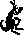
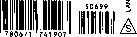

Fully Revised and Expanded!
The Most Effective Vocabulary Builder in the English Language! Word Power Made Easy
Nornian Lewis
The simple, step-by-step method that will increase your knowledge and mastery of the English Language.
The Complete Handbook for BuildingaSuperior Vocabulary
• Speak and write with confidence.
• Read more effectively and efficiently.
• Learn quickly.
• Develop social contacts.
• Increase your earning power.
Each of these phrases contains one italicized word. Check the closest definition of each such word. To keep your score valid, refrain, as far as possible, from wild guessing.
1. disheveled appearance: (a) untidy, (b) fierce, (c) foolish, (d) pecul'ar, (e) unhappy
2. a baffling problem: (a) difficult, (b) simple, (c) puzzling, (d) long, (e) new
3. lenient parent: (a) tall, (b) not strict, (c) wise, (d) foolish, (e) severe
4. repulsive personality: (a) disgusting, (b) attractive, (c) normal, (d) confused, (e) conceited
5. audacious attempt: (a) useless, (b) bold, (c)foolish, (d) crazy, (e) necessary
6. parry a blow: (a) ward off, (b) fear, (c) expect, (d) invite, (e) ignore
7. prevalent disease: (a) dangerous, (b) catching, (c) childhood, (d) fatal, (e) widespread
8. ominous report: (a) loud, (b) threatening, (c) untrue, (d) serious, (e) unpleasant
9. an incredible story: (a) true, (b) interesting, (c) well-known, (d) unbelievable, (e) unknown
10. an ophthalmologist: (a) eye doctor, (b) skin doctor, (c) foot doctor, (d) heart doctor, (e) cancer specialist
11. will supersede the old law: (a) enforce, (b) specify penalties for, (c) take the place of, (d) repeal, (e) continue
12. an anonymous donor: (a) generous, (b) stingy, (c) well-known, (d) one whose name is not known, (e) reluctant
13. performed an autopsy: (a) examination of living tissue, (b) examination of a corpse to determine the cause of death, (c) process in the manufacture of optical lenses, (d) operation to cure an organic disease, (e) series of questions to determine the causes of delinquent behavior
14. an indefatigable worker: (a) well-paid, (b) tired, (c) skillful, (d) tireless, (e) pleasant
15. a confirmed atheist: (a) bachelor, (b) disbeliever in God, (c) believer in religion, (d) believer in science, (e) priest
Books by Norman Lewis
30 Days to a More Powerful Vocabulary (written with Wilfred Funk)
Word Power Made Easy
Published by POCKET BOOKS
Norman Lewis
The Complete Handbook for Building A Superior Vocabulary
Expanded and Completely Revised Edition
POCKET BOOKS
New York London Toronto Sydney
The sale of this book without its cover is unauthorized. If you purchased this book without a cover, you should be aware that it was reported to the publisher as "unsold and destroyed." Neither the author nor the publisher has received payment for the sale of this “stripped book."
For information regarding special discounts for bulk purchases, please contact Simon & Schuster Special Sales at 1-800-456-6798 or business@simonandschuster.com
The extract from “Be a Perfect Speller in 30 Minutes,” by Norman Lewis, is copyright, 1946, by Esquire, Inc. Reprinted from February 1946 Coronet.
The extract from “How to Spell a Word,” by Norman Lewis, is copyright, 1948, by Esquire, Inc. Reprinted from January 1949 Coronet.
The extract from “Mind Over Grammar,” by Norman Lewis, is copyright, 1947, by Fawcett Publications, Inc.
The extract from “Can You Catch a Misspelled Word,” by Norman Lewis, is copyright, 1948, by Fawcett Publications, Inc.
The extract from “Watch That Word,”by Norman Lewis, is copyright, 1948, by Fawcett Publications, Inc.
POCKET BOOKS, a division of Simon & Schuster, Inc. 1230 Avenue of the Americas, New York, NY 10020
Copyright 1949, © 1978 by Norman Lewis
All rights reserved, including the right to reproduce this book or portions thereof in any form whatsoever.
For information address Doubleday and Company, Inc., 245 Park Avenue, New York, NY 10017
ISBN -13: 978-0-671-74190-7
ISBN-10: 0-671-74190-X
First Pocket Books printing (revised edition) August 1979
50 49 48
POCKET and colophon are registered trademarks of Simon & Schuster, Inc.
Printed in the U.S.A.
My family and friends, who accepted, without apparent resentment and with barely audible complaint, my complete self-isolation during the many months in which I totally and shamefully neglected them while working on the revision of this book.
Especially: Mary; Margie Baldinger and the kids; Debbie and Allen Hubbert; Milton Lewis; Karen and Bob Kopfstein; Leonard Vogel, one of America’s great painters, and Shirley; gourmet cooks David and Janice Potts; Seymour and Nan Prog; Ruth and Leo; Dave and Jan Hopkins; Carol and Maryin Colter; Bob Finnerty, my chess opponent, who says that winning is all that counts; Doris Garcia; Eleanor and Robert Poitou; Mary El and Dick Gayman—
Walter Garcia, Len Grandy, Don Jenkins; Sally Landsburg; Ted and Margaret Snyder; Jean Bryan; Rhoda and Ralph Duene-wald; George and Phyllis Juric; Bob and Monica Myers, Tony and Kathy Garcia, Jean Kachaturian; Margie Lopez and Jo Watson—
Myrtle and Ace, Donny and Estelle, Helen and Ben, Judy and Bob, Doris and Muriel, Danny and Mary; in memoriam, Max and Frances—
Larry Scher, Chuck Nichamin, Sue Sullivan, Rosemary and Debbie Greenman, Alice Hessing, Dave and Lynn Bisset, Danny Hernandez, John Arcadi and Peggy Arcadi, Norm Ashley, Aaron Breitbart—
Lorin and Gloria Warner, Marty and Ros Chodos, Mahlon and Gwen Woirhaye, Leon and Kay East, Marijane and Paul Paulsen, Helen and Russ Hurford, Elior and Sally Kinarthy__
Carolyn Russell, Rod Sciborski, Vera Laushkin, John Hahn, Liz Johnson, Leonora Davila, Jim Hawley, Jerry Lenington, Jay Loughran, Susan Obler, Marilyn Houseman, Rita Scott, Chris Hamilton, Joan Nay, Mary Lewis, Virginia Sandoval, Hazel Haas—
The staff and all my students at Rio Hondo College—
My editor at Doubleday, Jean Anne Vincent, who so patiently and cheerfully goaded, prodded, pushed, wheedled, and cajoled me into finishing on time.
Also: I wish to thank Karen Kopfstein and Peggy Chulack for their promptness and care in typing the manuscript.
Whittier, California
January 1978
How to Use This Book for Maximum Benefit xv
Why this is not a book to be read; how to learn to pronounce the new words correctly; how the etymological approach works better than any other method for learning words quickly and permanently; how to master nouns, verbs, adjectives, and adverbs in five to ten minutes; how to use the psychological principles of learning to sharpen your verbal skills.
PART ONE GETTING OFF TO A GOOD START
1. How to Test Your Present Vocabulary 3
How vocabulary growth of the average adult compares with that of children; a simple test to show you whether your vocabulary is below average, average, above average, excellent, or superior in range, verbal speed, and responsiveness; important evidence of the close relationship between vocabulary and success.
2. How to Start Building Your Vocabulary 19
How building your vocabulary will enrich your thinking, increase your self-assurance in speaking and writing, and give you a better understanding of the world and of yourself; why it is necessary to recapture the “powerful urge to learn”; why your age makes little difference; how this book is designed to build a college-size vocabulary in two to three months.
3. How to Talk about Personality Types 26
{Sessions 1—3)
Words that describe all kinds and sorts of people, including terms for self-interest, reactions to the world, attitudes to others, skill and awkwardness, marital states, hatred of man, of woman, and of marriage. How one session of pleasant work can add more words to your vocabulary than the average adult learns in an entire year; why it is necessary to develop a comfortable time schedule and then stick to it.
4. How to Talk About Doctors {Sessions 4-6) 54
Words that relate to medical specialists and specialties. Terms for experts in disorders of the female organs; childhood diseases; skin ailments; skeletal deformities; heart ailments; disorders of the nerves, mind, and personality. How selfdiscipline and persistence will ultimately lead to complete mastery over words.
5. How to Talk About Various Practitioners 81
(.Sessions 7-10)
Words that describe a variety of professions, including those dealing with the human mind; teeth; vision; feet; handwriting; aging; etc. How you are becoming more and more conscious of the new words you meet in your reading.
6. How to Talk About Science and Scientists 115
(Sessions 11-13)
Words that describe students of human development, of the heavens, of the earth, of plant and animal life, of insect forms, of words and language, of social organization. Books on psychology that will add immeasurably both to your store of new words and ideas, and also to your understanding of yourself and of other people.
7. How to Talk About Liars and Lying 148
(Sessions 14-17)
Words that accurately label different types of liars and lying. Terms that relate to fame, artistry, reform, heredity, time, place, suffering, etc. Four lasting benefits you have begun to acquire from your work in vocabulary building.
8. How to Check Your Progress: Comprehensive
Test I (Session 18)
182
A 120-item test of your learning in Part I.
PART TWO GAINING INCREASED MOMENTUM
(Sessions 19-23)
Verbs that accurately describe important human activities. Excursions into expressive terms for good and evil, doing, saying, wishing, and pleasing. Further proof that you can learn, in a few weeks or less, more new words than the average adult learns in an entire year.
Words that explore in depth all degrees and kinds of talk and silence. More books that will increase your alertness to new ideas and new words.
(Sessions 28-31) •
Terms for describing a disciplinarian, toady, dabbler, provocative woman, fiag-waver, possessor of a one-track mind, freethinker, sufferer from imaginary ailments, etc. Excursions into words relating to father and mother, murder of all sorts, sexual desires, and various manias and phobias. Magazines that will help you build your vocabulary.
(Sessions 32—37)
Terms for describing friendliness, energy, honesty, mental keenness, bravery, charm, sophistication, etc. Excursions into expressive words that refer to ways of eating and drinking, believing and disbelieving, looking and seeing, facing the present, past, and future, and living in the city and country. How the new words you are learning have begun to influence your thinking.
191
239
282
341
A 120-item test of your achievement in Part II.
PART THREE FINISHING WITH A FEELING OF COMPLETE SUCCESS
Occurrences (Sessions 39-41) 401
Words for poverty and wealth, direct and indirect emotions, not calling a spade a spade, banter and other light talk, animallike contentment, homesickness, meat-eating, and different kinds of secrecy. Excursions into terms expressive of goodness, of hackneyed phraseology, of human similarity to various animals, of kinds of sound, etc. How to react to the new words you meet in your reading.
(Sessions 42-44)
Verbs that show exhaustion, criticism, selfsacrifice, repetition, mental stagnation, pretense, hinting, soothing, sympathizing, indecision, etc. How you can increase your vocabulary by picking your friends’ brains.
Adjectives that describe insincere humility, dissatisfaction, snobbery, courtesy to women, financial embarrassment, sadness, etc. How increasing your vocabulary has begun to change the intellectual climate of your life.
A 120-item test of your achievement in Part III.
" Answers to Teaser Questions in Chapters 3-7,9-12, and 14-16.
The five simple, but vital, steps to take so that you can keep your vocabulary ever developing, ever increasing. How your vocabulary will continue to grow only if you remain on the search for new ideas. The best means for making this search successful.
Appendix: Some Esoteric Phobias
A thirty-sentence test of your ability to use words correctly. Is your English average, above average, or nearly perfect?
76
Grammatical usage is becoming more liberal every day—is your speech neither affected nor illiterate? Simple rules for fifteen important expressions.
109’
Grammar follows the speech habits of educated people—how does your' grammar measure up in your use of nine common expressions?
143
There is no reason for being overprecise in your speech—but do you also avoid barbarisms and illiterate expressions?
Nine more expressions of which you must be careful.
A twenty-five sentence check on your increasing linguistic ability.
How words come from the names of people and places.
You can eliminate all your spelling difficulties—provided you know the tricks.
Proof that you are becoming a better speller.
Further tests to nail home the correct spellings of common but difficult words.
1. this is not a reading book . . .
Don’t read this book!
Instead, -work with it. Write in it, talk aloud to it, talk back to it—use your pen or pencil, your voice, not just your eyes and mind.
Learning, real learning, goes on only through active participation.
When a new word occurs in a chapter, say it aloud! (The phonetic respelling will help you pronounce it correctly.) *
When you do the matching exercises, use a pen or pencil. Write your responses! (Check the key that immediately follows each exercise after you have filled in all the answers.)
When you do the “Yes-No,” “True-False,” or “Same-Opposite” exercises, use your pen or pencil to indicate the appropriate response, then check with the key when you have completed the whole exercise.
When you are asked to fill in words that fit definitions, write your answers; then check the key both to see if you have re-
* The system of pronunciation symbols will be thoroughly explained in Section 2 of this chapter.
sponded with the right word and also to make sure your spelling is correct
When you do the Review of Etymology exercises, make sure to fill in the English word containing the prefix, root, or suffix required—use a chapter word, or any other word that comes to mind. (Coin words if you like!)
Pay special attention to the Chapter Reviews. Are the words still fresh in your mind? Do you remember the meaning of each root studied in the previous sessions? In these Reviews, you are not only testing your learning but also tightening up any areas in which you discover lacks, weaknesses, or lapses of memory.
2. master the pronunciation system!
.Saying words aloud, and saying them right, is half the battle in feeling comfortable and assured with all the new words you are going to learn. Every word taught is respelled to show its pronunciation, so pay close attention to how the phonetic symbols work.
(a) First, master the “schwa"!
Almost every English word of two or more syllables contains one or several syllables in which the vowel sound is said very quickly. For example:
“Linda spoke to her mother about a different idea she had.” ->Read the previous sentence aloud at normal conversational speed.
Read it again. Listen to how the -a of Linda; the -er of mother; the a- of about; the -er and -ent of different; and the -a of idea sound.
Very quick—very short! Right?
Phonetically respelled, these words are represented as:
|
1. Linda |
LIN'-da |
|
2. mother |
MUTH'-ar |
|
3. about |
a-BOWT' |
|
4. different |
DIF'-ar-ant |
|
5. idea |
I-DEE'-a |
The symbol “a,” called a schwa, represents the quick, short vowel sound in the five words above.
|
Now look back at the sentence preceded by an arrow. The italicized words are rewritten as: | ||||||||||
|
You will find a in almost all words that are phonetically respelled throughout this book. Say the five italicized words aloud and make sure you understand how the schwa (a) sounds.
(b) Next, understand accent.
Look at word (5) above: conversational: kon'-var-SAY'-shan-al. Note that there are two accent marks, one on kon’, another on SAY'. Note also that kon' is in lower-case letters, SA Y' in capitals. Both syllables are stressed, but the one in capitals (SA Y') sounds stronger (or louder) than the one in lower case (kon'). Say conversational aloud, noting the difference.
Say these three words, taken from Chapter 3, aloud, noticing the variation in stress between the lower-case and the capitalized syllables:
1. egomaniacal
2. altercation
3. anthropological
ee'-go-ma-Nl'-a-kal awl'-tar-KAY'-shan an'-thra-pa-LOJ'-a-kal
(c) Be careful of the letter "S" (or "s”) in phonetic respellings. S (or s) is always hissed, as in see, some, such. After an -n, you will be tempted to buzz (or “voice”) the -s, because final -ns is usually pronounced -nz, as in wins, tons, owns, etc. (Say these three words aloud—hear the z at the end?) Resist the temptation! S (or s) is always hissed in phonetic respellings!
Say these words aloud:
|
1. ambivalences |
am-BIV'-a-lans |
|
2. affluence |
AF'-lfib-ans |
|
3. opulence |
OP'-ya-lans |
|
4. sentence |
SEN'-tans |
t All unusual words in this chapter are taught in later chapters of the book.
xvii
|
(d) The symbol t or I is pronounced eye, to rhyme with high, sigh, my, etc., no matter where you find it. For example: | ||
| ||
|
[Z or i (without the top bar) is pronounced as in it, sit, pitch.] |
(e) All consonants have their normal sounds.
Except for G (or g), which is always pronounced as in give, girl, get, go.
1. agree a-GREE'
2. pagan PAY'-gan
3. again a-GEN'
|
(f) The vowel sounds are as follows: | ||||||||||||||||||||||||||||||||||||||||||
| ||||||||||||||||||||||||||||||||||||||||||
|
(g) TH or th is pronounced as in thing; TH or th is pronounced as in this. |
3. a word (or words) on western and eastern pronunciation
In the New York City area, and in parts of New Jersey and other eastern states, the syllables -ar, -er, -or, -off, and -aw are pronounced somewhat differently from the way they are said in the Midwest and in the West.
In New York City, for example, the words below are generally
|
pronounced as follows: | |
|
orange |
AHR'-anj |
|
talk |
TAWK |
|
coffee |
KAW'-fee |
|
sorority |
sa-RAHR'-a-tee |
|
incorrigible |
in-KAHR'-a-ja-bal |
|
disparage |
dis-PAR'-aj (A as in HAT) |
|
merry |
MER'-ee (E as in WET) |
|
marry |
MAR'-ee (A as in HAT) |
|
astronaut |
AS'-tra-nawt' |
|
Harry |
HAR'-ee (A as in HAT) |
In the Midwest and West, on the other hand, the same words are usually said approximately as follows:
|
orange |
AWR'-anj |
|
talk |
TOK |
|
coffee |
KOF'-ee |
|
sorority |
sa-RAWR'-a-tee |
|
incorrigible |
in-KAWR'-a-ja-bal |
|
disparage |
dis-PAIR'-aj |
|
merry |
MAIR'-ee |
|
marry |
MAIR'-ee |
|
astronaut |
AS'-tra-not' |
|
Harry |
HAIR'-ee |
Nothing so radical here that a person brought up in Brooklyn or the Bronx cannot understand a native of Los Angeles or San Francisco—it’s just that each one thinks the other has an accent!
In California, for example, Mary, merry, and marry sound al-
most exactly alike—in New York, they are usually heard as quite diSerent words.
(So, to be sexist for a moment, if the men at a party in Manhattan say, “Let’s all make merry!”, Mary doesn’t feel that she is about to seduced by the males!)
In the phonetic respellings throughout the book, the western pronunciations of words with the syllables remarked on above are used. This is done largely because I myself have lived in the Los Angeles area for some fourteen years, and have had to retrain my pronunciation (having come from New York City, where I was born, and lived all my life until 1964) so that my friends and students would stop making fun of the way I speak.
Neither form of pronunciation is any better nor any more euphonious than the other. Throughout the country, pronunciation varies not only from region to region or state to state, but often from city to city! The changes are slight and subtle, but they do exist, and an expert can easily pinpoint the geographical source of a person’s language patterns almost down to a few square miles in area.
If you are an Easterner, you will have no difficulty translating the pronunciations of words like sorority, incorrigible, disparage, and astronaut (all words discussed in later chapters) into your own comfortable language patterns.
4. why etymology?
Etymology (ef-a-MOL'-a-jee) deals with the origin or derivation of words.
When you know the meaning of a root (for example, Latin ego, I or self), you can better understand, and more easily remember, all the words built on this root.
Leant one root and you have the key that will unlock the meanings of up to ten or twenty words in which the root appears.
Learn ego and you can immediately get a handle on egocentric, egomaniac, egoist, egotist, and alter ego.
Learn anthropos (Greek, mankind), and you will.quickly understand, and never forget, anthropology, misanthropy, anthropoid, anthropocentric, anthropomorphic, philanthropy, and anthropophobia. Meet any word with anthropo- in it, and you will have at least some idea of its meaning.
In the etymological (et'a-ma-LOJ'-a-kal) approach to vocabulary building:
• You will learn about prefixes, roots, and suffixes—
o You will be able to figure out unfamiliar words by recognizing their structure, the building blocks from which they are constructed—
• You will be able to construct words correctly by learning to put these building blocks together in the proper way—and
• You will be able to derive verbs from nouns, nouns and verbs from adjectives, adjectives from nouns, etc.—and do all this correctly.
Learn how to deal with etymology and you will feel comfortable with words—you will use new words with self-assurance—you will be able to figure out thousands of words you hear or read even if you have never heard or seen these words before.
That’s why the best approach to new words is through etymol-°gyt—as you will discover for yourself as soon as you start to work on chapter 3!
5. but what are nouns, verbs, and adjectives?
You probably know.
But if you don’t, you can master these parts of speech (and reference will be made to noun forms, verb forms, and adjective forms throughout the book) within the next five minutes.
(a) A noun is a word that can be preceded by a, an, the, some, such, or my.
An egoist (noun)
t Incidentally, Latin scholars will notice that I present a Latin verb in the first person singular, present tense (yerto, I turn), but call it an infinitive (yerto, to turn). I do this for two reasons: 1) verto is easier for a nonLatin scholar to pronounce (the actual infinitive, vertere, is pronounced WAIR'-to-ray); and 2) when I studied Latin fifty years ago, the convention was to refer to, a verb by using the first person singular, present tense.
If you are not a Latin scholar, you need not bother to read this footnote—if you’ve already done so, forget it!
Such asceticism (noun)
The misogynist (noun)
(Nouns, you will discover, often end in conventional suffixes: -ness, -ity, -Ism, -y,-ion, etc.)
(b) A verb is a word that fits into the pattern, “Let us ---------;_______________________” A verb has a past tense.
Let us equivocate (verb)—past tense: equivocated.
Let us alternate (verb)—past tense: alternated.
Let us philander (verb)—past tense: philandered.
(Verbs, you will discover, often end in conventional suffixes: -ate, -ize, -fy, etc.)
(c) An adjective is a word that fits into the pattern, “You are very”
You are very egoistic (adjective).
You are very introverted (adjective).
You are very misogynous (adjective).
(Adjectives, you will discover, often end in conventional suffixes: -ic, -ed, -ous, -al, -ive, etc.)
And adverbs, of course, are generally formed by adding -ly to an adjective: misogynous-misogynously; educational-education-ally; etc.
That’s all there is to it! (Did it take more than five minutes? Maybe ten at the most?)
6. how to work for best results
If you intend to work with this book seriously (that is, if your clear intention is to add a thousand or more new words to your present vocabulary—add them permanently, unforgettably—add them so successfully that you will soon find yourself using them in speech and writing), I suggest that you give yourself every advantage by carefully following the laws of learning:
(a) Space your learning.
Beginning with Chapter 3, every chapter will be divided into “sessions.” Each session may take one half hour to an hour and a half, depending on the amount of material and on your own speed of learning.
Do one or two sessions at a time—three if you’re going strong and are all involved—and always decide when you stop exactly ■when you will return. (I remind you to do this later in the book, since such a procedure is of crucial importance.)
(b) Do not rush—go at your own comfortable speed.
Everyone learns at a different pace. Fast learners are no better than slow learners—it’s the end result that counts, not the time it takes you to finish.
(c) Review.
When you start a new session, go back to the last exercise of the previous session (usually Can you recall the words? or Chapter Review), cover your answers, and test your retention—do you have quick recall after a day or so has elapsed?
(d) Test yourself.
You are not aiming for a grade, or putting your worth on the line, when you take the three Comprehensive Tests (Chapters 8, 13, and 17)—rather you are discovering your weaknesses, if any; deciding where repairs have to be made; and, especially, experiencing a feeling of success at work well done. (In learning, too, nothing succeeds like success!)
Use these three tests, as well as the abundant drill exercises, as aids to learning. No one is perfect, no one learns in the exact same way or at the same rate as anyone else. Find the optimum technique and speed for your unique learning patterns—and then give yourself every opportunity to exploit your actual, latent, and potential abilities.
But most important (as I will remind you several times throughout the book)—develop a routine and stick to it!
Occasionally in these pages, owing to the deficiency of the English language, I have used he/him/his meaning he or she/him or her/his or her in order to avoid awkwardness of style.
He, him, and his are not intended as exclusively masculine pronouns—they may refer to either sex or to both sexes.
Word Rower Made Easy
PART ONE
GETTING OFF TO A GOOD START
Once—as a child—you were an expert, an accomplished virtuoso, at learning new words.
Today, by comparison, you are a rank and bumbling amateur.
Does this statement sound insulting?
It may be—but if you are the average adult, it is a statement that is, unfortunately, only too true.
Educational testing indicates that children of ten who have grown up in families in which English is the native language have recognition vocabularies of over twenty thousand words—
A nd that these same ten-year-olds have been learning new words at a rate of many hundreds a year since the age of four.
In astonishing contrast, studies show that adults who are no longer attending school increase their vocabularies at a pace slower than twenty-five to fifty words annually.
How do you assess your own vocabulary?
Is it quantitatively healthy?
Rich in over-all range?
Responsive to any situation in which you may find yourself?
Truly indicative of your intellectual potential?
More important, is it still growing at the same rapid clip as when you were a child?
Or, as with most adults, has your rate of increase dropped drastically since you left school? And if so, do you now feel that your vocabulary is somewhat limited, your verbal skills not as sharp as you would like them to be?
Let us check it out.
I challenge you to a series of tests that will measure your vocabulary range, as well as your verbal speed and responsiveness.
A TEST OF VOCABULARY RANGE
Here are sixty brief phrases, each containing one italicized word; it is up to you to check the closest definition of each such word. To keep your score valid, refrain, as far as possible, from wild guessing. The key will be found at the end of the test.
1. disheveled appearance: (a) untidy; (b) fierce, (c) foolish, (d) peculiar, (e) unhappy
2. a baffling problem: (a) difficult, (b) simple, (c) puzzling, (d) long, (e) new
3. lenient parent: (a) tall, (b) not strict, (c) wise, (d) foolish, (e) severe
4. repulsive personality: (a) disgusting, (b) attractive, (c) normal, (d) confused, (e) conceited
5. audacious attempt: (a) useless, (b) bold, (c) foolish, (d) crazy, (e) necessary
6. parry a blow: (a) ward off, (b) fear, (c) expect, (d) invite, (e) ignore
7. prevalent disease: (a) dangerous, (b) catching, (c) childhood, (d) fatal, (e) widespread
8. ominous report: (a) loud, (b) threatening, (c) untrue, (d) serious, (e) unpleasant
9. an incredible story: (a) true, (b) interesting, (c) well-known, (d) unbelievable, (e) unknown
10. an ophthalmologist: (a) eye doctor, (b) skin doctor, (c) foot doctor, (d) heart doctor, (e) cancer specialist
11. will supersede the old law: (a) enforce, (b) specify penalties for, (c) take the place of, (d) repeal, (e) continue
12. an anonymous donor: (a) generous, (b) stingy, (c) well-known, (d) one whose name is not known, (e) reluctant
13. performed an autopsy: (a) examination of living tissue, (b) examination of a corpse to determine the cause of death, (c) process in the manufacture of optical lenses, (d) operation to cure an organic disease, (e) series of questions to determine the causes of delinquent behavior
14. an indefatigable worker: (a) well-paid, (b) tired, (c) skillful, (d) tireless, (e) pleasant
15. a confirmed atheist: (a) bachelor, (b) disbeliever in God, (c) believer in religion, (d) believer in science, (e) priest
16. endless loquacity: (a) misery, (b) fantasy, (c) repetitiousness, (d) ill health, (e) talkativeness
17. a glib talker: (a) smooth, (b) awkward, (c) loud, (d) friendly, (e) boring
18. an incorrigible optimist: (a) happy, (b) beyond correction or reform, (c) foolish, (d) hopeful, (e) unreasonable
19. an ocular problem: (a) unexpected, (b) insoluble, (c) visual, (d) continual, (e) imaginary
20. a notorious demagogue: (a) rabble-rouser, (b) gambler, (c) perpetrator of financial frauds, (d) liar, (e) spendthrift
21. a naive attitude: (a) unwise, (b) hostile, (c) unsophisticated, (d) friendly, (e) contemptuous
22. living in affluence: (a) difficult circumstances, (b) countrified surroundings, (c) fear, (d )wealth, (e) poverty
23. in retrospect: (a) view of the past, (b) artistic balance, (c) anticipation, (d) admiration, (e) second thoughts
24. a. gourmet: (a) seasoned traveler, (b) greedy eater, (c) vegetarian, (d) connoisseur of good food, fe) skillful chef
25. to simulate interest: (a) pretend, (b) feel, (c) lose, (d) stir up, (e) ask for
26. a magnanimous action: (a) puzzling, (b) generous, (c) foolish, (d) unnecessary, (e) wise
27. a clandestine meeting: (a) prearranged, (b) hurried, (c) important, (d) secret, (e) public
28. the apathetic citizens: (a) made up of separate ethnic groups, (b) keenly vigilant of their rights, (c) politically conservative, - . (d) indifferent, uninterested, uninvolved, (e) terrified
29. to placate his son: (a) please, (b) help, (c) find a job for, (d) make arrangements for, (e) change a feeling of hostility to one of friendliness
30. to vacillate continually: (a) avoid, (b) swing back and forth in indecision, (c) inject, (d) treat, (e) scold
31. a nostalgic feeling: (a) nauseated, (b) homesick, (c) sharp, (d) painful, (e) delighted
32. feel antipathy: (a) bashfulness, (b) stage fright, (c) friendliness, (d) hostility, (e) suspense
33. be more circumspect: (a) restrained, (b) confident, (c) cautious, (d) honest, (e) intelligent
34. an intrepid fighter for human rights: (a) fearless, (b) eloquent, (c) popular, (d) experienced, (e) famous
35. diaphanous material: (a) strong, (b) sheer and gauzy, (c) colorful, (d) expensive, (e) synthetic
36. a taciturn host: (a) stingy, (b) generous, (c) disinclined to conversation, (d) charming, (e) gloomy
37. to malign his friend: (a) accuse, (b) help, (c) disbelieve, (d) slander, (e) introduce
38. a congenital deformity: (a) hereditary, (b) crippling; (c) slight, (d) incurable, (e) occurring at or during birth
39. a definite neurosis: (a) plan, (b) emotional disturbance, (c) physical disease, (d) feeling of fear, (e) allergic reaction
40. made an unequivocal statement: (a) hard to understand, (b) lengthy, (c) politically motivated, (d) clear and forthright, (e) supporting
41. vicarious enjoyment: (a) complete, (b) unspoiled, (c) occurring from a feeling of identification with another, (d) long-continuing, (e) temporary
42. psychogenic ailment: (a) incurable, (b) contagious, (c) originating in the mind, (d) intestinal, (e) imaginary
43. an anachronous attitude: (a) unexplainable, (b) unreasonable, (c) belonging to a different time, (d) out of place, (e) unusual
44. her iconoclastic phase: (aj artistic, (b) sneering at tradition, (c) troubled, (d) difficult, (e) religious
45. a tyro: (a) dominating personality, (b) beginner, (c) accomplished musician, (d) dabbler, (e) serious student
46. a laconic reply: (a) immediate, (b) assured, (c) terse and meaningful, (d) unintelligible, (e) angry
47. semantic confusion: (a) relating to the meaning of words,
(b) pertaining to money, (c) having to do with the emotions, (d) relating to mathematics, (e) caused by inner turmoil
48. cavalier treatment: (a) courteous, (b) haughty and highhanded, (c) negligent, (d) affectionate, (e) expensive
49. an anomalous situation: (a) dangerous, (b) intriguing, (c) unusual, (d) pleasant (e) unhappy
50. posthumous child: (a) cranky, (b) brilliant, (c) physically weak, (d) illegitimate, (e) bom after the death of the father
51. feels enervated: (a) full of ambition, (b) full of strength, (c) completely exhausted, (d) troubled, (e) full of renewed energy
52. shows perspicacity: (a) sincerity, (b) mental keenness, (c) love, (d) faithfulness, (e) longing
53. an unpopular martinet: (a) candidate, (b) supervisor, (c) strict disciplinarian, (d) military leader, (e) discourteous snob
54. gregarious person: (a) outwardly calm, (b) very sociable, (c) completely untrustworthy, (d) vicious, (e) self-effacing and timid
55. generally phlegmatic: (a) smug, self-satisfied, (b) easily pleased, (c) nervous, high-strung, (d) emotionally unresponsive, (e) lacking in social graces
56. an inveterate gambler: (a) impoverished, (b) successful, (c) habitual, (d) occasional, (e) superstitious
57. an egregious error: (a) outstandingly bad, (b) slight, (c) irreparable, (d) unnecessary, (e) deliberate
58. cacophony of a large city: (a) political administration, (b) crowded living conditions, (c) cultural advantages, (d) unpleasant noises, harsh sounds, (e) busy traffic
59. a prurient adolescent: (a) tall and gangling, (b) sexually longing, (c) clumsy, awkward, (d) sexually attractive, (e) soft-spoken
60. uxorious husband: (a) henpecked, (b) suspicious, (c) guilty of infidelity, (d) fondly and foolishly doting on his wife, (e) tightfisted, penny-pinching
KEY: 1-a, 2-c, 3-b, 4-a, 5-b, 6-a, 7-e, 8-b, 9-d, 10-a, 11-c, 12-d, 13-b, 14-d, 15-b, 16-e, 17-a, 18-b, 19-c, 20-a,
21-c, 22-d, 23-a, 24-d, 25-a, 26-b, 27-d, 28-d,
30-b, 31-b, 32-d, 33-c, 34-a, 35-b, 36-c, 37-d,
39-b, 40-d, 41-c, 42-c, 43-c, 44-b, 45-b, 46-c,
48-b, 49-c, 50-e, 51-c, 52-b, 53-c, 54-b, 55-d,
57-a, 58-d, 59-b, 60-d
Your score (one point for each correct choice):
The Meaning of Your Score:
0-11: below average 12-35: average
36-48: above average 49-54: excellent
55-60: superior
A TEST OF VERBAL SPEED
PART 1
This is a timed test.
In no more than three minutes (time yourself, or have someone time you), decide whether the word in column B is the same (or approximately the same) in meaning as the word in column A; opposite (or approximately opposite) in meaning; or whether the two words are merely different.
Circle S for same, O for opposite, and D for different.
You will not have time to dawdle or think too long, so go as fast as you can.
|
COLUMN A |
COLUMN B | ||||
|
1. |
sweet |
sour |
S |
o |
D |
|
2. |
crazy |
insane |
S |
o |
D |
|
3. |
stout |
fat |
S |
o |
D |
|
4. |
big |
angry |
S |
o |
D |
|
5. |
danger |
peril |
S |
o |
D |
|
6. |
help |
hinder |
s |
o |
D |
|
7. splendid |
magnificent |
S |
0 |
D |
|
8. love |
hate |
S |
o |
D |
|
9. stand |
rise |
S |
0 |
D |
|
10. furious |
violent |
S |
o |
D |
|
11. tree |
apple |
S |
o |
D |
|
12. doubtful |
certain |
S |
o |
D |
|
13. handsome |
ugly |
S |
o |
D |
|
14. begin |
start |
S |
0 |
D |
|
15. strange |
familiar |
S |
o |
D |
|
16. male |
female |
s |
o |
D |
|
17. powerful |
weak |
s |
o |
D |
|
18. beyond |
under |
s |
o |
D |
|
19. live |
die |
s |
o |
D |
|
20. go |
get |
s |
o |
D |
|
21. return |
replace |
s |
0 |
D |
|
22. growl |
weep |
s |
0 |
D |
|
23. open |
close |
s |
o |
D |
|
24. nest |
home |
s |
o |
D |
|
25. chair |
table |
s |
o |
D |
|
26. want |
desire |
s |
o |
D |
|
27. can |
container |
s |
0 |
D |
|
28. idle |
working |
s |
o |
D |
|
29. rich |
luxurious |
s |
0 |
D |
|
30. building |
structure |
s |
o |
D |
PART 2
This is also a timed test.
In no more than three minutes (again, time yourself or have someone time you), write down as many different words as you can think of that start with the letter D.
Do not use various forms of a word, such as do, doing, does, done, doer, etc.
Space is provided for 125 words. You are not expected to reach that number, but write as fast as you can and see how many blanks you can fill in before your time is up.
1. _______________________________________________________________________________
3. ___________________________:___________________________________________________________________
4. ______________________________:.__________________________________________________________
5. ____________________________________________________________;_____________________________________________
6. _______________________________________________________________________
7. ______________;__________________________________________________________________________________________
8. _________________________________________________________________________
9. _________________________________________________________________________________;________________________
10. ______________________________________________________________
11. _______________________________________________________________
12. ______________________________________________________________
13. _______________________________________________________________
14. _______________________________;_______________________________________________________
15. _____:_________________________________________________________________
16. ____________________________________________________________________
17. ;__________________
18 :_____________________________________
19. ________________________;______________________________________________________________
20. _________________________________________________________________________.
21. ___________________________________________________________
22. _______________________________________________________________
23.____________________________________________________________
24. ___________________________________________________________
25__
26. __________________________________________________________
27. ____________________________:____________________________________________
28. ___________________________________________________________
30. _______________________________________________________
34. ______________________________________________________________
35. ______________________________________________________________
36. ___________________________________________________________________:__________
37__
38. _______________________________________________________________
39. ______________________________________________________________
40. ______________________________________________________________
41. _
42 i___________________________________________________
43. ______________________________________________________________
44. ______________________________________________________________
45. .__________________________________________________—
46. :-------
47 x____________________________________________
48. ___________________________________________________________
49. __________I____________________________;---------------------------------------
50__:--------
51. ___________________________________________________________________-
52. ___________________________________________________________________-
53. :_____________________________________________________________
54. ___________________________________________________________
55__:--------
56. _____________________________________________________________;________________
57. ;____________i------
58. ___________________________________________________________
59__
60___
61. ___________________________________________________________
62. ___________________________________________________________
63. _______________________________________________________________
65__;___________________________
66__
67. _______________________________________________________________
68__;______
69--,_________________________________________
70. ___________________________________________________________
71. _______________________________________________________;_________________
72._________________________________________________;_______________________
73__
74. ___________________________________________________________
75. ___________________________________________________________
76._______________________________________:__________________________________
77. ___________________________________________________________
78. ______________________________________ —
79__
80. _______________________________________________________________
81. ___________________________________________________________
82. •____________________________________________________________________
83_____________________
84. ___________________________________________________________
85. _______________________________________________________________
86__
87. __________________________________________;_____________________________________
88. ___________________________________________________________
89. ___________________:________________________________________________
90. ___________________________________________________________
91. _______________________________________________________:_________________
92. ___________________________________________________________
93. ___________________________________________________________
94. ___________________________________________________________
96__
97___
98__:______________________________________________________________
99___
100__
101.____________________________________________________________'
102. ___________________________________________________________
103. ___________________________________________________________
104. ___________________________________________________________
105. __________________________:________________________________________
106. ;_______________
107. ____________________________________________________________
108. ________________________—
109. ■__________________________________________________________
110. ___________________________________________________________
111__
112. :__________________________________
113. ;________________________
114, 115. ___________________________________________________________
116.____________________________________________________________
117. ___________________________________________________________
118. ___________________________________________________________
119. ___________________________________________________________
120. _____________________________________________:___________________________
121. ____________________________________________________:_______________
122. ___________________________________________________________
123. ____________________________________________________________
124. ___________________________________________________________
125. _________________________________________________________
KEY: Part 1: 1-0, 2-S, 3-S, 4-D, 5-S, 6-0, IS, 8-0, 9-S, 10-S, 11-D, 12-0, 13-0, 14-S, 15-0, 16-0, 17-0, 18-D, 19-0, 20-D, 21-S, 22-D, 23-0, 24-S, 25-D, 26-S, 27-S, 28-0, 29-S, 30-S
Part 2: Any English word starting with D is correct unless it is merely another form of a previous word on the list.
Scoring:
PART 1
If you have up to 10 correct answers, credit your score with 25 points.
If you have 11-20 correct answers, credit your score with 50 points.
21-25 correct answers—75 points.
26-30 correct answers—100 points.
Your Score on Part 1:__________ —
PART 2
Up to 30 words: 25 points 31-50 words: 50 points 51-70 words: 75 points 71-125 words: 100 points
Your Score on Part 2:_______________
TOTAL SCORE
On Verbal Speed:______________
The meaning of your verbal speed score:
50: below average
75: average
100: above average 125-150: excellent 175-200: superior
A TEST OF VERBAL RESPONSIVENESS
PART 1
Write in the blank in column B a word starting with the letter P that is the same, or approximately the same, in meaning as the word given in column A.
Example: look peer
Warning: Every answer must start wiith the letter P.
| |||||||||||||||||||||||||||||||||||||||||||||||||||
|
14. location |
part 2
Write in the blank in column B a word starting with the letter G that is opposite, approximately opposite, or in contrast to the word given in column A.
Example: stop go
Warning: Every answer must start with the letter G.
A
1. lose
2. midget
3. special
4. lady
B ----------- 5. take --------- 6. moron ---------- 7. sad ---------- 8. boy
|
9. |
happy — |
------- 18. rough | |
|
10. |
plain — |
-------- 19. |
bride |
|
11. |
hello — |
-------- 20. |
ripe |
|
12. |
here — |
-------- 21. |
unwanting |
|
13. |
bad — |
------- 22. |
unprotected |
|
14. |
ugly — |
-------- 23. |
experienced |
|
15. |
stingy — |
------- 24. |
scarcity |
|
16. |
awkward — |
-------- 25. |
unappreciative |
|
17. little — | |||
KEY, Part 1: If more than one answer is given, count as correct any word you have written that is the same as any one of the answers.
1-pail, pan, 2-pants, 3-perhaps, possibly, probably, 4-pardon, 5-part, 6-probable, possible, perhaps, 7-pester, 8-pretty, 9-photograph, painting, 10-pick, 11-plain, 12-proceed, 13-plate, platter, 14-place, 15-pebble, 16-passive, 17-particular, picky, 18-pain, 19-palace, 20-pant, puff, 21-panic, 22-pair, 23-painter, 24-page, 25-pack
Part 2: If more than one answer is given, count as correct any word you have written that is the same as any one of the answers.
1-gain, get, gamer, grab, glean, grasp, grip, 2-gi-ant, gigantic, great, gross, 3-general, 4-gentleman, 5-give, 6-genius, 7-glad, gleeful, gleesome, 8-girl, 9-gloomy, glum, grieving, grumpy, 1 O-gaudy, grand, grandiose, 11-goodbye, 12-gone, 13-good, 14-good-looking, 15-generous, giving, 16-grace-ful, 17-great, giant, gigantic, 18-gentle, 19-groom, 20-green, 21-greedy, grasping, 22-guarded, 23-green, 24-glut, gobs, 25-grateful
Scoring:
Score Parts 1 and 2 together. Write in the blank the total number of correct responses you made:
The meaning of your verbal responsiveness score:
0-10: below average
11-20: average
21-30: above average
31-40: excellent
41-50: superior
VOCABULARY AND SUCCESS
Now you know where you stand. If you are in the below average or average group, you must consider, seriously, whether an inadequate vocabulary may be holding you back. (If you tested out on the above average, excellent, or superior level, you have doubtless already discovered the unique and far-reaching value of a rich vocabulary, and you are eager to add still further to your knowledge of words.)
Let us examine, briefly, some of the evidence that points to the close relationship between vocabulary and personal, professional, and intellectual growth.
The Human Engineering Laboratory found that the only common characteristic of successful people in this country is an unusual grasp of the meanings of words. The Laboratory tested the vocabularies of thousands of people in all age groups and in all walks of life—and discovered that those people drawing down the highest salaries made the highest scores. Consider very thoughtfully the explanation that the director of the Laboratory offered for the relationship between vocabulary and success:
“Why do large vocabularies characterize executives and possibly outstanding men and women in other fields? The final answer seems to be that words are the instruments by means of which men and women grasp the thoughts of others and with which they do much of their own thinking. They are the tools of thought.”
There is other evidence.
At many universities, groups of freshmen were put into experimental classes for the sole purpose of increasing their knowledge of English words. These groups did better in their sophomore, junior, and senior years than control groups of similarly endowed students who did not receive such training.
And still more evidence:
At the University of Illinois, entering students were given a simple twenty-nine-word vocabulary test. The results of this test could be used, according to Professor William D. Templeman, to make an accurate prediction of future academic success—or lack of success—over the entire four year college course. “If a student has a superior vocabulary,” states Professor Templeman, “it will probably follow that he will do better work academically.”
And finally:
Educational research has discovered that your I.Q. is intimately related to your vocabulary. Take a standard vocabulary test and then an intelligence test—the results in both will be substantially the same.
YOU CAN INCREASE YOUR VOCABULARY
The more extensive your vocabulary, the better your chances for success, other things being equal—success in attaining your educational goals, success in moving ahead in your business or professional career, success in achieving your intellectual potential.
And you can increase your vocabulary—faster and easier than you may realize.
You can, in fact, accomplish a tremendous gain in less than two to three months of concentrated effort, even if you do only one session a day—in less time if you do two or more sessions a day.
Furthermore—
You can start improving your vocabulary immediately—and within a jew days you can be cruising along at such a rapid rate that there will be an actual change in your thinking, in your ability to express your thoughts, and in your powers of understanding.
Does this sound as if I am promising you the whole world in a neat package with a pretty pink ribbon tied around it? I am. And I am willing to make such an unqualified promise because I have seen what happens to those of my students at New York University and at Rio Hondo College in Whittier, California, who make sincere, methodical efforts to learn more, many more, words.
When you have finished working with this book, you will no longer be the same person.
You ean’t be.
If you honestly read every page, if you do every exercise, if you take every test, if you follow every principle, you will go through an intellectual experience that will effect a radical change in you.
For if you systematically increase your vocabulary, you will also sharpen and enrich your thinking; push back your intellectual horizons; build your self-assurance; improve your facility in handling the English language and thereby your ability to express your thoughts effectively; and acquire a deeper understanding of the world in general and of yourself in particular.
Increasing your vocabulary does not mean merely learning the definitions of large numbers of obscure words; it does not mean memorizing scores of unrelated terms. What it means—what it can only mean—is becoming acquainted with the multitudinous and fascinating phenomena of human existence for which words are, obviously, only the verbal descriptions.
Increasing your vocabulary—properly, intelligently, and systematically—means treating yourself to an all-round, liberal education.
And surely you cannot deny that such an experience will change you intellectually—
Will have a discernible effect on your methods of thinking—on your store of information—on your ability to express your ideas —on your understanding of human problems.
HOW CHILDREN INCREASE THEIR VOCABULARIES
The typical ten-year-old, you will recall, has a recognition vocabulary of over twenty thousand words—and has been learning many hundreds of new words every year since the age of four.
You were once that typical child.
You were once an accomplished virtuoso at vocabulary building.
What was your secret?
Did you spend hours every day poring over a dictionary?
Did you lull yourself to sleep at night with Webster’s Unabridged?
Did you keep notebooks full of all the new words you ever heard or read?
Did you immediately look up the meaning of any new word that your parents or older members of your family used?
Such procedures would have struck you as absurd then, as absurd as they would be for you today.
You had a much better, much more effective, and considerably less self-conscious method.
Your method was the essence of simplicity: day in and day out you kept learning; you kept squeezing every possible ounce of learning out of every waking moment; you were an eternal question box, for you had a constant and insatiable desire to know and understand.
HOW ADULTS STOP BUILDING THEIR VOCABULARIES
Then, eventually, at some point in your adult life (unless you are the rare exception), you gradually lost your compulsive drive to discover, to figure out, to understand, to know.
Eventually, therefore, you gradually lost your need to increase your vocabulary—your need to learn the words that could verbalize your new discoveries, your new understanding, your new knowledge.
Roland Gelatt, in a review of Caroline Pratt’s book I Learn from Children, describes this phenomenon as follows:
All normal human beings are bom with a powerful urge to learn. Almost all of them lose this urge, even before they have reached maturity. It is only the few . . . who are so constituted that lack of learning becomes a nuisance. This is perhaps the most insidious of human tragedies.
Children are wonders at increasing their vocabularies because of their “powerful urge to learn.” They do not learn solely by means of words, but as their knowledge increases, so does their vocabulary—for words are the symbols of ideas and understanding.
(If you are a parent, you perhaps remember that crucial and trying period in which your child constantly asked “Why?” The “Why?” is the child’s method of finding out. How many adults that you know go about asking and thinking “Why?” How often do you yourself do it?)
The adults who “lose this urge,” who no longer feel that “lack of learning becomes a nuisance,” stop building their vocabularies. They stop learning, they stop growing intellectually, they stop changing. When and if such a time comes, then, as Mr. Gelatt so truly says, “This is perhaps the most insidious of human tragedies.” But fortunately the process is far from irreversible.
If you have lost the “powerful urge to learn,” you can regain it—you can regain your need to discover, to figure out, to understand, to know.
And thus you can start increasing your vocabulary at the same rate as when you were a child.
I am not spouting airy theory. For over thirty-five years I have worked with thousands of adults in my college courses in vocabulary improvement, and I can state as a fact, and without qualification, that:
If you can recapture the "powerful urge to learn” with which you were born, you can go on increasing your vocabulary at a prodigious rate—
No matter what your present age.
WHY AGE MAKES LITTLE DIFFERENCE IN VOCABULARY BUILDING
I repeat, no matter what your present age.
You may be laboring under a delusion common to many older people.
You may think that after you pass your twenties you rapidly and inevitably lose your ability to learn.
That is simply not true.
There is no doubt that the years up to eighteen or twenty are the best period for learning. Your own experience no doubt bears that out. And of course for most people more learning goes on faster up to the age of eighteen or twenty than ever after, even if they live to be older than Methuselah. (That is why vocabulary increases so rapidly for the first twenty years of life* and comparatively at a snail’s pace thereafter.)
But (and follow me closely)—
The fact that most learning is accomplished before the age of twenty does not mean that very little learning can be achieved beyond that age.
What is done by most people and what can be done under proper guidance and motivation are two very, very different things —as scientific experiments have conclusively shown.
Furthermore—
The fact that your learning ability may be best up to age twenty does not mean that it is absolutely useless as soon as your twentieth birthday is passed.
Quite the contrary.
Edward Thorndike, the famous educational psychologist, found in experiments with people of all ages that although the learning curve rises spectacularly up to twenty, it remains steady for at least another five years. After that, ability to learn (according to Professor Thorndike) drops very, very slowly up to the age of thirty-five, and drops a bit more but still slowly beyond that age.
And—
Right up to senility the total decrease in learning ability after age twenty is never more than 15 per cent!
That does not sound, I submit, as if no one can ever learn anything new after the age of twenty.
Believe me, the old saw that claims you cannot teach an old dog new tricks is a baseless, if popular, superstition.
So I repeat: no matter what your age, you can go on learning efficiently, or start learning once again if perhaps you have stopped.
You can be thirty, or forty, or fifty, or sixty, or seventy—or older.
No matter what your age, you can once again increase your vocabulary at a prodigious rate—providing you recapture the “powerful urge to learn” that is the key to vocabulary improvement.
Not the urge to learn “words”—words are only symbols of ideas.
But the urge to learn facts, theories, concepts, information, knowledge, understanding—call it what you will.
Words are the symbols of knowledge, the keys to accurate thinking. Is it any wonder then that the most successful and intelligent people in this country have the biggest vocabularies?
It was not their large vocabularies that made these people successful and intelligent, but their knowledge.
Knowledge, however, is gained largely through words.
In the process of increasing their knowledge, these successful people increased their vocabularies.
Just as children increase their vocabulary at a tremendous, phenomenal rate during those years when their knowledge is increasing most rapidly.
Knowledge is chiefly in the form of words, and from now on, in this book, you will be thinking about, and thinking with, new words and new ideas.
WHAT THIS BOOK CAN DO FOR YOU
This book is designed to get you started building your vocabulary—effectively and at jet-propelled speed—by helping you regain the intellectual atmosphere, the keen, insatiable curiosity, the “powerful urge to learn” of your childhood.
The organization of the book is based on two simple principles: 1) words are the verbal symbols of ideas, and 2) the more ideas you are familiar with, the more words you know.
So, chapter by chapter, we will start with some central idea— personality types, doctors, science, unusual occupations, liars, actions, speech habits, insults, compliments, etc.—and examine ten basic words that express various aspects of the idea. Then, using each word as a springboard, we will explore any others which are related to it in meaning or derivation, so that it is not unlikely that a single chapter may discuss, teach, and test close to one hundred important words.
Always, however, the approach will be from the idea. First there will be a “teaser preview” in which the ideas are briefly hinted at; then a “headline,” in which each idea is examined somewhat more closely; next a clear, detailed paragraph or more will analyze the idea in all its ramifications; finally the word itself, which you will meet only after you are completely familiar with the idea.
In the etymology (derivation of words) section, you will learn what Greek or Latin root gives the word its unique meaning and what other words contain the same, or related, roots. You will thus be continually working in related fields, and there will never be any possibility of confusion from “too muchness,” despite the great number of words taken up and tested in each chapter.
Successful people have superior vocabularies. People who are intellectually alive and successful in the professional or business worlds are accustomed to dealing with ideas, are constantly on the search for new ideas, build their lives and their careers on the ideas they have learned. And it is to readers whose goal is successful living (in the broadest meaning of the word successful) that this book is addressed.
A NOTE ON TIME SCHEDULES
From my experience over many years in teaching, I have become a firm believer in setting a goal for all learning and a schedule for reaching that goal.
You will discover that each chapter is divided into approximately equal sessions, and that each session will take from thirty to forty-five minutes of your time, depending on how rapidly or slowly you enjoy working—and bear in mind that everyone has an optimum rate of learning.
For best results, do one or two sessions at a time—spaced studying, with time between sessions so that you can assimilate what you have learned, is far more efficient, far more productive, than gobbling up great amounts in indigestible chunks.
Come back to the book every day, or as close to every day as the circumstances of your life permit.
Find a schedule that is comfortable for you, and then stick to it.
Avoid interrupting your work until you have completed a full session, and always decide, before you stop, exactly when you will plan to pick up the book again.
Working at your own comfortable rate, you will likely finish the material in two to three months, give or take a few weeks either way.
However long you take, you will end with a solid feeling of accomplishment, a new understanding of how English words work, and—most important—how to make words work for you.
(Sessions 1-3)
TEASER PREVIEW
What word best describes your personality if you:
• are interested solely in your own welfare?
• constantly talk about yourself?
• dedicate your life to helping others?
• turn your mind inward?
• turn your mind outward?
• hate humanity?
• hate women?
• hate marriage?
• lead a lonely, austere existence?
Every human being is, in one way or another, unique.
Everyone’s personality is determined by a combination of genetic and environmental factors.
Let us examine ten personality types (one of which might by chance be your very own) that result from the way culture, growth, family background, and environment interact with heredity.
And, of course, we begin not with the words, but with the ideas.
IDEAS
1. me first
Your attitude to life is simple, direct, and aboveboard—every decision you make is based on the answer to one question: “What’s in it for me?” If your selfishness, greed, and ruthless desire for self-advancement hurt other people, that’s too bad. “This is a tough world, pal, dog eat dog and all that, and I, for one, am not going to be left behind!”
An egoist
2. the height of conceit
“Now, let’s see. Have you heard about all the money I’m making? Did I tell you about my latest amorous conquest? Let me give you my opinion—I know, because I’m an expert at practically everything!” You are boastful to the point of being obnoxious—you have only one string to your conversational violin, namely, yourself; and on it you play a number of monotonous variations: what you think, what you have done, how good you are, how you would solve the problems of the world, etc. ad nauseam.
An egotist
3. let me help you
You have discovered the secret of true happiness—concerning yourself with the welfare of others. Never mind your own interests, how’s the next fellow getting along?
An altruist
4. leave me alone
Like a biochemist studying a colony of bacteria under the microscope, you minutely examine your every thought, feeling, and action. Probing, futile questions like “What do other people think of me?”, “How do I look?”, and “Maybe I shouldn’t have said that?” are your constant nagging companions, for you are unable to realize that other people do not spend as much time and energy analyzing you as you think.
You may seem unsocial, yet your greatest desire is to be liked and accepted. You may be shy and quiet, you are often moody and unhappy, and you prefer solitude or at most the company of one person to a crowd. You have an aptitude for creative work and are uncomfortable engaging in activities that require cooperation with other people. You may even be a genius, or eventually turn into one.
An introvert
5. let's do it together
You would be great as a teacher, counselor, administrator, insurance agent. You can always become interested—sincerely, vitally interested—in other people’s problems. You’re the life of the party, because you never worry about the effect of your actions, never inhibit yourself with doubts about dignity or propriety. You are usually happy, generally full of high spirits; you love to be with people—lots of people. Your thoughts, your interests, your whole personality are turned outward.
An extrovert
6. neither extreme
You have both introverted and extroverted tendencies—at different times and on different occasions. Your interests are turned, in about equal proportions, both inward and outward. Indeed, you’re quite normal—in the sense that your personality is like that of most people.
An ambivert
7. people are no damn good
Cynical, embittered, suspicious, you hate everyone. (Especially, but never to be admitted, yourself?) The perfectibility of the human race? “Nonsense! No way!” The stupidity, the meanness, and the crookedness of most mortals (“Most? Probably all!”)— that is your favorite theme.
A misanthrope
8. women are no damn good
Sometime in your dim past, you were crossed, scorned, or deeply wounded by a woman (a mother, or mother figure, perhaps?). So now you have a carefully constructed defense against further hurt —you hate all women.
A misogynist
9. “marriage is an institution—and who wants to live in an institution?"
You will not make the ultimate legal commitment. Members of the opposite sex are great as lovers, roommates, apartment- or house-sharers, but not as lawfully wedded spouses. The ties that bind are too binding for you. You may possibly believe, and possibly, for yourself, be right, that a commitment is deeper and more meaningful if freedom is available without judicial proceedings.
A misogamist
10. ". . . that the flesh is heir to . .
Self-denial, austerity, lonely contemplation—these are the characteristics of the good life, so you claim. The simplest food and the least amount of it that will keep body and soul together, combined with abstinence from fleshly, earthly pleasures, will eventually lead to spiritual perfection—that is your philosophy.
An ascetic
USING THE WORDS
You have been introduced to ten valuable words—but in each case, as you have noticed, you have first considered the ideas that these words represent. Now say the words—each one is respelled phonetically so that you will be sure to pronounce it correctly.*
Say each word aloud. This is the first important step to complete mastery. As you hear a word in your own voice, think of its meaning. Are you quite clear about it? If not, reinforce your learning by rereading the explanatory paragraph or paragraphs.
Can you pronounce the words?
1. egoist
EE'-go-ist EE'-go-tist AL'-tr<5b-ist IN'-tra-vurt' EKS'-tra-vurf AM'-ba-vurt'
2. egotist
3. altruist
4. introvert
5. extrovert
6. ambivert
* See Introduction, Section 2, Master the pronunciation system.
7. misanthrope
8. misogynist
9. misogamist
10. ascetic
MIS'-an-throp' ma-SOJ'-a-nist ma-SOG'-a-mist a-SET'-ik
Can you work with the words?
You have taken two long steps toward mastery of the expressive words in this chapter__you have thought about the ideas behind them, and you have said them aloud.
For your third step, match each personality with the appro
|
priate characteristic, action, or attitude. | ||||||||||||||||||||||||||||||||||||||||||||||||||||||||
| ||||||||||||||||||||||||||||||||||||||||||||||||||||||||
Do you understand the words?
Now that you are becoming more and more involved in these ten words, find out if they can make an immediate appeal to your understanding. Here are ten questions—can you indicate, quickly,
|
and without reference to any previous definitions, whether the correct answer to each of these questions is yes or no? | ||||||||||||||||||||||||||||||||||||||||||||||||||||||||||||
|
KEY: 1-yes, 2-no, 3-no, 4—yes, 5-no, 6-yes, 7-no, 8-no, 9-no, 10-yes
Can you recall the words?
You have thus far reinforced your learning by saying the words aloud, by matching them to their definitions, and by responding to meaning when they were used in context.
Can you recall each word, now, without further reference to previous material? And can you spell it correctly?
1. Who lives a lonely, austere life?
1. A_________________
2. E_________________
3. E_________:____________
4. M ________
5. A________________
2. Whose interests are turned outward?
3. Who is supremely selfish?
4. Who hates people?
5. Whose interests are turned both inward and outward?
6. Who is incredibly conceited? 6. E__________________
7. Who is more interested in the 7. A------------------
welfare of others than in his own?
8. Who hates women? 8. M__________:___:—
9. Whose interests are turned 9. I-------------------
inward?
10. Who hates marriage? 10. M-------:-------—
KEY: 1-ascetic, 2-extrovert, 3-egoist, 4-misanthrope, 5-ambi-vert, 6-egotist, 7-altruist, 8-misogynist, 9-introvert, 10-misogamist
(End of Session 1)
ORIGINS AND RELATED WORDS
Every word in the English language has a history—and these ten are no exception. In this section you will learn a good deal more about the .words you have been working with; in addition, you will make excursions into many other words allied either in meaning, form, or history to our basic ten.
1. the ego
Egoist and egotist are built on the same Latin root—the pronoun ego, meaning 1.1 is the greatest concern in the egoist’s mind, the most overused word in the egotist’s vocabulary. (Keep the ■words differentiated in your own mind by thinking of the t in talk, and the additional t in egotist.) Ego itself has been taken over from Latin as an important English word and is commonly used to denote one’s concept of oneself, as in, “What do you think your constant criticisms do to my ego?” Ego has also a special meaning in psychology—but for the moment you have enough problems without going into that.
If you are an egocentric (ee'-go-SEN'-trik), you consider yourself the center of the universe—you are an extreme form of the egoist. And if you are an egomaniac (ee'-go-MAY'-nee-ak), you carry egoism to such an extreme that your needs, desires, and interests have become a morbid obsession, a mania. The egoist or egotist is obnoxious, the egocentric is intolerable, and the egomaniac is dangerous and slightly mad.
Egocentric is both a noun (“What an egocentric her new roommate is!”) and an adjective (“He is the most egocentric person I have ever met!”).
To derive the adjective form of egomaniac, add -al, a common adjective suffix. Say the adjective aloud:
egomaniacal ee'-go-ma-NI'-a-kal
2. others
In Latin, the word for other is alter, and a number of valuable English words are built on this root.
Altruism (AL'-trOO-iz-am), the philosophy practiced by altruists, comes from one of the variant spellings of Latin alter, other. Altruistic (al-tr<5b-IS'-tik) actions look toward the benefit of others. If you alternate (AWL'-tar-nayt'), you skip one and take the other, so to speak, as when you play golf on alternate (AWL'-tar-nat) Saturdays.
An alternate (AWL'-tar-nai) in a debate, contest, or convention is the other person who will take over if the original choice is unable to attend. And if you have no alternative (awl-TUR'-na-tiv), you have no other choice.
You see how easy it is to understand the meanings of these words once you realize that they all come from the same source.
And keeping in mind that alter means other, you can quickly understand words like alter ego, altercation, and alteration.
An alteration (awl'-ta-RAY'-shan) is of course a change—a making into something other. When you alter (AWL'-tar) your plans, you make other plans.
An altercation (awl'-tar-KAY'-shan) is a verbal dispute. When you have an altercation with someone, you have a violent disagreement, a “fight” with words. And why? Because you have other ideas, plans, or opinions than those of the person on the other side of the argument. Altercation, by the way, is stronger than quarrel or dispute—the sentiment is more heated, the disagreement is likely to be angry or even hot-tempered, there may be recourse, if the disputants are human, to profanity or obscenity. You have altercations, in short, over pretty important issues, and the word implies that you get quite excited.
Alter ego (AWL'-tar EE'-go), which combines alter, other, with ego, I, self, generally refers to someone with whom you are so close that you both do the same things, think alike, react similarly, and are, in temperament, almost mirror images of each other. Any such friend is your other I, your other self, your alter ego.
USING THE WORDS
Can you pronounce the words?
Digging a little into the derivation of three of our basic words, egoist, egotist, and altruist, has put us in touch with two important Latin roots, ego, I, self, and alter, other, and has made it possible for us to explore, with little difficulty, many other words derived from these roots. Pause now, for a moment, to digest these new acquisitions, and to say them aloud.
|
1. ego |
EE'-go |
|
2. egocentric |
ee-go-SEN'-trik |
|
3. egomaniac |
ee-go-MAY'-nee-ak |
|
4. egomaniacal |
ee'-go-ma-NI'-a-kal |
| |||||||||||||||||||||||||||
|
Can you work with the words? (I) |
|
You have seen how these thirteen words derive from the two Latin roots ego, I, self, and alter, other, and you have pronounced them aloud and thereby begun to make them part of your active vocabulary. Are you ready to match definitions to words? | ||||||||||||||||||
| ||||||||||||||||||
|
other’s welfare above one’s own |
KEY: 1-d, 2-a, 3-f, 4-e, 5-b, 6-c
Can you work with the words? (II)
1. egomaniacal
2. altruistic
3. alternative
a. a change
b. other possible
c. interested in the welfare of others
4. alteration
5. alter ego
6. alternate (adj.)
d. one’s other self
e. a choice
f, morbidly, obsessively wrapped up in oneself
KEY: 1-f, 2-c, 3-e, 4-a ,5-d, 6-b
Do you understand the words?
|
If you have begun to understand these thirteen words, you will be able to respond to the following questions. | ||||||||||||||||||||||||||||||||||||||||||||||||||||||||||||||||||||||||||||
| ||||||||||||||||||||||||||||||||||||||||||||||||||||||||||||||||||||||||||||
|
yourself? |
KEY: 1-yes, 2-no, 3-no, 4-no, 5-no, 6-nO, 7-no, 8-yes, 9-no,
10-yes, 11-yes
Can you recall the words?
Haye you learned these words so well that you can summon each one from your mind when a brief definition is offered? Review first if necessary; then, without further reference to previous pages, write the correct word in each blank. Make sure to check
|
your spelling when you refer to the Key.
own
|
|
KEY: 1-alter ego, 2-alter, 3-altercation, 4-egomaniacal, 5-al-truistic, 6-egocentric, 7-alternative, 8-altemate
(End of Session 2)
ORIGINS AND RELATED WORDS
1. depends how you turn
Introvert, extrovert, and ambivert are built on the Latin verb verto, to turn. If your thoughts are constantly turned inward (.intro-'), you are an introvert; outward (extra-), an extrovert; and in both directions (ambi-), an ambivert. The prefix ambi-, both, is also found in ambidextrous (am'-ba-DEKS'-tras), able to use both hands with equal skill. The noun is ambidexterity (am'-ba-deks-TAIR'-a-tee).
Dexterous (DEKS'-ta-ras) means skillful, the noun dexterity (deks-TAIR'-a-tee) is skill. The ending -ous is a common adjective suffix (famous, dangerous, perilous, etc.); -ity is a common noun suffix (vanity, quality, simplicity, etc.).
(Spelling caution: Note that the letter following the t- in ambidextrous is -r, but that in dexterous the next letter is -e.)
Dexter is actually the Latin word for right hand—in the ambidextrous person, both hands are right hands, so to speak.
The right hand is traditionally the more skillful one; it is only within recent decades that we have come to accept that “lefties” or “southpaws” are just as normal as anyone else—and the term left-handed is still used as a synonym of awkward.
The Latin word for the left hand is sinister. This same word, in English, means threatening, evil, or dangerous, a further commentary on our early suspiciousness of left-handed persons. There may still be some parents who insist on forcing left-handed children to change (though left-handedness is inherited, and as much an integral part of its possessor as eye color or nose shape), with various unfortunate results to the child—sometimes stuttering or an inability to read with normal skill.
The French word for the left hand is gauche, and, as you would suspect, when we took this word over into English we invested it with an uncomplimentary meaning. Call someone gauche (GOSH) and you imply clumsiness, generally social rather than physical. (We’re right back to our age-old misconception that left-handed people are less skillful than right-handed ones.) A gauche remark is tactless; a gauche offer of sympathy is so bumbling as to be embarrassing; gaucherie (GO'-sha-ree) is an awkward, clumsy, tactless, embarrassing way of saying things or of handling situations. The gauche person is totally without finesse.
And the French word for the right hand is droit, which we have used in building our English word adroit (a-DROYT'). Needless to say, adroit, like dexterous, means skillful, but especially in the exercise of the mental facilities. Like gauche, adroit, or its noun adroitness, usually is used figuratively. The adroit person is quickwitted, can get out of difficult spots cleverly, can handle situations ingeniously. Adroitness is, then, quite the opposite of gaucherie.
2. love, hate, and marriage
Misanthrope, misogynist, and misogamist are built on the Greek root misein, to hate. The misanthrope hates mankind (Greek an-thropos, mankind); the misogynist hates women (Greek gyne, woman); the misogamist hates marriage (Greek gamos, marriage).
Anthropos, mankind, is also found in anthropology (an-thra-POL'-a-jee), the study of the development of the human race; and in philanthropist (fa-LAN'-thra-pist), one who loves mankind and shows such love by making substantial financial contributions to charitable organizations or by donating time and energy to helping those in need.
The root gyne, v iman, is also found in gynecologist I a-K3L'-a-’ist or jin- -KOL'-a-jist), the medical specialis ho treats female disorders. And the root gamos, marriage, occurs also in monogamy (ma-NOG'-a-mee), bigamy (BIG'-a-mee), and polygamy (pa-LIG'-a-mee).
(As we will discover later, monos means one, bi- means two, polys means many.}
So monogamy is the custom of only one marriage (at a time).
Bigamy, by etymology, is two marriages—in actuality, the unlawful act of contracting another marriage without divorcing one’s current legal spouse.
And polygamy, by derivation many marriages, and therefore etymologically denoting plural marriage for either males or females, in current usage generally refers to the custom practiced in earlier times by the Mormons, and before them by King Solomon, in which the man has as many wives as he can afford financially and/or emotionally. The correct, but rarely used, term for this custom is polygyny (pa-LIJ'-a-nee)—polys, many, plus gyne, woman.
What if a woman has two or more husbands, a form of marriage practiced in the Himalaya Mountains of Tibet? That custom is called polyandry (pol-ee-AN'-dree), from polys plus Greek andros, male.
3. making friends with suffixes
English words have various forms, using certain suffixes for nouns referring to persons, other suffixes for practices, attitudes, philosophies, etc, and still others for adjectives.
Consider:
|
Person |
Practice, etc. |
Adjective |
|
1. misanthrope or |
misanthropy |
misanthropic |
|
misanthropist | ||
|
2. misogynist |
misogyny |
misogynous or |
|
misogynistic | ||
|
3. gynecologist |
gynecology |
gynecological _ |
|
4. monogamist |
monogamy |
monogamous |
|
5. bigamist |
bigamy |
bigamous |
|
6. polygamist |
polygamy |
polygamous |
|
7. polygynist |
polygyny |
polygynous |
|
8. polyandrist |
polyandry |
poly and rous |
|
9. philanthropist |
philanthropy |
philanthropic |
|
10. anthropologist |
anthropology |
anthropological |
You will note, then, that -ist is a common suffix for a person; -y for a practice, attitude, etc.; and -ic or -ous for an adjective.
4. living alone and liking it
Ascetic is from the Greek word asketes, monk or hermit.
A monk lives a lonely life—not for him the pleasures of the fleshpots, the laughter and merriment of convivial gatherings, the dissipation of high Jiving. Rather, days of contemplation, study, and rough toil, nights on a hard bed in a simple cell, and the kind of self-denial that leads to a purification of the soul.
That person is an ascetic who leads an existence, voluntarily of course, that compares in austerity, simplicity, and rigorous hardship with the life of a monk.
The practice is asceticism (a-SET'-a-siz-am), the adjective ascetic.
REVIEW OF ETYMOLOGY
Notice how efficiently you can master words by understanding their etymological structure. Stop for a moment to review the roots, prefixes, and suffixes you have studied. Can you recall a word we have discussed in this chapter that is built on the indicated prefix, root, or suffix?
EXAMPLE
|
PREFIX, ROOT, SUFFIX MEANING | |||||||||||||||||||||||||||||||||
|
|
12. |
centrum |
center |
|
13. |
mania |
madness |
|
14. |
dexter |
right hand |
|
15. |
sinister |
left hand |
|
16. |
gauche |
left hand |
|
17. |
droit |
right hand |
|
18. |
monos |
one |
|
19. |
bi- |
two |
|
20. |
polys |
many |
|
21. |
andros |
male |
|
22. |
-ist |
person who |
|
(noun suffix') | ||
|
23. |
-y |
Practice, custom, etc. |
|
(noun suffix) | ||
|
24. |
-OUS |
adjective suffix |
|
25. |
-ity |
quality, |
|
condition, | ||
|
etc. (noun suffix) |
USING THE WORDS
Can you pronounce the words? (I)
Say each word aloud! Hear it in your own voice! Say it often enough so that you feel comfortable with it, noting carefully from the phonetic respelling exactly how it should sound.
Remember that the first crucial step in mastering a word is to be able to say it with ease and assurance.
|
am-ba-DEKS'-tras am'-ba-deks-TAIR'-a-tee DEKS'-tras deks-TAIR'-a-tee SIN'-a-star GOSH (Say the English word go, then quickly add -sh.) |
|
7. gaucherie GO'-sha-ree 8. adroit a-DROYT' | |||||||||||||||||||||||||||||||||||||||
|
|
Can you pronounce the words? (II) | ||||||||||||||||||||||||||||||||||||||||
|
|
Can you work with the words? (I) Check on your comprehension! See how successfully you can | ||
| ||
|
KEY: 1-e, 2-c, 3-a, 4-d, 5-b |
|
Can you work with the words? (II) | ||
| ||
|
KEY: 1-d, 2-e, 3-a, 4-c, 5-b |
|
Can you work with the words? (Ill) | ||||||
| ||||||
|
KEY: 1-c, 2-e, 3-a, 4-d, 5-b |
|
Can you work with the words? (IV) | ||||||
|
KEY: 1-c, 2-e, 3-a, 4-d, 5-b
|
Do you understand the words? | ||||||||||||||||||||||||||||||||||||||||||||||||||||||||||||||||||
|
| ||||||||||||||||||
|
husband? |
KEY: 1-yes, 2-yes, 3-yes, 4-no, 5-yes, 6-yes, 7-no, 8-yes, 9-no, 10-yes, 11-yes, 12-no, 13-no, 14-no, 15-no, 16-no, 17-yes
|
Can you recall the words?
|
’ 5. D___________________
or P_______________ |
|
13. B_________________ 14. G________________ 15. M______________ |
|
16. |
one who hates the human race |
16. M | |
|
or |
M | ||
|
17. |
able to use both hands with |
17. |
A |
|
equal skill | |||
|
18. |
study of mankind |
18. |
A |
|
19. |
one who loves mankind |
19. |
P |
|
20. |
skill in the use of both hands |
20. |
A____________ |
KEY: 1-asceticism, 2-misogyny, 3-misogamy, 4-misanthropy, 5-dexterous, 6-gauche, 7-sinister, 8-misogynous or misogynistic, 9-adroitness, 10-misogamous, 11-misanthropic, 12-polygamy, polyandry, or polygyny, 13-bigamy, 14-gynecologist, 15-monogamy, 16-misanthropist or misanthrope, 17-ambidextrous, 18-anthropology, 19-philan-thropist, 20-ambidexterity
CHAPTER REVIEW
A. Do you recognize the words?
1. Puts selfish desires first: (a) egoist, (b) egotist, (c) altruist
2. Is self-analytical: (a) extrovert, (b) introvert, (c) ambivert
3. Hates women: (a) misogamist, (b) misanthrope, (c) misogynist
4. One’s other self: (a) altercation, (b) alter ego, (c) alteration
5. Awkward, clumsy: (a) adroit, (b) dexterous, (c) gauche
6. Plural marriage as a custom: (a) bigamy, (b) polygamy, (c) monogamy
7. Study of human development: (a) asceticism, (b) philanthropy, (c) anthropology
8. Plurality of husbands as a custom: (a) misogyny, (b) polygyny, (c) polyandry
KEY: 1-a, 2-b, 3-c, 4—b, 5-c, 6-b, 7-c, 8-c
|
B. Can you recognize roots? | |||||||||||||||||||||||||||||||||||||||
|
KEY: 1—self, 2-other, 3-to turn, 4-to hate, 5-mankind, 6-woman, 7-marriage, 8-center, 9-righthand, 10-righthand, 11-one, 12-male
TEASER QUESTIONS FOR THE AMATEUR ETYMOLOGIST
Suppose you met the following words in your reading. Recognizing the roots on which they are constructed, could you figure out the meanings? Write your answers on the blank lines.
1. anthropocentric: ________________________________________
2. andromania: __________________________________________
3. gynandrous: __________________________________________
4. monomania: ________________________________________
5. misandrist: ________________________________________________
{Answers in Chapter 18.)
STICK TO YOUR TIME SCHEDULE!
In three sessions, you have become acquainted with scores of new, vital, exciting words. You understand the ideas behind these words, their various forms and spellings, their pronunciation, their derivation, how they can be used, and exactly what they mean. I do not wish to press a point unduly, but it is possible that you have learned more new words in the short time it took you to cover this chapter than the average adult learns in an entire year. This realization should make you feel both gratified and excited.
Funny thing about time. Aside from the fact that we all, rich or poor, sick or well, have the same amount of time, exactly twenty-four hours every day (that is looking at time from a static point of view), it is also true that we can always find time for the things we enjoy doing, almost never for the things we find unpleasant (and that is looking at time from the dynamic point of view). I am not merely being philosophical—I am sure you will agree with this concept if you give it a little thought.
If you have enjoyed learning new words, accepting new challenges, gaining new understanding^ and discovering the thrill of successful accomplishment, then make sure to stay with the time schedule you have set up for yourself.
A crucial factor in successful, ongoing learning is routine.
Develop a comfortable time routine, persevere against all distractions, and you will learn anything you sincerely want to learn.
So, to give yourself an edge, write here the day and hour you plan to return to your work:
day: ______________________________
DATE: ______:___________________________
time: ____________________________
(End of Session 3)
■Brief Intermission One-
How good is your English? Have you ever said me and then wondered if it shouldn’t have been I—or vice versa? Do you sometimes get a little confused about lay and lie or who and whom? Perhaps you are often a little less than certain about the distinction between effect and affect, principal and principle, childish and childlike?
Here is a series of quick tests that will show you how skillful you are in using the right word in the right place, that will give you a reliable indication of how your language ability compares with the average.
TEST I—EASY
If your English is every bit as good as average, you will have no difficulty making a proper choice in at least eight of the following ten sentences.
1. There is a beautiful moon out tonight and Estelle and I are going for a stroll—would you like to come along with (she and I, her and me?)
2. Your husband doesn’t believe that you are older than (I, me).
3. Maybe we’re not as rich as (they, them), but I bet we’re a lot happier.
4. Does your child still (lay, lie) down for a nap after lunch?
5. When we saw Mary openly flirting with Nellie’s husband, we (could, couldn’t) hardly believe our eyes.
6. You should (of, have) put more vermouth into the martini.
7. Does your company (leave, let) you have as long a lunch break as you would like?
8. Harriet feels that her (brothers-in-law, brother-in-laws) are impossible to get along with.
9. “What (kind of, kind of a) car are you looking for?” asked the salesman.
10. Mrs. White was delighted that the Fennells had invited John and (she, her) to their party.
Is your English up to par? here are the correct answers
1-her and me, 2-1, 3-they, 4—lie, 5-could, 6-have, 7-let, 8-brothers-in-law, 9-kind of, 10-her
TEST II—HARDER
Choose correctly in at least seven of the following problems to consider that your skill is distinctly above average—get all ten right to conclude that you rarely, if ever, make an error in grammar.
1. What (effect, affect) has the new administration’s policies had on investor confidence?
2. A feeling of one’s worth is one of the (principle, principal) goals of psychological therapy.
3. There’s no sense (in, of) carrying on that way.
4. I can’t remember (who, whom) it was.
5. The infant (lay, laid) quietly sucking its thumb.
6. No one but (she, her) ever made a perfect score on the test.
7. In the early days of frontier history, horse thieves were (hanged, hung).
8. Neither of your responses (are, is) satisfactory.
9. Either of these two small cars, if properly maintained, (is, are) sure to give over thirty miles per gallon in highway driving.
10. Tell (whoever, whomever) is waiting to come in.
Is your English above average? here are the correct answers 1-efiect, 2-principal, 3-in, 4-who, 5-lay, 6-her, 7-hanged, 8-is, 9—is, 10-whoever
TEST III—HARDEST
Now you can discover how close you are to being an expert in English. The next ten sentences are no cinch—you will be acquitting yourself creditably if you check the correct word five times out of ten. And you have every right to consider yourself an expert if you get nine or ten right.
1. We have just interviewed an applicant (who, whom) the committee believes is best qualified for the position.
2. She is one of those gifted writers who (turns, turn) out one best seller after another.
3. Don’t sound so (incredulous, incredible); what I am saying is absolutely true.
4. We were totally (disinterested, uninterested) in the offer.
5. This recipe calls for two (cupsful, cupfuls) of sugar.
6. Are you trying to (infer, imply) by those words that he is not to be trusted?
7. We thought the actress to be (she, her), but we weren’t sure.
8. Was it (she, her) you were talking about?
9. Your criteria (is, are) not valid.
10. “It is I who (is, am) the only friend you’ve got,” she told him pointedly.
Are you an expert? here are the correct answers
1-who, 2-turn, 3-incredulous, 4-uninterested, 5-cupfuls, 6-imply, 7-her, 8-she, 9-are, 10-am
(Sessions 4-6)
TEASER PREVIEW
What is the title of the doctor who specializes in:
• internal medicine?
• female ailments?
• pregnancy and childbirth?
• the treatment and care of infants and young children?
• skin disorders?
• diseases of the eye?
• heart problems?
• the brain and nervous system?
• mental and emotional disturbances?
In this chapter we discuss ten medical specialists—what they do, how they do it, what they are called.
IDEAS
1. what's wrong with you?
To find out what ails you and why, this specialist gives you a thorough physical examination, using an impressive array of tests: X ray, blood Chemistry, urinalysis, cardiogram, and so on.
An internist
2. female troubles?
This specialist treats the female reproductive and sexual organs.
A gynecologist
3. having a baby?
This specialist delivers babies and takes care of the mother during and immediately after the period of her pregnancy.
An obstetrician
4. is your baby ill?
You know the common childhood maladies—mumps, whooping cough, chicken pox, measles. This specialist limits his practice to youngsters, taking care of babies directly after birth, supervising their diet and watching over their growth and development, giving them the series of inoculations that has done so much to decrease infant mortality, and soothing their anxious parents.
A pediatrician
5. skin clear?
You have heard the classic riddle: “What is the best use for pigskin?” Answer: “To keep the pig together.” Human skin has a similar purpose: it is, if we get down to fundamentals, what keeps us all in one piece. And our outer covering, like so many of our internal organs, is subject to diseases and infections of various kinds, running the gamut from simple acne and eczemas through impetigo, psoriasis, and cancer. There is a specialist who treats all such skin diseases.
A dermatologist
6. eyes okay?
The physician whose specialty is disorders of vision (myopia, astigmatism, cataracts, glaucoma, etc.) may prescribe glasses, administer drugs, or perform surgery.
An ophthalmologist
7. how are your bones?
This specialist deals with the skeletal structure of the body, treating bone fractures, slipped discs, clubfoot, curvature of the spine, dislocations of the hip, etc., and may correct a condition either by surgery or by the use of braces or other appliances.
An orthopedist
8. does your heart go pitter-patter?
This specialist treats diseases of the heart and circulatory system.
A cardiologist
9. is your brain working?
This physician specializes in the treatment of disorders of the brain, spinal cord, and the rest of the nervous system.
A neurologist
10. are you neurotic?
This specialist attempts to alleviate mental and emotional disturbances by means of various techniques, occasionally drugs or electroshock, more often private or group psychotherapy.
A psychiatrist
USING THE WORDS
Can you pronounce the words?
Words take on a new color if you hear them in your own voice; they begin to belong to you more personally, more intimately, than if you merely hear or read them. As always, therefore, say the wards aloud to take the first, crucial step toward complete mastery.
Con you work with the words? Match each doctor to the field. FIELDS
|
in-TURN'-ist gin (or jin or jin)-a-KOL'-a-jist ob-sta-TRISH'-an pee'-dee-a-TRISH'-an dur-mo-TOL'-a-jist off-thal-MOL'-a-jist awr-tha-PEE'-dist kahr-dee-OL'-a-jist noor-OL'-a-jist si (or sa)-KI'-a-trist DOCTORS a. internist b. gynecologist |
|
3. 4. |
skin diagnosis; internal organs |
c. d. |
obstetrician pediatrician |
|
5. |
infants |
e. |
dermatologist |
|
6. |
female reproductive organs |
f. |
ophthalmologist |
|
7. |
eyes |
g- |
orthopedist |
|
8. |
heart |
h. |
cardiologist |
|
9. |
pregnancy, childbirth |
i. |
neurologist |
|
10. |
skeletal system |
j- |
psychiatrist |
KEY: 1-j, 2-i, 3-e, 4-a, 5-d, 6-b, 7-f, 8-h, 9-c, 10-g
|
Do you understand the words? |
|
1. Is an internist an expert in diagnosis? yes NO |
|
2. Is a gynecologist familiar with the yes no |
|
female reproductive organs? |
|
3. Does an obstetrician specialize in yes NO |
|
diseases of childhood? |
|
4. Does a pediatrician deliver babies? yes no |
|
5. If you had a skin disease, would you yes no |
|
visit a dermatologist? |
|
6. If you had trouble with your vision yes no |
|
would you visit an orthopedist? |
|
7. Is an ophthalmologist an eye specialist? yes no |
|
8. Does a cardiologist treat bone yes no |
|
fractures? |
|
9. Is a neurologist a nerve specialist? yes no |
|
10. If you were nervous, tense, overly yes no |
|
anxious, constantly fearful for no |
|
apparent reasons, would a psychiatrist |
|
be the specialist to see? |
|
KEY: 1-yes, 2-yes, 3-no, 4-no, 5-yes, 6-no, 7-yes, 8-no, |
|
9-yes, 10-yes |
Can you recall the words?
Write the name of the specialist you might visit or be referred to:
1. for a suspected brain disorder 1. N_________________-
2. for a thorough internal 2. I___________________
checkup
3. if you have a skin disease 3. D__________________
4. if you have a heart problem 4. C_________________
5. if you are tense, fearful, 5. P____i________________
insecure
6. if you are pregnant 6. O__________________
7. for some disorder of the female 7. G__________________ reproductive organs
8. for a checkup for your 8. P
two-month-old child '
9. for faulty vision 9. O___________________
10. for curvature of the spine 10. O__________________
KEY: 1-neurologist, 2-intemist, 3-dermatologist, 4-cardiologist, 5-psychiatrist, 6-obstetrician, 7-gynecologist, 8-pediatri-cian, 9-ophthalmologist, 10-orthopedist
(End of session 4)
ORIGINS AND RELATED WORDS
1. inside you
Internist and internal derive from the same Latin root, internus, inside. The internist is a specialist in internal medicine, in the exploration of your insides. This physician determines the state of your internal organs in order to discover what’s happening within your body to cause the troubles you’re complaining of.
Do not confuse the internist with the intern (also spelled interne), who is a medical graduate serving an apprenticeship inside a hospital.
2. doctors for women
The word gynecologist is built on Greek gyne, woman, plus logos, science; etymologically, gynecology is the science (in actual use, the medical science) of women. Adjective: gynecological (gin [or jin or jinj-a-ko-LOJ'-a-kal).
Obstetrician derives from Latin obstetrix, midwife, which in turn has its source in a Latin verb meaning to stand—midwives stand in front of the woman in labor to aid in the delivery of the infant.
The suffix -ician, as in obstetrician, physician, musician, magician, electrician, etc., means expert.
Obstetrics (ob-STET'-riks) has only within the last 150 years become a respectable specialty. No further back than 1834, Professor William P. Dewees assumed the first chair of obstetrics at the University of Pennsylvania and had to brave considerable medical contempt and ridicule as a result—the delivery of children was then considered beneath the dignity of the medical profession..
Adjective: obstetric (ob-STET'-rik) or obstetrical (ob-STET'-ra-kal).
3. children
Pediatrician is a combination of Greek paidos, child; iatreia, medical healing; and -ician, expert
Pediatrics (pee-dee-AT'-riks), then, is by etymology the medical healing of a child. Adjective: pediatric (pee-dee-AT-rik).
(The ped- you see in words like pedestal, pedal, and pedestrian is from the Latin pedis, foot, and despite the identical spelling in English has no relationship to Greek paidos.)
Pedagogy (PED-a-go'-jee), which combines paidos with agogos, leading, is, etymologically, the leading of children. And to what do you lead them? To learning, to development, to growth, to maturity. From the moment of birth, infants are led by adults— they are taught, first by parents and then by teachers, to be self-sufficient, to fit into the culture in which they are bom. Hence, pedagogy, which by derivation means the leading of a child, refers actually to the principles and methods of teaching. College students majoring in education take certain standard pedagogy courses—the history of education; educational psychology; the psychology of adolescents; principles of teaching; etc. Adjective: pedagogical (ped-a-GOJ'-a-kal).
A pedagogue (PED'-a-gog) is versed in pedagogy. But pedagogue has an unhappy history. From its original, neutral meaning of teacher, it has deteriorated to the point where it refers, today, to a narrow-minded, strait-laced, old-fashioned, dogmatic teacher. It is a word of contempt and should be used with caution.
Like pedagogue, demagogue (DEM'-a-gog) has also deteriorated in meaning. By derivation a leader (agogos) of the people (demos), a demagogue today is actually one who attempts, in essence, to mislead the people, a politician who foments discontent among the masses, rousing them to fever pitch by wild oratory, in an attempt to be voted into office.
Once elected, demagogues use political power to further their own personal ambitions or fortunes.
Many “leaders” of the past and present, in countries around the world, have been accused of demagoguery (dem-a-GOG'-a-ree). Adjective: demagogic (dem-a-GOJ'-ik).
4. skin-deep
The dermatologist, whose specialty is dermatology (dur-ma-TOL'-a-jee), is so named from Greek derma, skin. Adjective: dermatological (dur'-ma-ta-LOJ'-a-kal).
See the syllables derma in any English word and you will know there is some reference to skin—for example, a hypodermic (hi-pa-DUR'-mik) needle penetrates under (Greek, hypos) the skin; the epidermis (ep-a-DUR'-mis) is the outermost layer of skin; a taxidermist (TAKS'-a-dur-mist), whose business is taxidermy
(TAKS'-a-dur-mee), prepares, stuffs, and mounts the skins of animals; a pachyderm (PAK'-a-durm) is an animal with an unusually thick skin, like an elephant, hippopotamus, or rhinoceros; and dermatitis (dur-ma-TT-tis) is the general name for any skin inflammation, irritation, or infection.
5. the eyes have it
Ophthalmologist—note the ph preceding th—is from Greek ophthalmos, eye, plus logos, science or study. The specialty is ophthalmology (ofi'-thal-MOL'-a-jee), the adjective ophthalmological (ofi'-thal-ma-LOJ'-a-kal).
An earlier title for this physician, still occasionally used, is oculist (OK'-ya-list), from Latin oculus, eye, a root on which the following English words are also built:
1. ocular (OK'-ya-lar)—an adjective that refers to the eye
2. monocle (MON'-a-kal)—a lens for one (monos) eye, sported by characters in old movies as a symbol of the British so-called upper class
3. binoculars (ba-NOK'-ya-larz)—field glasses that increase the range of two (bi-) eyes
4. And, strangely enougji, inoculate (in-OK'-ya-layt'), a word commonly misspelled with two n’s. When you are inoculated against a disease, an “eye,” puncture, or hole is made in your skin, through which serum is injected.
Do not confuse the ophthalmologist or oculist, a medical specialist, with two other practitioners who deal with the eye—the optometrist (op-TOM'-a-trist) and optician (op-TISH'-an).
Optometrists are not physicians, and do not perform surgery or administer drugs; they measure vision, test for glaucoma, and prescribe and fit glasses.
Opticians fill an optometrist’s or ophthalmologist’s prescription, grinding lenses according to specifications; they do not examine patients.
Optometrist combines Greek opsis, optikos, sight or vision, with metron, measurement—the optometrist, by etymology, is one who measures vision. The specialty is optometry (op-TOM'-a-tree).
Optician is built on opsis, optikos, plus -ician, expert. The specialty is optics (OP'-tiks).
Adjectives: optometric (op-ta-MET'-rik) or optometrical (op-ta-MET'-ra-kal), optical (OP'-ta-kal).
REVIEW OF ETYMOLOGY
PREFIX, ROOT, SUFFIX
1. internus
2. gyne
3. obstetrix
4. paidos
5. pedis
6. agogos
7. demos
8. derma
9. hypos
10. ophthalmos
11. oculus
12. monos
13. bi-
14. -ician
15. opsis, optikos
16. metron
MEANING inside woman midwife child foot leading, leader people skin under eye eye one two expert vision, sight measurement
ENGLISH WORD
USING THE WORDS
Can you pronounce the words? (I)
1. intern (e)
2. gynecology
3. gynecological
IN'-tum gin-a-KOL'-a-jee, jin-a-KOL'-a-jee, or jin-a-KOL'-a-jee gin-a-ka-LOJ'-a-kal, jin-a-ka-LOJ'-a-kal or jin-a-ka-LOJ-a-kal
Can you pronounce the words? (II)
-> 20. optician
|
ob-STET'-riks ob-STET'-rik ob-STET'-ra-kal pee-dee-AT'-riks pee-dee-AT'-rik PED'-a-go-jee ped-a-GOJ'-a-kal PED'-a-gog DEM'-a-gog dem-a-GOG'-a-ree dem-a-GOJ'-ik dur-ma-TOL'-a-jee dur'-ma-ta-LOJ'-a-kal hi-pa-DURM'-ik ep-a-DUR'-mis TAKS'-a-dur-mist TAKS'-a-dur-mee PAK'-a-dunn dur-ma-Tl'-tis off-thal-MOL'-a-jee off-thal-ma-LOJ'-a-kal OK'-ya-list OK'-ya-lar MON'-a-kal ba-NOK'-ya-larz in-OK'-ya-layf op-TOM'-a-trist op-TOM'-a-tree op-ta-MET'-rik op-ta-MET'-ra-kal op-TISH'-an OP'-tiks OP-ta-kal |
| ||||||||
|
KEY: 1-f, 2-c, 3-g, 4-a, 5-d, 6-e, 7-b |
| ||
|
KEY: 1-c, 2-f, 3-a, 4-g, 5-b, 6-d, 7-e |
Do you understand the words?
1. Does a treatise on obstetrics deal with YES NO
childbirth?
2. Does gynecology deal with the female YES no
reproductive organs?
|
3. Is pediatrics concerned with the |
YES |
NO | |
|
diseases of old age? | |||
|
4. Does pedagogy refer to teaching? |
YES |
NO | |
|
5. |
Is a pedagogue an expert teacher? |
YES |
NO |
|
6. |
Is a demagogue interested in the |
YES |
NO |
|
welfare of the people? | |||
|
7. |
Is a lion a pachyderm? |
YES |
NO |
|
8. |
Is the epidermis one of the layers of |
YES |
NO |
|
the skin? | |||
|
9. |
Is dermatitis an inflammation of one of |
YES |
NO |
|
the limbs? | |||
|
10. |
Is a taxidermist a medical practitioner? |
YES |
NO |
|
11. |
Is an ophthalmologist a medical |
YES |
NO |
|
doctor? | |||
|
12. |
Is an optometrist a medical doctor? |
YES |
NO |
|
13. |
Does an optician prescribe glasses? |
YES |
NO |
KEY: 1-yes, 2-yes, 3-no, 4-yes, 5-no, 6-no, 7-no, 8-yes, 9-no, 10-no, 11-yes, 12-no, 13-no
|
Can you recall the words? | ||
|
1. specialty of child delivery |
1. |
0___________ |
|
2. outer layer of skin |
2. |
P |
|
3. principles of teaching |
3. |
P_______________ |
|
4. thick-skinned animal |
4. |
P______________ |
|
5. skin inflammation |
5. |
D___________ |
|
6. one who foments political |
6. |
D___________ |
|
discontent | ||
|
7. one who sells optical |
7. |
O___________ |
|
equipment | ||
|
8. medical graduate serving his |
8. |
T |
|
apprenticeship | ||
|
9. treatment of childhood diseases |
9. |
P_______________ |
|
10. practice of stirring up political |
10. |
D___________ |
|
dissatisfaction for purely | ||
|
personalgain |
11. one who stuffs the skins of animals
11. T________________
12. O_______________
13. G________________
14. O________________
15. M______________
16. O____________
17. O________________
12. another title for ophthalmologist
13. treatment of female ailments
14. medical specialty relating to diseases of the eye
15. one-lens eyeglass
16. pertaining to the eye
17. one who measures vision
KEY: 1-obstetrics, 2-epidermis, 3-pedagogy, 4-pachyderm, 5-dermatitis, 6-demagogue, 7-optician, 8-intem or interne, 9-pediatrics, 10-demagoguery, 11-taxidermist, 12-oculist, 13-gynecology, 14-ophthalmology, 15-mono-cle, 16-ocular, 17-optometrist
(.End of Session 5)
ORIGINS AND RELATED WORDS
1. the straighteners
The orthopedist is so called from the Greek roots orthos, straight or correct, and paidos, child. The orthopedist, by etymology, straightens children. The term was coined in 1741 by the author of a textbook on the prevention of childhood diseases—at that time the correction of spinal curvature in children was a main concern of practitioners of orthopedics (awr-tha-PEE'-diks).
Today the specialty treats deformities, injuries, and diseases of the bones and joints (of adults as well as children, of course), often by surgical procedures.
Adjective: orthopedic (awr-tha-PEE'-dik).
Orthodontia (awr-tha-DON'-sha), the straightening of teeth, is built on orthos plus odontos, tooth. The orthodontist (awr-tha-DON'-tist) specializes in improving your “bite,” retracting “buck teeth,” and by means of braces and other techniques seeing to it that every molar, incisor, bicuspid, etc. is exactly where it belongs in your mouth.
Adjective: orthodontic (awr-tha-DON'-tik).
2. the heart
Cardiologist combines Greek kardia, heart, and logos, science.
The specialty is cardiology (kahr-dee-OL'-a-jee), the adjective cardiological (kahr'-dee-a-LOJ'-a-kal).
So a cardiac (KAHR'-dee-ak) condition refers to some malfunctioning of the heart; a cardiogram (KAHR'-dee-a-gram') is an electrically produced record of the heartbeat. The instrument that produces this record is called a cardiograph (KAHR'-dee-a-graf').
3. the nervous system
Neurologist derives from Greek neuron, nerve, plus logos, science.
Specialty: neurology (ndor-OL'-a-jee); adjective: neurological (nobr-a-LOJ'-a-kal).
Neuralgia (ndbr-AL'-ja) is acute pain along the nerves and their branches; the word comes from neuron plus algos, pain.
Neuritis (ndbr-I'-tis), is inflammation of the nerves.
Neurosis (ndbr-O'-sis), combining neuron with -osis, a suffix meaning abnormal or diseased condition, is not, despite its etymology, a disorder of the nerves, but rather, as described by the late Eric Berne, a psychiatrist, “. . . an illness characterized by excessive use of energy for unproductive purposes so that personality development is hindered or stopped. A man who spends most of his time worrying about his health, counting his money, plotting revenge, or washing his hands, can hope for little emotional growth.” .
Neurotic (noor-OT'-ik) is both the adjective form and the term for a person suffering from neurosis.
4. the mind
A neurosis is not a form of mental unbalance. A full-blown mental disorder is called a psychosis (si-KO'-sis), a word built on Greek psyche, spirit, soul, or mind, plus -osis.
A true psychotic (si-KOT'-ik) has lost contact with reality—at least with reality as most of us perceive it, though no doubt psychotic (note that this word, like neurotic, is both a noun and an adjective) people have their own form of reality.
Built on psyche plus iatreia, medical healing, a psychiatrist by etymology is a mind-healer. The specialty is psychiatry (si- or sa-Kf-a-tree); the adjective is psychiatric (si-kee-AT'-rik).
Pediatrics, as you know, is also built on iatreia, as is podiatry (pa-Dl'-a-tree), discussed in the next chapter, and geriatrics (jair'-ee-AT'-riks), the specialty dealing with the particular medical needs of the elderly. (This word combines iatreia with Greek geras, old age.)
The specialist is a geriatrician (jair'-ee-a-TRISH'-an), the adjective is geriatric (jair'-ee-AT'-rik).
|
REVIEW OF ETYMOLOGY | ||||||||||||||||
|
ENGLISH WORD
|
8. -osis |
abnormal or _________________ diseased condition ________________ |
|
9. -itis 10. psyche 11. iatreia 12. geras |
inflammation spirit, soul, mind .______________________ medical healing ____________________ old age ____________________ |
USING THE WORDS
|
Can you pronounce the words (I) | ||
|
|
Can you pronounce the words? (II) | ||
|
|
Can you work with the words? (I) | ||||
| ||||
|
KEY: 1-e, 2-c, 3-a, 4-d, 5-b |
|
Can you work with the words? (II) | ||||
| ||||
|
KEY: 1-a, 2-e, 3-c, 4-b, 5-d |
Do you understand the words?
1. A gynecologist’s patients are mostly true false
men.
2. Ophthalmology is the study of eye z true false diseases.
3. Orthopedics is the specialty dealing true false
with the bones and joints.
| ||||||||||||||||||||||||||||||||||||||||||||||||||||||||||||||||||||
|
11-T, 12-F, 13-F | ||||||||||||||||||||||||||||||||||||||||||||||||||||||||||||||||||||
Can you recall the words?
1. specialist who straightens teeth
1. O_________________
2. N________________
3. O________________
4. P__________________
5. N________________
6. N________________
7. P__________________
8. C_____________:___________.
9. G___________________.
2. nerve pain
3. medical specialty dealing with bones and joints
4. medical specialty dealing with emotional disturbances and mental illness
5. inflammation of the nerves
6. emotional or personality disorder
7. mentally unbalanced
8. pertaining to the heart
9. specialty dealing with medical problems of the elderly
10. instrument that records heart 10. C__________________ action
11. record produced by such an 11. C_________________ instrument
KEY: 1-orthodontist, 2-neuralgia, 3-orthopedics, 4-psychiatry, 5-neuritis, 6-neurosis, 7-psychotic, 8-cardiac, 9-geriatrics, 10-cardiograph, 11-cardiogram
CHAPTER REVIEW
A. Do you recognize the words?
1. Specialist in female ailments:
(a) obstetrician, (b) gynecologist, (c) dermatologist
2. Specialist in children’s diseases:
(a) orthopedist, (b) pediatrician, (c) internist
3. Specialist in eye diseases:
(a) cardiologist, (b) opthalmologist, (c) optician
4. Specialist in emotional disorders:
(a) neurologist, (b) demagogue, (c) psychiatrist
5. Pertaining to medical treatment of the elderly:
(a) neurological, (b) obstetric, (c) geriatric
6. Straightening of teeth:
(a) orthodontia, (b) orthopedic, (c) optometry
7. Personality disorder:
(a) neuritis, (b), neuralgia, (c) neurosis
8. Mentally unbalanced:
(a) neurotic, (b) psychotic, (c) cardiac
9. Principles of teaching:
(a) demagoguery, (b) pedagogy, (c) psychosis
KEY: 1-b, 2-b, 3-b, 4-c, 5-c, 6-a, 7-c, 8-b, 9-b
|
B. Can you recognize roots? | |||||||||||||||||||||||||||||||||||||||||||||||||||||||||||||||
|
KEY: 1-inside, 2-child, 3-foot, 4-leading, 5—people, 6-skin, 7-under, 8-eye, 9-eye, 10-view, vision, sight, 11-measure-ment, 12-straight, correct, 13-tooth, 14-heart, 15-science, study, 16-nerve, 17-pain, 18-mind, 19-medical healing, 20-old age
TEASER QUESTIONS FOR THE AMATEUR ETYMOLOGIST
1. Thinking of the roots odontos and paidos (spelled ped- in English), figure out the meaning of pedodontia:
2. Recall the roots kardia and algos. What is the meaning of cardialgia! ________________________________________________
3. Of odontalgia! __________________________________________
4. Nostos is the Greek word for a return (home). Can you combine this rdot with algos, pain, to construct the English word meaning homesickness! ------------------------------
{Answers in Chapter 18)
TWO KEYS TO SUCCESS: SELF-DISCIPLINE AND PERSISTENCE
You can achieve a superior vocabulary in a phenomenally short time—given self-discipline and persistence.
The greatest aid in building self-discipline is, as I have said, a matter of devising a practical and comfortable schedule for yourself and then keeping to that schedule.
Make sure to complete at least one session each time you pick up the book, and always decide exactly when you will continue with your work before you put the book down.
There may be periods of difficulty—then is the time to exert the greatest self-discipline, the most determined persistence.
For every page that you study will help you attain a mastery over words; every day that you work will add to your skill in understanding and using words.
{End of Session 6)
•Brief Intermission Two-
English grammar is confusing enough as it is—what makes it doubly confounding is that it is slowly but continually changing.
This means that some of the strict rules you memorized so painfully in your high school or college English courses may no longer be completely valid.
Following such outmoded principles, you may think you are speaking “perfect” English, and instead you may sound stuffy and pedantic.
The problem boils down to this: If grammatical usage is gradually becoming more liberal, where does educated, unaffected, informal speech end? And where does illiterate, ungrammatical speech begin?
The following notes on current trends in modem usage are intended to help you come to a decision about certain controversial expressions. As you read each sentence, pay particular attention to the italicized word or words. Does the usage square with your own language patterns? Would you be willing to phrase your thought in just terms? Decide whether the sentence is right or wrong, then compare your conclusion with the opinion given in the explanatory paragraphs that follow the test.
|
TEST YOURSELF | ||||||||||||||||||||||||||||||||||||||||||||||||||||||||||||||||||||||||||||||||||||
|
1. If you drink too many vodka martinis, you will surely get sick.
right. The puristic objection is that get has only one meaning—namely, obtain. However, as any modem dictionary will attest, get has scores of different meanings, one of the most respectable of which is become. You can get tired, get dizzy, get drunk, or get sick—and your choice of words will offend no one but a pedant.
2. Have you got a dollar?
right. If purists get a little pale at the sound of "get sick,” they turn chalk white when they hear have got as a substitute for have. But the fact is that have got is an established American form of expression. Jacques Barzun, noted author and literary critic, says: “Have you got is good idiomatic English—I use it in speech without thinking about it and would write it if colloquialism seemed appropriate to the passage.”
3. No ones loves you except I.
wrong. In educated speech, me follows the preposition except. This problem is troublesome because, to the unsophisticated, the sentence sounds as if it can be completed to “No one loves you, except I do,” but current educated usage adheres to the technical rule that a preposition requires an objective pronoun (me).
4. Please lay down.
wrong. Liberal as grammar has become, there is still no sanction for using lay with the meaning of recline. Lay means to place, as in “Lay your hand on mine.” Lie is the correct choice.
5. Who do you love?
right. “The English language shows some disposition to get rid of whom altogether, and unquestionably it would be a better language with whom gone.” So wrote Janet Rankin Aiken, of Columbia University, way back in 1936. Today, many decades later, the “disposition” has become a full-fledged force.
The rules for who and whom are complicated, and few educated speakers have the time, patience, or expertise to bother with them. Use the democratic who in your everyday speech whenever it sounds right
6. Neither of these cars are worth the money.
wrong. The temptation to use are in this sentence is, I admit, practically irresistible. However, “neither of’ means “neither one of’ and is, therefore, is the preferable verb.
7. The judge sentenced the murderer to be hung.
wrong. A distinction is made, in educated speech, between hung and hanged. A picture is hung, but a person is hanged—that is, if such action is intended to bring about an untimely demise.
8. Mother, can I go out to play?
right. If you insist that your child say may, and nothing but may, when asking for permission, you may be considered puristic. Can is not discourteous, incorrect, or vulgar—and the newest editions of the authoritative dictionaries fully sanction the use of can in requesting rights, privileges, or permission.
9. Take two spoonsful of this medicine every three hours.
wrong. There is a strange affection, on the part of some people, for spoonsful and cupsful, even though spoonsful and cupsful do not exist as acceptable words. The plurals are spoonfuls and cupfuls.
I am taking for granted, of course, that you are using one spoon and filling it twice. If, for secret reasons of your own, you prefer to take your medicine in two separate spoons, you may then properly speak of “two spoons full (not spoonsful) of medicine.” 10. Your words seem to infer that Jack is a liar.
wrong. Infer does not mean hint or suggest. Imply is the proper word; to infer is to draw a conclusion from another’s words.
11. I will be happy to go to the concert with you.
right. In informal speech, you need no longer worry about the technical and unrealistic distinctions between shall and will. The theory of modern grammarians is that shall-will differences were simply invented out of whole cloth by the textbook writers of the 1800s. As the editor of the scholarly Modern Language Forum at the University of California has stated, “The artificial distinction between shall and will to designate futurity is a superstition that has neither a basis in historical grammar nor the sound sanction of universal usage.” 12. It is me.
right. This “violation” of grammatical “law” has been completely sanctioned by current usage. When the late Winston Churchill made a nationwide radio address from New Haven, Connecticut, many, many years ago, his opening sentence was: “This is me, Winston Churchill.” I imagine that the purists who were listening fell into a deep state of shock at these words, but of course Churchill was simply using the kind of down-to-earth English that had long since become standard in informal educated speech.
13. Go slow.
right. “Go slow” is not, and never has been, incorrect English—every authority concedes that slow is an adverb as well as an adjective. Rex Stout, well-known writer of mystery novels and creator of Detective Nero Wolfe, remarked: “Not only do I use and approve of the idiom Go slow, but if I find myself with people who do not, I leave quick.”
14. Peggy and Karen are alumni of the same high school.
wrong. As Peggy and Karen are obviously women, we call them alumnae (a-LUM'-nee); only male graduates are alumni (a-LUM'-ni).
15. I would like to ask you a question.
right. In current American usage, would may be used with I, though old-fashioned rules demand I should.
Indeed, in modern speech, should is almost entirely restricted to expressing probability, duty, or responsibility.
As in the case of the charitable-looking dowager who was approached by a seedy character seeking a handout.
“Madam,” he whined, “I haven’t eaten in five days.”
“My good man,” the matron answered with great concern, “you should force yourself!”
(Sessions 7-10)
TEASER PREVIEW
What practitioner:
• is a student of human behavior?
o follows the techniques devised by Sigmund Freud?
• straightens teeth?
® measures vision?
• grinds lenses?
• treats minor ailments of the feet?
» analyzes handwriting?
® deals with the problems of aging?
• uses manipulation and massage as curative techniques?
An ancient Greek mused about the meaning of life, and philosophy was bom. The first Roman decided to build a road instead of cutting a path through the jungle, and engineering came into existence. One day in primitive times, a human being lent to another whatever then passed for money and got back his original investment plus a little more—and banking had started.
Most people Spend part of every workday at some gainful employment, honest or otherwise, and in so doing often contribute their little mite to the progress of the world.
We explore in this chapter the ideas behind people’s occupations—and the words that translate these ideas into verbal symbols.
IDEAS
1. behavior
By education and training, this practitioner is an expert in the dark mysteries of human behavior—what makes people act as they do, why they have certain feelings, how their personalities were formed—in short, what makes them tick. Such a professional. is often employed by industries, schools, and institutions to devise' means for keeping workers productive and happy, students well-adjusted, and inmates contented. With a state license, this person may also do private or group therapy.
A psychologist
2. worries, fears, conflicts
This practitioner is-a physician, psychiatrist, or psychologist who has been specially trained in the techniques devised by Sigmund Freud, encouraging you to delve into that part of your mind called “the unconscious.” By reviewing the experiences, traumas, feelings, and thoughts of your earlier years, you come to a better understanding of your present worries, fears, conflicts, repressions, insecurities, and nervous tensions—thus taking the first step in coping with them. Treatment, consisting largely in listening to, and helping you to interpret the meaning of, your free-flowing ideas, is usually given in frequent sessions that may well go on for a year or more.
A psychoanalyst
3. teeth
This practitioner is a dentist who has taken postgraduate work in the straightening of teeth.
An orthodontist
4. eyes
This practitioner measures your vision and prescribes the type of glasses that will give you a new and more accurate view of the world.
An optometrist
5. glasses
This practitioner grinds lenses according to the specifications prescribed by your optometrist or ophthalmologist, and may also deal in other kinds of optical goods.
An optician
6. bones and blood vessels
This practitioner is a member of the profession that originated in 1874, when Andrew T. Still devised a drugless technique of curing diseases by massage and other manipulative procedures, a technique based on the theory that illness may be caused by the undue pressure of displaced bones on nerves and blood vessels.
Training is equal to that of physicians, and in most states these practitioners may also use the same methods as, and have the full rights and privileges of, medical doctors.
An osteopath
7. joints and articulations
The basic principle of this practitioner’s work is the maintenance of the structural and functional integrity of the nervous system. Treatment consists of manipulating most of the articulations of the body, especially those connected to the spinal column. Licensed and legally recognized in forty-five states, this professional has pursued academic studies and training that parallel those of the major healing professions.
A chiropractor
8. feet
This practitioner treats minor foot ailments—coms, calluses, bunions, fallen arches, etc., and may perform minor surgery.
A podiatrist
9. writing
This practitioner analyzes handwriting to determine character, personality, or aptitudes, and is often called upon to verify the authenticity of signatures, written documents, etc.
A graphologist
10. getting old
This social scientist deals with the financial, economic, sexual, social, retirement, and other non-medical problems of the elderly.
A gerontologist
84
USING THE WORDS
|
Can you pronounce the words? | ||||||||||||||||||||||||||||||
|
|
Can you work with the words? | ||||||||||||||||||||||
| ||||||||||||||||||||||
|
KEY: 1-j, 2-b, 3-f, 4-a, 5-d, 6-c, 7-h, 8-e, 9-i, 10-g |
Do you understand the words?
1. A psychologist must also be a physician.
TRUE FALSE
| ||||||||||||||||||||||||||||||||||||||||||||||||
|
KEY: 1-F, 2-T, 3-T, 4-T, 5-F, 6-T, 7-F, 8-F, 9-T, 10-F |
|
Can you recall the words? | ||||||||||||||||||||||||||||||||||||||||||
| ||||||||||||||||||||||||||||||||||||||||||
|
connected to the spinal column |
9. studies and explains human 9. P------------------
behavior
10. measures vision and prescribes 10. O------------------ glasses
KEY: 1-psychoanalyst, 2-osteopath, 3-podiatrist, 4-orthodontist, 5-graphologist, 6-optician, 7-gerontologist, 8-chiroprac-tor, 9-psychologist, 10-optometrist
(End of Session 7)
ORIGINS AND RELATED WORDS
1. the mental life
Psychologist is built upon the same Greek root as psychiatrist—psyche, spirit, soul, or mind. In psychiatrist, the combining form is iatreia, medical healing. In psychologist, the combining form is logos, science or study; a psychologist, by etymology, is one who studies the mind.
The field is psychology (si-KOL'-a-jee), the adjective psychological (si'-ka-LOJ'-a-kal).
Psyche (SI'-kee) is also an English word in its own right—it designates the mental life, the spiritual or non-physical aspect of one’s existence. The adjective psychic (SI'-kik) refers to phenomena or qualities that cannot be explained in purely physical terms. People may be called psychic if they seem to possess a sixth sense, a special gift of mind reading, or any mysterious aptitudes that cannot be accounted for logically. A person’s disturbance is psychic if it is emotional or mental, rather than physical.
Psyche combines with the Greek pathos, suffering or disease, to form psychopathic (si-ka-PATH'-ik), an adjective that describes someone suffering from a severe mental or emotional disorder. The noun is psychopathy (si'-KOP'-a-thee) .*
The root psyche combines with Greek soma, body, to form psychosomatic (si'-ko-sa-MAT'-ik), an adjective that delineates the powerful influence that the mind, especially the unconscious, has on bodily diseases. Thus, a person who fears the consequence of being present at a certain meeting will suddenly develop a bad cold or backache, or even be injured in a traffic accident, so that his appearance at this meeting is made impossible. It’s a real cold, it’s far from an imaginary backache, and of course one cannot in any sense doubt the reality of the automobile that injured him. Yet, according to the psychosomatic theory of medicine, his unconscious made him susceptible to the cold germs, caused the backache, or forced him into the path of the car.
A psychosomatic disorder actually exists insofar as symptoms are concerned (headache, excessive urination, pains, paralysis, heart palpitations), yet there is no organic cause within the body. The cause is within the psyche, the mind. Dr. Flanders Dunbar, in Mind and Body, gives a clear and exciting account of the interrelationship between emotions and diseases.
Psychoanalysis (si'-ko-a-NAL'-a-sis) relies on the technique of deeply, exhaustively probing into the unconscious, a technique developed by Sigmund Freud. In oversimplified terms, the general principle of psychoanalysis is to guide the patient to an awareness of the deep-seated, unconscious causes of anxieties, fears, conflicts, and tension. Once found, exposed to the fight of day, and thoroughly understood, claim the psychoanalysts, these causes may vanish like a fight snow that is exposed to strong sunlight.
Consider an example: You have asthma, let us say, and your
* Psychopathy is usually characterized by antisocial and extremely egocentric behavior. A psychopath (SI'-ka-path'), sometimes called a psychopathic personality, appears to be lacking an inner moral censor, and often commits criminal acts, without anxiety or guilt, in order to obtain immediate gratification of desires. Such a person may be utterly lacking in sexual restraint, or addicted to hard drugs. Some psychologists prefer the label sociopath (SO’-shee-a-path’ or SO'-see-a-path') for this type of personality to indicate the absence of a social conscience. doctor can find no physical basis for your ailment. So you are referred to a psychoanalyst (or psychiatrist or clinical psychologist who practices psychoanalytically oriented therapy).
With your therapist you explore your past life, dig into your unconscious, and discover, let us say for the sake of argument, that ~ your mother or father always used to set for you impossibly high goals. No matter what you accomplished in school, it was not good enough—in your mother’s or father’s opinion (and such opinions were always made painfully clear to you), you could do better if you were not so lazy. As a child you built up certain resentments and anxieties because you seemed unable to please your parent—and (this will sound farfetched, but it is perfectly possible) as a result you became asthmatic. How else were you going to get the parental love, the approbation, the attention you needed and that you felt you were not receiving?
In your sessions with your therapist, you discover that your asthma is emotionally, rather than organically, based—your ailment is psychogenic (si'-ko-JEN'-ik), of psychic origin, or (the terms are used more or less interchangeably although they differ somewhat in definition) psychosomatic, resulting from the interaction of mind and body. (Psychogenic is built on psyche plus Greek genesis, birth or origin.)
And your treatment? No drugs, no surgery—these may help the body, not the emotions. Instead, you “work out” (this is the term used in psychoanalytic [sI-ko-an'-a-LIT'-ik] parlance) early trauma in talk, in remembering, in exploring, in interpreting, in reliving childhood experiences. And if your asthma is indeed psychogenic (or psychosomatic), therapy will very likely help you; your attacks may cease, either gradually or suddenly.
Freudian therapy is less popular today than formerly; many newer therapies—Gestalt, bioenergetics, transactional analysis, to name only a few—claim to produce quicker results.
In any case, psychotherapy (si-ko-THAIR'-a-pee) of one sort or another is the indicated treatment for psychogenic (or psychosomatic) disorders, or for any personality disturbances. The practitioner is a psychotherapist (sT-ko-THAIR'-a-pist) or therapist, for short; the adjective is psychotherapeutic (si-ko-thaif-o-PY<5o'-tik).
|
REVIEW OF ETYMOLOGY | ||||||||||||||
|
ENGLISH WORD
USING THE WORDS
a. mental or emotional disturbance
|
Can you pronounce the words? | ||||||||||||||||||||||||||||||||||||||||||
| ||||||||||||||||||||||||||||||||||||||||||
|
Can you work with the words? 1. psychology |
2. psyche
3. psychic
4. psychopathy
5. psychosomatic
6. psychoanalysis
7. psychogenic
8. psychotherapy
9. psychopath
b. psychological treatment based on Freudian techniques c. general term for psychological treatment
d. originating in the mind or emotions
e. one’s inner or mental life, or self-image
f. study of the human mind and behavior
g. describing the interaction of mind and body
h. pertaining to the mind; extrasensory
i. person lacking in social conscience or inner censor
KEY: 1-f, 2-e, 3-h, 4-a, 5-g, 6-b, 7-d, 8-c, 9-i
|
Do you understand the words? | ||||||||||||||||||||||||||||||||||||||||||||
| ||||||||||||||||||||||||||||||||||||||||||||
|
degree. |
8. Psychoanalytically oriented therapy true false
uses Freudian techniques.
9. A psychopath is often a criminal. true false
KEY: 1-F, 2-F, 3-F, 4-F, 5-F, 6-T, 7-F, 8-T, 9-T
|
Can you recall the words?
|
|
KEY: 1-psyche, 2-psychosomatic, 3-psychopathic, 4-psychol-ogy, 5-psychic, 6-psychoanalysis, 7-psychological, 8-psy-chogenic, 9-psychotherapy, 10-psychopath
(End of Session 8)
ORIGINS AND RELATED WORDS
1. the whole tooth
Orthodontist, as we discovered in Chapter 4, is built on orthos, straight, correct, plus odontos, tooth.
A pedodontist (pee'-do-DON'-tist) specializes in the care of children’s teeth—the title is constructed from paidos, child, plus odontos. The specialty: pedodontia (pee'-db-DON'-sha); the adjective: pedodontic (pee'-db-DON'-tik).
A periodontist (pair'-ee-o-DON'-tist) is a gum specialist—the term combines odontos with the prefix peri-, around, surrounding. (As a quick glance in the mirror will tell you, the gums surround the teeth, more or less.)
Can you figure out the word for the specialty?
For the adjective?--
An endodontist (en'-do-DON'-tist) specializes in work on the pulp of the tooth and in root-canal therapy—the prefix in this term is endo-, from Greek endon, inner, within.
Try your hand again at constructing words. What is the specialty? _____________________________;__And the adjective?
The prefix ex-, out, combines with odontos to form exodontist (eks'-o-DON'-tist). What do you suppose, therefore, is the work in which this practitioner specializes?______________:__
And the term for the specialty?_______________;______:_______■
For the adjective?_________;___;________-___________________
2. measurement
The optometrist, by etymology, measures vision—the term is built on opsis, optikos, view, vision, plus metron, measurement.
Metron is the root in many other words:
1. thermometer (thar-MOM'-a-tar)—an instrument to measure heat (Greek therme, heat).
2. barometer (ba-ROM'-a-ter)—an instrument to measure atmospheric pressure (Greek baros, weight); the adjective is barometric (bair'-a-MET'-rik).
3. sphygmomanometer (sfig'-mo-ma-NOM'-a-tar)—a device for measuring blood pressure (Greek sphygmos, pulse).
4. metric system—a decimal system of weights and measures, long used in other countries and now gradually being adopted in the United States.
3. bones, feet, and hands
Osteopath combines Greek osteon, bone, with pathos, suffering, disease. Osteopathy (os'-tee-OP'-a-thee), you will recall, was originally based on the theory that disease is caused by pressure of the bones on blood vessels and nerves. An osteopathic (os'-tee-a-PATH'-ik) physician is not a bone specialist, despite the misleading etymology—and should not be confused with the orthopedist, who is.
The podiatrist (Greek pous, podos, foot, plus iatreia, medical healing) practices podiatry (pa-DI'-a-tree). The adjective is po-diatric (po'-dee-AT'-rik).
The root pous, podos is found also in:
1. octopus (OK'-ta-pas), the eight-armed (or, as the etymology has it, eight-footed) sea creature (Greek okto, eight).
2. platypus (PLAT'-a-pas), the strange water mammal with a duck’s bill, webbed feet, and a beaver-like tail that reproduces by laying eggs (Greek platys, broad, flat—hence, by etymology, a flatfoot!).
3. podium (Po'-dee-am), a speaker’s platform, etymologically a place for the feet. (The suffix -ium often signifies “place where,” as in gymnasium, stadium, auditorium, etc.)
4. tripod (TRI'-pod), a three-legged (or “footed”) stand for a camera or other device (tri-, three).
5. chiropodist (ka-ROP'-a-dist), earlier title for a podiatrist, and still often used. The specialty is chiropody (ka-ROP'-a-dee).
Chiropody combines podos with Greek cheir, hand, spelled chiro- in English words. The term was coined in the days before labor-saving machinery and push-button devices, when people worked with their hands and developed calluses on their upper extremities as well as on their feet. Today most of us earn a livelihood in more sedentary occupations, and so we may develop calluses on less visible portions of our anatomy.
Chiropractors heal with their hands—the specialty is chiropractic (kl'-ro-PRAK'-tik).
Cheir (chiro-), hand, is the root in chirography (ki-ROG'-ra-fee). Recalling the graph- in graphologist, can you figure out by etymology what chirography is?------------------------------
An expert in writing by hand, or in penmanship (a lost art in these days of electronic word-processing),! would be a chirog-rapher (kl-ROG'-ra-far); the adjective is chirographic (kT-ro-GRAF'-ik).
If the suffix -money comes from a Greek word meaning foretelling or prediction, can you decide what chiromancy (Kl'-ro-man'-see) must be?__________________________________________..
The person who practices chiromancy is a chiromancer (Ki'-ro-man'-sar); the adjective is chiromantic (ki'-rb-MAN'-tik).
|
REVIEW OF ETYMOLOGY | |||||||||||||||
|
ENGLISH WORD | ||||||||||||||
|
t But see calligrapher in the next session. | |||||||||||||||
|
7. |
ex |
out |
|
8. |
opsis, optikos |
vision |
|
9. |
metron |
measurement |
|
10. |
therme |
heat |
|
11. |
baros |
weight |
|
12. |
sphygmos |
pulse |
|
13. |
osteon |
bone |
|
14. |
pathos |
suffering, disease |
|
15. |
pous, podos |
foot |
|
16. |
okto |
eight |
|
17. |
platys |
broad, flat |
|
18. |
-ium |
place where |
|
19. |
tri- |
three |
|
20. |
cheir (chiro-) |
hand |
|
21. |
mancy |
prediction |
|
22. |
iatreia |
medical healing |
USING THE WORDS
Can you pronounce the words? (I)
1. pedodontist
2. pedodontia
3. pedodontic
4. periodontist
5. periodontia
6. periodontic
7. endodontist
8. endodontia
9. endodontic
10. exodontist
11. exodontia
12. exodontic
13. thermometer
14. barometer
15. barometric
16. sphygmomanometer
pee'-do-DON'-ti st pee'-do-DON'-sha pee'-do-DON'-tik pair'-ee-o-DON'-tist pair'-ee-o-DON'-sha pair'-ee-o-DON'-tik en'-do-DON'-tist en'-do-DON'-sha en'-do-DON'-tik eks'-6-DON'-tist eks'-o-DON'-sha eks'-o-DON'-tik thar-MOM'-a-tar ba-ROM'-a-tar bair'-a-MET'-rik sfig'-mo-ma-NOM'-a-tar
|
Can you pronounce the words? (II) | ||||||||||||||||||||||||||||||||||
| ||||||||||||||||||||||||||||||||||
|
Can you work with the words? (I) |
1. orthodontia
2. pedodontia
3. periodontia
4. endodontia
5. exodontia
6. barometer
7. sphygmomanometer
8. osteopathy
9. podiatry
a. dental specialty involving the pulp and root canal
b. instrument that measures atmospheric pressure
c. specialty arising from the theory that pressure of the bones on nerves and blood vessels may cause disease
d. specialty of child dentistry
e. blood-pressure apparatus
f. treatment of minor ailments of the foot
g. instrument to measure heat
h. specialty of tooth extraction
i. specialty of tooth straightening
10. thermometer
j. specialty of the gums
KEY: 1-i, 2-d, 3-j, 4-a, 5-h, 6-b, 7-e, 8-c, 9-f, 10-g
|
Can you work with the words? (II) | ||||||||||||||||||||||
| ||||||||||||||||||||||
|
KEY: 1-d, 2-g, 3-a, 4-f, 5-b, 6-e, 7-c |
|
Do you understand the words? | ||||||||||||||||||||||||||||||||||||||||||||||||||||||||||||
|
| ||||||||||||||||||||||||||||||||||||
|
Do you recall the words? (I) | ||||||||||||||||||||||||||||||||||||
1. pertaining to child dentistry (adj.)
2. pertaining to treatment of the foot (adj.)
3. blood-pressure apparatus
4. three-legged stand
5. pertaining to the treatment of diseases by manipulation to relieve pressure of the bones on nerves and blood vessels (adj.)
6. pertaining to handwriting (adj.)
7. gum specialist
8. treatment of ailments of the foot
9. stand for a speaker
10. dentist specializing in treating the pulp of the tooth or in doing root-canal therapy
1. P___________________
2. P__________________
3. S____________
4. T_________________
5. O____________—.
6. C_________________
7. P__________________
8. P__________________ or C_______:___________
9. P___________________
10. E_________________
KEY: 1-pedodontic, 2-podiatric, 3-sphygmomanometer, 4—tripod, 5-osteopathic, 6-chirographic, 7-periodontist, 8-po-diatry or chiropody, 9-podium, 10-endodontist
Can you recall the words? (II)
1. pertaining to the specialty of tooth extraction (adj.)
1. E__________________•
2. B__________________
3. C_________________
4. C__________________
5. C__________________
6. P_________.__________
7. O_________________
8. T___________________
2. pertaining to the measurement of atmospheric pressure (adj.)
3. palm reading (noun)
4. handwriting
5. the practice of manipulating bodily articulations to relieve ailments
6. egg-laying mammal
7. eight-armed sea creature
8. instrument to measure heat
KEY: 1-exodontic, 2-baromctric, 3-chiromancy, 4-chirography, 5-chiropractic, 6-platypus, 7-octopus, 8-thermometer
(End of Session 9)
ORIGINS AND RELATED WORDS
<
1. writing and writers
The Greek verb graphein, to write, is the source of a great many English words.
We know that the graphologist analyzes handwriting, the term combining graphein with logos, science, study. The specialty is graphology (gra-FOL'-a-jee), the adjective graphological (graf'-a-LOJ'-a-kal).
Chirographer is built on graphein plus cheir (chiro-), hand.
IDEAS
1. you don't fool even some of the people
Everybody knows your propensity for avoiding facts. You have built so solid and unsavory a reputation that only a stranger is likely to be misled—and then, not for long.
A notorious liar
\
2. to the highest summits of artistry
Your ability is top-drawer—rarely does anyone lie as convincingly or as artistically as you do. Your skill has, in short, reached the zenith of perfection. Indeed, your mastery of the art is so great that your lying is almost always crowned with success—and you have no trouble seducing an unwary listener into believing that you are telling gospel truth.
A consummate liar
3. beyond redemption or salvation
You are impervious to correction. Often as you may be caught in your fabrications, there is no reforming you—you go right on lying despite the punishment, embarrassment, or unhappiness that your distortions of truth may bring upon you.
An incorrigible liar
4. too old to learn new tricks
You are the victim of firmly fixed and deep-rooted habits. Telling untruths is as frequent and customary an activity as brushing your teeth in the morning, or having toast and coffee for breakfast, or lighting up a cigarette after dinner (if you are a smoker). And almost as reflexive.
An inveterate liar
It was the famous Greek philosopher and cynic Diogenes who went around the streets of Athens, lantern in hand, looking for an honest person.
This was over two thousand years ago, but I presume that Diogenes would have as little success in his search today. Lying seems to be an integral weakness of mortal character—I doubt that few human beings would be so brash as to claim that they have never in their lives told at least a partial untruth. Indeed, one philologist goes so far as to theorize that language must have been invented for the sole purpose of deception. Perhaps so. It is certainly true that animals seem somewhat more honest than humans, maybe because they are less gifted mentally.
Why do people lie? To increase their sense of importance, to escape punishment, to gain an end that would otherwise be denied them, out of long-standing habit, or sometimes because they actually do not know the difference between fact and fancy. These are the common reasons for falsification. No doubt there are other, fairly unique, motives that impel people to distort the truth. And, to come right down to it, can we always be certain what is true and what is false?
If lying is a prevalent and all-too-human phenomenon, there would of course be a number of interesting words to describe different types of liars.
Let us pretend (not to get personal, but only to help you become personally involved in the ideas and words) that you are a liar.
The question is, what kind of liar are you?
(Sessions 14-17)
TEASER PREVIEW
What kind of liar are you if you:
a have developed a reputation for falsehood?
a are particularly skillful?
® cannot be reformed?
o have become habituated to your vice?
® started to lie from the moment of your birth?
o always lie?
o cannot distinguish fact from fancy?
® suffer no pangs of conscience?
® are suspiciously smooth and fluent in your lying?
® tell vicious lies?
6. Are you going to invite Doris and I to your party?
wrong. Some people are almost irresistibly drawn to the pronoun I in constructions like this one. However, not only does such use of I violate a valid and useful grammatical principle, but, more important, it is rarely heard in educated speech. The meaning of the sentence is equally clear no matter which form of the pronoun is employed, of course, but the use of I, the less popular choice, may stigmatize the speaker as uneducated.
Consider it this way: You would normally say, “Are you going to invite me to your party?” It would be wiser, therefore, to say, “Are you going to invite Doris and me to your party?”
opinions were unanimous; not a single dissenting voice, out of the twenty-three authors who answered, was raised against the usage. One writer responded: “It has been right for about 150 years
Editors of magazines and newspapers questioned on the same point were just a shade more conservative. Sixty out of sixty-nine accepted the usage. One editor commented: “I think we do not have to be nice about nice any longer. No one can eradicate it from popular speech as a synonym for pleasant, or enjoyable, or kind, or courteous. It is a workhorse of the vocabulary, and properly so.”
The only valid objection to the word is that it is overworked by some people, but this shows a weakness in vocabulary rather than in grammar.
As in the famous story of the editor who said to her secretary: “There are two words I wish you would stop using so much. One is ‘nice’ and the other is ‘lousy.’ ”
“Okay,” said the secretary, who was eager to please. “What are they?”
4. He’s pretty sick today.
right. One of the purist’s pet targets of attack is the word pretty as used in the sentence under discussion. Yet all modern dictionaries accept such use of pretty, and a survey made by a professor at the University of Wisconsin showed that the usage is established English.
5. I feel awfully sick.
right. Dictionaries accept this usage in informal speech and the University of Wisconsin survey showed that it is established English.
The great popularity of awfully in educated speech is no doubt due to the strong and unique emphasis that the word gives to an adjective—substitute very, quite, extremely, or severely-and you considerably weaken the force.
On the other hand, it is somewhat less than cultivated to say “I feel awful sick,” and the wisdom of using awfully to intensify a pleasant concept (“What an awfully pretty child”; “That book is awfully interesting”) is perhaps still debatable, though getting less and less so as the years go on.
usage without qualification. Of twelve dictionary editors, eleven accepted further, and in the case of the authors, thirteen out of twenty-three accepted the word as used. A professor of English at Cornell University remarked: “I know of no justification for any present-day distinction between further and farther”; and a consulting editor of the Funk and Wagnails dictionary said, “There is nothing controversial here. As applied to spatial distance, further and farther have long been interchangeable.”
Perhaps the comment of a noted author and columnist is most to the point: “I like both further and farther, as I have never been able to tell which is which or why one is any farther or further than the other.”
2. Some people admit that their principle goal in life is to become wealthy.
wrong. In speech, you can get principal and principle confused as often as you like, and no one will ever know the difference—both words are pronounced identically. In writing, however, your spelling will give you away.
There is a simple memory trick that will help you if you get into trouble with these two words. Rule and principle both end in -le—and a principle is a rule. On the other hand, principal contains an a, and so does main—and principal means main. Get these points straight and your confusion is over.
Heads of schools are called principals, because they are the main person in that institution of learning. The money you have in the bank is your principal, your main financial assets. And the stars of a play are principals—the main actors.
Thus, “Some people admit that their principal (main) goal in life is to become wealthy,” but “Such a principle (rule) is not guaranteed to lead to happiness.”
3. What a nice thing to say!
right. Purists object to the popular use of nice as a synonym for pleasant, agreeable, or delightful. They wish to restrict the word to its older and more erudite meaning of exact or subtle. You will be happy to hear that they aren’t getting anywhere.
When I polled a group of well-known authors on the acceptability in everyday speech of the popular meaning of nice, their rules, but only because they are rarely if ever used by educated speakers.
Correctness, in short, is determined by current educated usage.
The following notes on current trends in modern usage are intended to help you come to a decision about certain controversial expressions. As you read each sentence, pay particular attention to the italicized word or words. Does the usage square with your own language patterns? Would you be willing to phrase your thoughts in just such terms? Decide whether the sentence is “right” or “wrong,” then compare your conclusions with the opinions given after the test.
|
TEST YOURSELF | |||||||||||||||||||||
| |||||||||||||||||||||
|
your party? |
1. Let’s not walk any further right now.
right. In the nineteenth century, when professional grammarians attempted to Latinize English grammar, an artificial distinction was drawn between farther and further, to wit: farther refers to space, further means to a greater extent or additional. Today, as a result, many teachers who are still under the forbidding influence of nineteenth-century restrictions insist that it is incorrect to use one word for the other.
To check on current attitudes toward this distinction, I sent the test sentence above to a number of dictionary editors, authors, and professors of English, requesting their opinion of the acceptability of further in reference to actual distance. Sixty out of eightyseven professors, over two thirds of those responding, accepted the
----------Brief Intermission Four-
Life, as you no doubt realize, is complicated enough these days. Yet puristic textbooks and English teachers with puristic ideas are striving to make it still more' complicated. Their contribution to the complexity of modern living is the repeated claim that many of the natural, carefree, and popular expressions that most of us use every day are “bad English,” “incorrect grammar,” “vulgar,” or “illiterate.”
In truth, many of the former restrictions and “thou shalt nots” of academic grammar are now outmoded—most educated speakers quite simply ignore them.
Students in my grammar classes at Rio Hondo College are somewhat nonplused when they discover that correctness is not determined by textbook rules and cannot be enforced by schoolteacher edict. They invariably ask: “Aren’t you going to draw the line somewhere?”
It is neither necessary nor possible for any one person to “draw the line.” That is done—and quite effectively—by the people themselves, by the millions of educated people throughout the nation.
Of course certain expressions may be considered “incorrect” or “illiterate” or “bad grammar”—not because they violate puristic
I suggest, first, half a dozen older books (older, but still immensely valuable and completely valid) available at any large public library.
The Human Mind, by Karl A. Menninger
Mind and Body, by Flanders Dunbar
The Mind in Action, by Eric Berne
Understandable Psychiatry, by Leland E. Hinsie
A General Introduction to Psychoanalysis, by Sigmund Freud Emotional Problems of Living, by O. Spurgeon English and Gerald H. J. Pearson
Next, I suggest books on some of the newer approaches in psychology. These are available in inexpensive paperback editions as well as at your local library.
I Ain’t Well—But I Sure Am Better, by Jess Lair, Ph.D, The Disowned Self, by Nathaniel Brandon
A Primer of Behavioral Psychology, by Adelaide Bry
I’m OK—You’re OK, by Thomas A. Harris, M.D.
Freedom to Be and Man the Manipulator, by Everett L. Shos-trum
Games People Play, by Eric Berne, M.D.
Love and Orgasm, Pleasure and The Language of the Body, by Alexander Lowen, M.D.
The Transparent Self, by Sydney M. Jourard
Don’t Say Yes When You Want to Say No, by Herbert Fen-sterheim and Jean Baer
Gestalt Therapy Verbatim, by Frederick S. Peris
Bom to Win, by Muriel James and Dorothy Jongeward
Joy and Here Comes Everybody, by William C. Schutz
The Fifty-Minute Hour, by Robert Lindner
{End of Session 13)
had an idea—and had to coin a whole new vocabulary to make his idea clear to the world. Those who are familiar with Freud’s theories know all the words that explain them—the unconscious, the ego, the id, the superego, rationalization, Oedipus complex, and so on. Splitting the atom was once a new idea—anyone familiar with it knew something about fission, isotope, radioactive, cyclotron, etc.
Remember this: your vocabulary indicates the alertness and range of your mind. The words you know show the extent of your understanding of what’s going on in the world. The size of your vocabulary varies directly with the degree to which you are growing intellectually.
You have covered so far in this book several hundred words. Having learned these words, you have begun to think of an equal number of new ideas. A new word is not just another pattern of syllables with which to clutter up your mind—a new word is a new idea to help you think, to help you understand the thoughts of others, to help you express your own thoughts, to help you live a richer intellectual life.
Realizing these facts, you may become impatient. You will begin to doubt that a book like this can cover all the ideas that an alert and intellectually mature adult wishes to be acquainted with. Your doubt is well-founded.
One of the chief purposes of this book is to get you started, to give you enough of a push so that you will begin to gather momentum, to stimulate you enough so that you will want to start gathering your own ideas.
Where can you gather them? From good books on new topics.
How can you gather them? By reading on a wide range of new subjects.
Reference has repeatedly been made to psychology, psychiatry, and psychoanalysis in these pages. If your curiosity has been piqued by these references, here is a good place to start. In these fields there is a tremendous and exciting literature—and you can read as widely and as deeply as you wish.
What I would like to do is offer a few suggestions as to where you might profitably begin—how far you go will depend on your own interest.
4. These three words, based on lingua, tongue, use prefixes we have discussed. Can you define each one?
(a) monolingual ________________________________
(b) bilingual ____________________________________
(c) trilingual _______________________________________
Can you, now, guess at the meaning of multilingual?
How about linguist? ______________________________________
What do you suppose the Latin root multus means?
__(Think of multitude.')
5. With Anglophile as your model, can you figure out what country and its people, customs, etc. each of the following admires?
(a) Francophile ______________________________
(b) Russophile ______________________________
(c) Hispanophile ______________________________
(d) Germanophile _____________________________
(e) Nipponophile __:_____________________________
(f) Sinophile __________________________________
6. Using roots you have learned, and with bibliophile as your model, can you construct a word for:
(a) one who loves males:
(b) one who loves women:
(c) one who loves children:
(d) one who loves animals:
(e) one who loves plants:
(Answers in Chapter 18)
WHERE TO GET NEW IDEAS
People with superior vocabularies, I have submitted, are the people with ideas. The words they know are verbal symbols of the ideas they are familiar with—reduce one and you must reduce the other, for ideas cannot exist without verbalization. Freud once
|
________ astronomy astronaut |
|
5. nomos |
metronome |
|
6. autos ------------- |
________ autonomy |
|
7. ge (geo-) ----------- |
--------- geology |
|
8. graphein ------------ |
________ biography |
|
9. opsis, optikos ____________ |
_________ autopsy |
|
10. zoion |
zodiac |
|
11. tome ----------- |
________ entomology |
|
12. sectus |
insect |
|
13. lingua ------------ |
___________ linguistics |
|
14. philein —---------- |
_________ philanthropy |
|
15. sophos ___________ |
_________ philosophy |
|
16. biblion ------------ |
__________ bibliophile |
|
17. Anglus ----------- |
_________ Anglophile |
|
18. socius ----------- |
_________ sociology |
|
19. logos ----------- |
_________ biology |
|
20. bios ----------- |
_________ biopsy |
KEY: 1-mankind, 2-word, speech, 3-star, 4-sailor, 5-law, order, arrangement, 6-self, 7-earth, 8-to write, 9-view, vision, sight, 10-animal, 11-a cutting, 12-cut, 13-tongue, 14-to love, 15-wise, 16-book, 17-English, 18-companion, 19-science, study, 20—life
TEASER QUESTION FOR THE AAAATEUR ETYMOLOGIST
1. Recalling the root sophos, wise, and thinking of the English word moron, write the name given to a second-year student in high school or college:Etymologically, what does this Word mean?-------------------------
2. Based on the root sophos, what word means worldly-wise?
„3. Thinking of bibliophile, define bibliomaniac:----------------
12-dichotomize, 13-epitome, 14-epitomize, 15-philan-thropic, 16-eccentric, 17-philanderer, 18-aphrodisiac or aphrodisiacal, 19-sociology, 20-asocial
CHAPTER REVIEW
A. Do you recognize the words?
1. Student of the stars and other heavenly phenomena: (a) geologist, (b) astronomer, (c) anthropologist
2. Student of plant life: (a) botanist, (b) zoologist, (c) biologist
3. Student of insect life: (a) sociologist, (b) entomologist, (c) etymologist
4. Student of the meaning and psychology of words: (a) philologist, (b) semanticist, (c) etymologist
5. Analysis of living tissue: (a) autopsy, (b) biopsy, (c) autonomy
6. That which arouses sexual desire: (a) zodiac, (b) biblio-1 2 phile, (c) aphrodisiac
7. Self-governing: (a) autobiographical, (b) autonomous, (c) dichotomous
8. Part that represents the whole: (a) epitome, (b) dichotomy, (c) metronome
9. One who physically travels in space: (a) astronomer, (b) astrologer, (c) astronaut
10. One who has extramarital affairs: (a) cosmonaut, (b) philanderer, (c) philanthropist
KEY: 1-b, 2-a, 3-b, 4-b, 5-b, 6-c, 7-b, 8-a, 9-c, 10-b
B. Can you recognize roots?
ROOT MEANING
EXAMPLE anthropology philology
|
Can you recall the words? | |||||||||||||||||||||||||||||||||||||||||||||||||||||||||||||||||||||||||||||||||||||||||||||
| |||||||||||||||||||||||||||||||||||||||||||||||||||||||||||||||||||||||||||||||||||||||||||||
|
people |
5. bibliophile
6. Anglophile
7. asocial
8. tome
9. philological
10. sociological
e. pertaining to the science of group cultures, conventions, etc.
f. to split in two
g. withdrawn from contact with people
h. book collector
i. to summarize
j. to engage in extramarital sex
KEY: 1-f, 2—i, 3-j, 4-b, 5-h, 6-d, 7-g, 8-a, 9-c, 10-e
|
Do you understand the words? | ||||||||||||||||||||||||||||||||||||||||||||||||||||||||||||||||
|
| |||||||||||||||||||||
|
Can you work with the words? (I) |
| ||||||||||||||||||||||||||||||
|
split into two parts |
KEY: 1-e, 2-i, 3-a, 4-j, 5-b, 6-d, 7-c, 8-f, 9-h, 10-g
Can you work with the words? Ill)
1. dichotomize
2. epitomize
3. philander
4. philter
a. dull, heavy book
b. love potion; aphrodisiac
c. pertaining to the study of language
d. one fond of British people, customs, etc.
USING THE WORDS
|
Can you pronounce the words? (I)- | ||
|
ence, study. Sodus is the source of such common words as associate, sodal, sodalize, society, sociable, and antisocial; as well as asocial (ay-SO'-shal), which combines the negative prefix a- with socius.
The antisodal person actively dislikes people, and often behaves in ways that are detrimental or destructive to society or the social order {anti-, against).
On the other hand, someone who is asocial is withdrawn and self-centered, avoids contact with others, and feels completely indifferent to the interests or welfare of society. The asocial person doesn’t want to “get involved.”
ENGLISH WORD
|
REVIEW OF ETYMOLOGY PREFIX, ROOT MEANING | |||||||||||||||||||||||||||||||||||||||||||||||||||||||||
| |||||||||||||||||||||||||||||||||||||||||||||||||||||||||
aphrodisiac (af-ra-DIZ'-ee-aV), from Aphrodite, the Greek goddess of love and beauty.
Aphrodisiac is an adjective as well as a noun, but a longer adjective form, aphrodisiacal (af-ra-da-Zl'-a-kal), is also used.
A bibliophile (BIB'-lee-a-fil') is one who loves books as collectibles, admiring their binding, typography, illustrations, rarity, etc.—in short, a book collector. The combining root is Greek biblion, book.
An Anglophile (ANG'-gla-fil') admires and is fond of the British people, customs, culture, etc. The combining root is Latin Anglus, English.
5. words and how they affect people
The semanticist is professionally involved in semantics (sa-MAN'-tiks). The adjective is semantic (sa-MAN'-tik) or semantical (sa-MAN'-ta-kal).
Semantics, like orthopedics, pediatrics, and obstetrics, is a singular noun despite the -s ending. Semantics is, not are, an exciting study. However, this rule applies only when we refer to the word as a science or area of study. In the following sentence, semantics is used as a plural: “The semantics of your thinking are all wrong.”
Two stimulating and highly readable books on the subject, well worth a visit to the library to pick up, are Language in Thought and Action, by S. I. Hayakawa, and People in Quandaries, by Dr. Wendell Johnson.
6. how people live
The profession of the sociologist is sociology (so'-shee-OL'-a-jee or so-see-OL'-a-jee). Can you write, and pronounce, the adjective? ______________
Sociology is built on Latin socius, companion,* plus logos, sci-
* Companion itself has an interesting etymology—Latin com-, with, plus pants, bread. If you are social, you enjoy breaking bread with companions. Pantry also comes from pants, though far more than bread is stored there.
More commonly, epitome and the verb epitomize (a-PIT'-a-miz') are used in sentences like “She is the epitome of kindness,” or “That one act epitomizes her philosophy of life.” If you cut everything else away to get to the essential part, that part is a representative cross-section of the whole. So a woman who is the epitome of kindness stands for all people who are kind; and an act that epitomizes a philosophy of life represents, by itself, the complete philosophy.
3. love and words
Logos, we know, means science or study; it may also mean word or speech, as it does in philology (fa-LOL'-a-jee), etymologically the love of words (from Greek philein, to love, plus logos'), or what is more commonly called linguistics (ling-GWIS'-tiks), the science of language, a term derived from Latin lingua, tongue.
Can you write, and pronounce, the adjective form of philology?
4. more love
Philanthropy (fa-LAN'-thra-pee) is by etymology the love of mankind—one who devotes oneself to philanthropy is a philanthropist (fa-LAN'-thra-pist), as we learned in Chapter 3; the adjective is philanthropic (fil-an-THROP'-ik).
The verb philander (fa-LAN'-dar), to “play around” sexually, be promiscuous, or have extramarital relations, combines philein with andros, male. (Philandering, despite its derivation, is not of course exclusively the male province. The word is, in fact, derived from the proper name conventionally given to male lovers in plays and romances of the 1500s and 1600s.) One who engages in the interesting activities catalogued above is a philanderer (fa-LAN'-dar-ar).
By etymology, philosophy is the love of wisdom (Greek sophos, wise); Philadelphia is the City of Brotherly Love (Greek adel-phos, brother); philharmonic is the love of music or harmony (Greek harmonia, harmony); and a philter, a rarely used word, is a love potion. Today we call whatever arouses sexual desire an
2. more cuts
The Greek prefix a- makes a root negative; the atom (AT'-gm) was so named at a time when it was considered the smallest possible particle of an element, that is, one that could not be cut any further. (We have long since split the atom, of course, with results, as in most technological advances, both good and evil.) The adjective is atomic (a-TOM'-ik).
The Greek prefix ana- has a number of meanings, one of which is up, as in anatomy (a-NAT'-g-mee), originally the cutting up of a plant or animal to determine its structure, later the bodily structure itself. The adjective is anatomical (an'-a-TOM'-a-kal).
Originally any book that was part of a larger work of many volumes was called a tome (TOM)—etymologically, a part cut from the whole. Today, a tome designates, often disparagingly, an exceptionally large book, or one that is heavy and dull in content.
The Greek prefix dicha-, in two, combines with tome to construct dichotomy (dl-KOT-g-mee), a splitting in two, a technical word used in astronomy, biology, botany, and the science of logic. It is also employed as a non-technical term, as when we refer to the dichotomy in the life of a man who is a government clerk all day and a night-school teacher after working hours, so that his life is, in a sense, split into two parts. The verb is dichotomize (di-KOT'-a-rruz'); the adjective is dichotomous (di-KOT'-a-mas). Dichotomous thinking is the sort that divides everything into two parts—good and bad; white and black; Democrats and Republicans; etc. An unknown wit has made this classic statement about dichotomous thinking: “There are two kinds of people: those who divide everything into two parts, and those who do not.”
Imagine a book, a complicated or massive report, or some other elaborate document—now figuratively cut on or through it so that you can get to its essence, the very heart of the idea contained in it. What you have is an epitome (a-PTT-a-mee), a condensation of the whole. (From epi-, on, upon, plus tome.)
An epitome may refer to a summary, condensation, or abridgment of language, as in “Let me have an epitome of the book,” or “Give me the epitome of his speech.”
12. star-shaped symbol 12. A_________________
13. story of a person’s life 13. B____________________
KEY: 1-biopsy, 2-autonomy, 3-metronome, 4-astronaut, 5-cos-monaut, 6-disaster, 7-geography, 8-autonomous, 9-zo-diac, 1 O-zodiacal, 11-nautical, 12-asterisk, 13-biography
(End of Session 12)
ORIGINS AND RELATED WORDS
1. cutting in and out
Flies, bees, beetles, wasps, and other insects are segmented creatures—head, thorax, and abdomen. Where these parts join, there appears to the imaginative eye a “cutting in” of the body.
Hence the branch of zoology dealing with insects is aptly named entomology, from Greek en-, in, plus tome, a cutting. The adjective is entomological (en'-ta-ma-LOJ'-a-kal).
(The word insect makes the same point—it is built on Latin in- in, plus sectus, a form of the verb meaning to cut.)
The prefix ec-, from Greek ek-, means out. (The Latin prefix, you will recall, is ex-.) Combine ec- with tome to derive the words for surgical procedures in which parts are “cut out,” or removed: tonsillectomy (the tonsils), appendectomy (the appendix), mastectomy (the breast), hysterectomy (the uterus), prostatectomy (the prostate), etc.
Combine ec- with Greek kentron, center (the Latin root, as we have discovered, is centrum), to derive eccentric (ak-SEN'-trik)— out of the center, hence deviating from the normal in behavior, attitudes, etc., or unconventional, odd, strange. The noun is eccentricity (ek'-san-TRIS'-a-tee).
7. pertaining to the science of the earth’s composition (adj.)
8. branch of physics dealing with the composition of celestial bodies
9. star-shaped flower
10. very high in number; pertaining to the science of the heavens (adj.)
11. science of heavenly bodies
12. science of the development of mankind
13. person who believes human events are influenced by the paths of the sun, moon, and planets
7. G________________
8. A_______:_____________
9. A______________
10. A_________________
11. A________________
12. A______;______________
13. A_________________
KEY: 1-zoological, 2-botanical, 3-autopsy, 4-autobiography, 5-biological, 6-geometry, 7-geological, 8-astrophysics, 9-aster, 1 O-astronomical, 11-astronomy, 12-anthropology, 13-astrologer
Can you recall the words? (II)
1. microscopic examination of living tissue
2. self-government
3. time measurer for music
4. voyager among the stars
5. traveler through the universe
6. great misfortune
7. mapping of the earth (noun)
8. self-governing (adj.)
9. diagram used in astrology
10. pertaining to such a diagram (adj.)
11. pertaining to ships, sailing, etc.
1. B__________________
2. A_________________
3. M_______________
4. A_________________
5. C__
6. D_________s_________
7. G____________
8. a________________:____
9. Z__________________
10. z__________________
11. N________________
|
5. Does a disastrous earthquake take a | ||||||||||||||||||||||||||||||||||||||||||||||||||||||||||||
|
KEY: 1-no, 2-no, 3-yes, 4-yes, 5-yes, 6-yes, 7-yes, 8-yes, 9-yes, 10-yes, 11-yes, 12-no, 13-no, 14—no, 15-no
Can you recall the words? (I)
1. Z____________________
1. pertaining to the science of animals (.adj.)
2. pertaining to the science of plants (adj.)
3. dissection of a corpse to determine the cause of death
4. story of one’s life, self-written
5. pertaining to the science of all living matter (adj.)
6. science of the measurement of figures
2. B_________________
3. A_________________
4. A------------------
5. B_________________
G.
8. zoology
9. geography
h. science of the heavens
. i. mathematical science of figures, shapes, etc.
KEY: 1-d, 2-h, 3-a, 4-f, 5-c, 6-i, 7-e, 8-g, 9-b
|
Can you work with the words? (II) | ||||||||||||||||||||||||||||||||||||||||||||||||||||||||||||||||
| ||||||||||||||||||||||||||||||||||||||||||||||||||||||||||||||||
|
Do you understand the words? | ||||||||||||||||||||||||||||
|
|
8. geographical |
jee'-a-GRAF'-a-kal |
|
9. biology |
bi-OL'-a-jee |
|
10. biological |
bi'-a-LOJ'-a-kal |
|
11. biography |
bi-OG'-ra-fee |
|
12. biographer |
bl-OG'-ra-far |
|
13. biographical |
bi'-a-GRAF'-a-kal |
Can you pronounce the words? (Ill)
1. autonomy
2. autonomous
3. -metronome
4. autobiography
5. autobiographer
6. autobiographical
7. biopsy
8. autopsy
9. botany
10. botanical
11. zoology
12. zoological
13. zodiac
14. zodiacal
aw-TON'-a-mee aw-TON'-a-mas MET'-ra-nom' aw'-ta-bl-OG'-ra-fee aw'-ta-bi-OG'-ra-far aw-ta-bl'-a-GRAF'-a-kal Bl'-op-see AW'-top-see BOT'-a-nee ba-TAN'-a-kal zo-OL'-a-jee zo-a-LOJ'-a-kal ZO'-dee-ak zo-Dl'-a-kal
|
Can you work with the words? (I) | ||||||||||||||||||||||||||||||||||||||||
| ||||||||||||||||||||||||||||||||||||||||
9. metron
10- ge (geo-)
11. graphein
12. bios
13. opsis, optikos
14. botane
15. zoion
measurement earth
to write
life
view, vision, sight
plant
animal
USING THE WORDS
|
Can you pronounce the words? (I) | ||||||||||||||||||||||||||||||||||||||||||
|
gated for evidence of malignancy. A biopsy is contrasted with an autopsy (AW'-top-see), which is a medical examination of a corpse in order to discover the cause of death. Th autos in autopsy means, as you know, self—in an autopsy, etymologically speaking, the surgeon or pathologist determines, by actual view or sight rather than by theorizing (i.e., “by viewing or seeing for oneself’), what brought the corpse to its present grievous state.
Botanist is from Greek botane, plant. The field is botany (BOT'-a-nee); the adjective is botanical (ba-TAN'-a-kal).
Zoologist is from Greek zoion, animal. The science is zoology. The adjective?The combination of the two o’s tempts many people to pronounce the first three letters of these words in one syllable, thus: zoo. However, the two o’s should be separated, as in co-operate, even though no hyphen is used in the spelling to indicate such separation. Say zo-OL'-a-jist, zo-OL'-a-jee, zb'-a-LOJ'-a-kal. Zoo, a park for animals, is a shortened form of zoological gardens, and is, of course, pronounced in one syllable.
The zodiac (ZO'-dee-ak) is a diagram, used in astrology, of the paths of the sun, moon, and planets; it contains, in part, Latin names for various animals—scorpio, scorpion; leo, lion; cancer, crab; taurus, bull; aries, ram; and pisces, fish. Hence its derivation from zoion, animal.
The adjective is zodiacal (zo-DI'-a-kal).
ENGLISH WORD
|
REVIEW OF ETYMOLOGY PREFIX, ROOT MEANING | |||||||||||||||||||||||||||
|
big reasons for the revolution of 1776 was that America wanted autonomy, rather than control by England.
You know the instrument that beginners at the piano use to guide their timing? A pendulum swings back and forth, making an audible click at each swing, and in that way governs or orders the measure (or timing) of the player. Hence it is called a metronome (MET'-ra-nom'), a word that combines nomos with metron, measurement.
2. the earth and its life
Geologist derives from Greek ge (geo-), earth. The science is geology (jee-OL'-a-jee). Can you write the adjective? ----------------:__(Can you pronounce it?)
Geometry (jee-OM'-a-tree)—ge plus metron—by etymology “measurement of the earth,” is that branch of mathematics treating of the measurement and properties of solid and plane figures, such as angles, triangles, squares, spheres, prisms, etc. (The etymology of the word shows that this ancient science was originally concerned with the measurement- of land and spaces on the earth.)
The mathematician is a geometrician (jee'-a-ma-TRISH'-an), the adjective is geometric (jee'-a-MET'-rik).
Geography (jee-OG'-ra-fee) is writing about (graphein, to write), or mapping, the earth. A practitioner of the science is a geographer (jee-OG'-ra-far), the adjective is geographic (jee-a-GRAF'-ik^
(The name George is also derived from ge (geo-), earth, plus ergon, work—the first George was an earth-worker or farmer.)
Biologist combines bios, life, with logos, science, study. The science is biology (bl-OL'-a-jee). The adjective?
Bios, life, is also found in biography (bi-OG'-ra-fee), writing about someone’s life; autobiography (aw'-ta-bi-OG'-ra-fee), the story of one’s life written by oneself; and biopsy (Bl'-op-see), a medical examination, or view (opsis, optikos, view, vision), generally through a microscope, of living tissue, frequently performed when cancer is suspected. A small part of the tissue is cut from the affected area and under the microscope its cells can be investi-ment of stars and other celestial bodies. The science is astronomy (a-STRON'-a-mee), the adjective is astronomical (as'-tra-NOM'-a-kal), a word often used in a non-heavenly sense, as in “the astronomical size of the national debt.” Astronomy deals in such enormous distances (the sun, for example, is 93,000,000 miles from the earth, and light from stars travels toward the earth at 186,000 miles per second) that the adjective astronomical is applied to any tremendously large figure.
Astron, star, combines with logos to form astrology (a-STROL'-a-jee), which assesses the influence of planets and stars on human events. The practitioner is an astrologer (a-STROL'-a-jar). Can you form the adjective?(Can you pronounce it?)
By etymology, an astronaut (AS'-tra-not') is a sailor among the stars (Greek nautes, sailor). This person is termed with somewhat less exaggeration a cosmonaut (KOZ'-ma-not')by the Russians (Greek, kosmos, universe). Nautical (NOT'-a-kal), relating to sailors, sailing, ships, or navigation, derives also from nautes, and nautes in turn is from Greek naus, ship—a root used in nausea (etymologically, ship-sickness or seasickness!).
Aster (AS'-tar) is a star shaped flower. Asterisk (AS'-ta-risk), a star-shaped symbol (*), is generally used in writing or printing to direct the reader to look for a footnote. Astrophysics (as'-tra-FTZ'-iks) is that branch of physics dealing with heavenly bodies.
Disaster (da-ZAS'-tar) and disastrous (da-ZAS'-tras) also come from astron, star. In ancient times it was believed that the stars ruled human destiny; any misfortune or calamity, therefore, happened to someone because the stars were in opposition. (.Dis-, a prefix of many meanings, in this word signifies against.)
Nomos, arrangement, law, or order, is found in two other interesting English words.
For example, if you can make your own laws for yourself, if you needn’t answer to anyone else for what you do, in short, if you are independent, then you enjoy autonomy (aw-TON'-a-mee), a word that combines nomos, law, with autos, self. Autonomy, then, is self-law, self-government. The fifty states in our nation are fairly autonomous (aw-TON'-a-mas), but not completely so. On the other hand, in most colleges each separate department is pretty much autonomous. And of course, one of the
|
Can |
you recall the words? | ||
|
1. |
insects |
1. |
P. |
|
2. |
language |
2. |
P_______________ |
|
3. |
social conditions |
3. |
S.________________________ |
|
4. |
history of development of |
4. |
A___________ |
|
mankind | |||
|
5. |
meanings of words |
5. |
S__________________ |
|
6. |
plants |
6. |
B_____________ |
|
7. |
the earth |
7. |
G___________ |
|
8. |
the heavenly bodies |
8. |
A___________ |
|
9. |
all living things |
9. |
B_____________ |
|
10. |
animals |
10. |
7. |
KEY: 1-entomologist, 2-philologist, 3-sociologist, 4-anthropolo-gist, 5-semanticist, 6-botanist, 7-geologist, 8-astronomer, 9-biologist, 10-zoologist
(End of Session 11)
ORIGINS AND RELATED WORDS
1. people and the stars
Anthropologist is constructed from roots we are familiar with— anthropos, mankind, and logos, science, study.
The science is anthropology (an'-thra-POL'-a-jee). Can you write the adjective form of this word? ___________________:______
--(Can you pronounce it?)
Astronomer is built on Greek astron, star, and nomos, arrangement, law, or order. The astronomer is interested in the arrange-
USING THE WORDS
Can you pronounce the words?
1. anthropologist
2. astronomer
3. geologist
4. biologist
5. botanist
6. zoologist
7. entomologist
8. philologist
9. semanticist
10. sociologist
an'-th rg-POL'-a-j ist a-STRON'-a-mar jee-OL'-a-jist bi-OL'-a-jist BOT'-a-nist zo-OL'-a-jist en'-ta-MOL'-a-jist fa-LOL'-a-jist sa-MAN'-ta-sist so-shee-OL'-a-jist or so'-see-OL'-a-jist
|
Can you work with the words? SCIENTIST PROFESSIONAL FIELD | ||||||||||||||||||||||||||||||||||||||||||||||||
| ||||||||||||||||||||||||||||||||||||||||||||||||
|
KEY: 1-c, 2-d, 3-g, 4-h, 5-j, 6-i, 7-f, 8-e, 9-b, 10-a |
7. and all the little bugs
There are over 650,000 different species of insects, and millions of individuals of every species—and this scientist is interested in every one of them.
An entomologist
8. tower of Babel
This linguistic scientist explores the subtle, intangible, elusive uses of that unique tool that distinguishes human beings from all other forms of life—to wit: language. This person is, in short, a student of linguistics, ancient and modem, primitive and cultured, Chinese, Hebrew, Icelandic, Slavic, Teutonic, and every other kind spoken now or in the past by human beings, not excluding that delightful hodgepodge known as “pidgin English,” in which a piano is described as “big box, you hit ’um in teeth, he cry,” and in which Hamlet’s famous quandary, “To be or not to be, that is the question . . . ,” is translated into “Can do, no can do—how fashion?”
A philologist
9. what do you really mean?
This linguistic scientist explored the subtle, intangible, elusive relationship between language and thinking, between meaning and words; and is interested in determining the psychological causes and effects of what people say and write.
A semanticist
10. who are your friends and neighbors?
This scientist is a student of the ways in which people live together, their family and community structures and customs, their housing, their social relationships, their forms of government, and their layers of caste and class.
A sociologist
3. and what's below?
The field is the comparatively little and insignificant whirling ball on which we live—the earth. How did our planet come into being, what is it made of, how were its mountains, oceans, rivers, plains, and valleys formed, and what’s down deep if you start digging?
A geologist
4. what is life?
The field is all living organisms—from the simplest one-celled amoeba to the amazingly complex and mystifying structure we call a human being. Plant or animal, flesh or vegetable, denizen of water, earth, or air—if it lives and grows, this scientist wants to know more about it.
A biologist
5. flora
Biology classifies life into two great divisions—plant and animal. This scientist’s province is the former category—flowers, . trees, shrubs, mosses, marine vegetation, blossoms, fruits, seeds, grasses, and all the rest that make up the plant kingdom.
A botanist
6. and fauna
Animals of every description, kind, and condition, from birds to bees, fish to fowl, reptiles to humans, are the special area of exploration of this scientist.
A zoologist
A true scientist lives up to the etymological meaning of his title “one who knows.” Anything scientific is based on facts—observable facts that can be recorded, tested, checked, and verified.
Science, then, deals with human knowledge—as far as it has gone. It has gone very far indeed since the last century or two, when we stopped basing our thinking on guesses, wishes, theories that had no foundation in reality, and concepts of how the world ought to be; and instead began to explore the world as it was, and not only the world but the whole universe. From Galileo, who looked through the first telescope atop a tower in Pisa, Italy, through Pasteur, who watched microbes through a microscope, to Einstein, who deciphered riddles of the universe by means of mathematics, we have at last begun to fill in a few areas of ignorance.
Who are some of the more important explorers of knowledge—and by what terms are they known?
IDEAS
1. whither mankind?
The field is all mankind—how we developed in mind and body from primitive cultures and early forms.
An anthropologist
2. what’s above?
The field is the heavens and all that’s in them—planets, galaxies, stars, and other universes.
An astronomer
(Sessions 11-13)
TEASER PREVIEW
What scientist:
• is interested in the development of the human race?
• is a student of the heavens?
• explores the physical qualities of the earth?
• studies all living matter?
o is a student of plant life?
• is a student of animal life?
• is professionally involved in insects?
• is a student of language?
• is a student of the psychological effects of words?
• studies the culture, structure, and customs of different societies?
To bring this report up to the minute, I asked a number of editors about their attitude toward the split infinitive. Here are two typical reactions.
An editor at Doubleday and Company: “The restriction against the split infinitive is, to my mind, the most artificial of all grammatical rules. I find that most educated people split infinitives regularly in their speech, and only eliminate them from their writing when they rewrite and polish their material.”
An editor at Reader’s Digest: “I want to defend the split infinitive. The construction adds to the strength of the sentence—it’s compact and clear. This is to loudly say that I split an infinitive whenever I can catch one.”
And here, finally, is the opinion of humorist James Thurber, as quoted by Rudolf Flesch in The Art of Plain Talk: “Word has somehow got around that the split infinitive is always wrong. This is of a piece with the outworn notion that it is always wrong to strike a lady.”
I think the evidence is conclusive enough—it is perfectly correct to consciously split an infinitive whenever such an act increases the strength or clarity of your sentence.
may only prescribe and fit glasses. And they are not medical doctors. The M.D. who specializes in the treatment of eye diseases, and who may operate when necessary, is an ophthalmologist. (See Chapter 4.)
7. Do you prophecy another world war?
wrong. Use prophecy only when you mean prediction, a noun. When you mean predict, a verb, as in this sentence, use prophesy. This distinction is simple and foolproof. Therefore we properly say: “His prophecy (prediction) turned out to be true,” but “He really seems able to prophesy (predict) political trends.” There is a distinction also in the pronunciation of these two words. Prophecy is pronounced PROF'-a-see; prophesy is pronunced PROF'-a-st'.
8. Leave us not mention it.
wrong. On the less sophisticated levels of American speech, leave is a popular substitute for let. On educated levels, the following distinction is carefully observed: let means allow; leave means depart. (There are a few idiomatic exceptions to this rule, but they present no problem.) "Let me go” is preferable to "Leave me go” even on the most informal of occasions, and a sentence like "Leave us not mention it” is not considered standard English.
9. If you expect to eventually succeed, you must keep trying.
right. We have here, in case you’re puzzled, an example of that notorious bugbear of academic grammar, the “split infinitive.” (An infinitive is a verb preceded by to: to succeed, to fail, to remember.)
Splitting an infinitive is not at all difficult—you need only insert a word between the to and the verb: to eventually succeed, to completely fail, to quickly remember.
Now that you know how to split an infinitive, the important question is, is it legal to do so? I am happy to be able to report to you that it is not only legal, it is also ethical, moral, and sometimes more effective than to not split it. Benjamin Franklin, Washington Irving, Nathaniel Hawthorne, Theodore Roosevelt, and Woodrow Wilson, among many others, were unconscionable infinitive splitters. And modem writers are equally partial to the construction.
yourself in the position of being damned if you do and damned if you don’t.
3. Five and five is ten.
right. But don’t jump to the conclusion that “five and five are ten” is wrong—both verbs are equally acceptable in this or any similar construction. If you prefer to think of “five-and-five” as a single mathematical concept, say is. If you find it more reasonable to consider “five and five” a plural idea, say are. The teachers I’ve polled on this point are about evenly divided in preference, and so, I imagine, are the rest of us. Use whichever verb has the greater appeal to your sense of logic.
4. I never saw a man get so mad.
right. When I questioned a number of authors and editors about their opinion of the acceptability of mad as a synonym for angry, the typical reaction was: “Yes, I say mad, but I always feel a little guilty when I do.”
Most people do say mad when they are sure there is no English teacher listening; it’s a good sharp word, everybody understands exactly what it means, and it’s a lot stronger than angry, though not quite as violent as furious or enraged. In short, mad has a special implication offered by no other word in the English language; as a consequence, educated people use it as the occasion demands and it is perfectly correct. So correct, in fact, that every authoritative dictionary lists it as a completely acceptable usage. If you feel guilty when you say mad, even though you don’t mean insane, it’s time you stopped plaguing your conscience with trivialities.
5. Every one of his sisters are unmarried.
wrong. Are is perhaps the more logical word, since the sentence implies that he has more than one sister and they are all unmarried. In educated speech, however, the tendency is to make the verb agree with the subject, even if logic is violated in the process—and the better choice here would be is, agreeing with the singular subject, every one.
6. He visited an optometrist for an eye operation.
wrong. If the gentleman in question did indeed need an operation, he went to the wrong doctor. In most states, optometrists are forbidden by law to perform surgery or administer drugs—they
“Me, please!"
“No, dear, not me."
“Oh. I, please?”
(This sounds terrible to a child’s ear. It completely violates his sense of language, but he does want the jelly apple, so he grudgingly conforms.)
“Who broke my best vase?”
“It wasn’t me!”
“Is that good English, Johnnie?”
“Okay, it wasn’t I. But honest, Mom, it wasn’t me—I didn’t even touch it!”
And so, if the child is strong enough to survive such constant corrections, he decides that whenever there is room for doubt, it is safer to say I.
Some adults, conditioned in childhood by the kind of misguided censorship detailed here, are likely to believe that “between you and I” is the more elegant form of expression, but most educated speakers, obeying the rule that a preposition governs the objective pronoun, say “between you and me.”
2. I’m your best friend, ain’t I?
wrong. As linguistic scholars have frequently pointed out, it is unfortunate that ain’t I? is unpopular in educated speech, for the phrase fills a long-felt need. Am I not? is too prissy for down-to-earth people; amn't I? is ridiculous; and aren’t I, though popular in England, has never really caught on in America. With a sentence like the one under discussion you are practically in a linguistic trap—there is no way out unless you are willing to choose between appearing illiterate, sounding prissy, or feeling ridiculous.
“What is the matter with ain’t I? for am I not?” language scholar Wallace Rice once wrote. “Nothing whatever, save that a number of minor grammarians object to it. Ain’t I? has a pleasant sound once the ears are unstopped of prejudice.” Mr. Rice has a valid point there, yet educated people avoid ain’t I? as if it were catching. In all honesty, therefore, I must say to you: don’t use ain’t I?, except humorously. What is a safe substitute? Apparently none exists, so I suggest that you manage, by some linguistic calisthenics, to avoid having to make a choice. Otherwise you may find tended to hejp you come to a decision about certain controversial expressions. As you read each sentence, pay particular attention to the italicized word or words. Does the usage square with your own language patterns? Would you be willing to phrase your thoughts in just such terms? Decide whether the sentence is right or wrong, then compare your conclusion with the opinions given following the test.
TEST YOURSELF
1.
2.
3.
4.
5.
6.
| ||||||||||||||||||||||||||||||
|
must keep trying. |
7.
8.
9.
1. Let’s keep this between you and I.
wrong. Children are so frequently corrected by parents and teachers when they say me that they cannot be blamed if they begin to think that this simple syllable is probably a naughty word. Dialogues such as the following are certainly typical of many households.
“Mother, can me and Johnnie go out and play?”
“No, dear, not until you say it correctly. You mean ‘May Johnnie and I go out to play?’ ”
“Who wants a jelly apple?”
“Me!”
“Then use the proper word.”
(The child becomes a little confused at this point—there seem to be so many “proper” and “improper” words.)
---------Brief Intermission Three---------
If you think that grammar is an exact science, get ready for a shock. Grammar is a science, all right—but it is most inexact. There are no inflexible laws, no absolutely hard and fast rules, no unchanging principles. Correctness varies with the times and depends much more on geography, on social class, and on collective human caprice than on the restrictions found in textbooks.
In mathematics, which is an exact science, five and five make ten the country over—in the North, in the South, in the West; in Los Angeles and Coral Gables and New York. There are no two opinions on the matter—we are dealing, so far as we know, with a universal and indisputable fact.
In grammar, however, since the facts are highly susceptible to change, we have to keep an eye peeled for trends. What are educated people saying these days? Which expressions are generally used and accepted on educated levels, which others are more or less restricted to the less educated levels of speech? The answers to these questions indicate the trend of usage in the United States, and if such trends come in conflict with academic rules, then the rules are no longer of any great importance.
Grammar follows the speech habits of the majority of educated people—not the other way around. That is the important point to keep in mind.
The following notes on current trends in modem usage are in-suddenly and inexplicably become popular among writers? Obviously, that’s nonsense.
The change is in you. You have now begun to be alert to words, you have developed what is known in psychology as a “mind-set” toward certain words. Therefore, whenever these words occur in your reading you take special notice of them.
The same words occurred before—and just as plentifully—but since they presented little communication to you, you reacted to them with an unseeing eye, with an ungrasping mind. You were figuratively, and almost literally, blind to them.
Do you remember when you bought, or contemplated buying, a new car? Let’s say it was a Toyota. Suddenly you began to see Toyotas all around you—you had a Toyota “mind-set”
It is thus with anything new in your life. Development of a “mind-set” means that the new experience has become very real, very important, almost vital.
If you have become suddenly alert to the new words you have been learning, you’re well along toward your goal of building a superior vocabulary. You are beginning to live in a new and different intellectual atmosphere—nothing less!
On the other hand, if the phenomenon I have been describing has not yet occurred, do not despair. It will. I am alerting you to its possibilities—recognize it and welcome it when it happens.
(End of Session 10)
TEASER QUESTIONS FOR THE AMATEUR ETYMOLOGIST
1. Latin octoginta is a root related to Greek okto, eight. How old is an octogenarian (ok'-ta-ja-NAIR'-ee-an)?----------------
2. You are familiar with kakos, bad, harsh, as in cacography, and with phone, sound, as in phonograph. Can you construct a word ending in the letter y that means harsh, unpleasant sound? -__(Can you pronounce it?)
3. Using callipygian as a model, can you construct a word to describe an ugly, unshapely rear end? ------------------------
(Can you pronounce it?)
4. Using the prefix tele-, distance, can you think of the word for a field glass that permits the viewer to see great distances? _____________________________ How about a word for the instrument that transmits sound over a distance?----------------
Finally, what is it that makes it possible for you to view happenings that occur a great distance away?------------
(Answers in Chapter 18)
BECOMING WORD-CONSCIOUS
Perhaps, if you have been working as assiduously with this book as I have repeatedly counseled, you have noticed an interesting phenomenon.
This phenomenon is as follows: You read a magazine article and suddenly you see one or more of the words you have recently learned. Or you open a book and there again are some of the words you have been working with. In short, all your reading seems to call to your attention the very words you’ve been studying.
Why? Have I, with uncanny foresight, picked words which have
15. Antisocial person who may commit criminal acts: (a) psychopath, (b) sociopath, (c) osteopath
KEY: 1-b, 2-a, 3-a, 4-b, 5-b, 6-a, 7-a, 8-b, 9-c, 10-c, 11-b, 12-a, 13-c, 14—b, 15-a and b
|
B. Can you recognize roots? ROOT MEANING EXAMPLE | |||||||||||||||||||||||||||||||||||||||||||||||||||||||||||
| |||||||||||||||||||||||||||||||||||||||||||||||||||||||||||
KEY: 1-mind, 2-medical healing, 3-body, 4-disease, 5-straight, correct, 6-child, 7-tooth, 8-foot, 9-hand, 1 O-eight, 11-to write, 12-beauty, 13-buttocks, 14-bad, ugly, 15—light, 16-distance, 17-life, 18-old age, 19-old man, 20-old.
7. possessed of beautiful or shapely 7. C. buttocks
KEY: 1-gerontological, 2-senescent, 3-calligraphic, 4-cacogra-pher, 5-senile, 6-graphological, 7-callipygian
CHAPTER REVIEW
A. Do you recognize the words?
1. Practitioner trained in Freudian techniques: (a) psychologist, (b) psychoanalyst, (c) psychotherapist
2. Foot doctor: (a) podiatrist, (b) osteopath, (c) chiropractor
3. Handwriting analyst: (a) graphologist, (b) chirographer, (c) cacographer
4. Mentally or emotionally disturbed: (a) psychological, (b) psychopathic, (c) psychic
5. Originating in the emotions: (a) psychic, (b) psychogenic, (c) psychoanalytic
6. Describing bodily ailments tied up with the emotions: (a) psychosomatic, (b) psychopathic, (c) psychiatric
7. Gum specialist: (a) periodontist, (b) pedodontist, (c) endodontist
8. Specialist in tooth extraction: (a) orthodontist, (b) exodontist, (c) endodontist
9. Blood-pressure apparatus: (a) barometer, (b) thermometer, (c) sphygmomanometer
10. Prediction by palm reading: (a) chirography, (b) chiropody, (c) chiromancy
11. Possessed of a shapely posterior: (a) calligraphic, (b) calli-pygian, (c) adolescent
12. Artistic handwriting: (a) calligraphy, (b) chirography, (c) graphology
13. Growing old: (a) senile, (b) geriatric, (c) senescent
14. Medical specialty dealing with the aged: (a) gerontology, (b) geriatrics, (c) chiropractic
|
Do you understand the words? | ||||||||||||||||||||||||||||||||||||||||||||||||||||
| ||||||||||||||||||||||||||||||||||||||||||||||||||||
|
KEY: 1-F, 2-T, 3-T, 4-F, 5-T, 6-F, 7-T |
|
Can you recall the words? | ||||||||||||||||||||||||||||||||||||
|
USING THE WORDS
|
Can you pronounce the words? | |||||||||||||||||||||||||||||||||||||||||||||
|
|
Can you work with the words? | |||||||||||||||||||||||||||||||||||||||
| |||||||||||||||||||||||||||||||||||||||
|
KEY: 1-e, 2-g, 3-a, 4-f, 5-b, 6-d, 7-c |
geron, old man, the root in gerontologist. The specialty is gerontology (jair'-an-TOL'-a-jee), the adjective is gerontological (jair'-an-ta-LOJ'-a-kal).
The Latin word for old is senex, the base on which senile, senescent, senior, and senate are built.
1. senile (SEE'-nil)—showing signs of the physical and/or mental deterioration that generally marks very old age. The noun is senility (sa-NIL'-a-tee).
2. senescent (sa-NES'-ant)—aging, growing old. (Note the same suffix in this word as in adolescent, growing into an adult, convalescent, growing healthy again, and obsolescent, growing or becoming obsolete.) The noun is senescence (sa-NES'-ans).
3. senior (SEEN'-yar)—older. Noun: seniority (seen-YAWR'-a-tee).
4. senate (SEN'-at)—originally a council of older, and presumably wiser, citizens.
REVIEW OF ETYMOLOGY
PREFIX, ROOT,
SUFFIX
1. graphein
2. cheir Ichiro-")
3. kallos
4. -er
5. -ic
6. pyge
7. kakos
8. kardia
9. photos
10. tele-
11. bios
12. geras
13. geron
14. senex
15. -escent
MEANING to write hand beauty one who adjective suffix buttocks bad, harsh heart light distance life old age old man old growing, becoming
ENGLISH WORD
Though chirography may be a lost art, calligraphy (ka-LIG'-ra-fee) is enjoying a revival. For centuries before the advent of printing, calligraphy, or penmanship as an artistic expression, was practiced by monks.
A calligrapher (ka-LIG'-ra-far) is called upon to design and write announcements, place cards, etc., as a touch of elegance. The adjective is calligraphic (kai'-a-GRAF'-ik).
Calligraphy combines graphein with Greek kallos.X beauty, and so, by etymology, means beautiful writing.
If a word exists for artistic handwriting, there must be one for the opposite—bad, scrawly, or illegible handwriting. And indeed there is—cacography (ka-KOG'-ra-fee), combining graphein with Greek kakos, bad, harsh.
By analogy with the forms of calligraphy, can you write the word for:
One who uses bad or illegible handwriting?
Pertaining to, or marked by, bad handwriting (adjective)'?
Graphein is found in other English words:
1. cardiograph (discussed in Chapter 4)—etymologically a “heart writer’’ (kardia, heart).
2. photograph—etymologically, “written by light” (Greek photos, light).
3. phonograph—etymologically, a “sound writer” (Greek phone, sound).
4. telegraph—etymologically a “distance writer” (Greek tele-, distance).
5. biography—etymologically “life writing” (Greek, bios, life).
(Many of these new roots will be discussed in greater detail in later chapters.)
2. aging and the old
We know that a geriatrician specializes in the medical care of the elderly. The Greek word geras, old age, has a derived form, t An entrancing word that also derives from kallos is callipygian (kal'-o PIJ'-ee-on), an adjective describing a shapely or attractive rear end, or a person so endowed—the combining root is pyge, buttocks.
5. an early start
You have such a long history of persistent falsification that one can only suspect that your vice started when you were reposing in your mother’s womb. In other words, and allowing for a great deal of exaggeration for effect, you have been lying from the moment of your birth.
A congenital liar
6. no letup
You never stop lying. While normal people lie on occasion, and often for special reasons, you lie continually—not occasionally or even frequently, but over and over.
A chronic liar
7. a strange disease
You are not concerned with the difference between truth and falsehood; you do not bother to distinguish fact from fantasy. In fact, your lying is a disease that no antibiotic can Cure.
A pathological liar
8. no regrets
You are completely without a conscience. No matter what misery your fabrications may cause your innocent victims, you never feel the slightest twinge of guilt. Totally unscrupulous, you are a dangerous person to get mixed up with.
An unconscionable liar
9. smooth!
Possessed of a lively imagination and a ready tongue, you can distort facts as smoothly and as effortlessly as you can say your name. But you do not always get away with your lies.
Ironically enough, it is your very smoothness that makes you suspect: your answers are too quick to be true. Even if we can’t immediately catch you in your lies, we have learned from unhappy past experience not to suspend our critical faculties when you are talking. We admire your nimble wit, but we listen with a skeptical ear.
A glib liar
10. outstanding!
Lies, after all, are bad—they are frequently injurious to other people, and may have a particularly dangerous effect on you as a liar. At best, if you are caught you suffer some embarrassment. At worst, if you succeed in your deception your character becomes warped and your sense of values suffers. Almost all lies are harmful; some are no less than vicious.
If you are one type of liar, all your lies are vicious—calcu-latedly, predeterminedly, coldly, and advisedly vicious. In short, your lies are so outstandingly hurtful that people gasp in amazement and disgust at hearing them.
An egregious liar
In this chapter the ten basic words revolve rather closely around a central core. Each one, however, has a distinct, a unique meaning, a special implication. Note the differences.
|
TYPE OF LIAR |
SPECIAL IMPLICATION |
|
1. notorious |
famous—or infamous—for lying; tendency to falsify is well-known |
|
great skill too far gone to be reformed— impervious to rehabilitation |
|
4. inveterate 5. congenital |
lying has become a deep-rooted habit lying had very early beginnings—as if from birth |
6. chronic
7. pathological
8. unconscionable
9. glib
10. egregious
1. notorious
2. consummate
3. incorrigible
4. inveterate
5. congenital
6. chronic
7. pathological
8. unconscionable
9. glib
10. egregious
over and over
an irresistible compulsion to lie—often for no rational reason; lying is a disease lack of regret or remorse
great smoothness
viciousness of the lies
These ten expressive adjectives, needless to say, are not restricted to lying or liars. Note their general meanings:
well-known for some bad quality—a notorious philanderer
perfect, highly skilled—consummate artistry at the keyboard
beyond reform—an incorrigible optimist
long-accustomed, deeply habituated— an inveterate smoker (this adjective, like notorious, usually has an unfavorable connotation)
happening at or during birth-a congenital deformity
going on for a long time, or occurring again and again—chronic appendicitis diseased—a pathological condition without pangs of conscience-wncon-scionable cruelty to children smooth, suspiciously fluent-a glib witness
outstandingly bad or vicious-an egregious error
With the exception of consummate and congenital, all ten adjectives have strongly derogatory implications and are generally used to describe people, characteristics, or conditions we disapprove of.
USING THE WORDS
|
Can you pronounce the words? | ||
|
|
Can you work with the words? | ||||||||
|
|
Do you understand the words? | ||||||||||||||||||||||||||||||||||||||||||||||||||||||||||||||||||||||||||||||||||||||||||||
| ||||||||||||||||||||||||||||||||||||||||||||||||||||||||||||||||||||||||||||||||||||||||||||
Can you recall the words?
1. outstandingly vicious; so bad as to be in a class by itself
1. E_________________
2. C_________________
3. C_________________
2. starting at birth
3. happening over and over again; continuing for a long time
4. widely and unfavorably known (as for antisocial acts, character weaknesses, immoral or unethical behavior, etc.)
5. beyond correction
6. smooth and persuasive; unusually, almost suspiciously, fluent
7. long addicted to a habit
8. perfect in the practice of an art; extremely skillful
9. unscrupulous; entirely without conscience
10. diseased
4. N_______________
5. I________________________
6. G________________
7. I_______________________
8. C_________________
9. U________________
10. P_________________
KEY: 1-egregious, 2-congenital, 3-chronic, 4-notorious, 5-in-corrigible, 6—glib, 7-inveterate, 8-consummate, 9-uncon-scionable, 1 O-pathological
Can you use the words?
As a result of the tests you are taking, you are becoming more and more familiar with these ten valuable and expressive words. Now, as a further check on your learning, write the word that best fits each blank.
1. This person has gambled, day in and day out, for as long as anyone can remember—gambling has become a deep-rooted habit.
1. An____________________________gambler
2. Bom with a clubfoot
2. A deformity
3. Someone known the world over for criminal acts
3. A criminal
4. An invading army kills, maims, and tortures without mercy, compunction, or regret.
4. __________________________:_______acts of cruelty
5. The suspect answers the detective’s questions easily, fluently, almost too smoothly.
5. --------------------------------responses
6. A person reaches the acme of perfection as an actress or actor.
6. A performer
7. No one can change someone’s absurdly romantic attitude toward life.
7. An____________________________romantic
8. A mistake so bad that it defies description
8. An____________________________blunder
9. Drunk almost all the time, again and again and again— periods of sobriety are few and very, very far between
9. A--------------------------------alcoholic
10. Doctors find a persistent, dangerous infection in the bladder
10. A condition
KEY: 1-inveterate, 2-congenital, 3-notorious, 4-unconscionable, 5-glib, 6-consummate, 7-incorrigible, 8-egregious, 9-ch tonic, 1 O-pathological
(End of Session 14)
ORIGINS AND RELATED WORDS
1. well-known
“Widely but unfavorably known” is the common definition for notorious. Just as a notorious liar is well-known for unreliable statements, so a notorious gambler, a notorious thief, or a notorious killer has achieved a wide reputation for some form of antisocial behavior. The noun is notoriety (no-to-RI'-a-tee).
The derivation is from Latin notus, known, from which we also get noted. It is an interesting characteristic of some words that a change of syllables can alter the emotional impact. Thus, an admirer of certain business executives will speak of them as “noted industrialists”; these same people’s enemies will call them “notorious exploiters.” Similarly, if we admire a man’s or a woman’s unworldliness, we refer to it by the complimentary term childlike; but if we are annoyed by the trait, we describe it, derogatively, as childish. Change “-like” to “-ish” and our emotional tone undergoes a complete reversal.
2. plenty of room at the top
The top of a mountain is called, as you know, the summit, a word derived from Latin summus, highest, which also gives us the mathematical term sum, as in addition. A consummate artist has reached the very highest point of perfection; and to consummate (KON'-sa-mayt) a marriage, a business deal, or a contract is, etymologically, to bring it to the highest point; that is, to put the final touches to it, to bring it to completion.
[Note how differently consummate (kon-SUM'-at), the adjective, is pronounced from the verb to consummate (KON'-sa-mayt')].
Nouns are formed from adjectives by the addition of the noun suffix -ness: sweet—sweetness; simple—simpleness; envious—enviousness; etc.
Many adjectives, however, have alternate noun forms, and the adjective consummate is one of them. To make a noun out of consummate, add either -ness or -acy; consummateness (kan-SUM'-at-nas) or consummacy (kan-SUM'-a-see).
Verbs ending in -ate invariably tack on the noun suffix -ion to form nouns: create—creation; evaluate—evaluation; etc.
Can you write the noun form of the verb to consummate?
3. no help
Call people incorrigible (in-KAWR'-a-ja-bal) if they do anything to excess, and if all efforts to correct or reform them are to no avail. Thus, one can be an incorrigible idealist, an incorrigible criminal, an incorrigible optimist, or an incorrigible philanderer. The word derives from Latin corrigo, to correct or set straight, plus the negative prefix in-. (This prefix, depending on the root it precedes, may be negative, may intensify the root, as in invaluable, or may mean in.)
The noun is incorrigibility (in-kawr'-a-ja-BIL'-a-tee) or, alternatively, incorrigibleness.
4. veterans
Inveterate, from Latin vetus, old,* generally indicates disapproval.
Inveterate gamblers have grown old in the habit, etymologically speaking; inveterate drinkers have been imbibing for so long that they, too, have formed old, well-established habits; and inveterate liars have been lying for so long, and their habits are by now so deep-rooted, that one can scarcely remember (the word implies) when they ever told the truth.
The noun is inveteracy (in-VET'-ar-a-see) or inveterateness.
A veteran (VET'-a-ran), as of the Armed Forces, grew older serving the country; otherwise a veteran is an old hand at the game (and therefore skillful). The word is both a noun and an adjective: a veteran at (or in) swimming, tennis, police work, business, negotiations, diplomacy—or a veteran actor, teacher, diplomat, political reformer.
* Latin senex, source of senile and senescent, also, you will recall, means old. In inveterate, in- means in; it is not the negative prefix found in incorrigible.
5. birth
Greek genesis, birth or origin, a root we discovered in discussing psychogenic (Chapter 5), is the source of a great many English words.
Genetics (ja-NET'-iks) is the science that treats of the transmission of hereditary characteristics from parents to offspring. The scientist specializing in the field is a geneticist (ja-NET'-a-sist), the adjective is genetic (ja-NET'-ik). The particle in the chromosome of the germ cell containing a hereditary characteristic is a gene (JEEN).
Genealogy (jeen'-ee-AL'-a-jee) is the study of family trees or ancestral origins (logos, study). The practitioner is a genealogist (jeen'-ee-AL'-a-jist). Can you form the adjective? ------—--(And can you pronounce it?)
The genital (GEN'-a-tal), or sexual, organs are involved in the process of conception and birth. The genesis (JEN'-a-sis) of anything—a plan, idea, thought, career, etc.—is its beginning, birth, or origin, and Genesis, the first book of the Old Testament, describes the creation, or birth, of the universe.
Congenital is constructed by combining the prefix con-, with or together, and the root genesis, birth.
So a congenital defect, deformity, condition, etc. occurs during the nine-month birth process (or period of gestation, to become technical). Hereditary (ha-RED'-a-tair'-ee) characteristics, on the other hand, are acquired at the moment of conception. Thus, eye color, nose shape, hair texture, and other such qualities are hereditary; they are determined by the genes in the germ cells of the mother and father. But a thalidomide baby resulted from the use of the drug by a pregnant woman, so the deformities were congenital.
Congenital is used both literally and figuratively. Literally, the word generally refers to some medical deformity or abnormality occurring during gestation. Figuratively, it wildly exaggerates, for effect, the very early existence of some quality: congenital liar, congenital fear of the dark, etc.
|
REVIEW OF ETYMOLOGY | ||||||||||||||||||||
| ||||||||||||||||||||
|
USING THE WORDS |
ENGLISH, WORD
|
Can you pronounce the words? | |||||||||||||||||||||||||||||||||||||||||||||||||||
|
| ||||||||||||||||||
|
or correction |
KEY: 1-i, 2-e, 3-a, 4-k, 5-b, 6-d, 7-f, 8-h, 9-c, 10-g, 11-j
|
Do you understand the words? |
|
1. Does notoriety usually come to yes no |
|
perpetrators of mass murders? |
|
2. Is the product of a consummately - yes no |
|
skillful counterfeiter likely to be taken |
|
as genuine? |
|
3. Is incorrigibility in a criminal a sign yes no |
|
that rehabilitation is possible? |
|
4. Is a geneticist interested in your yes no |
|
parents’ characteristics? |
|
5. Does inveteracy suggest that a habit is yes no |
|
new? |
| ||||||||||||||||||||||||||||||||||||||||||||
|
from parents? |
KEY: 1-yes, 2-yes, 3-no, 4-yes, 5-no, 6-no, 7-yes, 8-yes, 9-yes, 10-yes, 11-no, 12-yes
|
Can you recall the words? | ||
|
10. student of family roots or origins
10. G________________
11. C________________ or C_______________
12. G________________
13. I______________________ or I-------------------
14. y_______________
15. G_______________
11. height of skill or artistry
12. transmitted by heredity
13. quality of a habit that has been established over many years
14. a person long experienced at a profession, art, or business
15. pertaining to a study of family origins (adj.)
KEY: 1-genital, 2-consummate, 3-notoriety, 4-gene, 5-consum-mation, 6-incorrigibility, 7-genetics, 8-hereditary, 9-gen-esis, 10-genealogist, 11-consummacy or consummateness, 12-genetic, 13-inveteracy or inveterateness, 14—veteran, 15-genealogical
(End of Session 15)
ORIGINS AND RELATED WORDS
1. of time and place
A chronic liar lies constantly, again and again and again; a chronic invalid is ill time after time, frequently, repeatedly. The derivation of the word is Greek chronos, time. The noun form is chronicity (kra-NIS'-a-tee).
An anachronism (a-NAK'-ra-niz-am) is someone or something out of time, out of date, belonging to a different era, either earlier or later. (The prefix ana- like a-, is negative.) The adjective is anachronous (a-NAK'-ra-nas) or anachronistic (a-nak'-ra-NIS'-tik).
Wander along Fifty-ninth Street and Central Park in Manhattan some Sunday. You will see horse-drawn carnages with top-hatted coachmen-—a vestige of the 1800s. Surrounded by twentieth-century motorcars and modern skyscrapers, these romantic vehicles of a bygone era are anachronous.
Read a novel in which a scene is supposedly taking place in the nineteenth century and see one of the characters turning on a TV set. An anachronism!
Your friend talks, thinks, dresses, and acts as if he were living in the time of Shakespeare. Another anachronism!
Science fiction is deliberately anachronous—it deals with phenomena, gadgetry, accomplishments far off (possibly) in the future.
An anachronism is out of time; something out of place is incongruous (in-KONG'-grOb-as), a word combining the negative prefix in-, the prefix con-, with or together, and a Latin verb meaning to agree or correspond.
Thus, it is incongruous to wear a sweater and slacks to a formal wedding; it is anachronous to wear the wasp waist, conspicuous bustle, or powdered wig of the eighteenth century. The noun form of incongruous is incongruity (in-kong-GROO’-a-tee).
Chronological (kron-a-LOJ'-a-kal), in correct time order, comes from chronos. To tell a story chronologically is to relate the events in the time order of their occurrence. Chronology (kra-NOL'-a-jee) is the science of time order and the accurate dating of events (logos, science)—7the expert in this field is a chronol-ogist (kra-NOL'-a-jist)—or a list of events in the time order in which they have occurred or will occur.
A chronometer (kra-NOM'-a-tar), combining chronos with met-ron, measurement, is a highly accurate timepiece, especially one used on ships. Chronometry (kra-NOM'-a-tree) is the measurement of time—the adjective is chronometric (kron'-a-MET'-rik).
Add the prefix syn-, together, plus the verb suffix -ize, to chronos, and you have constructed synchronize (SIN'-kra-niz'), etymologically to time together, or to move, happen, or cause to happen, at the same time or rate. If you and your friend synchronize your watches, you set them at the same time. If you synchronize the activity of your arms and legs, as in swimming, you move them at the same time or rate. The adjective is synchronous (SIN'-kra-nas); the noun form of the verb synchronize is synchronization (sin'-kra-na-ZAY'-shan).
2. disease, suffering, feeling
Pathological is diseased (a pathological condition)—this meaning of the word ignores the root logos, science, study.
Pathology (pa-THOL'-a-jee) is the science or study of disease —its nature, cause, cure, etc. However, another meaning of the noun ignores logos, and pathology may be any morbid, diseased, or abnormal physical condition or conditions; in short, simply disease, as in “This case involves so many kinds of pathology that several different specialists are working on it.”
A pathologist (pe-THOL'-a-jist) is an expert who examines tissue, often by autopsy or biopsy, to diagnose disease and interpret the abnormalities in such tissue that may be caused by specific diseases.
Pathos occurs in some English words with the additional meaning of feeling. If you feel or suffer with someone, you are sympathetic (sim-pa-THET'-ik)—sym- is a respelling before the letter p of the Greek prefix syn-, with or together. The noun is sympathy (SIM'-pa-thee), the verb sympathize (SIM'-pa-thiz). Husbands, for example, so the story goes, may have sympathetic labor pains when their wives are about to deliver.
The prefix anti-, you will recall, means against. If you experience antipathy (an-TIP'-a-thee) to people or things, you feel against them—you feel strong dislike or hostility. The adjective is antipathetic (an'-ta-pa-THET'-ik), as in “an antipathetic reaction to an authority figure.”
But you may have no feeling at all—just indifference, lack of any interest, emotion, or response, complete listlessness, especially when some reaction is normal or expected. Then you are apathetic (ap-a-THET'-ik); a-, as you know, is a negative prefix. The noun is apathy (AP'-a-thee), as in voter apathy, student apathy, etc.
On the other hand, you may be so sensitive or perceptive that you not only share the feelings of another, but you also identify with those feelings, in fact experience them yourself as if momentarily you were that other person. What you have, then, is empathy (EM'-pa-thee); you empathize (EM'-pa-thiz'), you are empathetic (em-pa-THET'-ik), or, to use an alternate adjective, empathic (em-PATH'-ik). Em- is a respelling before the letter p of the Greek prefix en-, in.
Someone is pathetic (pa-THET'-ik) who is obviously suffering —such a person may arouse sympathy or pity (or perhaps antipathy?) in you. A pathetic story is about suffering and, again, is likely to arouse sadness, sorrow, or pity.
Some interesting research was done many years ago by Dr. J. B. Rhine and his associates at Duke University on extrasensory perception; you will find an interesting account of Rhine’s work in his book The Reach of the Mind. What makes it possible for two people separated by miles of space to communicate with each other without recourse to messenger, telephone, telegraph, or postal service? It can be done, say the believers in telepathy (ta-LEP'-a-thee), also called mental telepathy, though they do not yet admit to knowing how. How can one person read the mind of another? Simple—by being telepathic (tel-a-PATH'-ik), but no one can explain the chemistry or biology of it. Telepathy is built by combining pathos, feeling, with the prefix tele-, distance, the same prefix we found in telephone, telegraph, telescope.
Telepathic (tel-a-PATH'-ik) communication occurs when people can feel each other’s thoughts from a distance, when they have ESP.
REVIEW OF ETYMOLOGY
PREFIX, ROOT, SUFFIX
1. chronos
2. ana-, a-
3. con-
ENGLISH WORD
MEANING time negative prefix with, together
4. in-
5. logos
6. metron
7. syn-, sym-
8. -ize
9. pathos
10. anti-
11. en-, em-
12. tele-
negative prefix science, study measurement with, together verb suffix disease, suffering, feeling against in distance
USING THE WORDS
|
Can you pronounce the words? (1) | ||||||||||||||||||||||||||||||
| ||||||||||||||||||||||||||||||
|
Can you pronounce the words? (II) |
1. pathology po-THOL'-a-jee
2. pathologist pa-THOL'-a-jist
3. sympathy SIM'-pa-thee
|
4. sympathetic |
sim-pa-THET'-ik |
|
5. sympathize |
SIM'-pa-thiz |
|
6. antipathy |
an-TIP'-a-thee |
|
7. antipathetic |
an'-ta-pa-THET'-ik |
|
8. apathy |
AP'-a-thee |
|
9. apathetic |
ap-a-THET'-ik |
|
10. empathy |
EM'-pa-thee |
|
11. empathize |
EM'-pa-thlz' |
|
12. empathetic |
em-pa-THET'-ik |
|
13. empathic |
em-PATH'-ik |
|
14. pathetic |
pa-THET'-ik |
|
15. telepathy |
ta-LEP'-a-thee |
|
16. telepathic |
tel'-a-PATH'-ik |
Can you work with the words? (I)
1. chronicity
2. anachronism
3. incongruity
4. chronology
5. chronometer
6. chronometry
7. synchronization
8. pathology
9. sympathy
10. telepathy '
a. something, or state of being, out of place
b. timepiece; device that measures time very accurately
c. condition of continual or repeated recurrence
d. act of occurring, or of causing to occur, at the same time
e. calendar of events in order of occurrence
f. something, or someone, .out of time
g. measurement of time
h. a sharing or understanding of another’s feeling
i. ESP; communication from a distance
j. disease; study of disease
KEY: 1—c, 2-f, 3-a, 4-e, 5-b, 6-g, 7-d, 8-j, 9-h, 10-i
Can you work with the words? (II)
1. pathologist
2. antipathy
3. apathy
4. empathy
5. synchronize
6. empathize
7. anachronous
8. incongruous
9. synchronous
10. pathetic
11. telepathic
a. identification with another’s feelings
b. share another’s feelings so strongly as to experience those feelings oneself
c. out of time
d. one who examines tissue to diagnose disease
e. occurring at the same time or rate
f. relating to extrasensory perception
g. suffering; arousing sympathy or pity
h. lack of feeling; non-responsiveness
i. out of place
j. happen, or cause to happen, at the same time or rate
k. hostility; strong dislike
KEY: 1-d, 2-k, 3-h, 4-a, 5-j, 6-b, 7-c, 8-i, 9-e, 10-g, 11-f
|
Do you understand the words? | ||||||||||||||||||||||||||||||||||||
|
| ||||||||||||||||||||||||
|
KEY: 1-no, 2-no, 3-no, 4-yes, 5-no, 6-no, 7-yes, 8-yes, 9-no, 10-no |
Can you recall the words?
1. in order of time
2. out of place
3. , 4. out of time (two forms)
5. something, or state of being, out of place
6. lack of feeling
7. measurer of time
8. study of disease
9. feeling of hostility or dislike
10. to occur, or cause to occur, at the same time or rate
11. evoking sorrow or pity
12. something out of time
13. state of recurring again and again
14. extransensory perception
15. one who examines tissue to diagnose disease
16. identification with the feelings of another
17. happening at the same time or rate (adj.)
1. C__________________
2. I-----------------------
3. A----------------
4. A_________________
5. I______________________
6. A------------------
7. C_________________
8. P__________________
9. A_________________
10. S____________________
11. P__________________
12. A-----------------
13. C----------------
14. T-----------------
15. P------------------
16. E-----------------
17. S--------------------
18. skillful at thought transference without sensory communication
18. T________;___________
19. C__________________
20. C________________
19. calendar of events in time
sequence
20. referring to the measurement of time (adf.)
KEY: 1-chronological, 2-incongruous, 3, 4-anachronous, anachronistic, 5-incongruity, 6-apathy, 7-chronometer, 8-pa-thology, 9-antipathy, 10-synchronize, 11-pathetic, 12-anachronism, 13-chronicity, 14-telepathy, 15-pa-thologist, 16-empathy, 17-synchronous, 18-telepathic, 19-chronology, 20-chronometric
(End of Session 16)
ORIGINS AND RELATED WORDS
1. knowing -
Psychopaths commit antisocial and unconscionable acts—-they are not troubled by conscience, guilt, remorse, etc. over what they have done.
Unconscionable and conscience are related in derivation—the first word from Latin scio, to know, the second from Latin sciens, knowing, and both using the prefix con-, with, together.
Etymologically, then, your conscience is your knowledge with a moral sense of right and wrong; if you are unconscionable, your conscience is not (un-) working, or you have no conscience. The noun form is unconscionableness or unconscionability (un-kon'-sha-na-BIL'-a-tee).
Conscious, also from con- plus scio, is knowledge or awareness of one’s emotions or sensations, or of what’s happening around one.
Science, from sciens, is systematized knowledge as opposed, for example, to belief, faith, intuition, or guesswork.
Add Latin omnis, all, to sciens, to construct omniscient (om-NISH'-ant), all-knowing, possessed of infinite knowledge. The noun is omniscience (om-NISH'-ans).
Add the prefix pre-, before, to sciens, to construct prescient (PREE'-shant)—knowing about events before they occur, i.e., psychic, or possessed of unusual powers of prediction. The noun is prescience (PREE'-shans).
And, finally, add the negative prefix ne- to sciens to produce nescient (NESH'-ant), not knowing, or ignorant. Can you, by analogy with the previous two words, write the noun form of nescient? (Can you pronounce it?)
2. fool some of the people . . .
Glib is from an old English root that means slippery. Glib liars or glib talkers are smooth and slippery; they have ready answers, fluent tongues, a persuasive air—-but, such is the implication of the word, they fool only the most nescient, for their smoothness lacks sincerity and conviction.
The noun is glibness.
3. herds and flocks
Egregious (remember the pronunciation? a-GREE'-jas) is from Latin grex, gregis, herd or flock. An egregious lie, act, crime, mistake, etc. is so exceptionally vicious that it conspicuously stands out (e-, a shortened form of the prefix ex-, out) from the herd or flock of other bad things.
The noun is egregiousness (a-GREE'-jas-nas).
A person who enjoys companionship, who, etymologically, likes to be with the herd, who reaches out for friends and is happiest when surrounded by people—such a person is gregarious (gra-GAIR'-ee-ss).
Extroverts are of course gregarious—they prefer human contact, conversation, laughter, interrelationships, to solitude.
The suffix -ness, as you know, can be added to an adjective to construct a noun form. Write the noun for gregarious:
Add the prefix con-, with, together, to grex, gregis, to get the verb congregate (KONG'-gra-gayt'); add the prefix se-, apart, to build the verb segregate (SEG'-rg-gayt'); add the prefix ad-, to, toward (ad- changes to ag- before a root starting with g-), to construct the verb aggregate (AG-ra-gayt).
Let’s see what we have. When people gather together in a herd or flock, they (write the verb) -------------------------
The noun is congregation (cong'-gra-GAY'-shan), one of the meanings of which is a religious “flock.”
Put people or things apart from the herd, and you (write the verb) them. Can you construct the noun by adding the suitable noun suffix?
Bring individual items to or toward the herd or flock, and you (write the verb)them. What is the noun form of this verb?__
The verb aggregate also means to come together to or toward the herd, that is, to gather into a mass or whole, or by extension, to total or amount to. So aggregate, another noun form, pronounced AG'-ra-gat, is a group or mass of individuals considered as a whole, a herd, or a flock, as in the phrase “people in the aggregate . .
REVIEW OF ETYMOLOGY
PREFIX, ROOT, SUFFIX
1. grex, gregis
2. e-, ex-
ENGLISH WORD
MEANING herd, flock out
3. -ness
4. con-
5. ad-, ag-
6. un-
7. scio
8. sciens
9. omnis
10. pre-
ll. ne-
12. se-
13. -ion
noun suffix ___________________
with, together --------------------- to, toward ___________________
negative prefix --------------------- to know ----------------
knowing ----------------
all ----------;---------------------
before -------------------
negative prefix --------------------- apart -------------------
noun suffix added ------------------- to verbs
USING THE WORDS
|
Can you pronounce the words? | ||||||||||||||||||||||||||||||||||||||||||||||||||||||
|
|
Can you work with the words? | ||||||||||||||||||||||||||||||||||||||||||||||||||||||||
| ||||||||||||||||||||||||||||||||||||||||||||||||||||||||
|
KEY: 1-h, 2-f, 3-j, 4-a, 5-i, 6-b, 7-g, 8-c, 9-e, 10-d | ||||||||||||||||||||||||||||||||||||||||||||||||||||||||
|
Do you understand the words? | ||||||||||||||||||||||||||||||||||||||||||||||||
| ||||||||||||||||||||||||||||||||||||||||||||||||
|
criminals from the rest of society? |
10. Is an aggregation of problems a whole
NO
YES
mass of problems?
KEY: 1-yes, 2-no, 3-yes, 4-no, 5-no, 6-no, 7-yes, 8-yes, 9-yes, 10-yes
|
Con you recall the words?
|
|
|
|
KEY: 1-gregarious, 2-nescient, 3-unconscionability or unconscionableness, 4-prescient, 5-congregation, 6-aggregate or aggregation, 7-segregate, 8-glibness, 9-omniscient, 10-con-gregate
CHAPTER REVIEW
A. Do you recognize the words?
1. Highly skilled:
(a) consummate, (b) inveterate, (c) notorious
2. Beyond reform:
(a) inveterate, (b) incorrigible, (c) glib
3. Dating from birth:
(a) inveterate, (b) congenital, (c) psychopathic
4. Outstandingly bad:
(a) egregious, (b) unconscionable, (c) chronic
5. Science of heredity:
(a) pathology, (b) genetics, (c) orthopedics
6. Out of time:
(a) incongruous, (b) anachronous, (c) synchronous
7. Study of disease:
(a) pathology, (b) telepathy, (c) antipathy
8. Fond of company, friends, group activities, etc.:
(a) apathetic, (b) gregarious, (c) chronological
9. Indifferent:
(a) antipathetic, (b) pathetic, (c) apathetic
10. Long accustomed in habit:
(a) incorrigible, (b) notorious, (c) inveterate
11. Study of family ancestry:
(a) genealogy, (b) genetics, (c) genesis
12. To complete, finish, top off:
(a) synchronize, (b) consummate, (o) empathize
13. Accurate timepiece:
(a) anachronism, (b) chronology, (c) chronometer
14. Identification with the feelings of another:
(a) sympathy, (b) apathy, (c) empathy
15. Thought transference; extrasensory perception:
(a) telepathy, (b) empathy, (c) omniscience
16. Ignorance:
(a) omniscience, (b) prescience, (c) nescience
17. To gather into a group:
(a) congregate, (b) segregate, (c) synchronize
KEY: 1-a, 2-b, 3-b, 4-a, 5-b, 6-b, 7-a, 8-b, 9-c, 10-c, 11-a, 12-b, 13-c, 14-c, 15-a, 16-c, 17-a
|
B. Can you recognize roots? | |||||||||||||||||||||||||||||||||||||||||||||||||||
|
KEY: 1-known, 2-highest, 3-to correct, set straight, 4-old, 5-old, 6-birth, 7-science, study, 8-time, 9-measurement, 10-disease, suffering, feeling, 11-herd, flock, 12-to know, 13-knowing, 14—all
TEASER QUESTIONS FOR THE AMATEUR ETYMOLOGIST
1. “She was one of many notables who attended the convention.” Recognizing that the italicized word is built on the root notus, can you define the noun notable in the context of known?
2. Notify and notice derive from the same root. Can you define these two words, again in the context of known? Notify: ---------------Notice:
What do you supose the verb suffix -fy of notify means? (Think also of simplify, clarify, liquefy, etc.)
3. You are familiar with the roots chronos and graphein. Suppose you came across the word chronograph in your reading. Can you make an educated guess as to the meaning?
4. Recognizing the root genesis in the verb generate, how would you define the word?___________________________________
How about regenerate?___________________________________
What do you suppose the prefix re- means?
5. Recognizing the root omnis in omnipotent and omnipresent, can you define the words?
Omnipotent:__
Omnipresent:__ Recalling how we formed a noun from the adjective omniscient, write the noun forms of:
Omnipotent:__
Omnipresent:__
6. Think of the negative prefix in anachronism; think next of the noun aphrodisiac. Can you construct a word for that which reduces or eliminates sexual desire?
(Answers in Chapter 18)
FOUR LASTING BENEFITS
You know by now that it is easy to build your vocabulary if you work diligently and intelligently. Diligence is important—to come to the book occasionally is to learn new words and ideas in an aimless fashion, rather than in the continuous way that characterizes the natural, uninterrupted, intellectual growth of a child. (You will recall that children are top experts in increasing their vocabularies.) And an intelligent approach is crucial—new words can be completely understood and permanently remembered only as symbols of vital ideas, never if memorized in long lists of isolated forms.
If you have worked diligently and intelligently, you have done much more than merely learned a few hundred new words. Actually, I needn’t tell you what else you’ve accomplished, since, if you really have accomplished it, you can fed it for yourself; but it may be useful if I verbalize the feelings you may have.
In addition to learning the meanings, pronunciation, background, and use of 300-350 valuable words, you have:
1. Begun to sense a change in your intellectual atmosphere. (You have begun to do your thinking with many of the words, with many of the ideas behind the words. You have begun to use the words in your speech and writing, and have become alert to their appearance in your reading.)
2. Begun to develop a new interest in words as expressions of ideas.
3. Begun to be aware of the new words you hear and that you see in your reading.
4. Begun to gain a new feeling for the relationship between words. (For you realize that many words are built on roots from other languages and are related to other words which derive from the same roots.)
Now, suppose we pause to see how successful your learning has been.
In the next chapter, I offer you a comprehensive test on the first part of your work.
(End of Session 17)
Comprehensive Test I
If you have worked diligently thus far, you have:
1. Become acquainted, or perhaps reacquainted, with approximately 300-350 expressive words—
2. Learned scores of important Latin and Greek prefixes, roots, and suffixes—
3. Set up valuable habits of self-discipline and self-directed learning—
4. Explored your attitudes toward grammar and current usage, meanwhile erasing any confusion you may once have felt about specific problems of correctness in your use of words—
5. And, finally, taken good, long steps toward your ultimate goal, namely, the development of a better, richer, more expressive—in short, superior—vocabulary.
Here is your chance both to review and to check your learning.
(Bear in mind that without careful and periodic review, a significant amount of learning is lost.)
Methods of scoring your achievement on this test, and the meaning of your results, will be explained at the end of the chapter.
|
I etymology ROOT MEANING EXAMPLE | ||||||||||||||||||||||||||||||||||||||||||||||||||
|
|
II more etymology | |||||||||||||||||||||||||||||||||||||||||||||||||||||||||||||||||||
|
|
8. consummate (.adj.')—unskilled |
S |
o | |
|
9. chronic—acute |
S |
o | |
|
10. glib—halting |
S |
0 | |
|
11. ophthalmologist—oculist |
S |
o | |
|
12. geriatric—pediatric |
S |
o | |
|
13. endodontist—exodontist |
S |
o | |
|
14. calligraphy—cacography |
S |
o | |
|
15. astronaut—cosmonaut |
S |
0 | |
|
16. biopsy—autopsy |
S |
o | |
|
17. dichotomous—cut in two |
S |
0 | |
|
18. congenital—hereditary |
s |
o | |
|
19. veteran—“old hand” |
s |
o, | |
|
20. anachronous—timely |
s |
0 | |
|
IV matching | |||
|
I |
It | ||
|
1. dislikes women |
a. entomologist | ||
|
2. is pathologically |
b. taxidermist | ||
|
self-interested | |||
|
3. studies the development |
c. egomaniac | ||
|
of the human race | |||
|
4. is an expert on insects |
d. bibliophile | ||
|
5. collects books |
e. ophthalmologist | ||
|
6. mounts and stuffs animal |
f. psychopath | ||
|
skins | |||
|
7. is an eye doctor |
g. philologist | ||
|
8. is a student of linguistics |
h. anthropologist | ||
|
9. has “split off” from reality |
i. psychotic | ||
|
10. commits antisocial acts |
j. misogynist | ||
|
without guilt or pangs of | |||
|
conscience | |||
|
V more matching | |||
|
I |
it | ||
|
1. delivers babies |
a. pediatrician | ||
|
2. treats female ailments |
b. cardiologist | ||
|
3. |
treats infants |
c. |
|
4. |
treats skin diseases |
d. |
|
5. |
treats skeletal deformities |
e. |
|
6. |
is a heart specialist |
f. |
|
7. |
treats mental or emotional |
g- |
|
disturbances | ||
|
8. |
treats disorders of the |
h. |
|
nervous system | ||
|
9. |
treats minor ailments of |
i. |
|
- |
the feet | |
|
10. |
treats ailments of the |
i- |
|
gums | ||
|
VI |
recall a word | |
|
1. |
ruthless; without conscience | |
|
2. |
suspiciously fluent or smooth | |
|
3. |
outstandingly bad; vicious | |
|
4. |
out of place | |
|
5. |
study of the family tree; | |
|
specialty of tracing ancestry | ||
|
6. |
science of heredity | |
|
7. |
in correct order of time |
psychiatrist podiatrist dermatologist periodontist obstetrician
neurologist
orthopedist
gynecologist
8. socially awkward
9. record of heart action
10. equally skillful with both the right and left hand
11. social scientist who deals with the problems of aging
12. extrasensory perception
13. branch of dentistry specializing in the care of children’s teeth
14. blood-pressure apparatus
15. growing old (adj.)
16. palm reader
17. that which arouses sexual desire
18. representation of the whole
19. diseased; pertaining to the study of disease (adj.)
1. U_________________
2. G________________
3. E______:______________
4. I______________________
5. G________________
6. G________________
7. C_________________
8. G________________
9. C_________________
10. A_________________
11. G_______________
12. T_________________
13. p________________:____
14. S__________________
15. S__________________
16. C________________
17. A_______________,_____
18. E_________________
19. P_________________
20. measurement of time
21. hostility; strong dislike;
aversion
22. to occur, or cause to occur, at the same time or rate
23. ignorant
24. knowledge of an occurrence beforehand
25. enjoying being with the herd; liking companionship
26. to identify strongly with the feelings of another
27. instrument to measure atmospheric pressure
28. to separate from the herd
29. possessed of shapely buttocks
30. ugly, illegible handwriting
20. C________________
21. A________________
22. S___________________
23. N_______________
24. P------------------
25. G_______________
26. E________________
27. B________________
28. S-------------------
29. C________________
30. C________________
KEY: A correct answer counts one point. Score your points for each part of the test, then add for a total.
I
1-1, self, 2-to hate, 3-marriage, 4—woman, 5-skin, 6-straight, correct, 7-mind, soul, spirit, 8-nerve, 9-science, study, 1 O-life, 11-view, sight, vision, 12-pain, 13-leading, 14-foot, 15-child, 16-people, 17-eye, 18-medical healing, 19-measurement, 20-old age, 21-body, 22-disease, 23-tooth, 24-foot, 25-hand
Your score: _______________
1-to write, 2-beauty, 3-buttock, 4-harsh, ugly, bad, 5-old, 6-mankind, 7-star, 8-sailor, 9-earth, 10-animal, 11-tongue, 12-tolove, 13-book, 14—self, 15-companion, 16-known, 17-high-est, 18-old, 19-birth (beginning, origin), 20-time, 21-feeling, 22-herd, flock, 23-knowing, 24-all, 25-law, order, arrangement
Your score: _______________
1-0, 2-0, 3-0, 4-S, 5-S, 6-S, 7-S, 8-0, 9-0, 10-0, 11-S, 12-0, 13-0, 14-0, 15-S, 16-0, 17-S, 18-0, 19-S, 20-0
Your score: _______________
IV
1-j, 2-c, 3-h, 4-a, 5-d, 6-b, 7-e, 8-g, 9-i, 10-f
Your score: _______________
V
1-g, 2-j, 3-a, 4-e, 5-i, 6-b, 7-c, 8-h, 9-d, 10-f
Your score: _______________
VI
1-unconscionable, 2—glib, 3-egregious, 4—incongruous, 5-geneal-ogy, 6-genetics, 7-chronological, 8-gauche, 9-cardiogram, 1 O-ambidextrous, 11-gerontologist, 12-telepathy, 13-pedo-dontia, 14-sphygmomanometer, 15-senescent, 16-chiromancer, 17-aphrodisiac, 18-epitome, 19-pathological, 20-chronometry, 21-antipathy, 22-synchronize, 23-nescient, 24-prescience, 25-gregarious, 26-empathize, 27-barometer, 28-segregate, 29-callipygian, 30-cacography
Your score: _______________
Your total score:
Significance of Your Total Score:
100-120: Masterly work; you are ready to move right along.
80- 99: Good work; this review was useful to you.
65- 79: Average work; you’re getting a good deal out of your study, but perhaps you should review thoroughly after each session.
50- 64: Barely acceptable; work harder.
35- 49: Poor; further review is suggested before you go on.
0- 34: You can do much better if you really try; continue with firmer resolve and more determination.
PART TWO
GAINING INCREASED MOMENTUM
(Sessions 19-23)
TEASER PREVIEW
What verb means to:
• belittle?
• be purposely confusing?
o tickle someone’s fancy?
• flatter fulsomely?
• prohibit some food or activity?
® make unnecessary?
• work against?
• spread slander?
• give implicit forgiveness for a misdeed?
• change hostility to friendliness?
Verbs are incalculably useful to you.
Every sentence you think, say, read, or write contains an implied or expressed verb, for it is the verb that carries the action, the movement, the force of your ideas.
As a young child, you used verbs fairly early.
Your first words, of course, were probably nouns, as you identified the things or people around you.
Mama, Dada, doll, baby, bottle, etc. perhaps were the first standard syllables you uttered, for naming concrete things or real persons is the initial step in the development of language.
Soon there came the ability to express intangible ideas, and then you began to use simple verbs—go, stop, stay, want, eat, sleep, etc.
As you gained maturity, your verbs expressed ideas of greater and greater complexity; as an adult you can describe the most involved actions in a few simple syllables—if you have a good store of useful verbs at your command.
The richer and more extensive your vocabulary of verbs, the more accurately and expressively you can communicate your understanding of actions, reactions, attitudes, and emotions.
Let’s be specific.
IDEAS
1. playing it down
Ready to go back thirty or more years? Consider some postWorld War II American political history:
Harry Truman couldn’t win the 1948 election. The pollsters said so, the Republicans heartily agreed, even the Democrats, some in high places, believed it. Mr. Truman himself was perhaps the only voter in the country who was not entirely convinced.
Came the first Tuesday after the first Monday in November— well, if you were one of those who stayed up most of the night listening to the returns, and then kept your ear to the radio most of the next day, you recall how you reacted to the unique Truman triumph.
It was no mean accomplishment, thought many people. Pure accident, said others. If one out of twelve voters in a few key states had changed his ballot, Harry could have gone back to selling ties, one Republican apologist pointed out It wasn’t anything Truman did, said another; it was what Dewey didn’t do. No credit to Truman, said a third; it was the farmers—or labor—or the Republicans who hadn’t bothered to vote—or the ingenious miscounting of ballots. No credit to Truman, insisted a fourth; it was Wallace’s candidacy—it was the Democrats—it was Republican overconfidence—it was sunspots—it was the Communists—it was the civil service workers who didn’t want to lose their cushy jobs —it was really Roosevelt who won the election.
Anyway Harry didn’t accomplish a thing—he was just a victim of good fortune.
What were the apologists for Dewey’s failure doing?
They were disparaging Truman’s achievement.
2. playing it safe
Willing to look at some more history of the late 1940s?
Of course, Dewey did campaign, in his own way, for the presidency. As the Republican aspirant, he had to take a stand on the controversial Taft-Hartley Act.
Was he for it? He was for that part of it which was good. Naturally, he was against any of the provisions which were bad. Was he for it? The answer was yes—and also no. Take whichever answer you wanted most to hear.
What was Dewey doing?
He was equivocating.
3. enjoying the little things
Have you ever gone through a book that was so good you kept hugging yourself mentally as you read? Have you ever seen a play or motion picture that was so charming that you felt sheer delight as you watched? Or perhaps you have had a portion of pumpkin-chiffon pie, light and airy and mildly flavored, and with a flaky, delicious crust, that was the last word in gustatory enjoyment?
Now notice the examples I have used. I have not spoken of books that grip you emotionally, of plays and movies that keep you on the edge of your seat in suspense, or of food that satisfies a ravenous hunger. These would offer quite a different, perhaps more lasting and memorable, type of enjoyment. I have detailed, rather, mental or physical stimuli that excite enjoyably but not too sharply—a delightful novel, a charming play, a delicious dessert.
How do such things affect you?
They titillate you.
4. playing it way up
You know how the teen-agers of an earlier generation adored, idolized, and overwhelmed Frank Sinatra, Elvis Presley, the Beatles?
And of course you know how certain people fall all over visiting celebrities—best-selling authors, much publicized artists, or famous entertainers. They show them ingratiating, almost servile attention, worship and flatter them fulsomely.*
How do we say it in a single word?
They adulate such celebrities.
5. accentuating the negative
What does the doctor say to you if you have low blood sugar? “No candy, no pastries, no chocolate marshmallow cookies, no ice
♦ Fulsome (FCX)L'-som) does not mean, despite its appearance, fully or completely, but rather, offensive because of excessiveness or insincerity, often in reference to compliments, praise, admiration, or flattery. cream!”, your morale dropping lower and lower , as each favorite goody is placed on the forbidden list.
What, in one word, is the doctor doing?
The doctor is proscribing harmful items in your diet.
6. accentuating the affirmative
You are warm, friendly, enthusiastic, outgoing, easy to please; you are quick to show appreciation, yet accept, Without judgment or criticism, the human weaknesses of others.
You are a fascinating talker, an even better listener.
You believe in, and practice, honest self-disclosure; you feel comfortable with yourself and therefore with everyone else; and you have a passionate interest in experiencing, in living, in relating to people.
Need you have any fears about making friends? Obviously not.
Your characteristics and temperament obviate such fears.
7. playing if wrong
Theodor Reik, in his penetrating book on psychoanalysis Listening with the Third Ear, talks about neurotic people who unconsciously wish to fail. In business interviews they say exactly the wrong words, they do exactly the wrong things, they seem intent (as, unconsciously, they actually are) on insuring failure in every possible way, though consciously they are doing their best to court success.
What effect does such a neurotic tendency have?
It militates against success.
8. playing it dirty
“Harry?” He’s a closet alcoholic. Maud? She’s sleeping around —and her stupid husband doesn’t suspect a thing. Bill? He^s embezzling from his own company. Paul? He’s a child molester.
SdUy? You don’t know that she’s a notorious husband-beater?” What is this character doing?
He’s maligning everyone.
9. giving the benefit of any doubt
Do you think it’s all right to cheat on your income taxes? At least just a little? It’s wrong, of course, but doesn’t everybody do it?
How do you feel about marital infidelity? Are you inclined to overlook the occasional philandering of the male partner, since, after all, to invent a cliche, men are essentially polygamous by nature?
If your answers are in the affirmative, how are you reacting to such legal or ethical transgressions?
You condone them.
10. changing hostility
Unwittingly you have done something that has aroused anger and resentment in your best friend. You had no desire to hurt him, yet he makes it obvious that he feels pretty bitter about the whole situation. (Perhaps you failed to invite him to a gathering he wanted to come to; or you neglected to consult him before making a decision on a matter in which he felt he should have some say.) His friendship is valuable to you and you wish to restore yourself in his good graces. What do you do?
You try to placate him.
USING THE WORDS
Can you pronounce the words?
1. disparage
dis-PAIR'-aj ee-KWIV'-a-kayf
TIT'-a-layt'
2. equivocate
3. titillate
| ||||||||||||||
|
Can you work with the words? |
| |||||||||||||||||||||||||||||||||||||||
|
KEY: 1-h, 2-f, 3-j, 4-a, 5-c, 6-i, 7-b, 8-g, 9-d, 10-e |
|
Do you understand the words? | |||||||||||||||||||||||||||
|
|
7. |
Does a worker’s inefficiency often militate against his keeping his job? |
YES |
NO |
|
8. |
Do people enjoy being maligned? |
YES |
NO |
|
9. |
Do we generally condone the faults of |
YES |
NO |
|
those we love? | |||
|
10. |
Can you sometimes placate a person by | ||
|
apologizing? |
YES |
NO |
KEY: 1-no, 2-yes, 3-yes, 4-no, 5-yes, 6-yes, 7-yes, 8-no, 9-yes, 10-yes
Can you use the words?
In this exercise you gain the value of actually writing a new word as a meaningful solution to a problem. To think about a word, to say it, to write it, to use it—that is the road to word mastery. Write the verb that best fits each situation.
1. You’ve been asked to take a stand on a certain issue, but you don’t have the courage to be either definitely for or against.
You____________:_________________
2. You spread around an unpleasant story that you know will blacken someone’s reputation.
You that person.
3. Your friend is justifiably angry—you asked him to go to a party with you, ignored him all evening, and then finally left with someone else. What must you do if you wish to restore the relationship?
You must try to____________________________him.
4. You virtually worship your therapist. You express your admiration in lavish flattery; you praise her in such excessive terms that she appears devoid of all human frailty.
You her.
5. You are crowding 260 on the scales, so your doctor warns against high-calorie meals, rich desserts, second helpings, excessive carbohydrates, etc.
The doctor__i_____________________________these foods.
6. Your child Johnnie has smacked the neighbor’s kid—entirely without provocation, you are forced to admit. But after all, you think, tomorrow the other kid will, with equal lack of provocation, probably smack Johnnie.
You_____________:__________________Johnnie’s behavior.
7. When your son, understandably expecting praise, mentions the three B’s and two A’s he earned in his courses, you respond, callously, “Is that the best you can do? What stopped you from getting all A’s?”
You______________________________his accomplishment.
8. You have run out of cash and plan to go to the bank to make a withdrawal; then unexpectedly you discover a twenty-dollar bill you secreted in your desk drawer months ago.
Your find a trip to the bank.
9. You are the soul of honesty, but unfortunately, you have a sneaky, thievish, sinister look—and no one ever trusts you.
Your appearance------------------------------against you.
10. The centerfold of Playboy or Play girl provides a mild and agreeable stimulation.
The centerfold--------------------------------you.
KEY: 1-equivocate, 2-malign, 3-placate, 4-adulate, 5-pro-scribes, 6-condone, 7-disparage, 8-obviates, 9-militates, 10—titillates
|
Can you recall the words? | ||
|
|
|
KEY: 1-placate, 2-obviate, 3-disparage, 4-condone, 5—titillate, 6-malign, 7-equivocate, 8-militate (against), 9-proscribe, 10-adulate
(End of Session 19)
ORIGINS AND RELATED WORDS
1. equality
If you play golf, you know that each course or hole has a certain par, the number of strokes allowed according to the results achieved by expert players. Your own accomplishment on the course will be at par, above par, or below par.
Similarly, some days you may feel up to par, other days below par.
Par is from a Latin word meaning equal. You may try, when you play golf, to equal the expert score; and some days you may, or may not, feel equal to your usual self.
When we speak of parity payments to farmers, we refer to payments that show an equality to earnings for some agreed-upon year.
So when you disparage, you lower someone’s par, or feeling of equality, (dis- as you know, may be a negative prefix). The noun is disparagement (dis-PAIR'-aj-mant), the adjective disparaging (dis-PAIR'-aj-ing), as in “Why do you always make disparaging remarks about me?”
Parity (PAIR'-a-tee) as a noun means equality; disparity (dis-PAIR'-a-tee) means a lack of equality, or a difference. We may speak, for example, of the disparity between someone’s promise and performance; or of the disparity between the rate of vocabulary growth of a child and of an adult. The adjective disparate (DIS'-pa-rat) indicates essential or complete difference or inequality, as in “Our philosophies are so disparate that we can never come to any agreement on action.”
The word compare and all its forms (comparable, comparative, etc.) derive from par, equal. Two things are compared when they have certain equal or similar qualities, (con-, com-, together, with).
Pair and peer are also from par. Things (shoes* socks, gloves, etc.) in pairs are equal or similar; your peers are those equal to you, as in age, position, rank, or ability. Hence the expression “to be judged by a jury of one’s peers.”
(British peers, however, such is the contradiction of language, were nobles.")
2. how to say yes and no
Equivocate is built on another Latin word meaning equal— aequus (the spelling in English is always equ-)—plus vox, vocis, voice.
When you equivocate (a-KWIV'-a-kayt'), you seem to be saying both yes and no with equal voice. An equivocal (a-KWIV'-a-kal) answer, therefore, is by design vague, indefinite, and susceptible of contradictory interpretations, quite the opposite of an unequivocal (un'-o-KWIV'-a-kal) response, which says Yes! or No!, and no kidding. Professional politicians are masters of equivocation (a-kwiv'-a-KAY'-shan)—they are, on most vital issues, mugwumps; they sit on a fence with their mugs on one side and their wumps on the other. You will often hear candidates fpr office say, publicly, that they unequivocally promise, if elected, to ... ; and then they start equivocating for all they are worth, like people
who say, “Let me be perfectly frank with you”—and then promptly and glibly lie through their teeth.
3. statements of various kinds
Do not confuse equivocal with ambiguous (am'-BIG'-yOO-as). An equivocal statement is purposely, deliberately (and with malice aforethought) couched in language that will be deceptive; an ambiguous statement is accidentally couched in such language. Equivocal is, in short, purposely ambiguous.
You will recall that ambi-, which we last met in ambivert and ambidextrous, is a root meaning both; anything ambiguous may have both one meaning and another meaning. If you say, “That sentence is the height of ambiguity,” you mean that you find it vague because it admits of both affirmative and negative interpretations, or because it may mean two different things. Ambiguity is pronounced am'-ba-GYOO-a-tee.
Another type of statement or word contains the possibility of two interpretations—one of them suggestive, risqud, or sexy. Such a statement or word is a double entendre. This is from the French and translates literally as double meaning. Give the word as close a french pronunciation as you can—D(50B'-lahn-TAHN'-dra. (The n’s are nasalized, the r somewhat throaty, and the final syllable is barely audible.)
REVIEW OF ETYMOLOGY
|
PREFIX, ROOT, SUFFIX MEANING ENGLISH WORD | ||||||||||||||||||||||||
|
7. vox, vocis
8. -ate
9. -ion
10. -ous
11. ambi-
voice verb suffix noun suffix attached to verbs ending in -ate adjective suffix both
USING THE WORDS
|
Can you pronounce the words? | ||||||||||||||||||||||||||
| ||||||||||||||||||||||||||
|
Can you work with the words? 1. parity 2. disparity |
3. disparagement
a. belittlement
b. act of being deliberately vague or indirectly deceptive; statement that is deceptive or purposely open to contrary interpretations
c. quality of being open to misinterpretation; statement with this quality
4. peer
5. equivocation
6. ambiguity
7. double entendre
d. statement or word with two meanings, one of them risqud, indelicate, or of possible sexual connotation
e. inequality
f. equality
g. one’s equal
KEY: 1-f, 2-e, 3-a, 4-g, 5-b, 6-c, 7-d
|
Do you understand the words? | ||||||||||||||||||||||||||||||||||||||||||||||||||||||||||||||||||
| ||||||||||||||||||||||||||||||||||||||||||||||||||||||||||||||||||
|
KEY: 1-yes, 2-no, 3-no, 4—yes, 5-yes, 6-no, 7-no, 8-yes, |
9-yes, 10-no
|
Can your recall the words?
|
|
KEY: 1-ambiguous, 2-equivocal, 3-parity, 4-double entendre, 5-disparily, 6-disparagement, 7-unequivocal, 8-disparate, 9-peer, 10-equivocate
(End of Session 20)
ORIGINS AND RELATED WORDS
1. more on equality
The root aequus, spelled equ- in English words, is a building block of:
1. equity (EK'-wa-tee)—-justice, fairness; i.e., equal treatment.
205
(By extension, stocks in the financial markets are equities, and the value of your home or other property over and above the amount of the mortgage you owe is your equity in it.) The adjective is equitable (EK'-wa-ta-bal).
2. inequity (in-EK'-wa-tee)—injustice, unfairness {equity plus the negative prefix in-). Adjective: inequitable (in-EK'-wa-ta-bal).
3. iniquity (in-IK'-wa-tee)—by one of those delightful surprises and caprices characteristic of language, the change of a single letter (e to i), extends the meaning of a word far beyond its derivation and original denotation. Injustice and unfairness are sinful and wicked, especially if you naively believe that life is fair. So a “den of iniquity” is a place where vice flourishes; an iniquity is a sin or vice, or an egregiously immoral act; and iniquity is wickedness, sinfulness. Adjective: iniquitous (in-K'-wo-tas).
4. equinox (EE'-kwa-noks')—etymologically, “equal night,” a combination of aequus and nox, noctis, night. The equinox, when day and night are of equal length, occurs twice a year: about March 21, and again about September 21 or 22. (The adjective is equinoctial—ee'-kwa-NOK'-shal.) Nocturnal (nok-TURN'-al), derived from nox, noctis, describes people, animals, or plants that are active or flourish at night rather than during daylight hours. Cats and owls are nocturnal, as is the moonflower, whose blossoms open at night; not to mention “night people,” whose biorhythms are such that they function better after the sun goes down, and who like to stay up late and sleep well into midmom-ing. A nocturne (NOK'-tum) is a musical composition of dreamy character (i.e., night music), or a painting of a night scene.
5. equanimity (ee'-kwa-NIM'-a-tee or ek'-wa-NIM'-a-tee)— etymologically aequus plus animus, mind, hence “equal mind.” Maintain your equanimity, your evenness of temper, your composure, your coolness or calmness, when everyone around you is getting excited or hysterical, and you will probably be considered an admirable person, though one might wonder what price you pay for such emotional control. (Other words built on animus, mind, will be discussed in Chapter 12.)
6. Equability (ee'-kwa-BIL'-a-tee or ek'-wa-BIL'-a-tee)-a close synonym of equanimity. A person of equable (EE'-kwa-bal or EK'-wa-bal) temperament is characteristically calm, serene, unflappable, even-tempered.
7. equilibrium (ee'-kwa-LIB'-ree-am)—by derivation aequus plus libra, balance, weight, pound, hence “equal balance.” Libra (LI'-bro) is the seventh sign of the zodiac, represented by a pair of scales. Now you know, in case the question has been bothering you, why the abbreviation for the word pound is lb. and why the symbol for the British pound, the monetary unit, is £. Equilibrium is a state of physical balance, especially between opposing forces. When you are very drunk you may have difficulty keeping your equilibrium—the force of gravity is stronger than your ability to stay upright. An equilibrist (a-KWIL'-a-brist), as you might guess, is a professional tightrope walker—a performer successfully defying the law of gravity (when sober) by balancing on a thin overhead wire.
The equator divides the earth into equal halves, and words like equation, equivalent, equidistant, equiangular, and equilateral (from Latin latus, lateris, side) are self-explanatory.
2. not to be confused with horses
Equestrian (o-KWES'-tree-an) is someone on a horse (as pedestrian is someone on foot); an equestrienne (a-kwes'-tree-EN') is a woman on a horse (if you must make the distinction); and equine (EE'-kwin) is like a horse, as in appearance or characteristics, or descriptive of horses.
Equestrian is also an adjective referring to horseback riding, as an equestrian statue; and equine is also a noun, i.e., a horse.
So the equ- in these words, from Latin equus, horse, is not to be confused with the equ- in the words of the previous section—that equ- is from aequus, equal. (Remember, also, not to confuse the ped- in pedestrian, from Latin pedis, foot, with the ped- in pediatrician, from Greek paidos, child.)
3. hear voices?
Equivocal, you will recall, combines aequus with vox, vocis, .voice; and vox, vocis combines with jero, to bear or cany, to form vociferous (vb-SIF'-ar-as), etymologically “carrying (much) voice,” hence loud, noisy, clamorous, as vociferous demands (not at all quiet or subtle), or the vociferous play of young children (“Please! Try to be quiet so Dad can get his work done!”), though unfortunately TV addiction has abnormally eliminated child noises, at least during the program breaks between commercials. (Vociferous will be discussed at greater length in Chapter 10.)
If you are vocal (VO'-kal), you express yourself readily and freely by voice; vocal sounds are voiced; vocal music is sung; and you know what your vocal cords are for.
To vocalize (VO'-ka-liz') is to give voice to ("Vocalize your anger, don’t hold it in!”), or to sing the vocals (or voice parts) of music. (Can you write the noun form of the verb vocalize?
) A vocalist (Vo'-ka-list) is a singer. And Magnavox (vox plus magnus, large) is the trade name for a brand of radios and TV sets.
|
REVIEW OF ETYMOLOGY PREFIX, ROOT, | ||||||||||||||||||||||||||||||||||||
|
ENGLISH WORD
USING THE WORDS
|
Can you pronounce the words? (I) | ||
|
|
Can you pronounce the words? (II) | ||
|
|
Can you work with the words? (1) |
- |
|
1. equity |
a. time when night and day are of equal length |
| ||||||||
|
KEY: 1—i, 2-f, 3-e, 4-a, 5-k, 6-b, 7—j, 8-c, 9-g, 10-d, U-h |
|
Can you work with the words? (II) | ||||||||||||||||||||||||||||||||||||||||||
| ||||||||||||||||||||||||||||||||||||||||||
|
KEY: 1-g, 2-j, 3—i, 4-a, 5-h, 6-f, 7-c, 8-e, 9-d, 10-b | ||||||||||||||||||||||||||||||||||||||||||
|
Do you understand the words? | ||||||||||||||||||||||||||||||||||||||||||||||||||||||||||||||||||||||||||||||||||||
| ||||||||||||||||||||||||||||||||||||||||||||||||||||||||||||||||||||||||||||||||||||
|
instrumentalist? | ||||||||||||||||||||||||||||||||||||||||||||||||||||||||||||||||||||||||||||||||||||
KEY: 1-no, 2-yes, 3-no, 4-no, 5-yes, 6-no, 7-no, 8-yes, 9-yes, 10-no, 11-yes, 12-no, 13-no
Can you recall the words? (I)
1. to give voice to; to express aloud; to sing
1. V_________________
2. E__________________
3. N________________
4. E________________
2. tightrope walker
3. active or flourishing at night
4. descriptive or characteristic of, or like, a horse
|
|
KEY: 1-vocalize, 2-equilibrist, 3-nocturnal, 4-equine, 5-vocal, 6-equable, 7-iniquitous, 8-noctume, 9-equity
| ||||||
|
KEY: 1-vociferous, 2-equestrian or equestrienne, 3-equanimity or equability, 4-inequitable, 5-iniquity, 6-equinox, 7-equitable, 8-equilibrium, 9-equilateral, 10-vocalist |
(End of Session 21)
ORIGINS AND RELATED WORDS
1. how to tickle
Titillate comes from a Latin verb meaning to tickle, and may be used both literally and figuratively. That is (literally), you can titillate by gentle touches in strategic places; you are then causing an actual (and always very pleasant) physical sensation. Or you can (figuratively) titillate people, or their minds, fancies, palates (and this is the more common use of the word), by charm, brilliance, wit, promises, or in any other way your imagination can conceive.
Titillation (tif-a-LAY'-shan) has the added meaning of light sexual stimulation. (Note that both noun and verb are spelled with a double I, not a double t.)
2. how to flatter
A compliment is a pleasant and courteous expression of praise; flattery is stronger than a compliment and often considered insincere. Adulation (aj'-a-LAY'-shan) is flattery and worship carried to an excessive, ridiculous degree. There are often public figures (entertainers, musicians, government officials, etc.) who receive widespread adulation, but those not in the public eye can also be adulated, as a teacher by students, a wife by husband (and vice versa), a doctor by patients, and so on. (The derivation is from a Latin verb meaning to fawn upon.)
The adjective adulatory (aj'-a-la-TAWR'-ee) ends in -ory, a suffix we are meeting for the first time in these pages. (Other adjective suffixes: -al, -ic, -ical, -ous.)
3. ways of writing
Proscribe, to forbid, is commonly used for medical, religious, or legal prohibitions.
A doctor proscribes a food, drug, or activity that might prove harmful to the patient. The church proscribes, or announces a proscription (pro-SKRIP'-shan) against, such activities as may harm its parishioners. The law proscribes behavior detrimental to the public welfare.
Generally, one might concede, proscribed activities are the most pleasant ones—as Alexander Woolcott once remarked, if something is pleasurable, it’s sure to be either immoral, illegal, or fattening.
The derivation is the prefix pro-, before, plus scribo, scriptus, to write. In ancient Roman times, a man’s name was written on a public bulletin board if he had committed some crime for which his property or life was to be forfeited; Roman citizens in good standing would thereby know to avoid him. In a similar sense, the doctor writes down those foods or activities that are likely to commit crimes against the patient’s health—in that way the patient knows to avoid them.
Scribo, scriptus is the building block of scores of common English words: scribe, scribble, prescribe, describe, subscribe, script, the Scriptures, manuscript, typescript, etc. Describe uses the prefix de-, down—to describe is, etymologically, “to write down” about. Manuscript, combining manus, hand (as in manual labor), with scriptus, is something handwritten—the word was coined before the invention of the typewriter. The Scriptures are holy writings. To subscribe (as to a magazine) is to write one’s name under an order or contract (sub-, under, as in subway, subsurface, etc.); to subscribe to a philosophy or a principle is figuratively to write one’s name under the statement of such philosophy or principle.
To inscribe is to write in or into (a book, for example, or metal or stone). A postscript is something written after (Latin post, after) the main part is finished.
Note how -scribe verbs change to nouns and adjectives:
VERB NOUN ADJECTIVE
prescribe prescription prescriptive
subscribe subscription subscriptive
Can you follow the pattern?
describe__ inscribe-- proscribe__
4. it's obvious
You are familiar with the word via, by way of, which is from the Latin word for road. (The Via Appia was one of the famous highways of ancient Roman times.) When something is obvious, etymologically it is right there in the middle of the road where no one can fail to see it—hence, easily seen, not hidden, conspicuous. And if you meet an obstacle in the road and dispose of it forthwith, you are doing what obviate says. Thus, if you review your work daily in some college subject, frenzied “cramming” at the end of the semester will be obviated. A large and steady income obviates fears of financial insecurity; leaving for work early will obviate worry about being late. To obviate, then, is to make unnecessary, to do away with, to prevent by taking effective measures or steps against (an occurrence, a feeling, a requirement, etc.). The noun is obviation (ob'-vee-AY'-shan).
Surprisingly, via, road, is the root in the English word trivial (tri-, three). Where three roads intersect, you are likely to find busy traffic, lots of people, in short a fairly public place, so you are not going to talk of important or confidential matters, lest you be overheard. You will, instead, talk of trivial (TRIV'-ee-al) things —whatever is unimportant, without great significance; you will confine your conversation to trivialities (triv'-ee-AL'-a-teez) dr to trivia (also a plural noun, pronounced TRIV'-ee-a), insignificant trifles.
5. wor
Militate derives from militis, one of the forms of the Latin noun meaning soldier or fighting man. If something militates against you, it fights against you, i.e., works to your disadvantage. Thus, your timidity may militate against your keeping your friends. (Militate is always followed by the preposition against and, like obviate, never takes a personal subject—you don’t militate against anyone, but some habit, action, tendency, etc. militates against someone or something.)
The adjective militant (MIL'-a-tant) comes from the same root. A militant reformer is one who fights for reforms; a militant campaign is one waged aggressively and with determination. The noun is militancy (MIL'-a-tan-see), and militant is also a noun for the person—“Sally is a militant in the Women’s Liberation movement.”
Military and militia also have their origin in militis.
6. first the bad news
Built on Latin malus, bad, evil, to malign is to speak evil about, to defame, to slander. Malign is also an adjective meaning bad, harmful, evil, hateful, as in “the malign influence of his unconscious will to fail.” Another adjective form is malignant (ma-LIG'-nant), as in “a malignant glance,” i.e., one showing deep hatred, or “a malignant growth,” i.e., one that is cancerous (bad).
The noun of malignant is malignancy (ma-LICK-non-see), which, medically, is a cancerous growth, or, generally, the condition, state, or attitude of harmfulness, hatefulness, evil intent, etc. The noun form of the adjective malign is malignity (ma-LIG'-na-tee).
Observe how we can construct English words by combining malus with other Latin roots.
Add the root dico, dictus, to say or tell, to form malediction (mal'-a-DIK'-shan), a curse, i.e., an evil saying. Adjective: maledictory (mal'-a-DIK'-ta-ree).
Add the root volo, to wish, to will, or to be willing, and we can construct the adjective malevolent (mo-LEV'-a-lent), wishing evil or harm—a malevolent glance, attitude, feeling, etc. The noun is malevolence (ma-LEV'-a-lans).
Add the root facio, factus, to do or make (also spelled, in English words, fee-, fic-, factus, or, as a verb ending, -fy), to form the adjective maleficent (ma-LEF'-a-sant), doing harm or evil, or causing hurt—mcdeficent acts, deeds, behavior.
Can you figure out, and pronounce, the noun form of maleficent?________________________________
A malefactor (MAL'-g-fak'-tar) is a wrongdoer, an evildoer, a criminal—a malefactor commits a malefaction (mal'-g-FAK'-shgn), a crime, an evil deed.
French is a “Romance” language, that is, a language based on Roman or Latin (as are, also, Spanish, Portuguese, Italian, and Romanian), and so Latin malus became French mal, bad, the source of maladroit (mal'-g-DROYT'), clumsy, bungling, awkward, unskillful, etymologically, having a “bad right hand.” (See adroit, Chapter 3.) The noun is maladroitness. Also from French mal: malaise (mg-LAYZ'), an indefinite feeling of bodily discomfort, as in a mild illness, or as a symptom preceding an illness; etymologically, “bad ease,” just as disease (dis-ease) is “lack of ease.”
Other common words that you are familiar with also spring from Latin malus: malicious, malice, malady; and the same malus functions as a prefix in words like maladjusted, malcontent, malpractice, malnutrition, etc., all with the connotation of badness.
And what’s the good news? See Session 23.
|
REVIEW OF ETYMOLOGY | |||||||||||||||||||||||||||||||||||||||||||||
|
14. facio (.fee-, fie-, fy)
to do, make noun suffix
15. -ence, -ancy
WORKING WITH THE WORDS
Can you pronounce the words? (I)
1. titillation
2. adulation
3. adulatory
4. proscription
5. proscriptive
6. obviation
7. trivial
8. trivialities
9. trivia
10. militant
11. militancy
12. malign (adj.")
13. malignity
14. malignant
15. malignancy
tit'-a-LAY'-shan aj'-a-LAY'-shan AI'-a-la-tawF-ee pro-SKRIP'-shan pro-SKRIP'-tiv ob'-vee-AY'-shan TRTV'-ee-al triv'-ee-AL'-a-teez TRTV'-ee-a MIL'-a-tant MIL'-a-tan-see ma-LIN' ma-LIG'-na-tee ma-LIG/-nant ma-LIG'-nan-see
Can you pronounce the words? (II)
1. malediction
2. maledictory
3. malevolent
4. malevolence
5. maleficent
6. maleficence
7. malefactor
8. malefaction
9. maladroit
10. maladroitness
11. malaise
mal'-a-DIK'-shan mal'-a-DIK'-ta-ree ma-LEV'-a-lant ma-LEV'-a-lans ma-LEF'-a-sant ma-LEF'-a-sans MAL'-a-fak'-tar mal'-a-FAK'-shan mal'-a-DROYT' mal'-a-DROYT'-nas ma-LAYZ'
|
Can you work with the words? (I) | ||||||||||||||||||||||||||||||
| ||||||||||||||||||||||||||||||
|
KEY: 1-h, 2-f, 3-a, 4—j, 5-b, 6-i, 7-c, 8-e, 9-d, 10-g |
|
Can you work with the words? (II) | ||||||||||||||||||
|
KEY: 1-f, 2-h, 3-a, 4-g, 5-b, 6-d, 7-c, 8-e
|
Do you understand the words? | ||||||||||||||||||||||||||||||||||||||||||||||||||||||||||||
| ||||||||||||||||||||||||||||||||||||||||||||||||||||||||||||
KEY: 1-no, 2-yes, 3-no, 4-no, 5-no, 6-yes, 7-no, 8-yes, 9-yes, 10-no
Can you recall the words? (I)
1. clumsy, awkward
1. M___________'
2. M_______________r
3. T________________■._______;_____
4. M______________
5. P__________________
6. A_________________
7. M_____________
8. M____________
2. bearing ill-will; wishing harm
3. pleasurable stimulation
4. a person aggressively fighting for a cause
5. prohibition against something injurious
6. excessive flattery; exaggerated admiration
7. vague feeling of general physical discomfort
8. a criminal; a wrongdoer
9. a curse 9. M----------------
10. a crime; bad or evil act or 10. M-----------------
behavior
KEY: 1-maladroit, 2-malevolent, 3-titillation, 4-militant, 5-pro-scription, 6-adulation, 7-malaise, 8-malefactor, 9-male-diction, 10-malef action
|
Can you recall the words? (II)
toward prevention
|
|
|
|
KEY: 1-obviation, 2-militancy, 3-malign, malignant, or maleficent, 4-trivial, 5-trivialities or trivia, 6-maledictory, 7-adulatory
(End of Session 22)
ORIGINS AND RELATED WORDS
1. so now what's the good news?
Malus is bad; bonus is good. The adverb from the Latin adjective bonus is bene, and bene is the root found in words that contrast with the mal- terms we studied in the previous session.
So benign (ba-NIN') and benignant (ba-NIG'-nant) are kindly, good-natured, not harmful, as in benign neglect, a benign judge, a benign tumor (not cancerous), a benignant attitude to malefactors and scoundrels. The corresponding nouns are benignity (ba-NIG'-na-tee) and benignancy (ba-NIG'-nan-see).
A malediction is a curse; a benediction (ben'-a-DIK-shan) is a blessing, a “saying good.” The adjective is benedictory (ben'-a-DIK'-ta-ree).
In contrast to maleficent is beneficent (ba-NEF'-a-sant), doing good. The noun?__
In contrast to malefactor is benefactor (BEN'-a-fak'-tar), one who does good things for another, as by giving help, providing financial gifts or aid, or coming to the rescue when someone is in need. If you insist on making sexual distinctions, a woman who so operates is a benefactress (BEN'-a-fak'-tras). And, of course, the person receiving the benefaction (ben-a-FAK'-shan), the recipient of money, help, etc., is a beneficiary (ben'-a-FISH'-ar-ee or ben-a-FISH'-ee-air-ee). Benefit and beneficial are other common words built on the combination of bene and a form of facio, to do or make.
So let others be malevolent toward you—confuse them by being benevolent (ba-NEV'-a-lant)—wish them well. (Turn the other cheek? Why not?) The noun?----------------------------
The adjective bonus, good, is found in English bonus, extra payment, theoretically—but not necessarily—for some good act; in bonbon, a candy (a “good-good,” using the French version of the Latin adjective); and in bona fide (BO'-na-FlD' or BO'-na-Fl'-dee), etymologically, “in good faith,” hence valid, without pretense, deception, or fraudulent intent—as a bona fide offer, a bona fide effort to negotiate differences, etc. Fides is Latin for faith or trust, as in fidelity (fa-DEL'-a-tee), faithfulness; Fido, a stereotypical name for a dog, one’s faithful friend; infidel (IN'-fa-dal), one who does not have the right faith or religion (depending on who is using the tenn), or one who has no religion (Latin in-, not); and infidelity (in'-fa-DEL'-a-tee), unfaithfulness, especially to the marriage vows.
2. say, do, and wish
Benediction and malediction derive from dico, dictus, to say, tell. Dictate, dictator, dictation, dictatorial (dik'-ta-TAWR'-ee-al) —words that signify telling others what to do (“Do as I say!”)— are built on dico, as is predict, to tell beforehand, i.e., to say that something will occur before it actually does (pre-, before, as in prescient).
The brand name Dictaphone combines dico with phone, sound; contradict, to say against, or to make an opposite statement (“Don’t contradict me!”; “That contradicts what I know”) combines dico with contra-, against, opposite; and addiction, etymologically “a saying to or toward,” or the compulsion to say “yes” to a habit, combines dico with ad-, to, toward.
Facio, factus, to do or make (as in malefactor, benefactor), has, as noted, variant spellings in English words: fee-, fic-, or, as a verb ending, -fy.
Thus factory is a place where things are made (-ory, place where); a fact is something done (i.e., something that occurs, or exists, or is, therefore, true); fiction, something made up or invented; manufacture, to make by hand (manus, hand, as in manuscript, manual), a word coined before the invention of machinery; artificial, madeby human art rather than occurring in nature, as artificial flowers, etc.; and clarify, simplify, liquefy, magnify (to make clear, simple, liquid, larger) among hundreds of other -fy verbs.
Volo, to wish, to will, to be willing (as in malevolent, benevolent), occurs in voluntary, involuntary, volunteer, words too familiar to need definition, and each quite obviously expressing wish or willingness. Less common, and from the same root, is volition (vo-LISH'-an), the act or power of willing or wishing, as in “of her own volition," i.e., voluntarily, or “against her volition."
3. if you please!
Placate is built on the root plac- which derives from two related Latin verbs meaning, 1) to please, and 2) to appease, soothe, or pacify.
If you succeed in placating an angry colleague, you turn that person’s hostile attitude into one that is friendly or favorable. The noun is placation (play-KAY'-shan), the adjective either placa-tive (PLAK'-a-tiv or PLAY'-ka-tiv) or placatory (PLAK'-a-taw-ree or PLAY'-ka-taw-ree). A more placatory attitude to those you have offended may help you regain their friendship; when husband and wife, or lovers, quarrel, one of them finally makes a placative gesture if the war no longer fulfills his or her neurotic needs—one of them eventually will wake up some bright morning in a placatory mood.
But then, such is life, the other one may at that point be implacable (im-PLAK'-a-bal or im-PLAY'-ka-bal)—im- is a respelling of in-, not, before the letter p. One who can be soothed, whose hostility can be changed to friendliness, is placable (PLAK'-a-bal or PLAY'-ka-bal).
Implacable has taken on the added meaning of unyielding to entreaty or pity; hence, harsh, relentless, as “The governor was implacable in his refusal to grant clemency.”
The noun form of implacable is implacability (im-plak'-a-BIL'-a-tee or im-play'-ka-BIL'-a-tee). Can you write (and pronounce) the noun derived from placable?__
If you are placid (PLAS'-id), you are calm, easygoing, serene, undisturbed—etymologically, you are pleased with things as they are. Waters of a lake or sea, or the emotional atmosphere of a place, can also be placid. The noun is placidity (pla-SID'-a-tee).
If you are complacent (kam-PLAY-sant), you are pleased with yourself (com-, from con-, with, together); you may, in fact, such is one common connotation of the word, be smug, too pleased with your position or narrow accomplishments, too easily self-satisfied, and the hour of reckoning may be closer than you realize. (Humans, as you know, are delighted to be critical of the contentment of others.)
The noun is complacence (kam-PLAY'-sans) or complacency (kam-PLAY'-san-see).
4. how to give—and forgive
To condone is to forgive, overlook, pardon, or be uncritical of (an offense, or of an antisocial or illegal act). You yourself might or might not indulge in such behavior or commit such an offense, but you feel no urge to protest, or to demand censure or punishment for someone else who does. You may condone cheating on one’s income tax, shoplifting from a big, impersonal supermarket, or exceeding the speed limit, though you personally observe the law with scrupulousness. (Not everyone, however, is so charitable or forgiving.) The noun is condonation (kon'-dd-NAY'-shan).
Condone is built on Latin dono, to give, the root found in donor, one who gives; donate, to give; and donation, a gift.
|
REVIEW OF ETYMOLOGY | ||||||||||||||||||||||||||||||||||||||||||
|
ENGLISH WORD
|
12. |
plac- |
to please, appease, soothe, pacify |
|
13. |
-ive |
adjective suffix |
|
14. |
-ory |
adjective suffix |
|
15. |
im- {in-) |
not; negative prefix |
|
16. |
com- {con-) |
with, together |
|
17. |
dono |
to give |
USING THE WORDS
Can you pronounce the words? (1}
1. benign
2. benignity
3. benignant
4. benignancy
5. benediction
6. benedictory
7. beneficent
8. beneficence
9. benefactor
10. benefaction
11. beneficiary
12. benevolent
13. benevolence
14. bona fide
15. fidelity
16. infidelity
17. infidel
ba-NIN' ba-NIG'-na-tee ba-NIG'-nant ba-NIG'-nan-see ben'-a-DIK'-shan ben'-a-DIK'-ta-ree ba-NEF'-a-sant ba-NEF'-a-sans BEN'-a-faV-tar ben'-a-FAK'-shan ben'-a-FISH'-ar-ee or ben'-a-FISH'-ee-air-ee ba-NEV'-a-larit ba-NEV'-a-lans
Bd'-na Fil/ or BO'-na Fl'-dee fa-DEL'-a-tee in'-fa^DEL'-a-tee IN'-fa-dal
Can you pronounce the words? (II)
1. dictatorial dik'-ta-TAWR'-ee-al
2. volition vo-LISH'-an
3. placation play-KAY'-shan
4. placative PLAK'-a-tiv or PLAY'-ka-tiv
| ||||||||||
|
Can you work with the words? (I) |
| ||||||||||||||
|
KEY: 1-e, 2-h, 3-a, 4-i, 5-b, 6-d, 7-c, 8-f, 9-g |
Can you work with the words? (II)
1. benevolence
2. benefaction
3. beneficiary
4. infidelity
5. volition
6. placation
7. fidelity
8. condonation
9. placidity
10. complacency
a. recipient of money, kindness, etc.
b. freewill
c. act of overlooking, or of forgiving, an offense or transgression
d. faithfulness
e. self-satisfaction; smugness
f. calmness
g. act of pacifying, or of turning hostility or anger into friendly feelings
h. attitude of wishing good things for another
i. faithlessness
j. good deed; act of charity or kindness
KEY: 1-h, 2-j, 3-a, 4—i, 5-b, 6-g, 7-d, 8-c, 9-f, 10-e
|
Do you understand the words? (I) | ||||||||||||||||||||||||||||||||||||
| ||||||||||||||||||||||||||||||||||||
|
likely to condone corrupt acts? |
9. Is a bona fide o^er made insincerely? yes no
10. Does a benignant attitude indicate yes no
hostility?
KEY: 1-yes, 2-yes, 3-yes, 4-yes, 5-yes, 6-no, 7-yes, 8-no, 9-no, 10-no
|
Do you understand the words? (II) | ||||||||||||||||||||||||||||||||||||||||||||||||
| ||||||||||||||||||||||||||||||||||||||||||||||||
|
11-S, 12-S, 13-S, 14-0, 15-S |
|
Can you recall the words? | ||
|
5. one’s desire, wishes, or unforced will
6. calmness
7. self-satisfaction; smugness
8. non-believer in the “true” religion
9. kindly; well disposed
10. unfaithfulness
11. involving a blessing {adj.)
12. doing something good or kind (adj.')
13. faithfulness
14. sincere; valid; in good faith
15. one who does something good, kind, or charitable (for another)
16. a kind or charitable deed
17. recipient of kindness, gift, etc.
18. able to be soothed or pacified
5. V_______________
6. P_________________
7. C_________________ or C_______________
8. I______________________
9. B_______________
or B________________ or B________________
10. I____________________
11. B_________________
12. B_________________
13. F_________________
14. B__________:__________
15. B_________________
16. B_________________
17. B________________
18. P_________________
KEY: 1-dictatorial, 2-condonation, 3-implacable, 4-placatory or placative, 5-volition, 6-placidity, 7-complacence or complacency, 8-infidel, 9-benign, benignant, or benevolent, 10-infidelity, 11-benedictory, 12-beneficent, 13-fidelity, 14-bona fide, 15-benefactor, 16-benefaction, 17-beneficiary, 18-placable
CHAPTER REVIEW
A. Do you recognize the words?
1. To belittle:
(a) titillate, (b) disparage, (c) adulate
2. To be purposely confusing:
(a) equivocate, (b) obviate, (c) proscribe
3. To work to the disadvantage of:
(a) malign, (b) militate, (c) placate
4. To slander:
(a) malign, (b) condone, (c) placate
5. Lack of equality:
(a) parity, (b) disparity, (c) ambiguity
6. Phrase that may have two interpretations, one of them indelicate or off-color:
(a) equivocation, (b) ambiguity, (c) double entendre
7. Hateful:
(a) malignant, (b) benignant, (c) malaise
8. Ill wiff:
(a)malaise, (b) malevolence, (c) maleficence
9. Kindly:
(a) benevolent, (b) placid, (c) complacent
10. Inflexibly hostile:
(a) implacable, (b) placatory, (c) militant
11. Giving orders imperiously:
(a) benedictory, (b) dictatorial, (c) adulatory .
12. Self-satisfaction:
(a) complacency, (b) placation, (c) placidity
KEY: 1-b, 2-a, 3-b, 4-a, 5-b, 6-c, 7-a, 8-b, 9-a, 10-a, 11-b, 12-a
|
B. Can you recognize roots? | ||||||||||||||||||||||||
|
|
8. pedis - ______________ |
________ pedestrian |
|
9. paidos (.ped-) ______________ |
_______ pedagogue |
|
10. fero |
vociferous |
|
11. magnus ___________ |
_______ magnify |
|
12. scribo, scriptus ______________ |
________ proscribe |
|
13. manus ____________ |
_______ manuscript |
|
14. post _____________ |
--------- postscript |
|
15. via |
trivial |
|
16. militis |
militate |
|
17. malus |
malefactor |
|
18. dico, diet us |
dictatorial |
|
19. volo |
volition |
|
20. facio (fee-, fie-, |
benefactor |
|
-fy) |
fiction |
|
simplify | |
|
21. bonus |
bona fide |
|
22. fides |
fidelity |
|
23. phone ____________ |
______ Dictaphone |
|
24. plac- _____________ |
________ placate |
|
25. dono ____________ |
_______ donation |
KEY: 1-equal, 2-equal, 3-voice, 4-night, 5-balance, 6-side, 7-horse, 8-foot, 9-child, 10-carry, bear, 11-large, 12-write, 13-hand, 14-after, 15-road, 16-soldier, 17-bad, 18-say, tell, 19-wish, 20-do, make, 21-good, 22-faith, 23-sound, 24-please, soothe, pacify, 25-give
TEASER QUESTIONS FOR THE AMATEUR ETYMOLOGIST
1._Keeping in mind the roots animus in equanimity and magnus in Magnavox or magnify, can you combine these two roots to form a noun meaning, etymologically, largeness of mind? ___________________________________ Can you figure out the adjective form, ending in -ous, of the noun you have constucted?
2. If equilateral means equal-sided, can you construct an adjective meaning two-sided?-----------------------------------
3. Trans- is a prefix meaning across. Build a verb meaning to write across (from one form or language to another): ___________________________What is the noun derived from this verb? ,---------------------------
4. What disease was so named on the erroneous assumption that it was caused by “bad air?”--------------------------------------
5. Facio may appear in English words as fee-. Using the prefix con-, together, can you form a noun sometimes used as a synonym for candy, cake, or ice cream (etymologically, “something made together”)?_______________________________________..
(Answers in Chapter 18)
THE THRILL OF RECOGNITION
You have been adding, over the past twenty-three sessions* hundreds of words to your vocabulary; you have been learning hundreds of prefixes, roots, and suffixes that make it possible for you to figure out the meaning of many unfamiliar words you may come across in your reading.
As time goes on and you notice more and more of the words you have studied whenever you read, or whenever you listen to lectures, the radio, or TV, the thrill of recognition plus the immediate comprehension of complex ideas will provide a dividend of incalculable value.
You will hear these words in conversation, and you will begin to use them yourself, unself-consciously, whenever something you want to say is best expressed by one of the words that exactly verbalizes your thinking. Another priceless dividend!
So keep on! You are involved in a dividend-paying activity that will eventually make you intellectually rich.
(End of Session 23)
---------Brief Intermission Five---------
Consider this statement by Louis Bromfield, a noted author: “If I, as a novelist, wrote dialogue for my characters which was meticulously grammatical, the result would be the creation of a speech which rendered the characters pompous and unreal.”
And this one by Jacques Barzun, former literary critic for Harper's: “Speech, after all, is in some measure an expression of character, and flexibility in its use is a good way to tell your friends from the robots.”
Consider also this puckish remark by the late Clarence Darrow: “Even if you do learn to speak correct English, who are you going to Speak it to?”
These are typical reactions of professional people to the old restrictions of formal English grammar. Do the actual teachers of English feel the same way? Again, some typical statements:
“Experts and authorities do not make decisions and rules, by logic or otherwise, about correctness,” said E. A. Cross, then Professor of Engiish at the Greeley, Colorado, College of Education. “All they can do is observe the customs of cultivated and educated people and report their findings.”
“Grammar is only an analysis after the facts, a post-mortem on usage,” said Stephen Leacock in How To Write. “Usage comes first and usage must rule.”
One way to discover current trends in usage is to poll a cross section of people who use the language professionally, inquiring as to their opinion of the acceptability, in everyday speech, of certain specific and controversial expressions. A questionnaire I prepared recently was answered by eighty-two such people—thirty-one authors, seven book reviewers, thirty-three editors, and eleven professors of English. The results, some of which will be detailed below, may possibly prove startling to you if you have been conditioned to believe, as most of us have, that correct English is rigid, unchangeable, and exclusively dependent on grammatical rules.
|
TEST YOURSELF | ||||||||||||||||||||||||||||||||||||
|
1. Californians boast of the healthy climate of their state.
right. There is a distinction, says formal grammar, between healthy and healthful. A person can be healthy—I am still quoting the rule—if he possesses good health. But climate must be healthful, since it is conducive to health. This distinction is sometimes observed in writing but rarely in everyday speech, as you have probably noticed. Even the dictionaries have stopped splitting hairs—they permit you to say healthy no matter which of the two meanings you intend.
“Healthy climate” was accepted as current educated usage by twenty-six of the thirty-three editors who answered the questionnaire, six of the seven book reviewers, nine of the eleven professors of English, and twenty of the thirty-one authors. The earlier distinction, in short, is rapidly becoming obsolete.
2. Her new novel is not as good as her first one.
right. If you have studied formal grammar, you will recall that after a negative verb the “proper” word is so, not as. Is this rule observed by educated speakers? Hardly ever.
In reference to the sentence under discussion, author Thomas W. Duncan remarked: “I always say—and write—as, much to the distress of my publisher’s copyreader. But the fellow is a wretched purist.”
The tally on this use of as showed seventy-four for, only eight against.
3. We can’t hardly believe it.
wrong. Of the eighty-two professional people who answered my questionnaire, seventy-Six rejected this sentence; it is evident that can’t hardly is far from acceptable in educated speech. Preferred usage: We can hardly believe it
4. This is her.
wrong. This substitution of her where the rule requires she was rejected by fifty-seven of my eighty-two respondents. Paradoxically enough, although “It’s me” and “This is me" are fully established in educated speech, “This is her” still seems to be condemned by the majority of cultivated speakers. Nevertheless, the average person, I imagine, may feel a bit uncomfortable saying “This is she”—it sounds almost too sophisticated.
This is more than an academic problem. If the voice at the other end of a telephone conversation makes the opening move with “I’d like to speak to Jane Doe . [your name, for argument’s sake],” you are, unfortunately, on the horns of a very real dilemma. “This is she” may sound prissy—“This is her” may give the impression that you’re uneducated. Other choices are equally doubtful. “Talking!” is suspiciously businesslike if the call comes to your home, and “I am Jane Doe!” may make you feel like the opening line of a high school tableau. The need for a decision arises several times in a busy day—and, I am sorry to report, the English language is just deficient enough not to be of much help. I wonder how it would be if you just grunted affably?
5. Who are you waiting for?
right. Formal grammar not only requires whom but demands that the word order be changed to: “For whom are you waiting?” (Just try talking with such formality on everyday occasions and see how long you’ll keep your friends.)
Who is the normal, popular form as the first word of a sentence, no matter what the grammatical construction; and an opinion by Kyle Crichton, a well-known magazine editor, is typical of the way many educated people feel. Mr. Crichton says: “The most loathsome word (to me at least) in the English language is whom. You can always tell a half-educated buffoon by the care he takes in working the word in. When he starts it, I know I am faced with a pompous illiterate who is not going to have me long as company.”
The score for acceptance of the sentence as it stands (with who) was sixty-six out of eighty-two. If, like most unpedantic speakers, you prefer who to whom for informal occasions, or if you feel as strongly about whom as Mr. Crichton does, you will be happy to hear that modem trends in English are all on your side.
6. Please take care of whomever is waiting.
wrong. Whomever is awkward and a little silly in this sentence and brings to mind Franklin P. Adams’ famous remark on grammar: “‘Whom are you?’ asked Cyril, for he had been to night school.” It is also contrary to grammatical rule. People who are willing to be sufficiently insufferable to use whomever in this construction have been tempted into error by the adjacent word of. They believe that since they are following a preposition with an objective pronoun they are speaking impeccable grammar. In actuality, however, whomever is not the object of the preposition of but the subject of the verb is waiting. Preferable form: Please take care of whoever is waiting.
7. Whom would you like to be if you weren’t yourself?
wrong. Here is another and typical example of the damage which an excessive reverence for whom can do to an innocent person’s speech. Judged by grammatical rule, whom is incorrect in this sentence (the verb to be requires who)-, judged by normal speech patterns, it is absurd. This use of whom probably comes from an abortive attempt to sound elegant. —
8. My wife has been robbed.
right—if something your wife owns was taken by means of thievery. However, if your wife herself was kidnapped, or in some way talked into leaving you, she was stolen, not robbed. To rob is to abscond with the contents of something—to steal is to walk off with the thing itself. Needless to say, both forms of activity are highly antisocial and equally illegal.
9. Is this desert fattening?
wrong. The dessert that is fattening is spelled with two s’s. With one s, it’s a desert, like the Sahara. Remember the two s’s in dessert by thinking how much you’d like two portions, if only your waistline permitted.
(Sessions 24-27)
TEASER PREVIEW
What adjective describes people who:
• are disinclined to conversation?
• are brief and to the point in their speech?
• are blocked or incoherent in their speech?
• show by their speech that they are trite and unimaginative?
• use more words than necessary?
• are forcefully compelling and logical in their speech?
• talk rapidly and fluently?
• are noisy and clamorous?
• are talkative?
Perhaps some of your richest and most satisfying experiences have been with people to whom you can just talk, talk, talk. As you speak, previously untapped springs of ideas and emotions begin to flow; you hear yourself saying things you never thought you knew.
What kinds of people might you find yourself in conversation with? In this chapter we start by examining ten types, discovering the adjective that aptly describes each one.
IDEAS
1. saying little
There are some people -who just don’t like to talk. It’s not that they prefer to listen. Good listeners hold up their end of the conversation delightfully—with appropriate facial expressions; with empathetic smiles, giggles, squeals, and sighs at just the right tune; and with encouraging nods or phrases like “Go on!”, “Fantastic!”, “And then what happened?”
These people like neither to talk nor to listen—they act as if conversation is a bore, even a painful waste of time. Try to engage them, and the best you may expect for your efforts is a vacant stare, a noncommittal grunt, or an impatient silence. Finally, in frustration, you give up, thinking. “Are they self-conscious? Do they hate people? Do they hate me?”
The adjective: taciturn
2. saying little—meaning much
There is a well-known anecdote about Calvin Coolidge, who, when he was President, was often called (though probably not to his face) “Silent Cal”:
A young newspaperwoman was sitting next to him at a banquet, so the story goes, and turned to him mischievously.
“Mr. Coolidge,” she said, “I have a bet with my editor that I can get you to say more than two words to me this evening.”
‘‘You lose,” Coolidge rejoined simply.
The adjective: laconic
3. when the words won’t come
Under the pressure of some strong emotion—fear, rage, anger, for example—people may find it difficult, or even impossible, to utter words, to get their feelings unjumbled and untangled enough to form understandable sentences. They undoubtedly have a lot they want to say, but the best they can do is sputter!
The adjective: inarticulate
4. much talk, little sense
Miss Bates, a character in Emma, a novel by Jane Austen:
“So obliging of you! No, we should not have heard, if it had not been for this particular circumstance, of her being able to come here so soon. My mother is so delighted! For she is to be three months with us at least. Three months, she says so, positively, as I am going to have the pleasure of reading to you. The case is, you see, that the Campbells are going to Ireland. Mrs. Dixon has persuaded her father and mother to come over and see her directly. I was going to say, but, however, different countries, and so she wrote a very urgent letter to her mother, or her father, I declare I do not know which it was, but we shall see presently in Jane’s letter . . .”
The adjective: garrulous
5. unoriginal
Some people are completely lacking in originality and imagination—and their talk shows it. Everything they say is trite, hack-
neyed, commonplace, humorless—their speech patterns are full of cliches and stereotypes, their phraseology is without sparkle.
The adjective: banal
6. words, words, words!
They talk and talk and talk—it’s not so much the quantity you object to as the repetitiousness. They phrase,, rephrase, and rerephrase their thoughts—using far more words than necessary, overwhelming you with words, drowning you with them, until your only thought is how to escape, or maybe how to die.
The adjective: verbose
7. words in quick succession
They are rapid, fluent talkers, the words seeming to roll off their tongues with such ease and lack of effort, and sometimes with such copiousness, that you listen with amazement.
The adjective: voluble
8. words that convince
They express their ideas persuasively, forcefully, brilliantly, and in a way that calls for wholehearted assent and agreement from an intelligent listener.
The adjective: cogent
9. the sound and the fury
Their talk is loud, noisy, clamorous, vehement. What may be lacking in content is compensated for in force and loudness.
The adjective: vociferous
10. quantity
They talk a lot—a whole lot They may be voluble, vociferous, garrulous, verbose, but never inarticulate, taciturn, or laconic. No matter. It’s the quantity and continuity that are most conspicuous. “Were you vaccinated with a phonograph needle?” is the question you are tempted to ask as you listen.
The adjective: loquacious
These ten words revolve around the idea of varying kinds and ways of talking and not talking. Many of the adjectives are close in meaning, but each contains its unique difference.
|
QUALITY |
ADJECTIVE |
|
1. silence, unresponsiveness |
taciturn |
|
2. economy, brevity, meaningfulness |
laconic |
|
3. awkwardness, sputtering, incoherence |
inarticulate |
|
4. rambling chatter |
garrulous |
|
5. hackneyed, unoriginal phraseology |
banal |
|
6. wordiness, repetitiousness |
verbose |
|
7. fluency, rapidity |
voluble |
|
8. logic, clarity, persuasiveness |
cogent |
|
9. noise, vehemence |
vociferous |
|
10. talkativeness |
loquacious |
USING THE WORDS
|
Can you pronounce the words? | ||
|
Can you work with the words?
I. taciturn
2. laconic
3. inarticulate
4. garrulous
5. banal
6. verbose
7. voluble
8. cogent
9. vociferous
10. loquacious
a. chattering meaninglessly
b. wordy
c. trite, hackneyed, unoriginal
d. fluent and rapid
e. noisy, loud
f. sputtering unintelligibly
g. talkative
h. brilliantly compelling, persuasive
i. unwilling to engage in conversation
j. using few words packed with meaning
KEY: 1-i, 2-j, 3-f, 4-a, 5-c, 6-b, 7-d, 8-h, 9-e, 10-g
|
Do you understand the words? | ||||||||||||||||||||||||||||||||||||||||||||||||||||||||||||||||
| ||||||||||||||||||||||||||||||||||||||||||||||||||||||||||||||||
10. Do loquacious people spend more time yes no
talking than listening?
KEY: 1-no, 2-no, 3-yes, 4-no, 5-no, 6-no, 7-no, 8-no, 9-no, 10-yes
Can you recall the words?
Do you know that new nerve patterns are formed by repeated actions? As a very young child, you tied your shoelaces and buttoned your clothing with great concentration—the activity was directed, controlled, purposeful, exciting. As you grew older and more skillful, you tied and buttoned with scarcely a thought of what you were doing. Your fingers flew about their task almost automatically—for the habit had formed a nerve pattern and the action needed little if any conscious attention.
That’s simple enough to understand. If you do not remember your own experiences, you can observe the phenomenon of struggling with a skill, mastering it, and finally making it a self-starting habit by watching any young child. Or you can simply take my word for it.
You need not take my word for the way a mastery of new words is acquired. You can see in yourself, as you work with this book, how adding words to your vocabulary is exactly analogous to a child’s mastery of shoelacing. First you struggle with the concepts; then you eventually master them; finally, by frequent work with the new words (now you see the reason for the great number of exercises, the repetitious writing, saying, thinking) you build up new nerve patterns and you begin to use the new words with scarcely any consciousness of what you are doing.
Watch this common but important phenomenon closely as you do the next exercise. Your total absorption of the material so far has given you complete mastery of our ten basic words. Prove that you are beginning to form new nerve patterns in relation to these words by writing the one that fits each brief definition. The more quickly you think of the word that applies, the- surer you can be that using these words will soon be as automatic and unself-con-
|
scious as putting on your shoes or buttoning/zipping yourself up in the morning. | ||
|
KEY: 1-loquacious, 2-vociferous, 3-inarticulate, 4-garrulous, 5-tacitum, 6-banal, 7-laconic, 8-cogent, 9-voluble, 10-verbose
{End of Session 24)
ORIGINS AND RELATED WORDS
1. about keeping one's mouth shut
If you let your mind play over some of the taciturn people you know, you will realize that their abnormal disinclination to conversation makes them seem morose, sullen, and unfriendly. Cal Coolidge’s taciturnity was world-famous, and no one, I am sure. ever conceived of him as cheerful, overfriendly, or particularly sociable. There are doubtless many possible causes of such verbal rejection of the world: perhaps lack of self-assurance, feelings of inadequacy or hostility, excessive seriousness or introspection, or just plain having nothing to say. Maybe, in Coolidge’s case, he was saving up his words—after he did not “choose to run” in 1928, he wrote a daily column for the New York Herald Tribune at a rumored price of two dollars a word—and, according to most critics (probably all Democrats), he had seemed wiser when he kept silent. Coolidge hailed from New England, and taciturnity (tas-a-TURN'-a-tee) in that part of the country, so some people say, is considered a virtue. Who knows, the cause may be geographical and climatic, rather than psychological.
Taciturn is from a Latin verb taceo, to be silent, and is one of those words whose full meaning cannot be expressed by any other combination of syllables. It has many synonyms, among them silent, uncommunicative, reticent, reserved, secretive, close-lipped, and close-mouthed;_ but no other word indicates the permanent, habitual, and temperamental disinclination to talk implied by taciturn.
2. better left unsaid
Tacit (TAS'-it) derives also from taceo.
Here is a man dying of cancer. He suspects what his disease is, and everyone else, of course, knows. Yet he never mentions the dread word, and no one who visits him ever breathes a syllable of it in his hearing. It is tacitly understood by all concerned that the word will remain forever unspoken.
(Such a situation today, however, may or may not be typical— there appears to be a growing tendency among physicians and family to be open and honest with people who are dying.)
Consider another situation:
An executive is engaging in extracurricular activities with her secretary. Yet during office time they are as formal and distant as any two human beings can well be. Neither of them ever said to the other, “Now, look here, -we may be lovers after five o’clock, but between nine and five we must preserve the utmost decorum, okay?” Such speech, such a verbal arrangement, is considered unnecessary—so we may say that the two have a tacit agreement (i.e., nothing was ever actually said) to maintain a complete employer-employee relationship during office hours.
Anything tacit, then, is unspoken, unsaid, not verbalized. We speak of a tacit agreement, arrangement, acceptance, rejection, assent, refusal, etc. A person is never called tacit.
The noun is tacitness (TAS'-it-nas). (Bear in mind that you can transform any adjective into a noun by adding -ness, though in many cases there may be a more sophisticated, or more common, noun form.)
Changing the a of the root taceo to i, and adding the prefix re-, again, and the adjective suffix -ent, we can construct the English word reticent (RET-a-sant).
Someone is reticent who prefers to keep silent, whether out of shyness, embarrassment, or fear of revealing what should not be revealed. (The idea of “againness”' in the prefix has been lost in the current meaning of the word.)
We have frequently made nouns out of -ent adjectives. Write two possible noun forms of reticent:---------------------------,
or, less commonly,__
3. talk, talk, talk!
Loquacious people love to talk. This adjective is not necessarily a put-down, but the implication, when you so characterize such people, is that you wish they would pause for breath once in a while so that you can get your licks in. The noun is loquacity (16-KWAS'-a-tee), or, of course, loquaciousness.
The word derives from Latin loquor, to speak, a root found also in:
1. soliloquy (sa-LIL'-a-kwee)—a speech to oneself (.loquor plus solus, alone), or, etymologically, a speech when alone.
We often talk to ourselves, but usually silently, the words going through our minds but not actually passing our lips. The term soliloquy is commonly applied to utterances made in a play by characters who are speaking their thoughts aloud so the audience won’t have to guess. The soliloquist (sa-LIL'-a-kwist) may be alone; or other members of the cast may be present on stage, but of course they don’t hear what’s being said, because they’re not supposed to know. Eugene O’Neill made novel uses of soliloquies in Mourning Becomes Electra—the characters made honest disclosures of their feelings and thoughts to the audience, but kept the other players in the dark.
The verb is to soliloquize (sa-LIL'-a-kwIz').
2. A ventriloquist (ven-TRIL'-a-kwist) is one who can throw his voice. A listener thinks the sound is coming from some source other than the person speaking. The combining root is Latin venter, ventris, belly; etymologically, ventriloquism (ven-TRIL'-a-kwiz-am) is the art of “speaking from the belly.” The adjective is ventriloquistic (ven-tril'-a-KWIS'-tik). Can you figure out how the verb will end? Write the verb:___________________________i____.
3. Colloquial (ka-LO'-kwee-al) combines loquor, to speak, with the prefix con-. (Con- is spelled col- before a root starting with I; cor- before a root starting with r; com- before a root starting with m, p, or 6.) When people speak together they are engaging in conversation—and their language is usually more informal and less rigidly grammatical than what you might expect in writing or in public addresses. Colloquial patterns are perfectly correct— they are simply informal, and suitable to everyday conversation.
A colloquialism (ka-LO'-kwee-a-liz-am), therefore, is a conversational-style expression, like “He hasn’t got any” or “Who are you going with?” as contrasted to the formal or literary “He has none” or “With whom are you going?” Colloquial English is the English you and I talk on everyday occasions—it is not slangy, vulgar, or illiterate.
4. A circumlocution (sur-kam-lo-KYOO'-shan) is, etymologically, a “talking around” (circum-, around). Any way of expressing an idea that is roundabout or indirect is circumlocutory (sur'-kam-LOK'-ya-tawr'-ee)—you are now familiar with the common adjective suffix -ory.
|
REVIEW OF ETYMOLOGY PREFIX, ROOT, | ||||||||||||||||||||||||||||||||||||||||||||||||||||||
|
ENGLISH WORD
WORKING WITH THE WORDS
|
Can you pronounce the words? | ||||||||||||||||||
|
|
16-KWAY'-shas-nos lo-KWAS'-a-tee |
|
9. soliloquy |
sa-LIL'-a-kwee |
|
10. soliloquist |
sa-LIL'-a-kwist |
|
11. soliloquize |
sa-LIL'-a-kwIz' |
|
12. ventriloquist |
ven'-TRIL'-a-kwist |
|
13. ventriloquism |
ven-TRIL'-a-kwiz-am |
|
14. ventriloquistic |
ven-tril'-a-KWIS'-tik |
|
15. ventriloquize |
ven-TRIL'-a-kWiz' |
|
16. colloquial |
ka-LO'-kwee-al |
|
17. colloquialism |
ka-Ld'-kwee-a-liz-am |
|
18. circumlocution |
sur'-kam-ld-KY OO'-shan |
|
19. circumlocutory |
sur'-kam-LOK'-ya-tawr'-ee |
Can you work with the words?
1. taciturnity
2. tacitness
3, reticence
4. loquacity
5. soliloquy
6. ventriloquism
7. colloquialism
8. circumlocution
a. unwillingness to talk, or disclose, out of fear, shyness, reserve, etc.
b. talking, or a speech, “to oneself”
c. art of throwing one’s voice
d. unwillingness to engage in conversation
e. informal expression used in everyday conversation
f. state of being understood though not actually expressed
g. a talking around; method of talking indirectly or in a roundabout way
h. talkativeness ,
KEY: 1-d, 2-f, 3-a, 4-h, 5-b, 6-c, 7-e, 8-g
|
Do you understand the words? | |||||||||||||||||||||||||||||||||||||||||||||
| |||||||||||||||||||||||||||||||||||||||||||||
|
KEY: 1-F, 2-F, 3-T, 4-T, 5-F, 6-F, 7-F, 8-F |
Can you recall the words?
1. to speak to oneself
2. to throw one’s voice
3. unwillingness to engage in conversation
4. unspoken
5. referring to an indirect, roundabout style of expression (.adj.")
6. suitable for informal conversation
7. talkativeness
8. reluctance to express one’s feelings or thoughts
1. S_____________________
2. V________________
3. T_________________
4. T________________
5. C________________
6. C________________
7. L_____________ or L______________,____
8. R________________ or R_______________
9. a speech to oneself, especially 9. S-------------------- in a play
10. an indirect, roundabout 10. C------------------
expression
KEY: 1-soliloquize, 2-ventriloquize, 3-taciturnity, 4—tacit, 5-circumiocutory,- 6-colloquial, 7-loquaciousness or loquacity, 8-reticence or reticency, 9-soliloquy, 10-cir-cumlocution
(End of Session 25)
ORIGINS AND RELATED WORDS
1. a Spartan virtue
In ancient Sparta, originally known as Laconia, the citizens were long-suffering, hard-bitten, stoical, and military-minded, and were even more rioted for their economy of speech than Vermonters, if that is possible. Legend has it that when Philip of Macedonia was storming the gates of Sparta (or Laconia), he sent a message to the besieged king saying, “If we capture your city we will bum it to the ground.” A one-word answer came back: “If.” It was now probably Philip’s turn to be speechless, though history does not record his reaction.
It is from the name Laconia that we derive our word laconic— pithy, concise, economical in the use of words almost to the point of curtness; precisely the opposite of verbose.
Like the man who was waiting at a lunch counter for a ham sandwich. When it was ready, the clerk inquired politely, “Will you eat it here, or take it with you?”
“Both,” was the laconic reply.
Or like the woman who was watching a lush imbibing dry martinis at a Third Avenue bar in New York City. The drunk downed the contents of each cocktail glass at one gulp, daintily nibbled and swallowed the bowl, then finally turned the glass over and ate the base. The stem he threw into a corner. This amazing gustatory feat went on for half an hour, until a dozen stems were lying shattered in the comer, and the drunk had chewed and swallowed enough bowls and bases to start a glass factory. He suddenly turned to the lady and asked belligerently, “I suppose you think I’m cuckoo, don’t you?” “Sure—the stem is the best part,” was the laconic answer.
(It was doubtless this same gentleman, in his accustomed state of intoxication, who found himself painfully weaving his way along Wilshire Boulevard in Beverly Hills, California—he had somehow gotten on a TWA jetliner instead of the subway—when he realized, almost too late, that he was going to bump into a smartly dressed young woman who had just stepped out of her Mercedes-Benz to go window-shopping along the avenue. He quickly veered left, but by some unexplainable magnetic attraction the woman veered in the same direction, again making collision apparently inevitable. With an adroit maneuver, the drunk swung to the right—the lady, by now thoroughly disoriented, did the same. Finally both jammed on the brakes and came to a dead stop, face to face, and not six inches apart; and as the alcoholic fumes assailed the young lady’s nostrils, she sneered at the reeking, swaying man, as much in frustration as in contempt: “Oh! How gauche!” “Fine!” was his happy response. “How goesh with you?” This answer, however, is not laconic, merely confused.)
We have learned that -ness, -Uy, and -ism are suffixes that transform adjectives into nouns—and all three can be used with laconic:
. . . with characteristic laconicness (la-KON'-ak-nas)
. . . her usual laconicity (lak'-a-NIS'-a-tee)
... his habitual laconism (LAK'-o-niz-am)
. . . with, for him, unusual laconicism (la-KON'-a-siz-am)
A laconism is also the expression itself that is pithy and concise, as the famous report from a naval commander in World War II: “Saw sub, sank same.”
2. brilliant
Cogent is a term of admiration. A cogent argument is well put, convincing, hardly short of brilliant. Cogency (KO'-jan-see) shows a keen mind, an ability to think clearly and logically. The word derives from the Latin verb cogo, to drive together, compel, force. A cogent argument compels acceptance because of its logic, its persuasiveness, its appeal to one’s sense of reason.
3. back to talk
You will recall that loquor, to speak, is the source of loquacity, soliloquy, ventriloquism, colloquialism, circumlocution. This root is also the base on which eloquent (EL'-a-kwant), magniloquent (mag-NIL'-a-kwant), and grandiloquent (gran-DIL'-a-kwant) are built.
The eloquent person speaks out (e-, from ex-, out), is vividly expressive, fluent, forceful, or persuasive in language (“the prosecutor’s eloquent plea to the jury”). The word is partially synonymous with cogent, but cogent implies irresistible logical reasoning and intellectual keenness, while eloquent suggests artistic expression, strong emotional appeal, the skillful use of language to move and arouse a listener.
Magniloquent (magnus, large) and grandiloquent (grandis, grand) are virtually identical in meaning. Magniloquence or grandiloquence is the use of high-flown, grandiose, even pompous language; of large and impressive words; of lofty, flowery, or overelegant phraseology. Home is a place of residence; wife_is helpmate, helpmeet, or better half; women are the fair sex; children are offspring or progeny; a doctor is a member of the medical fraternity; people are the species Homo sapiens, etc., etc.
Loquacious, verbose, voluble, and garrulous people are all talkative; but each type, you will recall, has a special quality.
If you are loquacious, you talk a lot because you like to talk and doubtless have a lot to say.
If you are verbose, you smother your ideas with excess words, with such an overabundance of words that your listener either drops into a state of helpless confusion or falls asleep.
If you are voluble, you speak rapidly, fluently, glibly, without hesitation, stutter, or stammer; you are vocal, verbal, and highly articulate.
If you are garrulous, you talk constantly, and usually aimlessly and meaninglessly, about trifles. We often hear the word used in “a garrulous old man” or “a garrulous old woman,” since in very advanced age the mind may wander and lose the ability to discriminate between the important and the unimportant, between the interesting and the dull.
Verbose is from Latin verbum, word—the verbose person is wordy.
Voluble comes from Latin volvo, volutus, to roll—words effortlessly roll off the voluble speaker’s tongue.
And garrulous derives from Latin garrio, to chatter—a garrulous talker chatters away like a monkey.
The suffix -ness can be added to all these adjectives to form nouns. Alternate noun forms end in -ity:
verbosity (var-BOS'-a-tee)
volubility (vol'-ya-BIL'-a-tee)
garrulity (ga-ROOL'-a-tee)
4. at large
We discovered magnus, large, big, great, in Chapter 9, in discussing Magnavox (etymologically, “big voice”), and find it again in magniloquent (etymologically, “talking big”). The root occurs in a number of other words:
1. Magnanimous (mag-NAN'-a-mas)—big-hearted, generous, forgiving (etymologically, “great-minded”). {Magnus plus animus, mind.) We’ll discuss this word in depth in Chapter 12.
2. Magnate (MAG'-nayt)—a person of great power or influence, a big wheel, as a business magnate.
3. Magnify—to make larger, or make seem larger {magnus plus -fy from facio, to make), as in "magnify your problems.”
4. Magnificent—magnus plus fic-, from facio.
5. Magnitude—magnus plus the common noun suffix -tude, as in fortitude, multitude, gratitude, etc.
6. Magnum (as of champagne or wine)—a large bottle, generally two fifths of a gallon.
7. Magnum opus (MAG'-ham O'-pes)—etymologically, a “big work”; actually, the greatest work, or masterpiece, of an artist, writer, or composer. Opus is the Latin word for work; the plural of opus is used in the English word opera, etymologically, “a number of works,” actually a musical drama containing overture, singing, and other forms of music, i.e., many musical works. The verb form opera, to work, occurs in operate, co-operate, operator, etc.
S. words, words, words!
Latin verbum is word. A verb is the important word in a sentence; verbatim (var-BAY'-tim) is word-for-word (a verbatim report).
Verbal (VUR'-bal), ending in the adjective suffix -al, may refer either to a verb, or to words in general (a verbal fight); or it may mean, loosely, oral or spoken, rather than written (verbal agreement or contract); or, describing people (‘'she is quite verbal”), it may refer to a ready ability to put feelings or thoughts into words.
Working from verbal, can you add a common verb suffix to form a word meaning to put into words?--
Verbiage (VUR'-bee-aj) has two meanings: an excess of words (“Such verbiage!”); or a style or manner of using words (medical verbiage, military verbiage).
6. roll on, and on!
Volvo, volutus, to roll, the source of voluble, is the root on which many important English words are based.
Revolve (ra-VOLV')—roll again (and again), or keep turning round. Wheels revolve, the earth revolves around the sun, the cylinder of a revolver revolves. (The prefix is re-, back or again.)
The noun is revolution (rev-o-LOD'-shan), which can be one such complete rolling, or, by logical extension, a radical change of any sort (TV was responsible for a revolution in the entertainment industry), especially political (the American, or French,
Revolution). The adjective revolutionary (rev'-g-LOO'-shan-air'-ee) introduces us to a new adjective suffix, -ary, as in contrary, disciplinary, stationary, imaginary, etc. (But -ary is sometimes also a noun suffix, as in dictionary, commentary, etc.)
Add different prefixes to volvo to construct two more English words:
1. involve—etymologically, “roll in” (“I didn’t want to get involved!"). Noun: involvement.
2. evolve (a-VOLV')—etymologically, “roll out” (e-, out); hence to unfold, or gradually develop (“The final plan evolved from some informal discussions”; “The political party evolved from a group of interested citizens who met frequently to protest government actions”).
By analogy with the forms derived from revolve, can you construct the noun and adjective of evolve? Noun: ________________Adjective:__
|
REVIEW OF ETYMOLOGY PREFIX, ROOT, | ||||||||||||||||||||||||||||||||||
|
ENGLISH WORD
|
17. opera 18. -al 19. -ize 20. re- 21. -ary 22. in- |
to work ----------------- adjective suffix ---------------------- verb suffix --------------------- again, back -------------------- adjective suffix ----------------------- in -------------------- |
USING THE WORDS
|
Can you pronounce the words? (I) | ||
|
|
Can you pronounce the words? (II) | ||
|
11. evolve
12. evolution
13. evolutionary
o-VOLV'
ev'-a-LOO'-shon ev'-o-LOO'-sho-nair'-ee
Can you work with the words? (I)
1. laconicity
2. eloquence
3. magniloquence
4. verbosity
5. volubility
6. garrulity
7. magnum opus
8. magnate
9. revolution
10. evolution
11. cogency
a. floweriness, pompousness, or elegance in speech
b. incessant chatter with little meaning
c. big wheel; important or influential person
d. great artistic work; masterpiece
e. a gradual unfolding or development; “a rolling out”
f. “a rolling round”; radical change; political upheaval
g. great economy in speech
h. fluency, ease, and/or rapidity of speech
i. great, artistic, or emotional expressiveness •
j. wordiness
k. persuasiveness through logic; keen-mindedness in reasoning
KEY: 1-g, 2-i, 3-a, 4-j, 5-h, 6-b, 7-d, 8-c, 9-f, 10-e, U-k
Can you work with the words? (II)
1. laconism
2. verbiage
3. verbalize
a. word for word
b. to put into words
c. causing, or resulting from, radical change; new and totally different
4. verbal
5. verbatim
6. revolutionary
7. evolutionary
8. grandiloquent
9. eloquent
10. magnanimous
d. resulting or developing gradually from (something)
e. expressive; emotionally moving
f. pithiness or economy of expression; word or phrase packed with meaning
g. big-hearted; generous, forgiving
h. referring or pertaining to, or involving, words; oral, rather than written
i. using flossy, flowery, elegant, or impressive phraseology
j. wordiness; style or manner of using words; type of words
KEY: 1-f, 2-j, 3-b, 4-h, 5-a, 6-c, 7-d, 8-i, 9-e, 10-g
|
Do you understand the words? | ||||||||||||||||||||||||||||||||||||||||||||||||||||||||
| ||||||||||||||||||||||||||||||||||||||||||||||||||||||||
|
works of a writer, artist, or composer? |
10. Is a magnanimous person selfish and petty-minded?
YES NO
KEY: 1-no, 2-no, 3-yes, 4-yes, 5-yes, 6-no, 7-no, 8-no, 9-no, 10-no
Can you recall the words?
1. gradually unfolding, resulting, or developing (adj.)
2. causing, or resulting from, radical change (adj.)
3. quality of conciseness and economy in the use of words
4. expressiveness in the use of words
5. turn round and round
6. important person, as in the commercial world
7. unselfish; generous; noble in motive; big-hearted; forgiving
8. using words easily; vocal; articulate; referring to, or involving, words; oral, rather than written
9. style of word usage; type of words; overabundance of words
10. wordiness; quality of using excess words
11. elegance in word usage
12. quality of chattering on and on about trivia, or with little meaning
13. fluency and ease in speech
1. E_________________
2. R_________________
3. L_________________ or L_______________
or L_______________ or L______________
4. E_________________
5. R_________________
6. M________._________
7. M_____________
8. V________________
9. V_______________
10. V_______________
11. M__________;_______ or G______________
12. G_______________
13. V________________
14. word for word
14. V________________
15. M________O____
16. C_________________
15. masterpiece; great artistic work
16. persuasiveness and forcefulness in speech or writing through closely reasoned logic
KEY: 1-evolutionary, 2-revolutionary, 3-laconism, laconicism, laconicity, or laconicness, 4-eloquence, 5-revoIve, 6-mag-nate, 7-magnanimous, 8-verbal, 9-verbiage, 10-yerbosity, 11-magniloquence or grandiloquence, 12-garrulity, 13-vol-ubility, 14-verbatim, 15-magnum opus, 16-cogency
(End of Session 26)
ORIGINS AND RELATED WORDS
1. front and back—and uncles
The ventriloquist appears to talk from the belly (venter, ventris plus loquor) rather than through the lips (or such was the strange perception of the person who first used the word).
Venter, ventris, belly, is the root on which ventral (VEN'-tral) and ventricle are built.
The ventral side of an animal, for example, is the front or anterior side—the belly side.
A ventricle (VEN'-tra-kal) is a hollow organ or cavity, or, logically enough, belly, as one of the two chambers of the heart, or one of the four chambers of the brain. The ventricles of the heart are the lower chambers, and receive blood from the auricles, or upper chambers. The auricle (AW'-ra-kal), so named because it is somewhat ear-shaped (Latin auris, ear), receives blood from the veins; the auricles send the blood into the ventricles, which in turn pump the blood into the arteries. (It’s all very complicated, but fortunately it works.)
The adjective form of ventricle is ventricular (ven-TRIK'-ya-lar), which may refer to a ventricle, or may mean having a bellylike bulge.
Now that you see how ventricular is formed from ventricle, can you figure out the adjective of auricle?-- How about the adjective of vehicle?
Of circle?__
No doubt you wrote auricular (aw-RIK'-yo-br), vehicular, and circular, and have discovered that nouns ending in -cle from adjectives ending in -cular.
So you can now be the first person on your block to figure out the adjective derived from:
clavicle: ____________________________________ cuticle: ------------------------------------ vesicle: ____________________________________ testicle: _____________________________________:_____ uncle: ________________________________
The answers of course are clavicular, cuticular, vesicular, testicular—and for uncle you have every right to shout “No fair!” (But where is it written that life is fair?)
The Latin word for uncle (actually, uncle on the mother’s side) is avunculus, from which we get avuncular (a-VUNG'-kya-Iar), referring to an uncle.
Now what about an uncle? Well, traditional or stereotypical uncles are generally kindly, permissive, indulgent, protective—and often give helpful advice. So anyone who exhibits one or more of such traits to another (usually younger) person is avuncular or acts in an avuncular capacity.
So, at long last, to get back to ventral. If there’s a front or belly side, anatomically, there must be a reverse—a back side. This is the dorsal (DAWR'-sal) side, from Latin dorsum, the root on which the verb endorse (en-DAWRS') is built.
n you endorse a check, you sign it on the back side; if you endorse a plan, an idea, etc., you back it, you express your approval or support. The noun is endorsement (en-DAWRS'-mant).
2. the noise and the fury
Vociferous derives from Latin vox, vocis, voice (a root you met in Chapter 9), plus fero, to bear or cany. A vociferous rejoinder carries a lot of voice—i.e., it is vehement, loud, noisy, clamorous, shouting. The noun is vociferousness (vo-SIF'-a-ros-nas); the verb is to vociferate (vb-SIF'-a-rayt'). Can you form the noun derived from the verb?______________________________
3. to sleep or not to sleep—that is the question
The root fero is found also in somniferous (som-NIF'-a-ras), carrying, bearing, or bringing sleep. So a somniferous lecture is so dull and boring that it is sleep-inducing.
Fero is combined with somnus, sleep, in somniferous. (The suffix -ous indicates what part of speech?
------------)
Tack on the negative prefix in- to somnus to construct insomnia (in-SOM'-nee-a), the abnormal inability to fall asleep when sleep is required or desired. The unfortunate victim of this disability is an insomniac (in-SOM'-nee-ak), the adjective is insomnious (in-SOM'-nee-as). (So -ous, in case you could not answer the question in the preceding paragraph, is an adjective suffix.)
Add a different adjective suffix to somnus to derive somnolent (SOM'-na-lant), sleepy, drowsy. Can you construct the noun form of somnolent?or
Combine somnus with ambulo, to walk, and you have somnambulism (som-NAM'-bya-liz-am), walking in one’s sleep. With your increasing skill in using etymology to form words, write the term for the person who is a sleepwalker.
--Now add to the word you wrote a two-letter adjective suffix we have learned, to form the adjective:
4. a walkaway
An ambulatory (AM'-byg-b-taw'-ree) patient, as in a hospital ox convalescent home, is finally well enough to get out of bed and walk around. A perambulator (pa-RAM'-bya-lay'-tor), a word used more in England than in the United States, and often shortened to pram, is a baby carriage, a vehicle for walking an infant through the streets (.per-, through). To perambulate (pa-RAM'-bya-layt') is, etymologically, “to walk through”; hence, to stroll around. Can you write the noun form of this verb?
To amble (AM'-bal) is to walk aimlessly; an ambulance is so called because originally it was composed of two stretcher-bearers who walked ofi the battlefield with a wounded soldier; and a preamble (PREE'-am-bal) is, by etymology, something that “walks before” (pre-, before, beforehand), hence an introduction or introductory statement, as the preamble to the U. S. Constitution (“We the people . . .”), a preamble to the speech, etc; or any event that is introductory or preliminary to another, as in “An increase in inflationary factors in the economy is often a preamble to a drop in the stock market.”
5. back to sleep
Somnus is one Latin word for sleep—sopor is another. A soporific (sop'-o-RIF'-ik) lecture, speaker, style of delivery, etc. will put the audience to sleep (fic- from jacio, to make), and a soporific is a sleeping pill.
6. noun suffixes
You know that -new can be added to any adjective to construct the noun form. Write the noun derived from inarticulate: __Inarticulate is a combination of the negative prefix in- and Latin articulus, a joint. The inarticulate person has trouble joining words together coherently. If you are quite articulate (ahr-TIK'-ya-lat), on the other hand, you join your words together easily, you are verbal, vocal, possibly even voluble. The verb to articulate (ahr-TIK'-yo4ayt') is to join (words), i.e., to express your vocal sounds—as in “Please articulate more clearly.” Can you write the norm derived from the verb articulate?___________________________________
Another, and very common, noun suffix attached to adjectives is, as you have discovered, -ity. So the noun form of banal is either banalness, or, more commonly, banality (ba-NAL'-a-tee).
Bear in mind, then, that -ness and -ity are common noun suffixes attached to adjectives, and -ion (or -ation) is a noun suffix fre-quenty affixed to verbs (to articulate—articulation; to vocalize— vocalization; to perambulate—perambulation).
ENGLISH WORD
|
REVIEW OF ETYMOLOGY PREFIX, ROOT, SUFFIX MEANING | ||||||||||||||||||||||||||||||||||||||||||||||||||||||||||||||||||
| ||||||||||||||||||||||||||||||||||||||||||||||||||||||||||||||||||
USING THE WORDS
|
Can you pronounce the words? (I) | ||
|
| ||||||||||||
|
KEY: 1-h, 2-j, 3-i, 4-a, 5-c, 6-b, 7-d, 8-e, 9-g, 10-f |
|
Can you work with the words? (II)
|
|
|
4. insomnia |
d. incoherence; sputtering; inability to get words out |
|
5. somnolence
|
|
|
9. soporific |
i. drowsiness |
10. inarticulateness
11. banality
j. babv buggy; stroller
k. loudness; clamorousness
KEY: 1-e, 2-g, 3-k, 4-a, 5-i, 6-b, 7-j, 8-c, 9-f, 10-d, 11-h
Can you work with the words? (Ill)
1. endorse
2. vociferate
3. insomniac
4. somnolency
5. somnambulist
6. perambulate
7. amble
8. soporific
9. insomnious
a. one who cannot fall asleep
b. sleepwalker
c. walk aimlessly
d. stroll through; walk around
e. to sign on the back; support; approve of
f. drowsiness
g. say loudly and with great vehemence
h. causing sleep
i. wakeful; unable to fall asleep
KEY: 1-e, 2-g, 3-a, 4-f, 5-b, 6-d, 7-c, 8-h, 9-i
|
Do you understand the words? | ||||||||||||||||||||||||||||||||||||||||||||||||||||||||
|
10. Is a somniferous speaker stimulating and exciting?
YES NO
KEY: 1—yes, 2-no, 3-no, 4-no, 5-yes, 6-no, 7-yes, 8-no, 9-no, 10-no
|
Can you recall the words?
|
|
|
|
KEY: 1-banality, 2-somniferous or soporific, 3-insomnious, 4-ar-ticulate, 5-avuncular, 6-ventral, 7-dorsal, 8-endorse, 9-vociferate, 10-insomniac, 11-somnolent, 12-som-nambulist, 13—ambulatory, 14—amble, 15—preamble,
16-inarticulateness
CHAPTER REVIEW
A. Do you recognize the words?
1. Disinclined to conversation:
(a) loquacious, (b) laconic, (c) taciturn
2. Trite:
(a) inarticulate, (b) banal, (c) verbose
3. Rapid and fluent:
(a) voluble, (b) verbose, (c) garrulous
4. Forceful and compelling:
(a) vociferous, (b) cogent, (c) laconic
5. Unspoken:
(a) verbatim, (b) eloquent, (c) tacit
6. Using elegant and impressive words:
(a) verbose, (b) grandiloquent, (c) colloquial
7. Back:
(a) dorsal, (b) ventral, (c) somniferous
8. Sleep-inducing:
(a) soporific, (b) somnolent, (c) ventral
9. Inability to fall asleep:
(a) somnambulism, (b) ambulatory, (c) insomnia
10. Talkativeness:
(a) reticence, (b) ventriloquism, (c) loquacity
11. Expressing indirectly or in a roundabout way:
(a) circumlocutory, (b) colloquial, (c) laconic
12. Elegance in expression:
(a) magniloquence, (b) grandiloquence, (c) verbiage
13. Wordiness:
(a) laconism, (b) cogency, (c) verbosity
14. Big-hearted, generous, unselfish:
(a) grandiloquent, (b) magnanimous, (c) garrulous
15. Causing radical changes:
(a) evolutionary, (b) revolutionary, (c) ventricular
16. To shout vehemently:
(a) endorse, (b) perambulate, (c) vociferate
17. Like an uncle:
(a) ventricular, (b) auricular, (c) avuncular
18. Drowsy:
(a) somniferous, (b) somnolent, (c) soporific
19. Sleepwalking:
(a) insomnia, (b) somnolency, (c) somnambulism
20. Introduction:
(a) preamble, (b) perambulator, (c) evolution
KEY: 1—c, 2-b, 3-a, 4-b, 5-c, 6-b, 7-a, 8-a, 9-c, 10-c, 11-a, 12-a and b, 13-c, 14-b, 15-b, 16-c, 17-c, 18-b, 19-c, 20-a
|
B. Can you recognize roots? ROOT MEANING EXAMPLE | ||||||||||||||||||||||||||||||||||||||||||||||||||||||
| ||||||||||||||||||||||||||||||||||||||||||||||||||||||
19. sopor soporific
20. somnus ---------------:— somnolency
KEY: 1-to be silent, 2-to speak, 3-alone, 4-belly, 5-big, large, great, 6-grand, 7-word, 8-to roll, 9-to chatter, 10-mind, 11-work, 12-to work, 13-ear, 14-uncle, 15-back, 16-voice, 17-to carry or bear, 18-to walk, 19-sleep, 20-sleep
TEASER QUESTIONS FOR THE AMATEUR ETYMOLOGIST
1. The present participle (or -ing form) of the Latin verb opera, to work, is operans, working. The form operandi means of working. Can you figure out the literal meaning of the phrase modus operandi, sometimes used to signify the characteristic methods or procedures used by certain criminals?
2. Circum-, we have learned, is a prefix meaning around, as in circumlocution, circumference, circumcision, circumnavigation, etc. Thinking of the root scribo, scriptus, to write, can you figure out the word meaning writing, or written material, around (the edge of something)? ________________________________________
3. You know the roots somnus and loquor. Can you combine these two roots to form an adjective meaning talking in one’s sleep?____________:______________,__Can you
write the noun form of this adjective?
4. We have discovered auris, ear, as in auricle. Can you figure out the specialty of the physician called an aurist?
5. Verbal, from verbum, refers to words; oral, from os, oris, the mouth, refers to spoken words or sounds. Can you analyze aural and decide on its meaning?
6. A somnambulist walks in his sleep. What does a noctambulist do? ____________________________________________________
7. Soporific, combining sopor, sleep, with fic- (from jacio), to make, means inducing or causing sleep. Use somnus, another root for sleep, to construct a word that has the same form and meaning as soporific:__
8. Perambulate is to walk through. Use another Latin prefix to construct a verb meaning to walk around.
(Answers in Chapter 18)
BECOMING ALERT TO NEW IDEAS
Some chapters back I suggested that since words are symbols of ideas, one of the most effective means of building your vocabulary is to read books that deal with new ideas. Along that line, I further suggested that the fields of psychology, psychiatry, and psychoanalysis would be good starting points, and I mentioned a number of exciting books to work with.
Needless to say, you will not wish to neglect other fields, and so I want to recommend, at this point, highly readable books in additional subjects. All these books will increase your familiarity with the world of ideas—all of them, therefore, will help you build a superior vocabulary.
SEMANTICS
Language in Thought and Action, by S. I. Hayakawa
People in Quandaries, by Wendell Johnson
EDUCATION AND LEARNING
How to Survive in Your Native Land, by James Herndon Education and the Endangered Individual, by Brian V. Hill How Children Fail and What Do I Do Monday?, by John Holt Teaching Human Beings, by Jeffrey Schrank Education and Ecstasy, by George B. Leonard
Human Teaching for Human Learning, by George Isaac Brown
SEX, LOVE, MARRIAGE
Couple Therapy, by Gerald Walker Smith and Alice I. Phillips Your Fear of Love, by Marshall Bryant Hodge
Sexual Suicide, by George F. Gilder
Intimacy, by Gina Allen and Clement G. Martin, M.D.
How to Live with Another Person, by David Viscott, M.D.
Pairing, by George R. Bach and Ronald M. Deutsch
The Intimate Enemy, by George R. Bach and Peter Wyden
The Rape of the Ape, by Allan Sherman (Humor)
The Hite Report, by Shere Hite
Sex in Human Loving, by Eric Berne, M.D.
WOMEN, FEMINISM, ETC.
Rebirth of Feminism, by Judith Hole and Ellen Levine
The Way of All Women, by M. Esther Harding
Knowing Woman, by Irene Claremont de Castillejo •
Sexist Justice, by Karen De Crow
Our Bodies, Our Selves, by The Boston Women’s Health Book Collective
CHILDREN, CHILD-RAISING, ETC.
Between Parent and Child and Between Parent and Teenager, by Dr. Haim Ginott
Children Who Hate, by Fritz Redl and David Wineman
Parent Effectiveness Training, by Dr. Thomas Gordon
How to Parent, by Dr. Fitzhugh Dodson
Escape from Childhood, by John Holt
One Little Boy, by Dorothy W. Baruch
HEALTH
Save Your Life Diet Book, by David Reuben, M.D.
Folk Medicine, by D. C. Jarvis, MJD.
Get Well Naturally, by Linda Clark
Let’s Eat Right to Keep Fit, by Adelle Davis
PHILOSOPHY
The Way of Zen and What Does It Matter?, by Alan W. Watts Love’s Body, by Norman O. Brown
BUSINESS, ECONOMICS, FINANCE
The Affluent Society, by John Kenneth Galbraith
Parkinson’s Law, by C. Northcote Parkinson
The Peter Principle, by Laurence J. Peter
Up the Organization, by Robert Townsend
SOCIOLOGY
Passages, by Gail Sheehy
Future Shock, by Alvin Toffler
Hard Times, by Studs Terkel
Roots, by Alex Haley
DEATH AND DYING
Life After Life, by Raymond A. Moody, Jr., M.D.
On Death and Dying, by Elizabeth Kubler Ross
All but one or two of these stimulating and informative books are available in inexpensive paperback editions—most of them can be found in any large public library. Any one of them will provide an evening of entertainment and excitement far more rewarding than watching TV, will possibly open for you new areas of knowledge and understanding, and will undoubtedly contain so many of the words you have learned in this book that you will again and again experience the delicious shock of recognition that I spoke of in an earlier chapter.
Additionally, you may encounter words you have never seen before that are built on roots you are familiar with—and you will then realize how simple it is to figure out the probable meaning of even the most esoteric term once you have become an expert in roots, prefixes, and suffixes.
(End of Session 27)
--------—Brief Intermission Six---------
The fact is that grammar is getting more liberal every day. Common usage has put a stamp of approval on many expressions which your grandmother would not have dared utter in her most intimate conversation—not if she believed she was in the habit of using good English. It is me; have you got a cold?; it’s a nice day; can I have another piece of cake?; she is a most aggravating child; will everybody please remove their hats—all these today represent perfectly correct grammar for everyday conversation. Modem grammar research reports that these expressions have become universal in educated speech.
However, such a liberal policy does not mean that all bars are down. Only a person whose speech borders on the illiterate would make such statements as: can you learn me to swim?; he don’t live here no more; we ain’t working so good; me and my husband are glad to see you. There are still certain minimum essentials of good English that the cultivated speaker carefully observes.
Is your grammar as good as the next person’s? Here’s a quick test by which you can measure your ability.
Check the preferable choice in each sentence, then compare your results with the key at the end. Allowing 4 per cent for each correct answer, consider 92-100 excellent, 76-88 good, 68-72 average.
1. What (a-effect, b-affect) does Farrah Fawcett-Majors have on you?
2. What’s the sense (a-in, b-of) looking for a needle in a haystack?
3. She won’t (a-leave, b-let) us meet her new boy friend,
4. What (a-kind of, b-kind of a) dress do you want?
5. Her (a-principle, b-principal) objection to neurotics is that they are difficult to live with.
6. The murderer was (a-hanged, b-hung) two hours before the governor’s pardon arrived.
7. Many men feel great affection for their (a-mother-in-laws, b-mothers-in-law).
8. For a light cake, use two (a-spoonfuls, b-spoonsful) of baking powder.
9. Everyone likes you but (a-she, b-her).
10. Sally sent a gift for (a-him and me, b-he and I).
11. The criteria you are using (a-is, b-are) not valid.
12. The cost of new houses (a-is, b-are) finally stabilizing.
13. Irene as well as her husband (a-has, b-have) come to see you.
14. (a-Is, b-Are) either of your sisters working?
15. As soon as the editor or her secretary (a-comes, b-come) in, let me know.
16. One or two of her features (a-is, b-are) very attractive.
17. Can you visit Mary and (a-I, b-me) tonight?
18. He is totally (a-uninterested, b-disinterested) in your personal affairs.
19. She (a-laid, b-lay) on the beach while her son splashed at the water’s edge.
20. (a-Who, b-Whom) would you rather be if you weren’t yourself?
21. You should not (a-have, b-of) spoken so harshly.
22. She is one of those women who (a-believes, b-believe) that husbands should share in doing housework and taking care of the children.
23. Was it you who (a-was, b-were) here yesterday?
24. What we need in this country (a-is, b-are) honest politicians.
25. I’m smarter than Gladys, but she’s richer than (a-I, b-me).
KEY: 1-a, 2-a, 3-b, 4-a, 5-b, 6-a, 7-b, 8-a, 9-b, 10-a, 11-b, 12-a, 13-a, 14-a, 15-a, 16-b, 17-b, 18-a, 19-b, 20-a, 21-a, 22-b, 23-b, 24-a, 25-a
TEASER PREVIEW
What do you call a person who:
• insists on complete and blind obedience?
• toadies to the rich or influential?
• dabbles in the fine arts?
• is a loud-mouthed, quarrelsome woman?
• has a one-track mind?
• sneers at other people’s cherished traditions?
• does not believe in God?
• has imaginary ailments?
There are few of us who do not need warm and nourishing relationships to lead a fulfilled life.
Psychology makes clear that loving and being loved are important elements in emotional health, but also points out the necessity for expressing, rather than repressing, our hostilities. (You know how good you feel once you blow off steam? And how much closer you can become attached to someone once you directly and honestly vent your anger, resentment, or irritation instead of bottling it up and seething in fury?)
It is a mark of your own emotional maturity if you can accept hostility as well as dish it out. So let us pretend, in order to encourage you to become personally involved in the introductory ten words of this chapter, that each paragraph in the next few pages accurately describes you. What label exactly fits your personality?
IDEAS
1. slave driver
You make everyone toe the mark—right down to the last centimeter. You exact blind, unquestioning obedience; demand the strictest conformity to rules, however arbitrary or tyrannical; and will not tolerate the slightest deviation from your orders. You are, in short, the very epitome of the army drill sergeant.
You are a martinet.
2. bootlicker
You toady to rich or influential people, catering to their vanity, flattering their ego. You are the personification of the traditional ward heeler, you out-yes the Hollywood yes men. And on top of all these unpleasant characteristics, you’re a complete hypocrite. All your servile attentions and unceasing adulation spring from your own selfish desires to get ahead, not out of any sincere admiration. You cultivate people of power or property so that you can curry favor at the opportune moment.
You are a sycophant.
3. dabbler
Often, though not necessarily, a person of independent income, you engage superficially in the pursuit of one of the fine arts— painting, writing, sculpturing, composing, etc. You do this largely for your own amusement and not to achieve any professional competence; nor are you at all interested in monetary rewards. Your artistic efforts are simply a means of passing time pleasantly.
You are a dilettante.
4. battle-ax
You are a loud-mouthed, shrewish, turbulent woman; you’re quarrelsome and aggressive, possessing none of those gentle and tender qualities stereotypically, associated with femininity. You’re strong-minded, unyielding, sharp-tongued, and dangerous. You can curse like a stevedore and yell like a fishwife—and often do.
You are a virago.
5. superpatriot
Anything you own or belong to is better—simply because you own it or belong to it, although you will be quick to find more justifiable explanations. Your religion, whatever it may be, is far superior to any other; your political party is the only honest one; your neighborhood puts all others in the city in the shade; members of your own sex are more intelligent, more worthy, more emotionally secure, and in every way far better than people of the opposite sex; your car is faster, more fun to drive, and gets better gas mileage than any other, no matter in what price range; and of course your country and its customs leave nothing to be desired, and inhabitants of other nations are in comparison barely civilized. In short, you are exaggeratedly, aggressively, absurdly, and excessively devoted to your own affiliations—and you make no bones about advertising such prejudice.
You are a chauvinist.
6. fanatic
You have a one-track mind—and when you’re riding a particular hobby, you ride it hard. You have such an excessive, all-inclusive zeal for one thing (and it may be your business, your profession, your husband or wife, your children, your stomach, your money, or whatever) that your obsession is almost absurd. You talk, eat, sleep that one thing—to the point where you bore everyone to distraction.
You are a monomaniac.
7. attacker
You are violently against established beliefs, revered traditions, cherished customs—such, you say, stand in the way of reform and progress and are always based on superstition and irrationality. Religion, family, marriage, ethics—you weren’t there when these were started and you’re not going to conform simply because most unthinking people do.
You are an iconoclast.
8. skeptic
There is no God—that’s your position and you’re not going to budge from it.
You are an atheist.
9. self-indulger
You are, as a male, lascivious, libidinous, lustful, lewd, wanton, immoral—but more important, you promiscuously attempt to satisfy (and are often successful in so doing) your sexual desires with any woman within your arm’s reach.
You are a lecher.
10. worrier
You are always sick, though no doctor can find an organic cause for your ailments. You know you have ulcers, though medical tests show a healthy stomach. You have heart palpitations, but a cardiogram fails to show any abnormality. Your headaches are caused (you’re sure of it) by a rapidly growing brain tumor—yet X rays show nothing wrong. These maladies are not imaginary, however; to you they are most real, non-existent as they may be in fact. And as you travel from doctor to doctor futilely seeking confirmation of your imminent death, you become more and more convinced that you’re too weak to go on much longer. Organically, of course, there’s nothing the matter with you. Perhaps tensions, insecurities, or a need for attention is taking the form of
|
simulated bodily ills. |
You are a hypochondriac. |
|
USING THE WORDS | ||
|
Can you work with the words?
KEY IDEAS
a. superficiality
b. patriotism
c. godlessness
d. single-mindedness
e. antitradition
f. sex
g. illness
h. discipline
i. turbulence
j. flattery
WORDS
1. martinet
2. sycophant
3. dilettante
4. virago
5. chauvinist
6. monomaniac
7. iconoclast
8. atheist
9. lecher
10. hypochondriac
KEY: 1-h, 2-j, 3-a, 4-i, 5-b, 6-d, 7-e, 8-c, 9-f, 10-g
|
Do you understand the words? | |||||||||||||||||||||||||||||||||||||||||||||
| |||||||||||||||||||||||||||||||||||||||||||||
|
10-yes | |||||||||||||||||||||||||||||||||||||||||||||
Can you recall the words?
1. a person whose emotional 1. H-----------------
disorder is reflected in non-organic or imaginary
bodily ailments
2. a strict disciplinarian 2. M-------------------
3. a lewd and sexually aggressive 3. L------------------
male
4. a toady to people of wealth 4. S------------------
or power
5. a disbeliever in God 5. A------------------
6. a dabbler in the arts 6. D------------------
7. a shrewish, loud-mouthed 7. V-----------------
female
8. a scoffer at tradition 8. I--------------------
9. person with a one-track mind 9. M-----------------
10. a blatant superpatriot 10. C------------------
KEY: 1-hypochondriac, 2-martinet, 3-lecher, 4-sycophant, 5-atheist, 6-dilettante, 7-virago, 8-iconoclast, 9-mono-maniac, 1 O-chauvinist
Can you use the words?
1. She scoffs at beliefs you have always held dear.
2. You know he’s hale and hearty —but he constantly complains of his illness.
3. ______________________
4. :_____
3. She insists her political affiliations are superior to yours.
4. She insists on her subordinates toeing the mark.
5. He makes sexual advances to everyone else’s wife—and is too often successful.
5__
6__
7__
8__
9____________
10__
6. He cultivates friends that can do him good—financially.
7. She dabbles with water colors.
8. She insists there is no Deity.
9. She’s a shrew, a harridan, a scold, and a nag.
10. His only interest in life is his fish collection—and he is fanatically, almost psychotically, devoted to it.
KEY: 1-iconoclast, 2-hypochondriac, 3-chauvinist, 4-martinet, 5-lecher, 6-sycophant, 7-dilettante, 8-atheist, 9-virago, 10-monomaniac
(End of Session 28)
ORIGINS AND RELATED WORDS
1. the French drillmaster
Jean Martinet was the Inspector General of Infantry during the reign of King Louis XIV—and a stricter, more fanatic drillmaster France had never seen. It was from this time that the French Army’s reputation for discipline dated, and it is from the name of this Frenchman that we derive our English word martinet. The word is always used in a derogatory sense and generally shows resentment and anger on the part of the user. The secretary who calls his boss a martinet, the wife who applies the epithet to her husband, the worker who thus refers to the foreman—these speakers all show their contempt for the excessive, inhuman discipline to which they are asked to submit
Since martinet comes from a man’s name (in the Brief Intermission which follows we shall discover that a number of picturesque English words are similarly derived), there are no related forms built on the same root. There is an adjective martinetish (mahr-ta-NET'-ish) and another noun form, martinetism, but these are used only rarely.
2. a Greek “fig-shower"
Sycophant comes to us from the Greeks. According to Shipley’s Dictionary of Word Origins:
When a fellow wants to get a good mark, he may polish up an apple and place it on teacher’s desk; his classmates call such a lad an apple-shiner. Less complimentary localities use the term bootlicker. The Greeks had a name for it: fig-shower. Sycophant is from Gr. sykon, fig, [and] phanein, to show. This was the fellow that informed the officers in charge when (1) the figs in the sacred groves were being taken, or (2) when the Smyrna fig-dealers were dodging the tariff.
Thus, a sycophant may appear to be a sort of “stool pigeon,” since the latter curries the favor of police officials by “peaching” on his fellow criminals. Sycophants may use this means of ingratiating themselves with influential citizens of the community; or they may use flattery, servile attentions, or any other form of insinuating themselves into someone’s good graces. A sycophant practices sycophancy (SIK'-a-fan-see), and has a sycophantic (sik-a-FAN'-tik) attitude. All three forms of the word are highly uncomplimentary—use them with care.
Material may be so delicate or fine in texture that anything behind it will show through. The Greek prefix dia- means through; and phanein, as you now know, means to show—hence such material is called diaphanous (di-AF'-a-nas). Do not use the adjective in reference to all material that is transparent (for example,
you would not call glass diaphanous, even though you can see right through it), but only material that is silky, gauzy, filmy, and, in addition, transparent or practically transparent. The word is often applied to female garments—nightgowns, negligees, etc.
3. just for one's own amusement
Dilettante is from the Italian verb dilettare, to delight. The dilettante paints, writes, composes, plays a musical instrument, or engages in scientific experiments purely for amusement—not to make money, become famous, or satisfy a deep creative urge (the latter, I presume, being the justifications for the time that professional artists, writers, composers, musicians, poets, and scientists spend at their chosen work). A dilettantish (dil-a-TAN'-tish) attitude is superficial, unprofessional; dilettantism (dil-a-TAN'-tiz-am) is superficial, part-time dabbling in the type of activity that usually engages the full time and energy of the professional artist or scientist.
Do not confuse the dilettante, who has a certain amount of native talent or ability, with the tyro (Tl'-ro), who is the inexperienced beginner in some art, but who may be full of ambition, drive, and energy. To call a person a tyro is to imply that he is just starting in some artistic, scientific, or professional field—he’s not much good yet because he has not had time to develop his skill, if any. The dilettante usually has some skill but isn’t doing much with it. On the other hand, anyone who has developed consummate skill in an hrtistic field, generally allied to music, is called a virtuoso (vur'-ch<5o-O'-so)—like Heifetz or Menuhin on the violin, Horowitz or Rubinstein on the piano. Pluralize virtuoso in the normal way—virtuosos; or if you wish to sound more sophisticated, give it the continental form—virtuosi (vur'-chOO-O'-see). Similarly, the plural of dilettante is either dilettantes or dilettanti (dil-a-TAN'-tee).
The i ending for a plural is the Italian form and is common in musical circles. For example, libretto, the story (or book) of an opera, may be pluralized to libretti; concerto, a form of musical composition, is pluralized concerti. However, the Anglicized librettos and concertos are perfectly correct also. Libretto is pronounced la-BRET'-o; libretti is la-BRET'-ee; concerto is kan-CHUR'-to; and concerti is kan-CHUR'-tee. Suit your plural form, I would suggest, to the sophistication of your audience.
4. "masculine" women
Virago comes, oddly enough, from the Latin word for man, vir. Perhaps the derivation is not so odd after all; a virago, far from being stereotypically feminine (i.e., timid, delicate, low-spoken, etc.), is stereotypically masculine in personality—coarse, aggressive, loud-mouthed. Termagant (TUR'-ma-gant) and harridan (HAIR'-a-dan) are words with essentially the same uncomplimentary meaning as virago. To call a brawling woman a virago, a termagant, and a harridan is admittedly repetitious, but is successful in relieving one’s feelings.
5. the old man
Nicolas Chauvin, soldier of the French Empire, so vociferously and unceasingly aired his veneration of Napoleon Bonaparte that he became the laughingstock of all Europe. Thereafter, an exaggerated and blatant patriot was known as a chauvinist—and stUl is today. Chauvinism (SHO'-va-niz-am), by natural extension, applies to blatant veneration of, or boastfulness about, any other affiliation besides one’s country.
To be patriotic is to be normally proud of, and devoted to, one’s country—to be chauvinistic (sho'-va-NIS'-tik) is to exaggerate such pride and devotion to an obnoxious degree.
We migiht digress here to investigate an etymological side road down which the word patriotic beckons. Patriotic is built on the Latin word pater, patris, father—one’s country is, in a sense, one’s fatherland.
Let us see what other interesting words are built on this same root.
1. patrimony (PAT'-ra-mo-nee)—an inheritance from one’s father. The -mony comes from the same root that gives us money, namely Juno Moneta, the Roman goddess who guarded the temples of finance. The adjective is patrimonial (paf-ra-MO'-nee-al).
2. patronymic (pat'-ra-NIM'-ik)—a name formed on the father’s name, like Johnson (son of John), Martinson, Aaronson, etc. The word combines pater, patris with Greek onyma, name. Onyma plus the Greek prefix syn-, with or together, forms synonym (SIN'-a-nim), a word of the same name (or meaning), etymologically “a together name.” Onyma plus the prefix anti-against, forms antonym (AN'-ta-nim), a word of opposite meaning, etymologically “an against name.” Onyma plus Greek homos, the same, forms homonym (HOM-a-nim), a word that sounds like another but has a different meaning and spelling, like bare— bear, way—weigh, to—too—two, etc., etymologically “a same name.” A homonym is more accurately called a homophone (HOM'-a-fbn'), a combination of homos, the same, and phone, sound. The adjective form of synonym is synonymous (sa-NON'-a-mas). Can you write, and pronounce, the adjective derived from:
antonym? ___________________________ homonym? ________________________ homophone? _________________________
3. paternity (pa-TUR'-na-tee)—fatherhood, as to question someone’s paternity, to file a paternity suit in order to collect child support from the assumed, accused, or self-acknowledged father. The adjective is paternal (pa-TUR'-nal), fatherly. Paternalism (pa-TUR'-na-liz-am) is the philosophy or system of governing a country/ or of managing a business or institution, so that the citizens, employees, or staff are treated in a manner suggesting a fatherchildren relationship. (Such a system sounds, and often is, benign and protective, but plays havoc with the initiative, independence, and creativity of those in subordinate roles.) The adjective is paternalistic (pa-tum'-a-LIS'-tik).
4. patriarch (PAY'-tree-ark')—a venerable, fatherlike old man; an old man in a ruling, fatherlike position. Here pater, patris is combined with the Greek root archein, to rule. The adjective is patriarchal (pay'-tree-AHR'-kal), the system is a patriarchy (PAY'-tree-ahr'-kee).
5. patricide (PAT'-ra-sid')—the killing of one’s father. Pater, patris combines with -cide, a suffix derived from the Latin verb caedo, to kill. The adjective is patricidal (pat-ra-SI'-dal).
This list does not exhaust the number of words built on pater, father, but is sufficient to give you an idea of how closely related many English words are. In your reading you will come across other words containing the letters pater or patr—you will be able to figure them out once you realize that the base is the word /zither. You might, if you feel ambitious, puzzle out the relationship to the “father idea” in the following words, checking with a dictionary to see how good your linguistic intuition is:
1. patrician
2. patron
3. patronize
4. patronizing (.adj.)
5. paterfamilias
6. padre
6. the old lady
Pater, patris is father. Mater, matrix is mother.
For example:
1. matriarch (MAY'-tree-ahrk')—the mother-ruler; the “mother person” that controls a large household, tribe, or country. This word, like patriarch, is built on the root archein, to rule. During the reign of Queen Elizabeth or Queen Victoria, England was a matriarchy (MAY'-tree-ahr'-kee). Can you figure out the adjective form?__
2. maternity (ma-TUR'-na-tee)—motherhood
3. maternal (ma-TURN'-al)—motherly
4. matron (MAY'-tran)—an older woman, one sufficiently mature to be a mother. The adjective matronly (MAY'-tran-lee) conjures up for many people a picture of a woman no longer in the glow of youth and possibly with a bit of added weight in the wrong places, so this word should be used with caution; it may be hazardous to your health if the lady you are so describing is of a tempestous nature, or is a virago.
5. alma mater (AL'-ma MAY'-tar or AHL'-ma MAH'-tar)— etymologically, “soul mother”; actually, the school or college from which one has graduated, and which in a sense is one’s intellectual mother.
6. matrimony (MAT-rg-mo'-nee)—marriage. Though this word is similar to patrimony in spelling, it does not refer to money, as patrimony does; unless, that is, you are cynical enough to believe that people marry for money. As the language was growing, marriage and children went hand in hand—it is therefore not surprising that the word for marriage should be built on the Latin root for mother. Of course, times have changed, but the sexist nature Of the English language has not. The noun suffix -mony indicates state, condition, or result, as in sanctimony, parsimony, etc. The adjective is matrimonial (mat'-ra-MO'-nee-al).
7. matricide (MAT'-ro-sId')—the killing of one’s mother. The adjective?___________________________________
7. murder most foul...
Murder unfortunately is an integral part of human life, so there is a word for almost every kind of killing you can think of. Let’s look at some of them.
1. suicide (SOO'-o-sid')—killing oneself (intentionally); -cide plus sui, of oneself. This is both the act and the person who has been completely successful in performing the act (.partially doesn’t count); also, in colloquial usage, suicide is a verb. The adjective?
2. fratricide (FRAT'-ra-sid')—the killing of one’s brother; -cide plus jrater, fratris, brother. The adjective?--
3. sororicide (sa-RAWR'-a-sid')—the killing of one’s sister;
-cide plus soror, sister. The adjective?________________:—--------.
4. homicide (HOM'-a-sid')—the killing of a human being; -cide plus homo, person. In law, homicide is the general term for any slaying. If intent and premeditation can be proved, the act is murder and punishable as such. If no such intent is present, the act is called manslaughter and receives a lighter punishment. Thus, if your mate/lover/spouse makes your life unbearable and you slip some arsenic into his/her coffee one. bright morning, you are committing murder—that is, if he/she succumbs. On the other hand, if you run your victim down—quite accidentally—with your car, bicycle, or wheelchair, with no intent to kill, you will be accused of manslaughter—that is, if death results and if you can prove you didn’t really mean it. It’s all rather delicate, however, and you might do best to put thoughts of justifiable homicide out of your mind. The adjective?--
5. regicide (REJ'-a-sId')—the killing of one’s king, president, or other governing official. Booth committed regicide when he assassinated Abraham Lincoln. Adjective?--------------------- Derivation: Latin rex, regis, king, plus -cide.
6. uxoricide (uk-SAWR'-a-sid')—the killing of one’s wife. Adjective?Derivation: Latin uxor, wife, plus -cide.
7. mariticide (ma-RIT-a-sid')—the killing of one’s husband. Adjective?Derivation: Latin maritus, husband, plus -cide.
8. infanticide (in-FAN'-ta-sid')—the killing of a newborn child. Adjective? Derivation: Latin infans, infantis, baby, plus -cide.
9. genocide (JEN'-a-sid')—the killing of a whole race or nation. This is a comparatively new word, coined in 1944 by a UN official named Raphael Lemkin, to refer to the mass murder of the Jews, Poles, etc. ordered by Hitler. Adjective?
------------------- Derivation: Greek genos, race, kind, plus -cide.
10. parricide (PAIR'-a-sid')—the killing of either or both parents. Adjective?___
Lizzie Borden was accused of, and tried for, parricide in the 1890s, but was not convicted. A bit of doggerel that was popular at the time, and, so I have been told, little girls jumped rope to, went somewhat as follows:
Lizzie Borden took an ax
And gave her mother forty whacks— And when she saw what she had done, She gave her father forty-one.
|
REVIEW OF ETYMOLOGY PREFIX, ROOT, | |||||||||||||||||||||||||||||||||||||||||||||||||||||||||||||||||||||||||||||||||||||||
| |||||||||||||||||||||||||||||||||||||||||||||||||||||||||||||||||||||||||||||||||||||||
ENGLISH WORD
USING THE WORDS
|
Can you pronounce the words? (1} | ||||||||||||||||||||||||
|
|
Can you pronounce the words? (II) | ||||||||||||||||||||||||
| ||||||||||||||||||||||||
|
Can you pronounce the words? (Ill) |
1. paternity
2. paternal
pe-TUR'-no-tee pa-TUR'-nal
3. paternalism
4. paternalistic
5. patriarch
6. patriarchal
7. patriarchy
8. patricide
9. patricidal
pa-TUR'-na-liz-am pa-tum'-a-LIS'-tik PAY'-tree-ahrk' pay'-tree-AHR'-kal PAY'-tree-ahr'-kee PAT'-ra-sid' pat-ra-Sl'-dal
Can you pronounce the words? (IV)
1. matriarch
2. matriarchy
3. matriarchal
4. maternity
5. maternal
6. matron
7. matronly
8. alma mater
9. matrimony
10. matrimonial
11. matricide
12. matricidal
MAY'-tree-ahrk' MAY'-tree-ahr'-kee may'-tree-AHR'-kal ma-TUR'-na-tee ma-TURN'-al MAY'-tran MAY'-tran-lee AL'-ma MAY'-tar or AHL'-ma MAH'-tai MAT'-ra-mo-nee mat-ra-Md'-nee-al MAT'-ra-sid' mat-ra-SI'-dal
Can you pronounce the words? (V)
|
SdO'-a-sid' s<5&-a-SI'-dal FRAT'-ra-sid' frat-ra-SI'-dal sa-RAWR'-a-sid' sa-rawr'-a-SI'-dal HOM'-a-sid' hom'-a-SI'-dal REJ'-e-sid' rej'-a-SI'-dal |
|
Can you pronounce the words? (VI) | ||||||||||||||||||||
|
|
Can you work with the words? (I) | ||||||||||||||||||||||||||||||||||||||||||||
| ||||||||||||||||||||||||||||||||||||||||||||
|
Can you work with the words? (Il) | ||
|
| ||||
|
Can you work with the words? (Ill) |
| ||||
|
KEY: 1-i, 2-b, 3-f, 4-a, 5-e, 6-c, 7-h, 8-d, 9-g |
|
Can you work with the words? (IV) | ||||||
|
1. martinetish
8. dilettantish
9. paternal
10. matronly
g. words of similar meaning
h. referring to, or like, an older woman
i. husband-killing
j. words of opposite meaning
KEY: 1-g, 2-j, 3-f, 4-a, 5-c, 6-i, 7-b, 8-e, 9-d, 10-h
Can you work with the words? (V)
1. harridan
2. homophones
3. maternal
4. matrimonial
5. synonymous
6. antonymous
7. homonymous
8. patriarchal
9. matriarchal
10. homicidal
a. motherly
b. similar in meaning
c. referring to a system in which older men are in power
d. the same in sound but not in spelling or meaning
e. likely to kill; referring to the killing of a person
f. referring to a system in which older women are in power
g. virago
h. opposite in meaning
i. referring to marriage
j. words that sound the same
KEY: 1-g, 2—j, 3-a, 4-i, 5-b, 6-h, 7-d, 8-c, 9-f, 10-e
|
Do you understand the words? | ||||||||||||||||||||||||||||
|
| ||||||||||||||||||||||||||||||||||||||||||||||||
|
mariticidal wife likely to have a peaceful and affectionate marriage? |
KEY: 1-no, 2-yes, 3-no, 4-no, 5-yes, 6-no, 7-no, 8-yes, 9-yes, 10-yes, 11-yes, 12-no, 13-yes, 14-yes, 15-no
Can you recall the words? (I)
1. father-killing {noun)
1. P____________________
2. U________________
3. M_____________
4. S____________________
5. V________________
6. C_________________
7. T________________ or H______________ or \______________
8. P__________________
9. P_________________
2. wife-killing {noun)
3. mature woman
4. toadying to people of influence {adj.)
5. skilled musician
6. exaggerated patriotism
7. turbulent female (three words)
8. name derived from father’s name
9. powerful father figure in a ruling position
|
10. powerful mother figure in a |
10. | |
|
ruling position | ||
|
11. motherly |
11. |
M_ |
|
12. motherhood |
12. |
ML |
|
13. marriage |
13. |
M_ |
|
14. one’s school or college |
14. |
A_ |
|
15. attitude of catering to wealth |
15. |
S_ |
|
or prestige (.noun) | ||
|
16. killing of a race or nation |
16. |
G_ |
|
17. dabbling in the fine arts |
17. |
D_ |
|
(noun) | ||
|
18. a beginner in a field |
18. |
T_ |
|
19. plural of virtuoso (Italian |
19. |
V_ |
|
form) | ||
|
20. having an attitude of excessive |
20. |
C_ |
|
patriotism (adj.) | ||
|
21. inheritance from father |
21. |
P_ |
| |||||||||||||||||||||||||||
|
both parents |
KEY: 1-patricide, 2-uxoricide, 3-matron, 4—sycophantic, 5-virtu-oso, 6-chauvinism, 7-termagant, harridan, virago, 8-pat-ronymic, 9-patriarch, 10-matriarch, 11-maternal, 12-matemity, 13-matrimony, 14-alma mater, 15-syco-phancy, 16-genocide, 17-dilettantism, 18-tyro, 19-vir-tuosi, 20-chauvinistic, 21-patrimony, 22-diaphanous, 23-matricide, 24—fratricide, 25-sororicide, 26-homicide, 27-regicide, 28-infanticide, 29-mariticide, 30-parricide
Can you recall the words? (II)
1. words of similar meaning
2. words of Opposite meaning
3. words of the same sound
4. fatherly
5. protective and fatherly toward one’s subordinates (adj.)
6. older woman
7. self-destructive
8. meaning the same (adj.)
9. having opposite meanings (adj.)
10. sounding the same but spelled differently (adj.)
4. P
5. P_________________
6. M______________
7. S____________________
8. S____________________
9. A_________________
10. H______;___________ or H_____________
KEY: 1-synonyms, 2-antonyms, 3-homonyms or homophones, 4-paternal, 5-patemalistic, 6-matron, 7-suicidal, 8-syn-onymous, 9-antonymous, 10-homonymous or homo-phonous
(End of Session 29)
ORIGINS AND RELATED WORDS
1. brothers and sisters, wives and husbands
Prater, brother; soror, sister; uxor, wife; and maritus, husband —these roots are the source of a number of additional English words:
1. to fraternize (FRAT'-ar-niz')—etymologically, to have a brotherly relationship (with). This verb may be used to indicate social intercourse between people, irrespective of sex, as in, “Members of the faculty often fraternized after school hours.”
Additionally, and perhaps more commonly, there may be the implication of having a social relationship with one’s subordinates in an organization, or even with one’s so-called inferiors, as in, “The president of the college was reluctant to fraternize with faculty members, preferring to keep all her contacts with them on an exclusively professional basis”; or as in, “The artist enjoyed fraternizing with thieves, drug addicts, prostitutes, and pimps, partly out of social perversity, partly to find interesting faces to put in his paintings.”
The verb also gained a new meaning during and after World War II, when soldiers of occupying armies had sexual relations with the women of conquered countries, as in, “Military personnel were strictly forbidden to fraternize with the enemy.” (How euphemistic can you get?)
Can you write the noun form of fraternize?_______________—
2. fraternal (fra-TUR'-nal)—brotherly. The word also designates non-identical (twins).
3. fraternity (fra-TUR'-na-tee)—a men’s organization in a high school or college, often labeled with Greek letters (the Gamma Delta Epsilon Fraternity)-, or any group of people of similar interests or profession (the medical fraternity, the financial fraternity).
4. sorority (sa-RAWR'-a-tee)—a women’s organization in high school or college, again usually Greek-lettered; or any women’s social club.
5. uxorious (uk-SAWR'-ee-as)—an adjective describing a man who excessively, even absurdly, caters to, dotes on, worships, and submits to the most outlandish or outrageous demands of, his wife. This word is not synonymous with henpecked, as the henpecked husband is dominated by his wife, perhaps because of his own fear or weakness, while the uxorious husband is dominated only by his neurosis, and quite likely the wife finds his uxoriousness (uk-SAWR'-ee-as-nas) comical or a pain in the neck. (There can, indeed, be too much of a good thing!)
6. tutorial—pertaining to, characteristic of, or befitting, a wife, as tutorial duties, privileges, attitudes, etc.
7. marital (MAIR'-a-tal)—etymologically, pertaining or referring to, or characteristic of, a husband; but the meaning has changed to include the marriage relationship of both husband and wife (don’t ever let anyone tell you that our language is not sexist!), as marital duties, obligations, privileges, arguments, etc. Hence extramarital is literally outside the marriage, as in extramarital affairs (hanky-panky with someone other than one’s spouse). And premarital (Latin prefix pre-, before) describes events that occur before a planned marriage, as premarital sex, a premarital agreement as to the division of property, etc.
2. of cabbages and kings (without the cabbage)
Rex, regis is Latin for king. Tyrannosaurus rex was the king (i.e., the largest) of the dinosaurs (etymologically, “king of the tyrant lizards”). Dogs are often named Rex to fool them into thinking they are kings rather than slaves. And regal (REE'-gal) is royal, or fit for a king, hence-magnificent, stately, imperious, splendid, etc., as in regal bearing or manner, a regal mansion, a regal reception, etc. The noun is regality (ra-GAL'-a-tee).
Regalia (ra-GAYL'-ya), a plural noun, designated the emblems or insignia or dress of a king, and now refers to any impressively formal clothes; or, more commonly, to the decorations, insignia, or uniform of a rank, position, office, social club, etc. “The Shriners were dressed in full regalia,” “The five-star general appeared in full regalia,” etc.
3. “madness” of all sorts
The monomaniac develops an abnormal obsession in respect to one particular thing (Greek monos, one), but is otherwise normal. The obsession itself, or the obsessiveness, is monomania (mon'-a-MAY'-nee-a), the adjective is monomaniacal (mon'-a-ma-Nl'-a-kal). Monomaniacal, like the adjective forms of various other manias, is tricky to pronounce—practice carefully to make sure you can say it correctly without stuttering.
Psychology recognizes other abnormal states, all designating obsessions, and built on Greek mania, madness.
1. dipsomania (dip'-sa-MAY'-nee-a)—morbid compulsion to keep on absorbing alcoholic beverages (Greek dipsa, thirst). The dipsomaniac has been defined as the person for whom one drink is too many, a thousand not enough. Recent investigations suggest that dipsomania, or alcoholism, may not necessarily be caused by anxieties or frustrations, but possibly by a metabolic or physiological disorder.
Adjective: dipsomaniacal (dip'-sa-ma-Nl'-a-kal).
2. kleptomania (klep'-ta-MAY'-nee-a)—morbid compulsion to steal, not from any economic motive, but simply because the urge to take another’s possessions is irresistible. The kleptomaniac (Greek klepte, thief) may be wealthy, and yet be an obsessive shoplifter. The kleptomaniac, for reasons that psychologists are still arguing about, is more often a female than a male, and may pinch her best friend’s valueless trinket, or a cheap ashtray or salt shaker from a restaurant, not because she wants, let alone needs, the article, but because she apparently can’t help herself; she gets carried away. (When she arrives home, she may toss it in a drawer with other loot, and never look at it again.)
Can you write (and correctly pronounce) the adjective?
3. pyromania (pi'-ra-MAY'-nee-a)—morbid compulsion to set fires. Pyromania should not be confused with incendiarism (in-SEN'-dee-a-riz-am), which is the malicious and deliberate burning of another’s property, and is not a compulsive need to see the flames and enjoy the thrill of the heat and the smoke. Some pyromaniacs join volunteer fire companies, often heroically putting out the very blazes they themselves have set. An incendiary (in-SEN'-dee-air-ee) is antisocial, and usually sets fires for revenge. Either of these two dangerous characters is called, colloquially, a “firebug.”
In law, setting fire to another’s, or to one’s own, property for the purpose of economic gain (such as the collection of the proceeds of an insurance policy) is called arson (AHR'-san) and is a felony. The pyromaniac sets fire for the thrill; the incendiary for revenge; the arsonist (AHR'-sa-nist) for money.
Pyromania is built on Greek pyros, fire; incendiarism on Latin incendo, incensus, to set fire; arson on Latin ardo, arsus, to bum.
Can you write, and pronounce, the adjective form of pyromaniac? _________________________________
4, megalomania (meg'-a-la-MAY'-nee-a)—morbid delusions of grandeur, power, importance, godliness, etc. Jokes accusing the heads of governments of megalomania are common. Here’s an old chestnut from the forties:
Churchill, Roosevelt, and Stalin were talking about their dreams.
Churchill: I dreamed last night that God had made me Prime Minister of the whole world.
Roosevelt: I dreamed that God had made me President of the whole world.
Stalin: How could you gentlemen have such dreams? / didn’t dream of offering you those positions!
Hitler, Napoleon, and Alexander the Great have been called megalomaniacs—all three certainly had delusions about their invincibility.
Can you write (and pronounce correctly!) the adjective derived from megalomaniac?--
Megalomania is built on Greek megas, great, big, large, plus mania.
[Can you think of the word for what someone speaks through to make the sound (phone) of his voice greater?---------------
5. nymphomania (nim'-fa-MAY'-nee-a)—morbid, incessant, uncontrollable, and intense desire, on the part of a female, for sexual intercourse (from Greek nymphe, bride, plus mania).
The person? -----------------------------
The adjective? --------------------------------
6. satyromania (sa-teer'-a-MAY'-nee-a)—the same morbid, incessant, etc. desire on the part of a male (from Greek satyros, satyr, plus mania).
The person? ______________________—
The adjective?__
A satyr (SAY'-tor) was a mythological Greek god, notorious for lechery. He had horns, pointed ears, and the legs of a goat; the rest of him was in human form. Satyromania is also called satyriasis (saf-a-RI'-g-sis).
4. and now phobias
So much for maniacs. There is another side to the coin. Just as personality disorders can cause morbid attraction toward certain things or acts (stealing, fire, power, sex, etc.), so also other emotional ills can cause violent or morbid repulsions to certain conditions, things, or situations. There are people who have irrational and deep-seated dread of cats, dogs, fire, the number thirteen, snakes, thunder or lightning, various colors, and so on almost without end:* Such morbid dread or fear is called, in the language of psychology, a phobia, and we might pause to investigate the three most common ones. These are:
1. claustrophobia (klaw'-stra-Fd'-bee-a)—morbid dread of being physically hemmed in, of enclosed spaces, of crowds, etc. From Latin claustrum, enclosed place, plus Greek phobia, morbid fear. The person: claustrophobe (KLAW'-stra-fob'). Adjective: claustrophobic (klaw'-stra-FO'-bik).
2. agoraphobia (ag'-a-ra-FO'-bee-a)—morbid dread of open space, the reverse of claustrophobia. People suffering from agoraphobia prefer to stay shut in their homes as much as possible, and become panic-stricken in such places as open fields, large public buildings, airport terminals, etc. From Greek agora, market place, plus phobia.
The person? _____________________________
The adjective? ___
3. acrophobia (ak'-ra-FO'-bee-a)—morbid dread of high places. The victims of this fear will not climb ladders or trees, or stand on tops of furniture. They refuse to go onto the roof of a building or look out the window of one of the higher floors. From Greek akros, highest, plus phobia.
The person? _____________________________
The adjective?__
* For some of these esoteric phobias, see Appendix.
|
REVIEW OF ETYMOLOGY | ||||||||||||||||||||||||||||||||||||||||||||||||||||||
|
ENGLISH WORD
USING THE WORDS
Can you pronounce the words? (I)
1. fraternize FRAT'-gr-nTz'
| ||
|
Can you work with the words? (I) |
| ||||||||||
|
KEY: 1-f, 2-h, 3-j, 4-g, 5-a, 6-d, 7-b, 8-e, 9-c, 10-i |
Can you pronounce the words? (II)
1. monomania mon'-a-MAY'-nee-a
2. monomaniac mon'-a-MAY'-nee-ak
| ||||||||||||||||||||
|
Can you work with the words? (II) |
KEY: 1—c, 2—a, 3—d, 4—b
|
Can you pronounce the words? (Ill) | ||||||||||||||||||||||||||
|
|
Can you pronounce the words? (IV} | ||||||||||||||||||
| ||||||||||||||||||
|
Can you work with the words? (Ill) 1. incendiarism 2. arson |
a. delusions of grandeur
b. compulsive sexual needs on the part of a male
c. morbid dread of open spaces
d. morbid dread of enclosed places
e. malicious setting of fires, as for revenge, etc.
f. morbid dread of heights
g. compulsive sexual needs on the part of a female
h. felony of setting fire for economic gain
3. megalomania
4. nymphomania
5. satyromania
6. claustrophobia
7. agoraphobia
8. acrophobia
KEY: 1-e, 2-h, 3-a, 4-g, 5-b, 6-d, 7-c, 8-f
Can you work with the words? (IV)
1. incendiary a. one who has delusions of
greatness or power
2. arsonist b. male compulsion for sexual
intercourse
3. megalomaniac
4. nymphomaniac
5. satyriasis
6. claustrophobe
7. agoraphobe
8. acrophobe
c, one who fears shut-in or crowded places
d. one who sets fires out of malice
e, one who fears heights
f. one who fears large or open spaces
g. one who sets fires for economic and illegal profit
h. woman with compulsive, incessant sexual desire
KEY: 1-d, 2-g, 3-a, 4-h, 5-b, 6-c, 7-f, 8-e
|
Do you understand the words? | ||||||||||||||||||||||||||||||||||||||||||||||||||||||
| ||||||||||||||||||||||||||||||||||||||||||||||||||||||
|
nymphomaniac? |
|
12. Do megalomaniacs have low opinions |
YES |
NO |
|
of themselves? | ||
|
13. Is a satyromaniac lecherous? |
YES |
NO |
|
14. Are satyriasis and asceticism |
YES |
NO |
|
compatible conditions? | ||
|
15. Does a claustrophobe enjoy cramped |
YES |
NO |
|
quarters? | ||
|
16. Would an agoraphobe be comfortable |
YES |
NO |
|
in a small cell-like room? | ||
|
17. Does an acrophobe en joy |
YES |
NO |
|
mountain-climbing? |
KEY: 1-no, 2-yes, 3-yes, 4-yes, 5-no, 6-no, 7-no, 8-no, 9-no, 10-yes, 11-no, 12-no, 13-yes, 14-no, 15-no, 16-yes, 17-no
Can you recall the words?
1. to socialize
2. excessively indulgent to, and doting on, one’s wife
3. full dress, with ribbons, insignia, badges of office, etc.
4. obsessed in one area or with one overriding interest (.adj.)
5. having a compulsion to set fires (adj.)
6. having a psychological compulsion to steal (adj.)
7. person who sets fires for revenge
8. felony of putting the torch to property for economic profit
9. obsessive need for sexual gratification by a male
1. F__________________
2. U________________
3. R___________
4. M_____________
5. P__________________
6. K________________
7. I______________________
8. A_________________
9. &__________________ or S________________
|
10. |
morbidly dreading enclosed or cramped places (adj.) |
10. |
C____________ |
|
11. |
morbidly dreading heights |
11. |
A___________ |
|
(«#•) | |||
|
12. |
morbidly dreading wide-open |
12. A_________________ | |
|
spaces (adj.) | |||
|
13. |
having delusions of grandeur |
13. |
M________ |
|
or power (adj.) | |||
|
14. referring to a female who |
14. |
N_______,_________ | |
|
obsessively needs sexual | |||
|
gratification (adj.) | |||
|
15. |
alcoholism |
15. |
D__________ |
|
16. |
stealing for thrills or out of |
16. |
K |
|
psychological compulsion | |||
|
(adj.) | |||
|
17. |
brotherly |
! 17. |
F_____________ |
|
18. |
characteristic of, or befitting, |
18. |
U__________ |
|
a wife | |||
|
19. |
referring to, characteristic of, |
19. |
M________ |
|
or involved in, the matrimonial | |||
|
relationship | |||
|
20. |
kingly; royal; splendid; etc. |
20. |
R_____________ |
|
21. |
outside the marriage (adj.) |
21. |
E_____________ |
|
22. |
before marriage (adj.) |
22. P_________________ | |
KEY: 1-fraternize, 2-uxorious, 3-regalia, 4-monomaniacal, 5-pyromaniacal, 6-kleptomaniacal, 7-incendiary, 8-arson, 9-satyromania or satyriasis, 1 O-claustrophobic, 11-acro-phobic, 12-agoraphobic, 13-megalomaniacal, 14-nympho-maniacal, 15-dipsomania, 16-kleptomaniacal, 17-frater-nal, 18-uxorial, 19-marital, 20-regal, 21-extramarital, 22-premarital
(End of Session 30)
ORIGINS AND RELATED WORDS
1. no reverence
The iconoclast sneers at convention and tradition, attempts to expose our cherished beliefs, our revered traditions, or our stereotypical thinking as shams and myths. H. L. Mencken was the great iconoclast of the 1920s; Tom Wolfe (The Kandy-Kolored Tangerine-Flake Streamline Baby), of the 1960s.
Adolescence is that confused and rebellious time of life in which iconoclasm (I-KON'-a-klaz'-am) is quite normal—indeed the adolescent who is not iconoclastic (i-kon'-a-KLAST'-ik) to some degree might be considered either immature or maladjusted. The words are from eikon, a religious image, plus klaein, to break. Iconoclasm is not of course restricted to religion.
2. is there a God?
Atheist combines the Greek negative prefix a- with theos, God. Do not confuse atheism (AY'-thee-iz-am) with agnosticism (ag-NOS'-ta-siz-am), the philosophy that claims that God is unknowable, that He may or may not exist, and that human beings can never come to a final conclusion about Him. The agnostic (ag-NOS'-tik) does not deny the existence of a deity, as does the atheist, but simply holds that no proof can be adduced one way or the other.
3. how to know
Agnostic (which is also an adjective) is built on the Greek root gnostos, known, and the negative prefix a-. An agnostic claims that all but material phenomena is unknown, and, indeed, unknowable.
A diagnosis (di-ag-NO'-sis), constructed on the allied Greek root gnosis, knowledge, plus dia-, through, is a knowing through examination or testing. A prognosis (prog-NO'-sis), on the other hand, is etymologically a knowing beforehand, hence a prediction, generally, but not solely, as to the course of a disease. (The Greek prefix pro-, before, plus gnosis.)
Thus, you may say to a doctor: “What’s the diagnosis. Doc?” “Diabetes.”
Then you say, “And what’s the prognosis?"
“If you take insulin and watch your diet, you’ll soon be as good as hew.”
The doctor’s prognosis, then, is a forecast of the development or trend of a disease. The doctor knows beforehand, from previous similar cases, what to expect.
The verb form of diagnosis is diagnose (dl'-ag-NOS'); the verb form of prognosis is prognosticate (prog-NOS'-to-kayt'). To use the verb prognosticate correctly, be sure that your meaning involves the forecasting of developments from a consideration of symptoms or conditions—whether the problem is physical, mental, political, economic, psychological, or what have you.
In school, you doubtless recall taking diagnostic (dF-og-NOS-tik) tests; these measured not what you were supposed to have learned during the semester, but your general knowledge in a field, so that your teachers would know what remedial steps to take, just as doctors rely on their diagnosis to decide what drugs or treatments to prescribe.
In a reading center, various diagnostic machines and tests are used—these tell the clinician what is wrong with a student’s reading and what measures will probably increase such a student’s reading efficiency.
The medical specialist in diagnosis is a diagnostician (di'-ag-nos-TISH'-an).
The noun form of the verb prognosticate is prognostication (prog-nos'-ta-KA Y'-shan ).
4. getting back to God
Theos, God, is also found in:
1. Monotheism (MON'-a-thee-iz-am)—belief in one God.
(Monos, one, plus theos, God.)
Using atheism, atheist, and atheistic as a model, write the word for the person who believes in one God:-----------------------
The adjective?__
2. Polytheism (POL'-ee-thee-iz-am)—belief in many gods, as in ancient Greece or Rome. (Polys, many, plus theos.)
The person with such a belief?-- The adjective? __
3. Pantheism (PAN'-thee-iz-am)—belief that God is not in man’s image, but is a combination of all forces of the universe. (Pan, all, plus theos.) The person?
The adjective?__
4. Theology (thee-OL'-a-jee)—the study of God and religion. (Theos plus logos, science or study.)
The student is a theologian (thee'-a-LO'-jan), the adjective is theological (thee'-a-LOJ'-a-kal).
5. of sex and the tongue
A lecher practices lechery (LECH'-ar-ee). The derivation is Old French lechier, to lick. The adjective lecherous (LECH'-a-ras) has many close or not-so-close synonyms, most of them also, and significantly, starting with the letter I, a sound formed with the tongue, supposedly the seat of sensation.
1. libidinous (la-BID'-a-nas)—from libido, pleasure.
2. lascivious (la-SIV'-ee-as)—from lascivia, wantonness.
3. lubricious (loo-BRISH'-as)—from lubricus, slippery, the same root found in lubricate. The noun is lubricity (I<50-BRIS'~ a-tee).
4. licentious (li-SEN'-shas)—from licere, to be permitted, the root from which we get license, etymologically, “permission,” and illicit, etymologically, “not permitted.”
5. lewd—the previous four words derive from Latin, but this one is from Anglo-Saxon lewed, vile.
6. lustful—from an Anglo-Saxon word meaning pleasure, desire. Noun: lust.
Libidinous, lascivious, lubricious, licentious, lewd, lecherous, lustful are seven adjectives that indicate sexual desire and/or activity. Ute implication of all seven words is more or less derogatory.
Each adjective becomes a noun with the addition of the noun suffix -ness; lubricity and lust are alternate noun forms of two of the adjectives.
6. of sex and the itch
Prurient (PROO'-ee-ant), from Latin prurio, to itch, to long for, describes someone who is filled with great sexual curiosity, desire, longing, etc. Can you form the noun?--------l----------
Pruritis (prdbr-I'-tis), from the same root, is a medical condition in which the skin is very itchy, but without a rash or eruptions. (Scratch enough, of course, as you will be irresistibly tempted to do, and something like a rash will soon appear.) The adjective is pruritic (prdbr-IT'-ik).
7. under and over
Hypochondria (hi-pa-KON'-dree-a) is built on two Greek roots: hypos, under, and chondros, the cartilage of the breastbone. This may sound farfetched until you realize that under the breastbone is the abdomen; the ancient Greeks believed that morbid anxiety about one’s health arose in the abdomen—and no one is more mdrbidly, unceasingly, and unhappily anxious about health than the hypochondriac.
Hypochondriac is also an adjective—an alternate and more commonly used adjective form is hypochondriacal (hi'-pa-kan-DRI'-a-kal).
Hypos, under, is a useful root to know. The hypodermic needle penetrates under the skin; a hypothyroid person has an underworking thyroid gland; hypotension is abnormally low blood pressure.
On the other hand, hyper is the Greek root meaning over. The hypercritical person is excessively fault-finding; hyperthyroidism is an overworking of the thyroid gland; hypertension is high blood pressure; and you can easily figure out the meanings of hyperacidity, hyperactive, hypersensitive, etc.
The adjective forms of hypotension and hypertension are hypotensive and hypertensive.
|
REVIEW OF ETYMOLOGY | |||||||||||||||||||||||||||||||||||||||||||||||||||||||||||||||||||||||
|
USING THE WORDS
|
Can you pronounce the words? (I) | ||||||||||||||||||||||||||||
|
Can you pronounce the words? (II)
MON'-g-thee-iz-am MON'-a-thee'-ist mon'-a-thee-IS'-tik POL'-ee-thee-iz-am POL'-ee-thee'-ist pol'-ee-thee-IS'-tik PAN'-thee-iz-am PAN'-thee-ist pan'-thee-IS'-tik thee-OL'-a-jee thee'-a-LO'-jan thee'-a-LOJ'-a-kal
1. monotheism
2. monotheist
3. monotheistic
4. polytheism
5. polytheist
6. polytheistic
7. pantheism
8. pantheist
9. pantheistic
10. theology
11. ' theologian
12. theological
|
Can you pronounce the words? (Ill) | ||||||||||||||||||||||||||||||
|
|
Can you pronounce the words? (IV) | ||||||||||||||||||
|
This has been a long chapter, and we have discussed, more or less in detail, over one hundred words. Just to keep everything straight in. your mind now, see how successfully you can work out the following matching exercises, which will concern any of the words discussed in this chapter.
Can you work with the words? (I)
1. martinet
2. sycophancy
a. lack of seriousness in an art or profession
b. harridan, shrew '
| ||||
|
KEY: 1-j, 2-h, 3-a, 4-f, 5-g, 6-b, 7-c, 8-i, 9-d, 10-e |
| ||||||||
|
KEY: 1-d, 2-h, 3-a, 4-j, 5-c, 6-g, 7-b, 8-e, 9-i, 10-f |
Can you work with the words? (HI)
1. kleptomania a. disbelief in God
2. libidinous b. belief in many gods
| ||||||||||||||||||||||||
|
KEY: 1-h, 2-c, 3-a, 4-j, 5-b, 6-f, 7-g, 8-d, 9-i, 10-e |
|
Can you work with the words? (IV) | ||||||||||||||||||||||||||||||||||||||||||||||||||||||||||||||||||||
| ||||||||||||||||||||||||||||||||||||||||||||||||||||||||||||||||||||
|
KEY: 1-c, 2-h, 3-a, 4-g, 5-b, 6-d, 7-j, 8-e, 9-f, 10-i |
Can you work with the words? (V)
1. prurience
2. satyromania
3. agoraphobia
4. claustrophobia
5. acrophobia
6. theologian
7. lubricious
8. hypochondriacal
9. hypotensive
10. hypertensive
11. pruritis
a. abnormal need for sexual intercourse by a male
b. fear of enclosed places
c. student of religion
d. sexual longing or curiosity
e. fear of heights
f. fear of open spaces
g. having, or referring to, abnormally low blood pressure
h. itching
i. having, or referring to, high blood pressure
j. sexually immoral; lewd
k. beset by anxieties about one’s health
KEY: 1-d, 2-a, 3-f, 4-b, 5-e, 6-c, 7-j, 8-k, 9-g, 10-i, U-h
Can you recall the words? (I)
I. manias and phobias
1. single fixed obsession
2. irresistible compulsion to set fires
3. unceasing desire, on the part of a woman, for sexual intercourse
4. obsessive desire to steal
5. delusions of grandeur
6. alcoholism
7. compulsion for sexual intercourse by a male
1. M_______________
2. P__________________
3. N________________
4. K________________
5. M_______________
6. D________________
7. S_____________________ or S_________________
|
|
KEY: 1-monomania, 2-pyromania, 3-nymphomania, 4-klepto-mania, 5-megalomania, 6-dipsomania, 7-satyromania or satyriasis, 8-acrophobia, 9-agoraphobia, 10-claustrophobia
Can you recall the words? (II)
II. sex
Write seven adjectives; all starting with L, more or less meaning “sexually immoral, desirous, etc.”; write the adjective starting with P meaning “sexually curious or longing.”
|
|
KEY: (1-7 in any order) 1-lecherous, 2-libidinous, 3-lascivi-ous, 4-lubricious, 5-licentious, 6-lewd, 7-lustful, 8-pruri-ent
Can you recall the words? (Ill)
III. God
1. study of religion 1. T.
2. belief that God is the sum total 2. P.
|
of natural forces
|
|
|
5. M_______________ 6. P___________________ |
|
KEY: 1-theology, 2-pantheism, 5-monotheism, 6-polytheism |
3-atheism, 4-agnosticism, |
|
Can you recall the words? (IV) | ||||
|
14. possessed of, or referring to, 14. H—:--------------- abnormally low blood pressure
15. one who studies religion 15. T-----------------_
KEY: 1-hypochondria, 2-hypertension, 3-incendiarism, 4-arson, 5-iconoclasm, 6-prognosis, 7-diagnostic, 8-hypotension, 9-prognosticate, 10-diagnose, 11-prognostication, 12-di-agnostician, 13-hypertensive, 14-hypotensive, 15-theolo-gian
CHAPTER REVIEW
A. Do you recognize the words?
1. Disciplinarian:
(a) martinet, (b) virago, (c) dilettante
2. Bootlicker:
(a) chauvinist, (b) sycophant, (c) lecher
3. Scoffer at tradition:
(a) monomaniac, (b) hypochondriac, (c) iconoclast
4. Disbeliever in God:
(a) agnostic, (b) atheist, (c) chauvinist
5. Accomplished musician :
(a) tyro, (b) dilettante, (c) virtuoso
6. Sheer, flimsy:
(a) diaphanous, (b) uxorious, (c) paternal
7. Abusive woman:
(a) termagant, (b) virtuoso, (c) matriarch
8. Murder of one’s wife:
(a) genocide, (b) uxoricide, (c) sororicide
9. Old man in ruling position:
(a) matriarch, (b) patricide, (c) patriarch
10. Morbid compulsion to steal:
(a) dipsomania, (b) nymphomania, (c) kleptomania 11. Delusions of grandeur:
(a) megalomania, (b) egomania, (c) pyromania
12. Lewd, lustful:
(a) prurient, (b) agnostic, (c) hypochondriac
13. Belief in many gods:
- (a) polytheism, (b) monotheism, (c) agnosticism
14. Setting fire for economic gain:
(a) pyromania, (b) incendiarism, (c) arson
15. Morbid fear of heights:
(a) agoraphobia, (b) acrophobia, (c) claustrophobia
16. High blood pressure:
(a) hypotension, (b) hypertension, (c) hypochondria
17. Abnormal need for sexual intercourse by a male:
(a) lechery, (b) lubricity, (c) satyriasis
KEY: 1-a, 2-b, 3-c, 4-b, 5-c, 6-a, 7-a, 8-b, 9-c, 10-c, 11-a, 12-a, 13-a, 14-c, 15-b, 16-b, 17-c
|
B. Can you recognize roots? | ||||||||||||||||||||||||||||||||||||||||||||||||||||||||||||
|
|
20. genos ------------ |
_______ genocide |
|
21. mania ___________ |
------ egomania |
|
22. monos |
monomania |
|
23. dipsa ------------- |
_______ dipsomania |
|
24. klepte _____________ |
_______ kleptomania |
|
25. pyros ____________ |
------ pyromania |
|
26. incendo, incensus ------------- |
------- incendiarism |
|
27. ardo, arsus |
arson |
|
28. mega ----------- |
------ megalomaniac |
|
29. satyros _____________ |
--------- satyriasis |
|
30. nymphe ___________ |
______ nymphomaniac |
|
31. claustrum _____________ |
------- claustrophobia |
|
32. agora '_____________ |
------- agoraphobia |
|
33. akros ____________ |
------- acrophobia |
|
34. phobia ____________ |
------ zoophobia |
|
35. eikon |
iconoclastic |
|
36. klaein |
iconoclasm |
|
37. theos |
monotheism |
|
38. gnostos _____________ |
------- agnostic |
|
39. gnosis _____________ |
------- prognosis |
|
40. polys _____________ |
------- polytheism |
|
41. pan ____________ |
---— pantheism |
|
42. logos _____________ |
------- theology |
|
43. prurio _____________ |
-------- pruritis |
|
44. hypos ____________ |
------- hypotension |
|
45. hyper _____________ |
------- hypertension |
KEY: 1-fig, 2-to show, 3-man (male), 4-father, 5-name, 6-the same, 7-sound, 8-to rule, 9-mother, 10-soul, 11-of oneself, 12-to kill, killing, 13-brother, 14-sister, 15-person, 16-king, 17-rwife, 18-husband, 19-baby, 2O-race, kind, 21-madness, 22-one, 23-thirst, 24-thief, 25-fire, 26-to set fire, 27-to bum, 28-great, large, 29-satyr, 30-bride, 31-enclosed place, 32-market place, 33-highest, 34-mor-bid dread, 35-religious image, 36-to break, 37-God, 38-known, 39-knowledge, 40-many, 41-all, 42-science, study, 43-to itch, 44-under, 45-over
TEASER QUESTIONS FOR THE AMATEUR ETYMOLOGIST
1. If a patronymic is a name derived from the name of one’s father, can you figure out the word for a name derived from one’s mother’s name?__
2. Incendo, incensus, to set on fire, is the origin of the adjective incendiary, the noun incense, and the verb to incense.
(a) What is an incendiary statement or speech?
(b) Why do people use incense, and why is it called incense? __________________________________________
(c) If someone incenses you, or if you feel incensed, how does the meaning of the verb derive from the root?___:________________________________________________
3. Ar do, arsus, to bum, is the source of ardent and ardor. Explain these two words in terms of the root.
(a) ardent:__
(b) ardor:__
4. What is used to make sound greater (use the roots for great and sound) ?__
5. A metropolis, by etymology, is the mother city (Greek meter, mother, plus polis, city, state). Construct a word for a great city (think of megalomania, delusions of greatness):
6.-Polis, city, state, is the origin of the word for the uniformed group guarding the city or state. The English word? ----Can you think of the word from the same root for the art of governing the city or state?
7. What is a bibliokleptomaniac?
Coin a word for one who has an irresistible compulsion to steal women: ■To steal children (use the Greek, not the Latin, root for child): --To steal males (use the Greek root):--------------------------------- To steal people (use the
Greek root):__
8. What word can you coin for someone who has an obsession to reach the highest places?To be in the market place, or in wide-open spaces? ------------------------------- To be in confined places?
9. Coin a word for one who has a morbid dread of thieves: ; of fire:-- ; of women: ; of males:of people:
10. Guess at the meaning, thinking of the roots you have learned, of gnosiology: ________________________________________
11. Wolfgang Amadeus Theophilus Gottlieb Mozart was a famous eighteenth-century Austrian composer. You can recognize the roots in Theophilus. How are his other two middle names similar to Theophilus? _____-_______________________________________
12. Thinking of the root phanein, define cellophane:
13. Recognizing the root hypos, can you define hypoglycemia?
Construct a word that is the opposite of hypoglycemia:
14. Pan, all, occurs in Pantheon, pandemonium, and panorama. Can you figure out the meanings?
(a) Pantheon:_____________________________________
(b) pandemonium: _______________________________
(c) panorama: _________________________________
15. Recognizing the roots in monarchy, define the word: _____
(Answers in Chapter 18)
MAGAZINES THAT WILL HELP YOU
When a pregnant woman takes calcium pills, she must make sure also that her diet is rich in vitamin D, since this vitamin makes the absorption of the calcium possible. In building your vocabulary by learning great quantities of new words, you too must take a certain vitamin, metaphorically speaking, to help you absorb, understand, and remember these words. This vitamin is reading—for it is in books and magazines that you will find the words that we have been discussing in these pages. To learn new words without seeing them applied in the context of your reading is to do only half the job and to run the risk of gradually forgetting the additions to your vocabulary. To combine your vocabulary-building with increased reading is to make assurance doubly sure.
You are now so alert to the words and roots we have discussed that you will find that most of your reading will be full of the new words you have learned—and every time you do see one of the words used in context in a book or magazine, you will understand it more fully and will be taking long steps toward using it yourself.
Among magazines, I would like particularly to recommend the following, which will act both to keep you mentally alert and to set the new words you are learning:
1. Harper’s Magazine
2. Atlantic Monthly
3. The New Yorker
4. Time
5. Newsweek
6. Esquire
1. Psychology Today
8. Saturday Review
9. Ms.
10. Mother Jones
11. Signs
12. National Geographic
13. Smithsonian
14. Human Nature
15. Scientific American
16, Natural History
These periodicals are aimed at the alert, verbally sophisticated, educated reader; you will see in them, without fail, most of the words you have been studying in this book—not to mention hosts of other valuable words you will want to add to your vocabulary, many of which you will be able to figure out once you recognize their etymological structure.
(End of Session 3T)
1. monomania
2. dipsomania
3. kleptomania
4. pyromania
a. obsession for alcohol
b. obsession for setting fires c. obsession in one area
d. obsession for thievery
---------Brief Intermission Seven---------
PEOPLE WHO MADE OUR LANGUAGE
Bloomers
Mrs. Elizabeth Smith Miller invented them in 1849, and showed a working model to a famous women’s rights advocate, Amelia J. Bloomer. Amelia was fascinated by the idea of garments that were both modest (they then reached right down to the ankles) and convenient—and promptly sponsored them. . . .
Boycott
Charles C. Boycott was an English land agent whose difficult duty it was to collect high rents from Irish farmers. In protest, the farmers ostracized him, not even allowing him to make purchases in town or hire workers to harvest his crops.
Marcel
Marcel was an ingenious Parisian hairdresser who felt he could improve on the button curls popular in 1875. He did, and made -a fortune.
Silhouette
Finance Minister of France just before the Revolution, Etienne de Silhouette advocated the simple life, so that excess money could go into the treasury instead of into luxurious living. And the profile is the simplest form of portraiture, if you get the connection.
Derrick
A seventeenth-century English hangman, Derrick by name, hoisted to their death some of the most notorious criminals of the day.
Sadist
Because Count de Sade, an eighteenth-century Frenchman, found his greatest delight in torturing friends and mistresses, the term sadist was derived from his name. His works shocked his nation and the world by the alarming frankness with which he described his morbid and bloodthirsty cruelty.
Galvanism
Luigi Galvani, the Italian physiologist, found by accident that an electrically charged scalpel could send a frog’s corpse into muscular convulsions. Experimenting further, he eventually discovered the principles of chemically produced electricity. His name is responsible not only for the technical expressions galvanism, galvanized iron, and galvanometer, but also for that highly graphic phrase, “galvanized into action.”
Guppies
In 1868, R. J. Lechmere Guppy, president of the Scientific Association of Trinidad, sent some specimens of a tiny tropical fish to the British Museum. Ever since, fish of this species have been called guppies.
Nicotine
Four hundred years ago, Jean Nicot, a French ambassador, bought some tobacco seeds from a Flemish trader. Nicot’s successful efforts to popularize the plant in Europe brought him linguistic immortality.
PLACES THAT MADE OUR LANGUAGE
Bayonne, France
Where first was manufactured the daggerlike weapon that fits over the muzzle end of a rifle—the bayonet.
Cantalupo, Italy
The first place in Europe to grow those luscious melons we now call cantaloupes.
Calicut, India
The city from which we first imported a kind of cotton cloth now known as calico.
Tuxedo Park, New York
In the country club of this exclusive and wealthy community, the short (no tails) dinner coat for men, or tuxedo, was popularized.
Egypt
It was once supposed that the colorful, fortunetelling wanderers, or Gypsies, hailed from this ancient land.
Damascus, Syria
Where an elaborately patterned silk, damask, was first made.
Tzu-t'ing, China
Once a great seaport in Fukien Province. Marco Polo called it Zaitun, and in time a silk fabric made there was called satin.
Frankfurt, Germany
Where the burghers once greatly enjoyed their smoked beef and pork sausages, which we now ask for in delicatessen stores and supermarkets by the name of frankfurters, franks, or hot dogs.
TEASER PREVIEW
What adjective aptly describes people who are:
• friendly and easy to get along with?
• tireless?
• simple, frank, aboveboard?
• keen-minded?
• generous, noble, and forgiving?
• able to do many things skillfully?
• unflinching in the face of pain or disaster?
• brave, fearless?
• charming and witty?
• smooth, polished, cultured?
Words are the symbols 6f emotions, as well as ideas. You can show your feeling by the tone you use (“You’re silly” can be an insult, an accusation, or an endearment, depending on how you say it) or by the words you choose (you can label a quality either “childish” or “childlike,” depending on whether you admire it or condemn it—it’s the same quality, no matter what you call it).
In Chapter 11 we discussed ten basic words that you might use to show your disapproval. In this chapter we discuss ten adjectives that indicate wholehearted approval.
Consider the interesting types of people described, in the following paragraphs, then note how accurately the adjective applies to each type.
IDEAS
1. put the kettle on, Polly
They are friendly, happy, extroverted, and gregarious—the sort of people who will invite you out for a drink, who like to transact business around the lunch table, who put the coffee to perking as soon as company drops in. They’re sociable, genial, cordial, affable—and they like parties and all the eating and drinking that goes with them.
The adjective is: convivial
2. you can't tire them
Arnold Bennett once pointed out that we all have the same amount of time—twenty-four hours a day. Strictly speaking, that’s as inconclusive an observation as Bennett ever made. It’s not time that counts, but energy—and of that wonderful quality we all have very different amounts, from the persons who wake up tired, no matter how much sleep they’ve had, to lucky, well-adjusted mortals who hardly ever need to sleep.
Energy comes from a healthy body, of course; it also comes from a psychological balance, a lack of conflicts and insecurities.
Some people apparently have boundless, illimitable energy— they’re on the go from morning to night, and often far into the night, working hard, playing hard, never tiring, never “pooped” or “bushed”—and getting twice as much done as any three other human beings.
The adjective is: indefatigable
3. no tricks, no secrets
They are pleasingly frank, utterly lacking in pretense or artificiality, in fact quite unable to hide their feelings or thoughts —and so honest and aboveboard that they can scarcely conceive of trickery, chicanery, or dissimulation in anyone. There is, then, about them the simple naturalness and unsophistication of a child.
The adjective is: ingenuous
4. sharp as a razor
They have minds like steel traps;, their insight into problems that would confuse or mystify people of less keenness or discernment is just short of amazing.
The adjective is: perspicacious
5. no placating necessary
They are most generous about forgiving a slight, an insult, an injury. Never do they harbor resentment, store up petty grudges, or waste energy or thought on means of revenge or retaliation. How could they? They’re much too big-hearted.
The adjective is: magnanimous
6. one-person orchestras
The range of their aptitudes is truly formidable. If they are writers, they have professional facility in poetry, fiction, biography, criticism, essays—you just mention it and they’ve done it, and very competently. If they are musicians, they can play the oboe, the bassoon, the French horn, the bass viol, the piano, the celesta, the xylophone, even the clavichord if you can dig one up. If they are artists, they use oils, water colors, gouache, charcoal, pen and ink—they can do anything! Or maybe the range of their abilities cuts across all fields, as in the case of Michelangelo, who was an expert sculptor, painter, poet, architect, and inventor. In case you’re thinking “Jack of all trades . . . ,” you’re wrong— they’re masters of all trades.
The adjective is: versatile
7. no grumbling
They bear their troubles bravely, never ask for sympathy, never yield to sorrow, never wince at pain. It sounds almost superhuman, but it’s true.
The adjective is: stoical
8. no fear
There is not, as the hackneyed phrase has it, a cowardly bone in their bodies. They are strangers to fear, they’re audacious, dauntless, contemptuous of danger and hardship.
The adjective is: intrepid
9. no dullness
They are witty, clever, delightful; and naturally, also, they are brilliant and entertaining conversationalists.
The adjective is: scintillating
10. city slickers
They are cultivated, poised, tactful, socially so experienced, sophisticated, and courteous that they’re at home in any group, at ease under all circumstances of social intercourse. You cannot help admiring (perhaps envying) their smoothness and self-assurance, their tact and congeniality.
The adjective is: urbane
USING THE WORDS
Can you pronounce the words?
kan-VIV'-ee-al in'-da-FAT'-a-ga-bal in-JEN'-yoO-as pur'-spa-KAY'-shas mag-NAN'-a-mas VUR'-sa-tal STO'-a-kal in-TREP'-id SIN'-ta-layt-ing ur-BAYN'
1. convivial
2. indefatigable
3. ingenuous
4. perspicacious
5. magnanimous
6. versatile
7. stoical
8. intrepid
9. scintillating
10. urbane
Can you work with the words?
1. convivial
2. indefatigable
3. ingenuous
4. perspicacious
5. magnanimous
6. versatile
7. stoical
a. frank
b. unflinching
c. noble
d. capable in many directions
e. tireless
f. fearless
g. keen-minded
8. intrepid
9. scintillating
10. urbane
h. witty
i. friendly
j. polished, sophisticated
KEY: 1-i, 2-e, 3-a, 4-g, 5-c, 6-d, 7-b, 8-f, 9-h, 10-j
|
Do you understand the words? (I) | ||||||||||||||||||||||||||||||||||||||||||||||||
| ||||||||||||||||||||||||||||||||||||||||||||||||
|
making enemies. |
KEY: 1-F, 2-F, 3-F, 4-T, 5-F, 6-T, 7-F, 8-T, 9-T, 10-F
Do you understand the words? (Ill
1. convivial—hostile
2. indefatigable—enervated
3. ingenuous—worldly
SAME SAME SAME
OPPOSITE OPPOSITE OPPOSITE
|
4, perspicacious—obtuse |
SAME |
OPPOSITE |
|
5. magnanimous—petty |
SAME |
OPPOSITE |
|
6. versatile—well-rounded |
SAME |
OPPOSITE |
|
7. stoical—unemotional |
SAME |
OPPOSITE |
|
8. intrepid—timid |
SAME |
OPPOSITE |
|
9. scintillating—banal |
SAME |
OPPOSITE |
|
10. urbane—erude |
SAME |
OPPOSITE |
KEY: 1-0, 2-0, 3-0, 4-0, 5-0, 6-S, 7-S, 8-0, 9-0, 10-0
|
Can you recall the words? | ||
|
KEY: 1-scintillating, 2-magnanimous, 3-versatile, 4-perspi-cacious, 5-stoical, 6-convivial, 7-urbane, 8-intrepid, 9-indefatigable, 10-ingenuous
{End of Session 32)
ORIGINS AND RELATED WORDS
1. eat, drink, and be merry
The Latin verb vivo, to live, and the noun vita, life, are the source of a number of important English words.
Convivo is the Latin verb to live together; from this, in Latin, was formed the noun convivium (don’t get impatient; we’ll be back to English directly), which meant a feast or banquet; and from convivium we get our English word convivial, an adjective that describes the kind of person who likes to attend feasts and banquets, enjoying (and supplying) the jovial good fellowship characteristic of such gatherings.
Using the suffix -ity can you write the noun form of the adjective convivial?(Can you pronounce it?)
2. living it up
Among many others, the following English words derive from Latin vivo, to live:
1. vivacious (vi-VAY'-shas)—full of the joy of living; animated; peppy—a vivacious personality. Noun: vivacity (vi-VAS'-a-tee). You can, as you know, also add -ness to any adjective to form a norm. Write the alternate noun .form of vivacious:
2. vivid—possessing the freshness of life; strong; sharp—a vivid imagination; a vivid color. Add -ness to form the noun:
3. revive (ra-VIV')—bring back to life. In the 1960s, men’s fashions of the twenties were revived. Noun: revival (ra-Vl'-val).
4. vivisection (viv'-a-SEK'-shan)—operating on a live animal. Sect- is from a Latin verb meaning to cut. Vivisection is the process of experimenting on live animals to discover causes and cures of disease. Antivivisectionists object to the procedure, though many of our most important medical discoveries were made through vivisection.
5. Viviparous (vi-VIP'-ar-as)—producing live babies. Human beings and most other mammals are viviparous. Viviparous is contrasted to oviparous (o-VIP-ar-as), producing young from eggs. Most fish, fowl, and other lower forms of life are oviparous.
The combining root in both these adjectives is Latin pareo, to give birth (parent comes from the same root). In oviparous, the first two syllables derive from Latin ovum, egg.
Ovum, egg, is the source of oval and ovoid, egg-shaped; ovulate (O'-vya-layf), to release an egg from the ovary: ovum (O-vam), the female germ cell which, when fertilized by a sperm, develops into an embryo, then into a fetus (FEE'-tas), and finally, in about 280 days in the case of humans, is bom as an infant.
The adjective form of ovary is ovarian (o-VAIR'-ee-an); of fetus, fetal (FEE'-tal). Can you write the noun form of the verb ovulate?__
Love, you may or may not be surprised to hear, also comes from ovum.
No, not the kind of love you’re thinking of. Latin ovum became oeuf in French, or with “the” preceding the noun (the egg), I’oeuf, pronounced something like LfJOF. Zero (picture it for a moment) is shaped like an egg (0), so if your score in tennis is fifteen, and your opponent’s is zero, you shout triumphantly, fifteen love! Let’s go!”
3. more about life
Latin vita, life, is the origin of:
1. vital (Vl'-tal)—essential to life; of crucial importance—a vital matter; also full of life, strength, vigor, etc. Add the suffix -ity to form the noun: Add a verb suffix to'construct the verb:---------------------------------- (meaning: to give life to). Finally, write the noun derived from the verb you have constructed:--
2. Revitalize (ree-VI'-ta-liz') is constructed from the prefix re-, again, back, the root vita, and the verb suffix. Meaning? ------------------------------ Can you write the noun formed from this verb?___________________i____________
3. The prefix de- has a number of meanings, one of which is essentially negative, as in defrost, decompose, declassify, etc. Using this prefix, can you write a verb meaning to rob of life, to take life from?Now write the noun form of this verb:__
4. Vitamin—one of the many nutritional elements on which life is dependent. Good eyesight requires vitamin A (found, for example, in carrots); strong bones need vitamin D (found in sunlight and cod-liver oil); etc.
Vitalize, revitalize, and devitalize are used figuratively—for example, a program or plan is vitalized, revitalized, or devitalized, according to how it’s handled.
4. French life
Sometimes, instead of getting our English words directly from Latin, we work through one of the Latin-derived or Romance languages. (As you will recall, the Romance languages—French, Spanish, Italian, Portuguese, and Romanian—are so called because they were originally dialects of the old Roman tongue. English, by the way, is not a Romance language, but a Teutonic one. Our tongue is a development of a German dialect imposed on the natives of Britain by the Angles, Saxons, and Jutes of early English history. Though we have taken over into English more than 50 per cent of the Latin vocabulary and almost 30 per cent of the classical Greek vocabulary as roots and prefixes, our basic language is nevertheless German).
The French, using the same Latin root vivo, to live, formed two expressive phrases much used in English. French pronunciation is, of course, tricky, and if you are not at least superficially acquainted with that language, your pronunciation may sound a bit awkward to the sophisticated ear—but try it anyway. These phrases are:
1. joie de vivre—pronounced something like zhwahd'-VEEV' (zh is identical in sound to the s of pleasure).
Literally joy of living, this phrase describes an immense delight in being alive, an effervescent keenness for all the daily activities that human beings indulge in. People who possess joie de vivre are never moody, depressed, bored, or apathetic—on the contrary, they are full of sparkle, eager to engage in all group activities, and, most important, always seem to be having a good time, no matter what they are doing. Joie de vivre is precisely the opposite of ennui (this is also a word of French origin, but is easy to pronounce: AHN'-wee), which is a feeling of boredom, discontent, or weariness resulting sometimes from having a jaded, bversophis-ticated appetite, sometimes from just finding all of life tedious and unappetizing, and sometimes implying in addition physical lassitude and general inactivity. Young children and simple people rarely experience ennui—to them life is always exciting, always new.
2. bon vivant, pronounced something like BONG'-vee-VAHNG'-—the -NG a muted nasal sound similar to the -ng in sing.
A bon vivant is a person who lives luxuriously, especially in respect to rich food, good liquor, expensive theater parties, operas, and other accouterments of upper-class life. Bon vivant means, literally, a good liver; actually, a high liver, one who lives a luxurious life. When you think of a bon vivant (usually, language being sexist, a male), you get the picture of someone attired in top hat, “soup and fish” or tuxedo, raising his cane to call a taxi while a beautiful, evening-gowned and sophisticated-looking woman, sparkling in diamonds and furs, waits at his side. They’re going to a champagne and partridge supper at an outrageously expensive restaurant, etc.—fill in your own details of the high life.
The bon vivant is of course a convivial person—and also likely to be a gourmet (gdor-MAY'), another word from French.
5. food and how to enjoy it
The gourmand (GOOR'-mand) enjoys food with a sensual pleasure. To gourmands the high spots of the day are the times for breakfast, lunch, dinner, and midnight supper; in short, they like to eat, but the eating must be good. The verb form, gormandize (GAWR'-man-dlz'), however, has suffered a degeneration in meaning—it signifies to stuff oneself like a pig.
A gourmand is significantly different from a gourmet, who has also a keen interest in food and liquor, but is much more fastidious, is more of a connoisseur, has a most discerning palate for delicate tastes, flavors, and differences; goes in for rare delicacies (like hummingbirds’ tongues and other such absurdities); and approaches the whole business from a scientific, as well as a sensual, viewpoint. Gourmet is always a complimentary term, gourmand somewhat less so.
The person who eats voraciously, with no discernment whatever, but merely for the purpose of stuffing himself (“I know I haven’t had enough to eat till I feel sick”), is called a glutton (GLUT'-an)—obviously a highly derogatory term. The verb gluttonize is stronger than gormandize; the adjective gluttonous (GLUT'-a-nas) is about the strongest epithet you can apply to someone whose voracious eating habits you find repulsive. Someone who has a voracious, insatiable appetite for money, sex, punishment, etc. is also called a glutton.
|
REVIEW OF ETYMOLOGY | ||||||||||||||||||||||||||||||||||||||||||||
| ||||||||||||||||||||||||||||||||||||||||||||
|
added to verbs ending in -ize |
|
11. de- 12. bon 13. -ate |
negative prefix --------------------- good ---------------- verb suffix -------------------- |
USING THE WORDS
|
Can you pronounce the words? (I) | ||
|
|
Can you pronounce the words? (II) | ||
|
9. joiedevivre
10. ennui
11. bon vivant
12. gourmand
13. gourmet
14. gormandize
15. glutton
16. gluttonous
17. gluttonize
18. vitamin
zhwahd'-VEEV' AHN'-wee BONG'vee-VAHNG' GO&R'-mand g<5or-MAY' GAWR'-man-diz' GLUT'-an GLUT-a-nas GLUT'-a-nTz' Vl'-ta-min
|
Can you work with the words? (I) | ||||||||||||||||||||||||||||
| ||||||||||||||||||||||||||||
|
KEY: 1-e, 2-g, 3-d, 4-a, 5-c, 6-b, 7-f |
Can you work with the words? (II)
1. conviviality
2. vivisection
3. antivivisectionist
4. ovulation
5. vitality
6. joie de vivre
7. ennui
a. release of the egg
b. a “high liver”
c. experimentation on live animals
d. one who is a connoisseur of good food
e. effervescence; joy of living
f. one who enjoys food
g. one who eats greedily; one who is greedy (as for punishment, etc.)
8. bon vivant
9. gourmand
10. gourmet
11. glutton
h. boredom
i. congeniality
j. strength, vigor
k. one who is against experimentation on live animals
KEY: 1—i, 2-c, 3-k, 4-a, 5-j, 6-c, 7-h, 8-b, 9-f, 10-d, U-g
|
Can you work with the words? (Ill) | ||||
|
KEY: 1-f, 2-c, 3-e, 4-a, 5-d, 6-b
|
Do you understand the words? (I) | ||||||||||||||||||||||||||||||||||||||||
| ||||||||||||||||||||||||||||||||||||||||
|
KEY: 1-0,2-0, 3-0,4-0, 5-S, 6-S, 7-S, 8-0, 9-0,10-0 |
|
Do you understand the words? (II) | ||||||||||||||||||||||||||||||||||||
| ||||||||||||||||||||||||||||||||||||
|
KEY: 1-S, 2-S, 3-0, 4-S, 5-0, 6-0, 7-S, 8-0, 9-S |
|
Do you understand the words? (Ill) | ||||||||||||||||||||||||||||||||||||||||||||||||
| ||||||||||||||||||||||||||||||||||||||||||||||||
|
de vivre. |
KEY: 1-T, 2-F, 3-F, 4-F, 5-T, 6-F, 7-F, 8-F, 9-T
|
Can you recall the words? | ||
|
3. good-fellowship
4. operating on live animals
5. one who is opposed to such an activity
6. the process of releasing an egg from the ovary
7. to remove life or vigor from
8. joy of living
9. one who eats like a pig
10. a “high liver”
11. one who is a connoisseur of good food
12. one who gets a sensual enjoyment from good food
13. to stuff oneself like a pig; to eat greedily
14. tjoredom; discontent; tedium
15. liveliness, pep
16. egg-shaped
17. to bring renewed life or vigor to
18. referring to the ovary (adj.)
19. essential to life; crucial; of utmost importance
3. C_________________
4. V________________
5. A_________________
6. O________________
7. D________________
8. J______________________
9. G________________
10. B_________________
11. G_________________
12. G_________________
13. G________________ or G--------------
14. E_________________
15. V________________ or V________;_________
or V______________
16. O________________ or R________________
17. r________:____________ or O--------------
18. O______:_____________
19. V________________
KEY: 1-oviparous, 2-viviparous, 3-conviviality, 4-vivisection, 5-antivivisectionist, 6-ovulation, 7-deVitalize, S-joie de vivre, 9-glutton, 10-bon vivant, 11-gourmet, 12-gour-mand, 13-gluttonize or gormandize, 14-ennui, 15-vivac-ity, vivaciousness, or vitality, 16-oval or ovoid, 17-revital-ize or revive, 18-ovarian, 19-vital
(End of Session 33)
ORIGINS AND RELATED WORDS
1. no fatigue
Indefatigable is a derived form of fatigue—in- is a negative prefix, the suffix -able means able to be; hence, literally, indefatigable means unable to be fatigued. The noun is indefatigability (in'-do-fat'-a-go-BIL'-a-tee).
2. how simple can one be?
Ingenuous is a complimentary term, though its synonyms naive, gullible, and credulous are faintly derogatory.
To call people ingenuous implies that they are frank, open, artless—in other words, not likely to try to put anything over on you, nor apt to hide feelings or thoughts that more sophisticated persons would consider it wise, tactful, or expedient to conceal.
Ingenuous should not be confused with ingenious (in-JEEN'-yas)—note the slight difference in spelling—which on the contrary means shrewd, clever, inventive.
The noun form of ingenuous is ingenuousness; of ingenious, ingenuity (in'-ja-NOO'-a-tee) or ingeniousness.
To call people naive (nah-EEV') is to imply that they have not learned the ways of the world, and are therefore idealistic and trusting beyond the point of safety; such idealism and trust have probably come from ignorance or inexperience. The noun is naivete (nah-eev-TAY').
Credulous (KREJ'-a-las) implies a willingness to believe almost anything, no matter how fantastic. Credulity (kra-JOO'-la-tee), like naivetS, usually results, again, from ignorance or inexperience, or perhaps from an inability to believe that human beings are capable of lying.
Gullible (GUL'-a-bal) means easily tricked, easily fooled, easily imposed on. It is a stronger word than credulous and is more derogatory. Gullibility (gul'-a-BIL'-a-tee) results more from stupidity than from ignorance or inexperience.
These four synonyms, ingenuous, naive, credulous, and gullible, are fairly close, but they contain areas of distinction worth remembering. Let’s review them:
1. ingenuous—frank, not given to concealment
2. naive—inexperienced, unsophisticated, trusting
3. credulous—willing to believe; not suspicious or skeptical
4. gullible—easily tricked
3. belief and disbelief
Credulous comes from Latin credo, to believe, the same root found in credit (if people believe in your honesty, they will extend credit to you; they will credit what you say). -Ous is an adjective suffix that usually signifies full of. So, strictly, credulous means full of believingness.
Do not confuse credulous with credible. (KRED'-a-bal). In the latter word we see combined the root credo, believe, with -ible, a suffix meaning can be. Something credible can be believed.
Let’s chart some differences:
Credulous listeners—those who fully believe what they hear
A credible story—one that can be believed -
An incredulous (in-KREJ'-a-las) attitude—an attitude of skepticism, of non-belief
An incredible (in-KRED'-a-bal) story—one that cannot be believed
Incredible characters—persons who are so unique that you can scarcely believe they exist.
Nouns are formed as follows:
credulous—credulity (kra-JOO'-la-tee)
incredulous—incredulity (in-kra-J OC)'-1 a-tee)
credible—credibility (kred'-a-BIL'-a-tee)
incredible—incredibility (in-kred'-a-BIL'-a-tee)
To check your understanding of these distinctions, try the next test.
Can you use these words correctly?
Use credulous, credible, or corresponding negative or noun forms in the following sentences:
1. She listened --------------------------------ly to her hus
band’s confession of his frequent infidelity, for she had always considered him a paragon of moral uprightness.
2. He told his audience an------------------------------and
fantastic story of his narrow escapes.
3. He’ll believe you—he’s very
4. Make your characters more____________________________ if you want your readers to believe in them.
5. We listened dumb-struck, full of---------------------------,
to the shocking details of corruption and vice.
6. He has the most good luck.
7. The of it! How can such things happen?
8. Naive people accept with complete______________________,
whatever anyone tells them.
9. “Do you believe me?” “Sure—your story is --------------------enough.”
10. I’m not objecting to the total-------------------------------- of your story, but only to your thinking that I’m-----------—
--------------------enough to believe it!
KEY: 1-incredulously, 2-incredible, 3-credulous, 4-credible, 5-incredulity, 6-incredible, 7-incredibility, 8-credulity, 9-credible, 10-incredibility, credulous
4. what people believe in
Credo, to believe, is the origin of four other useful English words.
1. Credo (KREE'-do)—personal belief, code of ethics; the principles by which people guide their actions.
2. Creed—a close synonym of credo; in addition, a religious belief, such as Catholicism, Judaism, Protestantism, Hinduism, etc.
3. Credence (KREE'-dans)—belief, as in, “I place no credence in his stories.” or “Why should I give any credence to what you say?”
4. Credentials (kra-DEN'-shals)—a document or documents proving a person’s right to a title or privilege (i.e., a right to be believed), as in, “The new ambassador presented his credentials to the State Department.”
5. heads and tails
We can hardly close our book on the words suggested by ingenuous without looking at die other side of the coin. If ingenuous means frank, open, then disingenuous (dis-in-JEN'-yoo-as) should mean not frank or open. But disingenuous people are far more than simply not ingenuous. They are crafty, cunning, dishonest, artful, insincere, untrustworthy—and they are all of these while making a pretense of being simple, frank, and aboveboard. You are thinking of a wolf in sheep’s clothing? It’s a good analogy.
Similarly, a remark may be disingenuous, as may also a statement, an attitude, a confession, etc.
Add -ness to form the noun derived from disingenuous:
REVIEW OF ETYMOLOGY
PREFIX, ROOT,
SUFFIX MEANING ENGLISH WORD
1. in-
2. -ness
3. credo
4. -ous
negative prefix noun suffix to believe adjective suffix
5. -ible
6. -ity
7. -ence
8. dis-
can be; able to be ------------------- noun suffix --------------------
noun suffix --------------------
negative prefix --------------------
USING THE WORDS
DEFINITIONS
a. cunning b. skepticism
|
Can you pronounce the words? | ||||||||||||||||||||||||||||||||||||||||||||||||||||||||||||||||||
| ||||||||||||||||||||||||||||||||||||||||||||||||||||||||||||||||||
|
Can you work with the words? (I) WORDS |
1. indefatigability
2. ingenuousness
3. disingenuousness
4. naivete
5. credibility
6. incredulity
7. credence
8. credo
c. personal code of ethics
d. frankness
e. belief, trust
f. tirelessness
g. believability
h. inexperience; unworldliness
KEY: 1-f, 2-d, 3-a, 4-h, 5-g, 6-b, 7-e, 8-c
|
Can you work with the words? (II) | ||||
| ||||
|
KEY: 1-g, 2-h, 3-a, 4-e, 5-b, 6-d, 7-f, 8-c |
|
Do you understand the words? | ||||||||||||||||||||||||||||||
|
| ||||||||||||||||||||||||||||
|
incredible statements? |
KEY: 1-yes, 2—yes, 3—yes, 4-yes, 5-yes, 6—yes, 7-no, 8-yes, 9-yes, 10-yes, 11-no
|
Can you recall the words? | ||||||||||||||||||||||||||||||||||||||||||||||||
| ||||||||||||||||||||||||||||||||||||||||||||||||
KEY: 1-naive, 2-credulous, 3-creed, 4-credible, 5-indefat-igability, 6-ingenuousness, 7-disingenuous, 8-ingenious, 9-gullible, 1 O-incredulous, 11-incredible, 12-credo
{End of Session 34)
ORIGINS AND RELATED WORDS
1. how to look
The Latin root specto, to look, is the source of a host of common English words: spectacle, spectator, inspect, retrospect (a looking back), prospect (a looking ahead), etc. In a variant spelling, spic-, the root is found in conspicuous (easily seen or looked at), perspicacious, and perspicuous.
A perspicacious (pur'-spo-KAY'-shas) person is keen-minded, mentally sharp, astute. Per- is a prefix meaning through; so the word etymologically means looking through (matters, etc.) keenly, intelligently. The noun:, perspicacity (puri-spa-KAS'-a-tee). Write an alternate noun ending in -ness:
Perspicacity is a synonym of acumen (a-KY<50'-man), mental keenness, sharpness, quickness; keen insight. The root is Latin acuo, to sharpen.
2. sharpness
From acuo, to sharpen, come such words as acute, sharp, sudden, as acute pain, an acute attack of appendicitis, acute reasoning, etc; and acupuncture (AK'-y<5D-punk'-char), the insertion of a (sharp) needle into the body for medical purposes. The noun form of acute, referring to the mind or thinking, is acuteness or acuity (a-KY(3O-a-tee); in other contexts, acuteness only.
Acupuncture combines acuo, to sharpen, with punctus, point. When you punctuate a sentence, you put various points (periods, commas, etc.) where needed; when lightning punctuates the storm, or when the silence is punctuated by the wailing of police sirens, again points, etymologically speaking, interrupt the atmosphere, the quiet, etc.
If you are punctual, you’re right on the point of time (noun: punctuality); if you’re punctilious (punk-TIL'-ee-as), you are exact, scrupulous, very careful to observe the proper points of behavior, procedure, etc. (noun: punctiliousness). And to puncture something, of course, is to make a hole in it with a sharp point— as to puncture someone’s tire, or figuratively, illusions, fantasies, or ego. Pungent (PUN'-jant) comes from another form of the root punctus (pungo, to pierce sharply), so a pungent smell or taste is sharp, spicy, pricking the nose or taste buds, so to speak; and a pungent wit sharply pierces one’s sense of humor. Can you write the noun forms of this adjective?
or_______________________________
3. some more looking
Perspicacious should not be confused with perspicuous (par-SPIK'-yoo-os). Here is the important distinction:
Perspicacious means smart, sharp, able to look through and understand quickly. This adjective applies to persons, their reasoning, minds, etc.
Perspicuous is the obverse side of the coin—it means easily understood from one look, and applies to writing, style, books, and like things that have to be understood. Hence it is a synonym of clear, simple, lucid. If you write with perspicuous style, your language is clear, easy to understand. If you are perspicacious, you understand quickly, easily.
The noun form of perspicuous is perspicuity (pur'-spa-KYOtY-a-tee), or, of course, perspicuousness.
A spectacle is something to look at; spectacles (eyeglasses) are the means by which you get a comfortable and accurate look at , the world. Anything spectacular is, etymologically, worth looking at.
A spectator is one who looks at what’s happening.
To inspect is to look into something.
Retrospect (RET'-ro-spekt') is a backward look—generally the word is preceded by the preposition in, for instance, “His life in retrospect seemed dreary and dull,” or “Most experiences seem more enjoyable in retrospect than in actuality” {retro-, backward).
Prospect (PROS'-pekt') is a forward look; prospective (pra-SPEK'-tiv) is the adjective. What’s the prospect for inflation, for world peace, for the domestic energy supply? Your prospective mother-in-law is the one you can look forward to if you marry a certain person; similarly, your prospective bride, groom, child, job, vacation, etc. is the person, thing, or activity in the future that you look forward to. (The prefix is pro-, forward, ahead, before.)
If you enjoy looking at yourself, figuratively speaking, then you like to examine your mental processes and emotional reactions, in the intense way characteristic of the introvert (see Chapter 3). Your mind’s eye turns inward, and you spend a good deal of time analyzing yourself, your character, your personality, your actions. Hence, since you look inward, you are introspective (in'-tra-SPEK'-tiv)—the prefix is intro-, inside, within. If you introspect (in'-tra-SPEKT'), you look inward and examine your inner reactions. Too much introspection (in'-tra-SPEK'-shan) or introspectiveness may lead to unhappiness or to depressing thoughts or feelings of anxiety—few people have the courage to see themselves as they really are.
There are times when you have to look around most carefully; you must then be circumspect (SUR'-kam-spekt')—watchful, cautious, alert (circum-, around).
The noun is circumspection (sur'-kem-SPEK'-shan) or circumspectness.
If something looks good or sensible, but actually is not, we call it specious (SPEE'-shas). A specious argument sounds plausible, but in reality is based on an error, a fallacy, or an untruth. The noun is speciousness.
REVIEW OF ETYMOLOGY
PREFIX, ROOT, SUFFIX
1. specto
2. per-
MEANING to look through
ENGLISH WORD
|
3. |
acuo |
to sharpen |
|
4. |
punctus |
point |
|
5. |
-ate |
verb suffix |
|
6. |
-al |
adjective suffix |
|
7. |
pungo |
to pierce sharply |
|
8. |
-ent |
adjective suffix |
|
9. |
-ence, -ency |
noun suffixes |
|
10. |
-ness |
noun suffix |
|
11. |
-ity |
noun suffix |
|
12. |
retro- |
backward |
|
13. |
pro- |
forward, ahead, before - |
|
14. |
intro- |
inside, within |
|
15. |
-ion |
noun suffix |
|
16. |
-ive |
adjective suffix |
|
17. |
circum- |
around |
USING THE WORDS
|
Can you pronounce the words? (I) | ||||||||||||||||||||||||
| ||||||||||||||||||||||||
|
Con you pronounce the words? (II) |
1. perspicuous
2. perspicuity
par-SPIK'-yOS-as pur'-spa-KY OO'-a-tee
| ||
|
Can you work with the words? (I) |
| ||||||||||
|
KEY: 1-e, 2-h, 3-j, 4-a, 5-f, 6-b, 7-i, 8-c, 9-d, 10-g |
|
Can you work with the words? (II) | ||||
|
|
3. punctuate |
c. sounding plausible, or looking right, but actually false or untrue |
|
4. puncture |
d. in the future; describing that which, or one who, can be looked forward to |
|
e. care; watchfulness; caution f. sharp; sudden; keen-minded g. tending to examine and to think about one’s motives, feelings, etc. |
|
h. interrupt sharply or suddenly i. sharpness or spiciness of taste, smell, wit, etc. |
|
10. specious |
j. keeness of mind, thinking, or intellect |
|
KEY: 1-f, 2-j, 3-h, 4-a, 5-i |
i, 6-b, 7-d, 8-g, 9-e, 10-c |
|
Do you understand the words? | ||||||||||||||||||||||||||||||||||||||||||||||||||||
|
KEY: 1-0, 2-0, 3-S, 4-S, 5-0, 6-0, 7-S, 8-S, 9-S, 10-0, 11-0, 12-0,13-0
|
Can you recall the words? (1)
|
or P________________
|
|
5. care and caution; wariness |
5. C_________________ or C_______________ |
|
|
KEY: 1-specious, 2-pungence or pungency, 3-perspicuous, 4-acumen or acuteness or acuity, 5-circumspection or circumspectness, 6-acupuncture, 7-introspective, 8-punc-tilious, 9-puncture, 10-retrospect
|
Can you recall the words? (II) 1. keenness of mind |
1. P__________________ or P_______________ |
|
or P—____________ |
|
6. |
keen-minded; perceptive |
6. |
P_ |
|
7. |
a look forward |
7. |
P_ |
|
8. |
act or process of looking |
8. |
T |
|
inward | |||
|
9. |
carefully looking around; |
9. |
C_ |
|
cautious; wary | |||
|
10. |
anticipated; “to be”; looked |
10. |
P_ |
|
forward to (adj.) |
KEY: 1-perspicacity or perspicaciousness, 2-acute, 3-punctuate, 4—pungent, 5-perspicuity or perspicuousness, 6-perspi-cacious, 7-prospect, 8-introspection, 9-circumspect, 1 O-prospective
(End of Session 35)
ORIGINS AND RELATED WORDS
1. the great and the small
You are familiar with Latin animus, mind. Animus and a related root, anima, life principle, soul, spirit (in a sense, these meanings are all very similar), are the source of such words as animal, animate and inanimate, animated, and animation; knowing the meaning of the roots, you have a better understanding of any word built on them.
Magnanimous contains, in addition to animus, mind, the root magnus, large, great, which you recall from magniloquent. Mag-: nanimous people have such great, noble minds or souls that they are beyond seeking petty revenge.
The noun is magnanimity (mag'-na-NIM'-a-tee).
On the other hand, people who have tiny, tiny minds or souls are pusillanimous (pydb'-sa-LAN'-a-mes)—Latin pusillus, tiny. Hence, they are contemptibly petty and mean. The noun is pusillanimity (pyob'-sa-la-NIM'-a-tee).
Other words built on animus, mind:
1. unanimous (yob-NAN'-a-mas)—of one mind. If the Supreme Court hands down a unanimous opinion, all the judges are of one mind (Latin unus, one). The noun is unanimity (yoo'-na-NIM'-a-tee).
2. equanimity (ee'-kwa-NIM'-a-tee or ek'-wa-NIM'-a-tee)— etymologically, “equal (or balanced) mind.” Hence, evenness or calmness of mind; composure. If you preserve your equanimity under trying circumstances, you keep your temper, you do not get confused, you remain calm (Latin aequus, equal).
3. animus (AN'-a-mas)—hostility, ill will, malevolence. Etymologically, animus is simply mind, but has degenerated, as words often do, to mean unfriendly mind. The word is most often used in a pattern like, “I bear you no animus, even though you have tried to destroy me.” (Such a statement shows real magnanimity!)
4. animosity (an'-a-MOS'-a-tee)—ill will, hostility. An exact synonym of animus, and a more common word. It is used in patterns like, “You feel a good deal of animosity, don’t you?”, “There is real animosity between Bill and Ernie,” “If you bear me no animosity, why do you treat me so badly?”
2. turning
Versatile comes from verto, versus, to turn—versatile people can turn their hand to many things successfully. The noun is versatility (vur'-sa-TIL'-a-tee).
3. Zeno and the front porch
Centuries ago, in ancient Greece, the philosopher Zeno lectured on a topic that still piques the human mind, to wit: “How to Live a Happy Life.” Zeno would stand on a porch (the Greek word for which is stoa) and hold forth somewhat as follows: people should free themselves from intense emotion, be unmoved by both joy and sorrow, and submit without complaint to unavoidable necessity.
Today, psychologists suggest pretty much the exact opposite—■ let your emotions flow freely, express your love or animosity, don’t bottle up your feelings. But in the fourth century b.c., when Zeno was expounding his credo, his philosophy of control of the passions fell on receptive ears. His followers were called Stoics, after the stoa, or porch, from which the master lectured.
If we call people stoical, we mean that they bear their pain or sorrow without complaint, they meet adversity with unflinching fortitude. This sounds very noble, you will admit—actually, according to modem psychological belief, it is healthier not to be so stoical. Stoicism (STO'-a-siz-am) may be an admirable virtue (mainly because we do not then have to listen to the stoic’s troubles), but it can be overdone.
4. fear and trembling
Intrepid is from Latin trepido, to tremble. Intrepid people exhibit courage and fearlessness (and not a single tremble!) when confronted by dangers from which you and I would run like the cowards we are. (You recognize the negative prefix in-.)
The noun: intrepidity (in'-tra-PID'-a-tee), or, of course, intrepidness.
Trepido is the source also of trepidation (trep'-a-DAY'-shan) —great fear, trembling, or alarm.
5. quick flash
Scintilla, in Latin, is a quick, bright spark; in English the word scintilla (sin-TIL'-a) may also mean a spark, but more commonly refers to a very small particle (which, in a sense, a spark is), as in, “There was not a scintilla of evidence against him.”
In the verb scintillate (SIN'-ta-layt'), the idea of the spark remains; someone who scintillates sparkles with charm and wit, flashes brightly with humor. The noun is scintillation (sin'-ta LAY'-shan).
6. city and country
People who live in the big city go to theaters, attend the opera, visit museums and picture galleries, browse in bookstores, and shop at Robinson’s, Bloomingdale’s, Marshall Field, or other large department stores.
These activities fill them with culture and sophistication.
Also, they crowd into jammed subway trains or buses, squeeze into packed elevators, cross the street in competition with high-powered motorcars, patiently stand in line outside of movie houses, and then wait again in the lobby for seats to be vacated.
Also, they have the privilege of spending two hours a day going to and coming from work.
As a result, city-dwellers are refined, polished, courteous—or so the etymology of urbane (from Latin urbs, city) tells us. (And yon must be absurdly credulous, if not downright gullible, to believe it.) The noun is urbanity (ur-BAN'-a-tee).
So urbane people are gracious, affable, cultivated, suave, tactful —add any similar adjectives you can think of.
Urban (UR'-ban) as an adjective simply refers to cities—urban affairs, urban areas, urban populations, urban life, urban development, etc.
Consider some prefixes: sub-, near; inter-, between; intra-, inside, within; ex-, out.
Add each prefix to the root urbs, using the adjective suffix -an:
sub_________________: near the city
{Sub- has a number of meanings: under, near, close to, etc.)
inter_________________: between cities
intra__________________: within a city
ex_________________: out of the city
The suburbs are residential sections, or small communities, close to a large city; Larchmont is a suburb of New York City, Whittier a suburb of Los Angeles.
Suburbia (sa-BUR'-bee-a) may designate suburbs as a group; suburban residents, or suburbanites (sa-BUR'-ba-nits'), as a group; or the typical manners, modes of living, customs, etc. of suburban residents.
An interurban bus travels between cities, an intraurban bus within a single city.
An exurb (EKS'-urb) lies well beyond, way outside, a large city, and generally refers to a region inhabited by well-to-do families. Exurb has derived forms corresponding to those of suburb. Can you construct them?
Plural noun: -----------------
Adjective: ___________________
Resident: __________________
As a group; manners, customs, etc.: -------------------
Urbs is the city; Latin rus, ruris is the country, i.e., farmland, fields, etc. So rural (ROOR'-al) refers to country or farm regions, agriculture, etc.—a wealthy rural area.
Rustic (RUS'-tik) as an adjective may describe furniture or dwellings made of roughhewn wood, or furnishings suitable to a farmhouse; or, when applied to a person, is an antonym of urbane —unsophisticated, boorish, lacking in social graces, uncultured. Noun: rusticity (rus-TIS'-a-tee). Rustic is also a noun designating a person with such characteristics, as in, “He was considered a rustic by his classmates, all of whom came from cultured and wealthy backgrounds.”
Urbane and rustic, when applied to people, are emotionally charged words. Urbane is complimentary, rustic derogatory.*
To rusticate (RUS'-ta-kayt') is to spend time in the country, away from the turmoil and tensions of big-city life. Can you construct the noun?__
* Incidentally, a word used with a derogatory connotation (hitch, piggish, glutton, idiot, etc.) is called a pejorative (pe-JAWR'-a-tiv). Pejorative is also an adjective, as in, “She spoke in pejorative terms about her ex-husband.” The derivation is Latin pejor, worse.
|
REVIEW OF ETYMOLOGY PREFIX, ROOT, | |||||||||||||||||||||||||||||||||||||||||||||||||||||||||||||||||||
|
ENGLISH WORD | ||||||||||||||||||||||||||||||||||||||||||||||||||||||||||||||||||
USING THE WORDS
|
Can you pronounce the words? (I) | ||||||||
|
|
y<50-na-NIM'-a-tee eek' (or ek')-wa-NIM'-a-tee AN'-a-mas an'-a-MOS'-a-tee vur'-sa-TIL’-a-tee STO'-ik STO'-a-siz-am |
|
Can you pronounce the words? (II) | ||
|
|
Can you pronounce the words? (Ill) | ||
|
|
Can you work with the words? (I) | ||
|
|
tion successfully in many | ||||||||||||||
| ||||||||||||||
|
KEY: 1-e, 2-i, 3-h, 4-a, 5-j, 6-b, 7-d, 8-c, 9-g, 10-f |
|
Can you work with the words? (II) | |
|
|
|
|
|
5. interurban |
e. residential areas far from big cities; customs, etc. of the inhabitants of such areas |
|
|
|
8. rustic |
h. sophistication, courtesy, polish, etc. |
9. rusticate i. anger, hatred, hostility
10. pejorative j. within one city
KEY: 1-h, 2-d, 3-e, 4-i, 5-f, 6-j, 7-a, 8-g, 9-c, 10-b
{End of Session 36}
READY FOR A STRONG REVIEW?
Drill, drill, drill! This is the important secret of learning words thoroughly.
Review, review, review! This is the secret of remembering, assimilating, digesting, and keeping as permanent acquisitions all the new words you have learned.
So pitch in with enthusiasm to the rest of this chapter, made up of a series of valuable tests on all the chapter words. Ready?
|
Can you work with the words? (I) | ||||||||||||||||||||||||
| ||||||||||||||||||||||||
|
KEY: 1-d, 2—g, 3-h, 4-b, 5-a, 6-e, 7-c, 8-f |
Can you work with the words? (II)
1. stoicism
2. intrepidity
3. trepidation
4. scintillation -
5. urbanity
6. introspection .
7. circumspection
8. speciousness
a. fearlessness
b. sparkle
c. inward look
d. uncomplaining attitude to pain or trouble
e. falsity
f. polish, cultivation
g. care, cautiousness
h. fear
KEY: 1-d, 2-a, 3-h, 4-b, 5-f, 6-c, 7-g, 8-e
|
Can you work with the words? (Ill) | ||||||||||||||||||||||||||||||||||||
| ||||||||||||||||||||||||||||||||||||
|
KEY: 1—f, 2-d, 3-a, 4-b, 5-i, 6-c, 7-e, 8-g, 9-h | ||||||||||||||||||||||||||||||||||||
|
Can you work with the words? (IV) | ||||||||||||||||||||
|
| ||||||||||||||||||
|
KEY: 1-g, 2-a, 3-d, 4-f, 5-b, 6-j, 7-c, 8-e, 9-h, 10—i |
|
Do you understand the words? (1} | ||||||||||||||||||||||||||||||||||||||||||||||||
| ||||||||||||||||||||||||||||||||||||||||||||||||
|
concur? |
KEY: 1-yes, 2-no, 3-no, 4-no, 5-yes, 6-yes, 7-no, 8-yes, 9-yes
|
Do you understand the words? (II) | ||||||||||||||||||||||||
|
|
5. |
Does a stoic usually complain? |
YES |
NO |
|
6. |
Is stoicism a mark of an uninhibited |
YES |
NO |
|
personality? | |||
|
7. |
Do cowards show intrepidity in the face |
YES |
NO |
|
of danger? | |||
|
8. |
Do cowards often feel a certain amount |
YES |
NO |
|
of trepidation? | |||
|
9. |
Is a scintilla of evidence a great |
YES |
NO |
|
amount? | |||
|
10. |
Do dull people scintillate? |
YES |
NO |
|
11. |
Is urbanity a characteristic of boorish |
YES |
NO |
|
people? |
KEY: 1-no, 2-yes, 3-no, 4-yes, 5-no, 6-no, 7-no, 8-yes, 9-no, 10-no, 11-no
|
Do you understand the words? (Ill) | ||||||||||||||||||||||||||||||||||||
| ||||||||||||||||||||||||||||||||||||
|
convincing? | ||||||||||||||||||||||||||||||||||||
KEY: 1-no, 2-no, 3-no, 4-no, 5-yes, 6-yes, 7-yes
|
Do you understand the words? (IV) | ||||||||||||
|
|
5. magnanimous—noble |
SAME |
OPPOSITE |
|
6. pusillanimous—petty |
SAME |
OPPOSITE |
|
7. unanimous—divided |
SAME |
OPPOSITE |
|
8. equanimity—nervousness |
SAME |
OPPOSITE |
|
9. animosity—hostility |
SAME |
OPPOSITE |
|
10. animus—friendliness |
SAME |
OPPOSITE |
|
11. versatility—monomania |
SAME |
OPPOSITE |
|
12. stoicism—cowardice |
SAME |
OPPOSITE |
|
13. intrepidity—fear |
SAME |
OPPOSITE |
|
14. trepidation—courage |
SAME |
OPPOSITE |
|
15. scintilla—slight amount |
SAME |
OPPOSITE |
|
16. urbanity—refinement |
SAME |
OPPOSITE |
|
17. rustic—crude |
SAME |
OPPOSITE |
|
18. rural—urban |
SAME |
OPPOSITE |
|
19. introspective—self-analytic |
SAME |
OPPOSITE |
|
20. circumspect—careless |
SAME |
OPPOSITE |
|
21. specious—true |
SAME |
OPPOSITE |
KEY: 1-0, 2-S, 3-0, 4-0, 5-S, 6-S, 7-0, 8-0, 9-S, 10-0, 11-0,12-0,13-0,14-0,15-S, 16-S, 17-S, 18-0, 19-S, 20-0, 21-0
|
Can you recall the words? (1) | |
|
1. ability in many fields |
1. V_________________;_____ |
|
2. pertaining to the city (.adj.) |
2. U_________________ |
|
3. to spend time in the country |
3. R__________________ |
|
4. merest spark; small amount |
4. S_____________________ |
|
5. courage |
5. I_______________________ |
|
KEY: 1-versatility, 2-urban, |
3-rusticate, 4-scintilla, 5-in- |
|
trepidity | |
Can you recall the words? (II)
1. unflinching fortitude 1. S______._______________
2. countrified; unpolished 2. R___________________
| ||
|
KEY: 1-stoicism, 2-rustic, 3-rural, 4-retrospect, 5-magnanimity |
|
Can you recall the words? (Ill) | ||
|
KEY: 1-acuity, 2-perspicuous, 3-pusillanimous, 4-unanimous, 5-animus or animosity
|
Can you recall the words? (IV) 1-4. keenness of mind |
|
|
|
KEY: 1-perspicacity or perspicaciousness, 2-acumen, 3-acuity, 4-acuteness (2-4 in any order), 5-perspicuity, 6-stoic, 7-urbanity
|
Can you recall the words? (V) | ||||
|
Can you recall the words? (VI)
1. a looking inward; an examining of one’s mental processes or emotional reactions
2. cautious
3. seemingly true, actually false
4. to think of one’s mental
processes
5. care, watchfulness
1. I_________________________
2. C__________________
3. S_____________________
4. I_________________________
5. C__________________
KEY: 1-introspective, 2-circumspect, 3-specious, 4-introspect, 5-circumspection
THREE FURTHER TESTS
I. matching
WORD
1. convivial
2. indefatigable
3. ingenuous
MEANING
a. frank
b. noble, forgiving
c. unflinching; unemotional
| ||
|
KEY: 1-e, 2-j, 3-a, 4-i, 5-b, 6-g, 7-c, 8-h, 9-f, 10-d |
|
II. same or opposite? | ||||||||||||||||||||||||||||||||||||||||
|
KEY: 1-0, 2-S, 3-S, 4-S, 5-0, 6-0, 7-0, 8-0, 9-S, 10-S
|
III. changing parts of speech Change these adjectives to nouns not ending in -ness. | ||||||||||||||||
|
9. magnanimous 9. ------------------
10. pusillanimous . 10. _----:----------------
KEY: 1-indefatigability, 2-perspicacity, 3-stoicism, 4-urbanity, 5-naivete, 6-incredulity, 7-incredibility, 8-perspicuity, 9-magnanimity, 10-pusillanimity
CHAPTER REVIEW
A. Do you recognize the words?
1. Tireless:
(a) convivial, (b) indefatigable, (c) versatile
2. Frank, unsophisticated:
(a) ingenuous, (b) ingenious, (c) intrepid
3. Unflinching, uncomplaining:
(a) perspicacious, (b) urbane, (c) stoical
4. Noble, forgiving, generous:
(a) pusillanimous, (b) unanimous, (c) magnanimous
5. Between cities:
(a) interurban, (b) intraurban, (c) exurban
6. Giving birth to live young:
(a) oviparous, (b) ovulation, (c) viviparous
7. Tedium, boredom:
(a) ennui, (b) joie de vivre, (c) vitality
8. Connoisseur of choice food:
(a) gourmet, (b) gourmand, (c) glutton
9. Inexperienced in the ways of the world:
(a) credulous, (b) naive, (c) credible
10. Easily tricked:
(a) gullible, (b) incredulous, (c) ingenious
11. Backward look:
(a) prospect, (b) retrospect, (c) introspection
12. Clearness:
(a) perspicacity, (b) perspicuity, (c) intrepidity
13. Resentment:
(a) animosity, (b) stoicism, (c) urbanity
14. Countrified:
(a) rustic, (b) specious, (c) circumspect
KEY: 1-b, 2-a, 3-c, 4-c, 5-a, 6-c, 7-a, 8-a, 9-b, 10-a, 11-b, 12-b, 13-a, 14—a
|
B. Can you recognize roots? | ||||||||||||||||||||||||||||||||||||||||||||||||||||||
| ||||||||||||||||||||||||||||||||||||||||||||||||||||||
TEASER QUESTIONS FOR THE AMATEUR ETYMOLOGIST
1. Recalling the root vivo, to live, can you think of the verb that means to live on?______________________________
Can you write the noun form?-----,--
2. How would you explain a vivarium?-------------------
3. Recalling the meanings of Latin vita, what would you understand if someone asked you for your vita before you appeared for an interview for a professional position?
4. Vnus is Latin for one. Can you use this root to construct words meaning:
(a) animal with one horn: ____________________________
(b) of one form: ----------------------------
(c) to make one: --------------------------
(d) oneness:--
(e) one-wheeled vehicle: -----------------------------
5. Annus is Latin for year; verto, versus, as you know, means to turn. Can you, then, explain the word anniversary in terms of its roots?_________________________________________________________
6, How about universe and university in terms of their roots (unus, one; verto, versus, to turn)?
(a) universe: --------------------------------
(b) university: __________:_______________________
7. Use inter-, between, to form words of the following meanings:
(a) between states (adj.):
(b) between nations (adj.): ---------------;----
(c) in the middle between elementary and advanced (adj.):
(d) to break in (between -----------------
people conversing):
(e) between persons (adj.)'. ------------------
8. Use intra-, within, to form words with the following meanings (all adjectives):
(a) within one state: ------------------
(b) within one nation: -----------------
(c) within one’s own person or mind: ----------------
(d) within the muscles: -----------------
(Answers in Chapter 18)
WORDS INFLUENCE YOUR THINKING
By now, you have thoroughly explored hundreds upon hundreds of valuable words and scores upon scores of important Greek and Latin roots.
As you went along you stopped at frequent intervals to say aloud, think about, work with, and recall the words you were adding to your vocabulary.
By now, therefore, the words you have been learning are probably old friends of yours; they have started to influence your thinking, have perhaps begun to appear in your conversation, and have certainly become conspicuous in your reading. In short, they have been effective in making changes in your intellectual climate.
Let us pause now for another checkup of the success of your study. In the next chapter, you will find a second Comprehensive Test. Take the test cold if you feel that all the material is at your fingertips; or spend a little time reviewing Chapters 9, 10, 11, and 12 if you believe such review is necessary.
(End of Session 37)
|
I—etymology ROOT MEANING EXAMPLE | ||||||||||||||||||||||||||
|
14. loquor _____________________
loquacious soliloquy ventral magniloquence verbatim voluble pusillanimous endorse vocal Vociferous somnambulist somnolent
15. solus ----------------------
16. venter, ventris ______________________
17. magnus __________________
18. verbum -------------------
19. volvo, volutus ----------------------
20. animus --------------------
21. dorsum ------------------
22. vox, vocis _____________________
23. fero ______________________
24. ambulo -------------------
25. somnus -------------------
|
II—more etymology MEANING EXAMPLE ROOT | ||||||||||||||||||||||||||||||||||||||||||||
|
23. gnosis
24. pan
25. omnis
prognosis pantheism omniscient
|
III—same or opposite? | ||||||||||||||||||||||||||||||||||||||||||||||||||||||||||||||||||||||||||||||||||||||||||||||||||||||||||||||||||||||||
|
V—more matching
VI—recall a word
|
F_____________ |
|
12. G________________ 13. S___________________ 14. M______________ O__________ |
|
V__________ |
|
24. P_________________ 25. P_________________ 26. C________________ 27. R________________ 28. U____________ 29. S__________________ 30. I___________________ |
KEY: A correct answer counts one point. Score your points for each part of the test, then add for a total.
1-to write, 2-equal, 3-bad, evil, 4-to say or tell, 5-to wish, 6-to do or make, 7-good, well, 8-faith, 9-to give, 1 O-night, 11-horse, 12-balance, pound, 13-to be silent, 14-to speak, 15-alone, 16-belly, 17-big, large, great, 18-word, 19-to roll, 20-mind, 21-back, 22-voice, 23-to bear or carry, 24-to walk, 25-sleep
|
Your score:--------------- |
n
1—to show, 2-man, male, 3-father, 4-name, 5-the same, 6-sound, 7-to rule, 8-mother, 9-to kill, killing, 10-person, 11-wife, 12-husband, 13-fire, 14-God, 15-to live, 16-to believe, 17-to pierce sharply, 18-one, 19-to tremble, 20-spark, 21-city, 22-country (countryside), 23-knowledge, 24—all, 25-all
Your score:_______________
m
l-O, 2-S, 3-0, 4-0, 5-S, 6-0, 7-0, 8-S, 9-S, 10-0, 11-0, 12-0,13-0,14-0,15-0, 16-0,17-0, 18-S, 19-0, 20-S
Your score:_______________
IV
1-e, 2-b, 3-g, 4-d, 5-i, 6-j, 7-a, 8-h, 9-f, 10-c
Your score:_______________
V
1—c, 2-g, 3-e, 4-j, 5-f, 6-h, 7-a, 8-d, 9-b, 10-i
Your score:_______________
VI
1-obviate, 2-adulate, 3-malign, 4-laconic, 5-banal, 6-verbatim, 7-genocide, 8-patrimony, 9-polytheism, 10-militant, 11-bona fide, 12-garrulous, 13-soliloquize, 14—magnum opus, 15-mag-nanimous, 16-ambulatory, 17-insomnia, 18-acrophobia, 19-frat-ricide, 20-antonymous, 21-joie de vivre, 22-devitalize, 23-na'ivete, 24-punctilious, 25-perspicuous, 26-circumspect, 27-retrospect, 28-unanimous, 29-stoical, 30-interurban
Your score:_______________
Your total score:
Significance of Your Total Score:
100-120: Masterly work; you are ready to move right along.
80- 99: Good work; this review was useful to you.
65- 79: Average work; you’re getting a good deal out of your study, but perhaps you should review thoroughly after each session.
50- 64: Barely acceptable; work harder.
35- 49: Poor; further review is suggested before you go on.
0- 34: You can do much better if you really try.
You might turn back for a moment to Chapter 8, in which you recorded your score on the first Comprehensive Test Did you do better this time? Let’s make a record of both scores at this point for the sake of comparison and to give you a mark to shoot at in the Comprehensive Test you will take in Chapter 17.
SCORES
Test I (Chapter 8): _________t_____out of 120
Test II (Chapter 13): out of 120
(End of Session 38)
PART THREE
FINISHING WITH A FEELING OF COMPLETE SUCCESS
TEASER PREVIEW
What word aptly describes:
• dire poverty?
• emotion experienced without direct participation?
• something which lasts a very short time?
• an inoffensive word for an unpleasant idea?
• light and easy banter?
• someone who is cowlike in his stolidity?
• homesickness?
e harsh sound?
• a meat-eating animal?
• something kept secret?
This world, Robert Louis Stevenson once claimed—with, I think, questionable logic—is so full of a number of things that we should all be as happy as kings.
I doubt very strongly that happiness comes from the outside, or that kings are necessarily happy. But I will go this far (and no further) with Stevenson: the world is certainly full of a number of things. For instance, poverty and misery, hospitals and insane asylums, slums and racial restrictions, cut-down forests and once fertile lands becoming progressively more arid, war and death and taxes and bumbling diplomats. I know that Stevenson had a different sort of thing in mind, for romantic poets tend to view the world through rose-tinted spectacles, but it is often necessary to counter one extreme with another—and I simply wish to set the record straight.
In this chapter we are going to discuss a number of things to be found in the world and in the minds of its inhabitants—poverty and wealth; secondhand emotions; the relativity of time; praise of various sorts; small talk and how to indulge in it; animals; longings for the past; sounds; eating habits; and many kinds and conditions of secrecy.
As you see, when you start exploring ideas, as we constantly do in these chapters, you never know what will turn up.
IDEAS
1. for want of the green stuff
There are those people who are forced (often through no fault of their own) to pursue an existence not only devoid of such luxuries as radios, television sets, sunken bathtubs, electric orangejuice squeezers, automobiles, Jacuzzis, private swimming pools, etc., but lacking also in many of the pure necessities of living— sufficient, food, heated homes, hot water, vermin- and rodent-free surroundings, decent clothing, etc.
Such people live:
in penury
2. at least watch it
All normal people want and need love and at least a modicum of excitement in their lives—so say the psychologists. If no one loves them, and if they can find no one on whom to lavish their own love, they may often satisfy their emotional longings and needs by getting their feelings secondhand—through reading love stories, attending motion pictures, watching soap operas, etc.
These are:
vicarious feelings
3. time is fleeting
During the late winter and early spring of 1948-49, great numbers of people went practically berserk joining and forming “pyramid clubs.” If you have not heard of this amazing phenomenon, I won’t attempt to describe it in any of its multifarious ramifications, but the main point was that you paid two dollars, treated some people to coffee and doughnuts, and shortly thereafter (if you were gullible enough to fall for this get-rich-quick scheme) supposedly received a return of some fantastic amount like $2,064 for your investment.
For a short time, pyramid clubs were a rage—soon they had vanished from the American scene.
Anything that lasts for but a short time and leaves no trace is:
ephemeral
4. how not to call a spade . . .
Words are only symbols of things—they are not the things themselves. (This, by the way, is one of the basic tenets of semantics.) But many people identify the word and the thing so closely that they fear to use certain words that symbolize things that are unpleasant to them.
I know that this is confusing, so let me illustrate.
Words having to do with death, sex, certain portions of the anatomy, excretion, etc. are avoided by certain people.
These people prefer circumlocutions—words that “talk around” an idea or that mean or imply something but don’t come right out and say so directly.
|
For example: | ||||||||||||
| ||||||||||||
|
The left-hand column is the direct, non-pussyfooting word. The right-hand column is made up of: |
euphemisms
5. small talk
“Whenever I’m in the dumps, I get a new suit.”
“Oh, so that’s where you get them!”
“Lend me a dime—I want to phone one of my friends.”
“Here’s a quarter—call them all.”
“The doctor says I have snoo in my blood!”
“Snoo? What’s snoo?”
“Not a darn! What’s new with you?”
“What are twins?”
“Okay, what are twins?”
“Womb mates!”
“I took a twip yesterday.”
“A twip?”
“Yes, I took a twip on a twain!”
These are examples of:
badinage
6. everything but give milk
You’ve seen a cow contentedly munching its cud. Nothing seems capable of disturbing this animal—and the animal seems to want nothing more out of life than to lead a simple, vegetable existence.
Some people are like a cow—calm, patient, placid, phlegmatic, vegetable-like. They are:
i bovine*
7. good old days
Do you sometimes experience a keen, almost physical, longing for associations or places of the past?
When you pass the neighborhood in which you were born and where you spent your early years, do you have a sharp, strange reaction, almost akin to mild nausea?
When you are away from home and friends and family, do pleasant remembrances crowd in on your mind to the point where your present loneliness becomes almost unbearable, and you actually feel a little sick?
This common feeling is called:
nostalgia
* Remember Ogden Nash’s delightful definition? The cow is of the bovine ilk, One end moo, the other end milk.
8. sounds that grate
Some sounds are so harsh, grating, and discordant that they offend the ear. They lack all sweetness, harmony, pleasantness. Traffic noises of a big city, electronic rock music, chalk squeaking on a blackboard. ...
Such blaring, ear-splitting, or spine-tingling sounds are called:
cacophonous
9. eating habits
Lions, tigers, wolves, and some other mammals subsist entirely on flesh. No spinach, salad greens, whole-wheat cereals, sugar, or spices—just good, red meat.
These mammals are:
carnivorous
10. private and public
There are certain things most of us do in private, like taking a bath. Some people like to engage in other activities in complete privacy—eating, reading, watching TV, sleeping, for example.
The point is that, while these activities may be conducted in privacy, there is never any reason for keeping them secret.
But there are other activities that are kept not only private, but well-shrouded in secrecy and concealed from public knowledge. These activities are unethical, illegal, or unsafe—like having an affair with someone whose spouse is your best friend, betraying military secrets to the enemy, trading in narcotics, bribing public officials, etc.
Arrangements, activities, or meetings that fall under this category are called:
clandestine
USING THE WORDS
|
Can you pronounce the words? | ||
|
|
Can you work with the words? | ||
| ||
|
KEY: 1-g, 2—j, 3-a, 4-e, 5-b, 6-i, 7-c, 8-f, 9-d, 10-h |
Do you understand the words? (I)
1. Do wealthy people normally live in yes no
penury?
|
2. |
Is a vicarious thrill one that comes from direct participation? |
YES |
NO |
|
3. Do ephemeral things last a very short |
YES |
NO | |
|
time? | |||
|
4. |
Is a euphemism the substitution of an |
YES |
NO |
|
inoffensive term for another of the same | |||
|
meaning that may sound offensive, | |||
|
vulgar, or indelicate? | |||
|
5. Does badinage show lighthearted |
YES |
NO | |
|
frivolity? |
X | ||
|
6. |
Are bovine people high-strung and |
YES |
NO |
|
nervous? | |||
|
7. |
Does one get a feeling of nostalgia for |
YES |
NO |
|
past occurrences and relationships? | |||
|
8. |
Is cacophony pleasant and musical? |
YES |
NO |
|
9. |
Do carnivorous animals eat meat? |
YES |
NO |
|
10. |
Is a clandestine meeting conducted in |
YES |
NO |
|
secrecy? | |||
KEY: 1-no, 2-no, 3-yes, 4-yes, 5-yes, 6-no, 7-yes, 8-no, 9-yes, 10-yes
|
Do you understand the words? (II) | ||||||||||||||||||||||||||||||||||||||||
|
KEY: 1-0,2-0, 3-0,4-S, 5-S, 6-0, 7-0, 8-0, 9-0, 10-S
(The new words used in this test will be discussed in later sections of this chapter.)
Can you recall the words?
1. harsh sound
2. having a short life
3. dire poverty
4. substitution of an indirect or pleasant word or phrase for a possibly offensive one of the same meaning
5. experienced as a spectator, rather than as a participant
6. acute feeling of homesickness
7. light, half-teasing banter
8. subsisting solely on meat
9. cowlike; stolid
10. secret; concealed
1. C_____.________________
2. E____:__________________
3. P:____________________
4. E_________________
5. V________________
6. N----------------
7. B________________:____
8. C_________________
9. B-----------------
10. C__________
KEY: 1-cacophony, 2-ephemeraI, 3-penury, 4-euphemism, 5—vicarious, 6-nostalgia, 7-badinage, 8-carnivorous, 9-bovine, 1 O-clandestine
(End of Session 39)
ORIGINS AND RELATED WORDS
1. money, and what it will buy
The modern world operates largely by means of a price structure—wealth and poverty are therefore words that indicate the possession, on the one hand, or the lack, on the other, of money. Penury, from Latin penuria, need, neediness, is dire, abject poverty, complete lack of financial resources. It is one of the two strongest English words there are to denote absence of money. The adjective form, penurious (pa-NYfJOr'-ee-as or pa-N(5OR' ee-as), strangely enough, may mean poverty-stricken, but more commonly signifies stingy, close-fisted, niggardly; so sparing in the use of money as to give the appearance of penury.
Penurious is a synonym of parsimonious (pahr'-sa-MO'-nee-as), but is much stronger in implication. A parsimonious person is stingy; a penurious person is twice as stingy. Penury, then, is poverty; penuriousness is stinginess, excessive frugality. The noun form of parsimonious is parsimony (PAHR'-sa-mo'-nee).
A somewhat milder word than penury for poverty (if you can imagine a mild degree of poverty) is indigence (IN'-da-jans). Indigent (IN'-da-jant) people are not absolutely penniless—they are simply living in reduced circumstances, forgoing many creature comforts, forced to undergo the type of hardships that may accompany a lack of sufficient funds.
On the other hand, a close synonym of penury, and one of equal strength, is destitution (des'-ta-TOO'-shan). Destitute (DES'-ta-tCot) people do not even have the means for mere subsistence—as such, they are perhaps on the verge of starvation. Penury and destitution are not merely straitened circumstances—they are downright desperate circumstances.
To turn now to the brighter side of the picture, the possession of money, especially in increasing amounts, is expressed by affluence (AF'-lOS-ans). Affluent (AF'-ldB-ant) people, people of affluence, or those living in affluent circumstances, are more than comfortable; in addition, there is the implication that their wealth is increasing. People who live in affluence probably own large and costly homes, run big, new cars, belong to expensive golf or country clubs, etc.
A much stronger term is opulence (OP'-ya-lans), which not only implies much greater wealth than affluence, but in addition suggests lavish expenditures and ostentatiously luxurious surroundings. People of opulence own estates; drive only outrageously expensive and specially equipped cars (Rolls-Royces, Mercedes-Benzes, Porsches, etc.); have a corps of servants, ineluding a major-domo; belong to golf and yacht and country clubs, etc., etc. Embroider the fantasy as much as you wish to. Opulent (OP'-ya-lant) may describe people, surroundings, styles of life, or the like.
A ffluent is a combination of the prefix ad-, to, toward (changing to af- before a root beginning with /), plus the Latin verb fluo, to flow—affluence is that delightful condition in which money keeps flowing to us, and no one ever turns off the spigot. Other words from the same root, fluo, to flow, are fluid, influence, confluence (a “flowing together”), fluent (the words flow smoothly), etc.
Opulent is from Latin opulentus, wealthy. No other English words derive from this root.
2. doing and feeling
If you watch a furious athletic event, and you get tired, though the athletes expend all the energy—that’s vicarious fatigue.
If your friend goes on a bender, and as you watch him absorb one drink after another, you begin to feel giddy and stimulated, that’s vicarious intoxication.
If you watch a mother in a motion picture or dramatic play suffer horribly at the death of her child, and you go through the same agony, that’s vicarious torment.
You can experience an emotion, then, in two ways: firsthand, through actual participation; or vicariously, by becoming em-pathetically involved in another person’s feelings.
Some people, for example, lead essentially dull and colorless lives. Through their children, through reading or attending the theater, however, they can experience all the emotions felt by others whose lives mOve along at a swift, exciting pace. These people live at second hand; they live vicariously.
3. time is relative
Elephants and turtles live almost forever; human beings in the United States have a life expectancy in general of sixty-eight to seventy-six years (though the gradual conquest of disease is constantly lengthening our span);f dogs live from seven to ten years; and some insects exist for only a few hours or days.
One such short-lived creature is the dayfly, which in Greek was called ephemera. Hence anything so short-lived, so unenduring that it scarcely seems to outlast the day, may be called ephemeral.
A synonym of ephemeral is evanescent (ev-a-NES'-ant), fleeting, staying for a remarkably short time, vanishing. Something intangible, like a feeling, may be called evanescent; it’s here, and before you can quite comprehend it, it’s gone—vanished.
The noun is evanescence (ev'-a-NES'-ans); the verb is to evanesce (ev-a-NES').
Evanescent is built on the prefix e- (ex-), out, the root vanesco, to vanish, and the adjective suffix -ent.
The suffix -esce often, but not always, means begin to. -Escent may mean becoming or beginning to. Thus:
adolescent—beginning to grow up;
beginning to become an adult
evanesce—begin to vanish
convalesce—begin to get well after illness
putrescent—beginning to rot;
beginning to become putrid obsolescent—becoming obsolete
4. an exploration of various good things
A euphemism is a word or expression that has been substituted for another that is likely to offend—it is built on the Greek prefix eu-, good, the root pheme, voice, and the noun suffix -ism. (Etymologically, “something said in a good voice!”) Adjective: euphemistic (yOO'-fa-MIS'-tik)
Other English words constructed from the prefix eu-:
1. euphony (YOO'-fa-nee)—good sound; pleasant lilt or rhythm (phone, sound)
Adjective: euphonic (y<56-FON'-ik) or euphonious (yoO-F6'-nee-as)
t Latest figures, 1978, for the United States: males, 68.5 years; females, 76.4 years.
2. eulogy (YOO'-la-jee)—etymologically, “good speech”; a formal speech of praise, usually delivered as a funeral oration. Logos in this term means word or speech, as it did in philology (Chapter 6). Logos more commonly means science or study, but has the alternate meaning in eulogy, philology, monologue, dialogue, epilogue (words upon the other words, or “after-words”), and prologue (words before the main part, “before-words,” or introduction).
Adjective: eulogistic (y6o-la-JIS'-tik); verb: eulogize (YOO-Ia-jTz'); person who delivers a eulogy: eulogist (YOO-la-jist)
3. euphoria (yOo-FAWR'-ee-o)—good feeling, a sense of mental buoyancy and physical well-being
Adjective: euphoric (y<50-FAWR'-ik)
4. euthanasia (yoo'-tha-NAY'-zha)—etymologically, “good death”; method of painless death inflicted on people suffering from incurable diseases—not legal at the present time, but advocated by many people. The word derives from eu- plus Greek thanatos, death.
5. exploration of modes of expression
Badinage is a half-teasing, non-malicious, frivolous banter, intended to amuse rather than wound. Badinage has a close synonym, persiflage (PUR'-sa-flahzh'), which is a little more derisive, a trifle more indicative of contempt or mockery—but still totally unmalicious.
In line with badinage and persiflage, there are four other forms of expression you should be familiar with: cliche (klee-SHAY'), bromide (BRO'-mld'), platitude (PLAT'-a-t<5&d), and anodyne (AN'-a-din').
A cliche is a pattern of words which was once new and fresh, but which now is so old, worn, and threadbare that only banal, unimaginative speakers and writers ever use it. Examples are: fast and furious; unsung heroes; by leaps and bounds; conspicuous by its absence; green with envy; etc. The most devastating criticism you can make of a piece of writing is to say, “It is full of cliches”; the most pointed insult to a person’s way of talking is, “You speak in cliches.”
A bromide is any trite, dull, and probably fallacious remark that shows little evidence of original thinking, and that therefore convinces a listener of the total absence of perspicacity on the part of the speaker.
For instance, some cautious, dull-minded individual might warn you not to take a chance in these words: “Remember it’s better to be safe than sorry!”
Your sneering response might be: “Oh, that old bromide!"
A platitude is similar to a cliche or bromide, in that it is a dull, trite, hackneyed, unimaginative pattern of words—but, to add insult to injury {cliche), the speaker uses it with an air of novelty— as if he just made it up, and isn’t he the brilliant fellow!
An anodyne, in the medical sense, is a drug that allays pain without curing an illhess, like aspirin or morphine. Figuratively, an anodyne is a statement made to allay someone’s fears or anxieties, not believed by the speaker, but intended to be believed by the listener. “Prosperity is just around the comer” was a popular anodyne of the 1930s.
A bromide is also a drug, formerly used as a sedative. Sedatives dull the senses—the statement labeled a bromide comes from a speaker of dull wit and has a sedative effect on the listener. The adjective is bromidic (bro-MID'-ik), as in “his bromidic way of expressing himself.”
Platitude derives from Greek platys, broad or flat, plus the noun suffix -tude. Words like plateau (flat land), plate and platter (flat dishes), and platypus (flat foot) all derive from the same root as platitude, a fiat statement, i.e., one that falls flat, despite the speaker’s high hopes for it. The adjective is platitudinous (plat'-a-TOO-da-nas), as in, “What a platitudinous remark.”
Anodyne is a combination of the negative prefix an- with Greek odyne, pain. Anodynes, as drugs, lessen pain; as statements, they are intended to reduce or eliminate emotional pain or anxiety.
REVIEW OF ETYMOLOGY
|
PREFIX, ROOT, SUFFIX
MEANING need, neediness to, toward to flow |
ENGLISH WORD |
|
|
USING THE WORDS
|
Can you pronounce the words? (I) | ||||
|
|
Can you pronounce the words? (II) | ||||||||||||||||||||||||||||||
| ||||||||||||||||||||||||||||||
|
Can you pronounce the words? (Ill) |
1. euphoria
2. euphoric
3. euthanasia
4. persiflage
5. cliche
6. bromide
7. bromidic
8. platitude
9. platitudinous
10. anodyne
yob-FAWR'-ee-a y<5b-FAWR'-ik yo&'-thg-NAY'-zha PUR'-sa-flahzh' klee-SHAY' BRO'-mid' bro-MID'-ik PLAT'-a-toM plat'-a-TOO'-da-nas AN'-a-din'
Can you work with the words? (I)
1. penurious
2. indigent
3. affluent
4. evanescent
5. euphemistic
6. euphonious-
7. euphoric
8. platitudinous
a. poor; of limited means
b. inoffensive
c. flat, trite
d. feeling tiptop
e. wealthy
f. pleasant in sound
g. stingy; tight-fisted
h. fleeting
KEY: 1-g, 2-a, 3-e, 4-h, 5-b, 6-f, 7-d, 8-c
|
Can you work with the words? (II) | ||||
|
|
Can you work with the words? (Ill) | ||||||
|
|
Can you work with the words? (IV) | ||
|
9. bromidic
10. cliche
i. secondhand
j. praise
KEY: 1-b, 2-h, 3-e, 4-i, 5-g, 6-c, 7-a, 8-j, 9-f, 10-d
|
Do you understand the words? (I) | ||||||||||||||||||||||||||||||||||||||||||||||||||||||||||||
| ||||||||||||||||||||||||||||||||||||||||||||||||||||||||||||
|
10-yes |
Do you understand the words? (II)
1. Can you engage in vicarious exploits by yes no
reading spy novels?
2. Does an evanescent feeling remain for a yes no
considerable time?
|
3. |
Do parents generally indulge in euphemisms in front of young children? |
YES |
NO |
|
4. |
Is poetry generally euphonious? |
YES |
NO |
|
5. |
Does a sincere eulogy indicate one’s |
YES |
NO |
|
feeling of admiration? | |||
|
6. |
Is euphoria a feeling of malaise? |
YES |
NO |
|
7. |
Is euthanasia practiced on animals? |
YES |
NO |
|
8. |
Is persiflage an indication of |
YES |
NO |
|
seriousness? | |||
|
9. |
Does a liberal use of cliches show |
YES |
NO |
|
original thinking? | |||
|
10. |
Is an anodyne intended to relieve fears? |
YES |
NO |
KEY: 1-yes, 2-no, 3-yes, 4-yes, 5-yes, 6-no, 7-yes, 8-no, 9-no, 10-yes
|
Do you understand the words? (Ill) | ||||||||||||||||||||||||
| ||||||||||||||||||||||||
|
from their children’s triumphs? |
KEY: 1-yes, 2-no, 3-yes, 4-yes, 5-yes
Can you recall the words?
1. a statement, usually untrue, meant to alleviate fear
1. A__________________
2. P------------------
3. C________________
419
2. light banter
3. a hackneyed phrase
|
or P________________ |
|
|
|
13-14. poverty |
13. I______________________ 14. D______________ |
(adj.)
23-24. wealthy (two adjs.) |
|
|
25. E________________ 26. E________________ or E_______________ |
|
27. E________________ 28. B________________ 29. P______________:_______ 30. E________________ |
KEY: 1-anodyne, 2-persiflage, 3-cliche, 4-evanescent, 5-euIo-gistic, 6-euthanasia, 7-parsimonious or penurious,
8—destitute, 9~afHuence, 10-opulence, 11-vicariously, l?-parsimony or penuriousness, 13-indigence, 14-desti-tution, 15-evanescence, 16-euphony, 17-euphemistic, 18-euphoria, 19-bromide, 20-platitude, 21-evanesce, 22-indigent, 23-affluent, 24-opulent, 25-euphoric, 26-euphonic or euphonious, 27-eulogy, 28-bromidic, 29-platitudinous, 30-eulogize
{End of Session 40)
ORIGINS AND RELATED WORDS
1. people are the craziest animals
Bovine, placid like a cow, stolid, patient, unexcitable, is built on the Latin word for ox or cow, bovis, plus the suffix -ine, like, similar to, or characteristic of. To call someone bovine is of course far from complimentary, for this adjective is considerably stronger than phlegmatic, and implies a certain mild contempt on the part of the speaker. A bovine person is somewhat like a vegetable: eats and grows and lives, but apparently is lacking in any strong feelings.
Humans are sometimes compared to animals, as in the following adjectives:
1. leonine (LEE'-a-nln')—like a lion in appearance or temperament.
2. canine (KAY'-nin')—like a dog. As a noun, the word refers to the species to which dogs belong. Oiir canine teeth are similar to those of a dog.
3. feline (FEE'-Hn')—catlike. We may speak of feline grace; or (insultingly) of feline temperament when we mean that a person is “catty.”
4. porcine (PAWR'-sin')—piglike.
5. vulpine (VUL'-pin')—foxlike in appearance or temperament. When applied to people, this adjective usually indicates the shrewdness of a fox.
6. ursine (UR'-sm')—bearlike.
7. lupine (LOO'-pin)—wolflike.
8. equine (EE'-kwin')—horselike; “horsy.”
9. piscine (PlS'-in')—fishlike.
All these adjectives come from the corresponding Latin words for the animals; and, of course, each adjective also describes, or refers to, the specific animal as well as to the person likened to the animal.
|
lion dog |
|
3. fells |
cat |
|
4. porcus |
Pig |
|
5. vulpus |
fox |
|
6. ursus |
bear |
|
7. lupus |
wolf |
|
8. equus |
horse |
|
9, piscis |
fish |
The word for meat from a pig—pork—derives, obviously, from porcus. Ursa Major and Ursa Minor, the Great Bear and the Little Bear, the two conspicuous groups of stars in the northern sky (conspicuous, of course, only on a clear night), are so labeled because in formation they resemble the outlines of bears. The feminine name Ursula is, by etymology, “a little bear,” which, perhaps, is a strange name to burden a child with. The skin disease lupus was so named because it eats into the flesh, as a wolf might.
2. you can’t go home again
Nostalgia, built on two Greek roots, nostos, a return, and algos, pain (as in neuralgia, cardialgia, etc.), is a feeling you can’t ever understand until you’ve experienced it—and you have probably experienced it whenever some external stimulus has crowded your mind with scenes from an earlier day.
You know how life often seems much pleasanter in retrospect? Your conscious memory tends to store up the pleasant experiences of the past (the trauma and unpleasant experiences may get buried in the unconscious), and when you are lonely or unhappy you may begin to relive these pleasant occurrences. It is then that you feel the emotional pain and longing that we call nostalgia.
The adjective is nostalgic (nos-TAL'-jik), as in “motion pictures that are nostalgic of the fifties,” or as in, “He feels nostalgic whenever he passes 138th Street and sees the house in which he grew up.”
3. soundings
Cacophony is itself a harsh-sounding word—and is the only one that exactly describes the unmusical, grating, ear-offending noises you are likely to hear in man-made surroundings: the New York subway trains thundering through their tunnels (they are also, these days in the late 1970s, eye-offending, for which we might coin the term cacopsis, noun, and cacoptic, adjective), the traffic bedlam of rush hours in a big city, a steel mill, an automobile factory, a blast furnace, etc. Adjective: cacophonous (ka-KOF'-a-nas).
These words are built on the Greek roots kakos, bad, harsh, or ugly, and phone, sound.
Phone, sound, is found also in:
1. telephone—etymologically, “sound from afar”
2. euphony—pleasant sound
3. phonograph—etymologically, “writer of sound”
4. saxophone—a musical instrument (hence sound) invented by Adolphe Sax
5. xylophone—a musical instrument; etymologically, “sounds through wood” (Greek xylon, wood)
6. phonetics (fa-NET'-iks)—the science of the sounds of language; the adjective is phonetic (fa-NET'-ik), the expert a phonetician (fo'-na-TISH'-an)
7. phonics—the science of sound; also the method of teaching reading by drilling the sounds of letters and syllables
4. the flesh and all
Carnivorous combines carnis, flesh, and voro, to devour. A carnivorous animal, or carnivore (KAHR'-na-vawr'), is one whose main diet is meat.
Voro, to devour, is the origin of other words referring to eating habits:
1. herbivorous (hur-BIV'-ar-as)—subsisting on grains, grasses, and other vegetation, as cows, deer, horses, etc. The animal is a herbivore (HUR'-ba-vawr'). Derivation: Latin herba, herb, plus voro, to devour
2. omnivorous (om-NIV'-ar-as)—eating everything: meat, grains, grasses, fish, insects, and anything else digestible. The only species so indiscriminate in their diet are humans and rats, plus, of course, some cats and dogs that live with people (in contrast to felines and canines—lions, tigers, bobcats, wolves, etc.—that are not domesticated). Omnivorous (combining Latin omnis, all, with voro, plus the adjective suffix -ous) refers not only to food. An omnivorous reader reads everything in great quantities (that is, devours all kinds of reading matter).
3. voracious (vaw-RAY'-shas)—devouring; hence, greedy or gluttonous; may refer either to food or to any other habits. One may be a voracious eater, voracious reader, voracious in one’s pursuit of money, pleasure, etc. Think of the two noun forms of loquacious. Can you write two nouns derived from voracious? (1)----------------------------, (2)'--
5. "allness”
Latin omnis, all, is the origin of:
1. omnipotent (om-NIP'-a-tant)—all-powerful, an adjective usually applied to God; also, to any ruler whose governing powers are unlimited, which allows for some exaggeration, as King Canute the Great proved to his sycophantic courtiers when he ordered die tide to come so far up the beach and no further. He got soaking wet! (Omnis plus Latin potens, potentis, powerful, as in potentate, a powerful ruler; impotent (IM'-pa-tant), powerless; potent, powerful; and potential, possessing power or ability not yet exercised). Can you write the noun form of omnipotent?
2. omniscient (om-NISH'-ant)—all-knowing: hence, infinitely wise. {Omnis plus sciens, knowing.) We have discussed this adjective in a previous chapter, so you will have no problem writing the noun:.____ ___
3. omnipresent (om'-na-PREZ'-ant)—present in all places at once. Fear was omnipresent in Europe during 1939 just before World War II. A synonym of omnipresent is ubiquitous (yoo-BIK'-wa-tas), from Latin ubique, everywhere. The ubiquitous ice cream vendor seems to be everywhere at the same time, tinkling those little bells, once spring arrives. The ubiquitous little red wagon rides around everywhere in airports to refuel departing planes. "Ubiquitous laughter greeted the press secretary’s remark,” i.e., laughter was heard everywhere in the room. The noun forms are ubiquity (yoo-BIK'-wa-tee) or --(Can you think of the alternate form?)
4. omnibus (OM'-na-bas)—etymologically, “for all, including all.” In the shortened form bus we have a public vehicle for all who can pay; in a John Galsworthy omnibus we have a book containing all of Galsworthy’s works; in an omnibus legislative bill we have a bill containing all the miscellaneous provisions and appropriations left out of other bills.
6. more flesh
Note how carnis, flesh, is the building block of:
1. carnelian (kahr-NEEL'-yan)—a reddish color, the color of red flesh.
2. carnival (KAHR'-na-val)—originally the season of merrymaking just before Lent, when people took a last fling before saying "Carne vale!” “Oh flesh, farewell!” (Latin vale, farewell, goodbye). Today a carnival is a kind of outdoor entertainment with games, rides, side shows, and, of course, lots of food—also any exuberant or riotous merrymaking or festivities.
3. carnal (KAHR'-nal)—most often found in phrases like “carnal pleasures” or “carnal appetites,” and signifying pleasures or appetites of the flesh rather than of the spirit—hence, sensual, lecherous, lascivious, lubricious, etc. The noun is carnality (kahr-NAL'-a-tee).
4. carnage (KAHR'-naj)—great destruction of life (that is, of human flesh), as in war or mass murders.
5. reincarnation (ree'-in-kahr-NAY'-shan)—a rebirth or reappearance. Believers in reincarnation maintain that one’s soul persists after it has fled the flesh, and eventually reappears in the body of a newborn infant or animal, or in another form. Some of us, according to this interesting philosophy, were once Napoleon, Alexander the Great, Cleopatra, etc. The verb is to reincarnate (ree-in-KAHR'-nayt), to bring (a soul) back in another bodily form.
6. incarnate (in-KAHR'-nat)—in the flesh. If we use this adjective to call someone “the devil incarnate,” we mean that here is the devil in the flesh. Or we may say that someone is evil incarnate, that is, the personification of evil, evil invested with human or bodily form. The verb to incarnate (in-KAHR'-nayt) is to embody, give bodily form to, or make real.
7. dark secrets
Clandestine comes from Latin clam, secretly, and implies secrecy or concealment in the working out of a plan that is dangerous or illegal. Clandestine is a close synonym of surreptitious (sur'-ap-TISH'-as), which means stealthy, sneaky, furtive, generally because of fear of detection.
The two words cannot always, however, be used interchangeably. We may speak of either clandestine or surreptitious meetings or arrangements; but usually only of clandestine plans and only of surreptitious movements or actions. Can you write the noun form of surreptitious?_________________________________
REVIEW OF ETYMOLOGY
|
PREFIX, ROOT, | ||||||||||||||||||||||||||||||||||||||||||||||||||||||||||||||||
|
ENGLISH WORD
31. clam
32. -ent
33. -ence
secretly adjective suffix noun suffix
USING THE WORDS
Can you pronounce the words? (I)
|
1. leonine LEE'-a-nin' 2. canine KAY'-nin' | ||||||||||||||||
|
|
Can you pronounce the words? (II) | ||||||||||||||||||||||||||||||||||||||||||
|
|
Can you pronounce the words? (Ill) | ||
|
|
Can you pronounce the words? (IV) | ||
|
|
Can you work with the words? (I) | ||
| ||
|
KEY: 1-f, 2-a, 3-i, 4-j, 5-c, 6-h, 7-b, 8-d, 9-g, 10-e |
| ||
|
KEY: 1-e, 2-a, 3-f, 4-b, 5-d, 6-c, 7-g |
|
Can you work with the words? (Ill) | ||||||
|
KEY: 1-g, 2-k, 3-j, 4-c, 5-f, 6-a, 7-i, 8-b, 9-e, 10-h, 11-d, 12-1
Can you work with the words? (IV)
1. lupine
2. equine
3. piscine
4. phonetician
5. impotent
6. ubiquity
7. reincarnate (v.)
8. incarnate (v.)
a. fishlike
b. powerless
c. wolflike
d. bring back into a new body or form
e. occurrence, or existence, everywhere
f. horselike
g. expert in speech sounds
h. embody; make real; put into bodily form
KEY: 1—c, 2-f, 3-a, 4-g, 5-b, 6-e, 7-d, 8-h
|
Do you understand the words? (I) | ||||||||||||||||||||||||||||||||||||||||||||||||||||||||||||
| ||||||||||||||||||||||||||||||||||||||||||||||||||||||||||||
|
KEY: 1-F, 2-T, 3-T, 4-F, 5-T, 6-T, 7-T, 8-F, 9-F, 10-T |
|
Do you understand the words? (II) | ||||||||||||||||||||||||||||||||||||||||||||||||||||||||||||||||||||||||||||||||
| ||||||||||||||||||||||||||||||||||||||||||||||||||||||||||||||||||||||||||||||||
|
vicious character. |
KEY: 1-F, 2-T, 3-T, 4-T, 5-T, 6-T, 7-T, 8-F, 9-F, 10-T, 11-F, 12-T
Can you recall the words?
I—adverbs
1-2. secretly (two forms)
1. C.
2. S.
3. C.
3. in a harsh and noisy manner
4. in a homesick manner 4. N_________________
5. in a greedy, devouring manner 5. V__________________
KEY: 1-clandestinely, 2-surreptitiously, 3-cacophonously, 4-nos-talgically, 5-voraciously
|
II—nouns | ||||||||||||||||||||||||||||||||||||||||||||
|
KEY: 1—voracity, 2-omnipotence, 3-omniscience, 4-omnibus, 5-carnality, 6-carnage, 7-surreptitiousness, 8-cacophony, 9-phonetics, 10-reincamation
|
111—adjectives | ||||||||||||||||||||||||||||||||||||||||
|
11. O----------------
12. V----------------
13. I--------------------
11. all-eating; indiscriminate
12. devouring; greedy
13. in the flesh
KEY: 1-leonine, 2-canine, 3-feline, 4-bovine, 5-vulpine, 6-ur-sine, 7-nostalgic, 8-cacophonous, 9-carnivorous, 10-her-bivorous, 11-omnivorous, 12-voracious, 13-incamate
|
IV. more adjectives | ||||
|
V. final mop-up
1. wolflike
1. I__________________________
2. E_________________
3. P__________________
4. P__________________
5. P------------------
6. I______________________
7. U________________ or U________;_________
8. O________________
9. R___________—
2. horselike
3. fishlike
4. referring to speech sounds
5. expert in speech sounds
6. powerless
7-8. existence everywhere
9. to bring back into another body or form
10. to embody, make real, or put into bodily form
10. I____________________
KEY: 1-lupine, 2-equine, 3-piscine, 4-phonetic, 5-phonetician, 6-impotent, 7-ubiquity or ubiquitousness, 8-omni-presence, 9-reincamate, 1 O-incarnate
CHAPTER REVIEW
A. Do you recognize the words?
1. Utter want:
(a) affluence, (b) opulence, (c) penury
2. Experienced secondhand:
(a) ephemeral, (b) vicarious, (c) evanescent
3. Inoffensive circumlocution:
(a) badinage, (b) persiflage, (c) euphemism
4. Homesick:
(a) nostalgic, (b) bromide, (c) clandestine
5. Meat-eating:
- (a) herbivorous, (b) voracious, (c) carnivorous
6. Stingy:
(a) indigent, (b) parsimonious, (c) opulent
7. Extreme financial need:
(a) destitution, (b) affluence, (c) parsimony
8. Great and increasing wealth:
(a) penuriousness, (b) affluence, (c) omnipresence
9. Remaining for a short time:
(a) euphemistic, (b) evanescent, (c) eulogistic
10. Sweet-sounding:
(a) euphonious, (b) cacophonous, (c) euphoric
11. Praise glowingly:
(a) evanesce, (b) eulogize, (c) reincarnate
12. Sense of physical well-being:
(a) euthanasia, (b) euphoria, (c) persiflage
13. Hackneyed expression:
(a) anodyne, (b) badinage, (c) cliche
14. catlike:
(a) leonine, (b) feline, (c) canine
15. Bearlike:
(a) vulpine, (b) ursine, (c) porcine
16. All-knowing:
(a) omnipotent, (b) omniscient, (c) omnipresent
17. Found everywhere:
(a) ubiquitous, (b) omnivorous, (c) omnibus
18. Destruction:
(a) carnage, (b) carnality, (c) reincarnation
19. Stealthy:
(a) voracious, (b) surreptitious, (c) incarnate
KEY: 1—c, 2-b, 3-c, 4-a, 5-c, 6-b, 7-a, 8-b, 9-b, 10-a, U-b, 12-b, 13-c, 14-b, 15-b, 16-b, 17-a, 18-a, 19-b
|
B. Can you recognize roots? | |||||||||||||||||||||||||||||||||||||||||||||||||||
|
|
____________ lupine ___________ equine ------------- piscine |
|
20. nostos --------- |
____________ nostalgia |
|
21. algos --------- |
_____________ nostalgic |
|
22. kakos -------- |
___________ cacophonous |
|
23. xylon -------- |
----------- xylophone |
|
24. carnis --------- |
____________ carnivorous |
|
omnivorous | |
|
26. herba -------- |
___________ herbivorous |
|
27. omnis --- |
___________ omnipotent |
|
28. potens, potentis --------- |
___________ impotent |
|
29. sciens --------- |
___________ omniscience |
|
30. ubique -------- |
__ubiquitous |
|
31. vale! --------- |
____________ carnival |
|
32. clam -------- |
_____________ clandestine |
KEY: 1-want, neediness, 2-to flow, 3-wealthy, 4-dayfly, 5-to vanish, 6-voice, 7-sound, 8-word, speech, 9-death, 10-flat, broad, 11-pain, 12-lion, 13-cat, 14-pig, 15-dog, 16-fox, 17-wolf, 18-horse, 19-fish, 20-a return, 21-pain, 22-bad, harsh, ugly, 23-wood, 24-flesh, 25-to devour, 26-herb, 27-all, 28-powerful, 29-knowing, 30-every-where, 31-farewell!, 32-secretly
TEASER QUESTIONS FOR THE AMATEUR ETYMOLOGIST
1. American poet William Cullen Bryant wrote a poem in 1811 called Thanatopsis. You are familiar with both roots in the word. Gan you figure out the meaning?------------------------------
2. If you wanted to coin a word for the study or science of death and dying, what would you come up with?
3. Pheme, as you know from euphemism, means voice. This root derives from a Greek verb phanai, to speak, which, as it traveled through Latin, Old French, and Middle English, finally took on the spelling phet-, phec-> or phes-. And you recall that the Greek prefix pro- means beforehand or ahead (as in prognosis, prologue, etc.). Can you now combine elements to form a word meaning:
(a) to say beforehand; to foretell (an occurrence before it actually happens)?__
(b) the foretelling of such an occurrence? -----------
(c) the person who foretells?--
4. Can you combine, a Latin prefix and root to form words of the same meaning?
(a) to foretell: ______________________________________—.
(b) the act of foretelling:---
5. An eminent psychoanalyst, Richard Karpe of Connecticut, has coined the term nostopathy (nos-TOP'-a-thee) for an emotional disorder he diagnosed among a number of his patients who were returning veterans of World War II and of the Korean and Vietnam wars. You know both roots in the word. Can you figure out the meaning? _______________________________________
6. Coin a word that means:
(a) the killing of foxes:__
(b) die killing of wolves:--
(c) the killing of lions, tigers, and other cats:--
(d) the killing of bears:__
7. Figure oat an adjective that means:
(a) fish-eating:__________________
(b) insect-eating:__
8. Have you ever wondered whether the Canary Islands were named after Ae Latin root caws, dog? They were. Large, wild dogs inhabited the area. Pretty songbirds also abounded there. WM were these birds cafied?__
Aa® verb was coined some years ago, based on the Latin meaBiflg (fit a thug) to make more effective or powerful; to augment the effect of another drug. Can you figure out what this verb would be?--------------------------------.
(Answers in Chapter 18)
GETTING USED TO NEW WORDS
Reference has been made, in previous chapters, to the intimate relationship between reading and vocabulary building. Good books and the better magazines will not only acquaint you with a host of new ideas (and, therefore, new words, since every word is the verbalization of an idea), but also will help you gain a more complete and a richer understanding of the hundreds of words you are learning through your work in this book. If you have been doing a sufficient amount of stimulating reading—and that means, at minimum, several magazines a week and at least three books of nonfiction a month—you have been meeting, constantly, over and over again, the new words you have been learning in these pages. Every such encounter is like seeing an old friend in a new place. You know how much better you understand your friends when you have a chance to see them react to new situations; similarly, you will gain a much deeper understanding of the friends you have been making among words as you see them in different contexts and in different places.
My recommendations in the past have been of non-fiction titles, but novels too are a rich source of additions to your vocabulary—provided you stay alert to the new words you will inevitably meet in reading novels.
The natural temptation, when you encounter a brand-new word in a novel, is to ignore it—the lines of the plot are perfectly clear even if many of the author’s words are not.
I want to counsel strongly that you resist the temptation to ignore the unfamiliar words you may meet in your novel reading: resist it with every ounce of your energy, for only by such resistance can you keep building your vocabulary as you read.
What should you do? Don’t rush to a dictionary, don’t bother underlining the word, don’t keep long lists of words that you will eventually look up en masse—these activities are likely to become painful and you will not continue them for any great length of time.
Instead, do something quite simple—and very effective.
When you meet a new word, underline it with a mental pencil. That is, pause for a second and attempt to figure out its meaning from its use in the sentence or from its etymological root or prefix, if it contains one you have studied. Make a mental note of it, say it aloud once or twice—and then go on reading.
That’s all there is to it. What you are doing, of course, is developing the same type of mind-set toward the new word that you have developed toward the words you have studied in this book. And the results, of course, will be the same—you will begin to notice the word occurring again and again in other reading you do, and finally, having seen it in a number of varying contexts, you will begin to get enough of its connotation and flavor to come to a fairly accurate understanding of its meaning. In this way you will be developing alertness not only to the words you have studied in this book, but to all expressive and meaningful words. And your vocabulary will keep growing.
But of course that will happen only if you keep reading.
I do not wish to recommend any particular novels or novelists, since the type of fiction one enjoys is a very personal matter. You doubtless know the kind of story you like—mystery, science fiction, spy, adventure, historical, political, romantic, Western, biographical, one or all of the above. Or you may be entranced by novels of ideas, of sexual prowess, of fantasy, of life in different segments of society from your own. No matter. Find the kind of novel or novelist you enjoy by browsing in the public library or among the thousands of titles in bookstores that have a rich assortment of paperbacks as well as hardbacks.
And then read! And keep on the alert for new words! You will find them by the hundreds and thousands. Bear in mind: people with rich vocabularies have been reading omnivorously, voraciously, since childhood—including the ingredients listed in small print on bread wrappers and cereal boxes.
(End of Session 41)
----------Brief Intermission Eight-----
The spelling of English words is archaic, it’s confusing, it’s needlessly complicated, and, if you have a sense of humor, it’s downright comical. In fact, any insulting epithet you might wish to level against our weird methods of putting letters together to form words would probably be justified—but it’s our spelling, and we’re stuck with it.
How completely stuck we are is illustrated by a somewhat ludicrous event that goes back to 1906, and that cost philanthropist Andrew Carnegie $75,000.
Working under a five-year grant of funds from Carnegie, and headed by the esteemed scholar Brander Matthews, the Simplified Spelling Board published in that year a number of recommendations for bringing some small semblance of order out of the great chaos of English spelling. Their suggestions affected a mere three hundred words out of the half million then in the language. Here are a few examples, to give you a general idea:
SPELLING THEN CURRENT mediaeval doubt debtor head though
SIMPLIFIED SPELLING medieval dout dettor hed tho
|
through |
thru |
|
laugh |
laf |
|
tough |
tuf |
|
knife |
nife |
|
theatre |
theater |
|
centre |
center |
|
phantom |
fantom |
These revisions seemed eminently sensible to no less a personage than the then President of the United States, Theodore Roosevelt. So delighted was he with the new garb in which these three hundred words could be clothed that he immediately ordered that all government documents be printed in simplified spelling. And the result? Such a howl went up from the good citizens of the republic, from the nation’s editors and schoolteachers and businessmen, that the issue was finally debated in the halls of Congress. Almost to a man, senators and representatives stood opposed to the plan. Teddy Roosevelt, as you have doubtless heard, was a stubborn fellow—but when Congress threatened to hold up the White House stationery appropriation unless the President backed down, Teddy rescinded the order. Roosevelt ran for re-election some time later, and lost. That his attitude toward spelling contributed to his defeat is of course highly doubtful— nevertheless an opposition New York newspaper, the day the returns were in, maliciously commented on the outgoing incumbent in a one-word simplified-spelling editorial: “THRU!”
Roosevelt was not the first President to be justifiably outraged by our ridiculous orthography. Over a hundred years ago, when Andrew Jackson was twitted on his poor spelling, he is supposed to have made this characteristic reply, “Well, sir, it is a damned poor mind that cannot think of more than one way to spell a word!” And according to one apocryphal version, it was Jackson’s odd spelling that gave birth to the expression “okay.” Jackson thought, so goes the story, that “all correct” was spelled “orl kor-rect,” and he used O.K. as the abbreviation for these words when he approved state papers.
Many years ago, the British playwright George Bernard Shaw offered a dramatic proposal for reducing England’s taxes. Just eliminate unnecessary letters from our unwieldy spelling, he said, and you’ll save enough money in paper and printing to cut everyone’s tax rate in half. Maybe it would work, but it’s never been put to the test—and the way things look now, it never will be. Current practice more and more holds spelling exactly where it is, bad though it may be. It is a scientific law of language that if enough people make a “mistake,” the “mistake” becomes acceptable usage. That law applies to pronunciation, to grammar, to word meanings, but not to spelling. Maybe it’s because of our misbegotten faith in, and worship of, the printed word—maybe it’s because written language tends to be static, while spoken language constantly changes. Whatever the cause, spelling today successfully resists every logical effort at reform. “English spelling,” said Thorstein Veblen, “satisfies all the requirements of the canons of reputability under the law of conspicuous waste. It is archaic, cumbrous, and ineffective.” Perfectly true. Notwithstanding, it’s here to stay.
Your most erudite friend doubtless misspells the name of the Hawaiian guitar. I asked half a dozen members of the English department of a large college to spell the Word—without exception they responded with ukelele. Yet the only accepted form is ukulele.
Judging from my experience with my classes at Rio Hondo College, half the population of the country must think the word is spelled alright. Seventy-five per cent of the members of my classes can’t spell embarrassing or coolly. People will go on misspelling these four words, but the authorized spellings will remain impervious to change.
Well, you know the one about Mohammed and the mountain. Though it’s true that we have modernized spelling to a microscopic extent in the last eighty years (traveler, center, theater, medieval, labor, and honor, for example, have pretty much replaced traveller, centre, theatre, mediaeval, labour, and honour), still the resistance to change has not observably weakened. If spelling won’t change, as it probably won’t, those of us who consider ourselves poor spellers will have to. We’ll just have to get up and go to the mountain.
Is it hard to become a good speller? I have demonstrated over and over again in my classes that anyone of normal intelligence and average educational background can become a good speller in very little time.
What makes the task so easy?
First—investigations have proved that 95 per cent of the spelling errors that educated people make occur in just one hundred words. Not only do we all misspell the same words—but we misspell them in about the same way.
Second—correct spelling relies exclusively on memory, and the most effective way to train memory is by means of association or, to use the technical term, mnemonics.
If you fancy yourself an imperfect or even a terrible speller, the chances are very great that you’ve developed a complex solely because you misspell some or all of the hundred words with which this Intermission deals. When you have conquered this single list, and I shall immediately proceed to demonstrate how easy it is, by means of mnemonics, to do so, 95 per cent of your spelling difficulties will in all likelihood vanish.
Let us start with twenty-five words from the list. In the first column you will find the correct spelling of each, and in the second column the simple mnemonic that will forevermore fix that correct spelling in your memory.
CORRECT SPELLING
1. all right
2. coolly
3. supersede
4. succeed
5. proceed
6. exceed
MNEMONIC
Two words, no matter what it means. Keep in mind that it’s the opposite of all wrong.
Of course you can spell cool—simply add the adverbial ending -ly.
This is the only word in the language ending in -sede (the only one, mind you—there isn’t a single other one so spelled).
The only three words in the entire language ending in -ceed. When you think of the three words in the order given here, the initial letters form the beginning of SPEED.
|
7. |
cede, precede, recede, etc. |
All other words with a similar-sounding final syllable end in -cede. |
|
8. |
procedure |
One of the double e’s of proceed |
|
moves to the end in the noun form, | ||
|
procedure. | ||
|
9. |
stationery |
This is the word that means paper, |
|
and notice the -er in paper. | ||
|
10. |
stationary |
In this spelling, the words means |
|
standing, and notice the -a in stand. | ||
|
11. |
recommend |
Commend, which we all spell |
|
correctly, plus the prefix re-. | ||
|
12. |
separate |
Look for a rat in both words. |
|
13. |
comparative | |
|
14. |
ecstasy |
tosy (sigh) with ecstasy |
|
15. |
analyze |
The only two non-technical words in |
|
16. paralyze |
the whole language ending in -yze. | |
|
17. repetition |
First four letters identical with those | |
|
in the allied form repeat. | ||
|
18. |
irritable |
Think of allied forms irritate and |
|
19. |
inimitable |
imitate. |
|
20. |
absence |
Think of the allied form absent, and |
|
you will not be tempted to misspell | ||
|
it abscence. | ||
|
21. |
superintendent |
The superintendent in an apartment |
|
house collects the rent—thus you | ||
|
avoid superintendant. | ||
|
22. |
conscience |
Science plus prefix con-. |
|
23. |
anoint |
Think of an ointment, hence no |
|
double n. | ||
|
24. |
ridiculous |
Think of the allied form ridicule, |
|
which we usually spell correctly, thus | ||
|
avoiding rediculous. | ||
|
25. |
despair |
Again, think of another form— |
|
desperate—and so avoid dupair. | ||
Whether or not you have much faith in your spelling ability, you will need very little time to conquer the preceding twenty-five demons. Spend a few minutes, now, on each of those words in the list that you’re doubtful of, and then test your success by means of the exercise below. Perhaps to your astonishment, you will find it easy to make a high score.
A test of your learning
Instructions: After studying the missing letters correctly.
1. a_________right
2. coo________y
3. super________
4. sue________
5. pro________
6. ex________
7. pre________
8. proc________dure
9. station________ry (paper)
10. station_________ry (still)
11. sep________rate
12. compar_______tive
13. re________o________end
Mere repetitious drill is of no value in learning to spell a word correctly. You’ve probably heard the one about the youngster who was kept after school because he was in the habit of using the ungrammatical expression “I have went.” Miss X was going to cure her pupil, even if it required drastic measures. So she ordered him to write “I have gone” one thousand times. “Just leave your work on my desk before you go home,” she said, “and I’ll find it when I come in tomorrow morning.” Well, there were twenty pages of neat script on her desk next morning, one thousand lines of “I have gone’s,” and on the last sheet was a note from the child. “Dear Teacher,” it read, “I have done the work and I have went home.” If this didn’t actually happen, it logically could have, for in any drill, if the mind is not actively engaged, no learning will result. If you drive a car, or sew, or do any familiar and repetitious manual work, you know how your hands can carry on an
accustomed task while your mind is far away. And if you hope to learn to spell by filling pages with a word, stop wasting your time. All you’ll get for your trouble is writer’s cramp.
The only way to learn to spell those words that now plague you is to devise a mnemonic jor each one.
If you are never quite sure whether it’s indispensible or indispensable, you can spell it out one hundred, one thousand, or one million times—and the next time you have occasion to write it in a sentence, you’ll still wonder whether to end it with -ible or -able. But if you say to yourself just once that able people are generally indispensable, that thought will come to you whenever you need to spell the word; in a few seconds you’ve conquered another spelling demon. By engineering your own mnemonic through a study of the architecture of a troublesome word, you will become so quickly and completely involved with the correct spelling of that word that it will be impossible for you ever to be stumped again.
Let us start at once. Below you will find another twenty-five words from the list of one hundred demons, each offered to you in both the correct form and in the popular misspelling. Go through the test quickly, checking off what you consider a proper choice in each case. In that way you will discover which of the twenty-five you would be likely to get caught on. Then devise a personal mnemonic for each word you flunked, writing your ingenious result out in the margin of the page. And don’t be alarmed if some of your mnemonics turn out kind of silly—the sillier they are the more likely you are to recall them in an emergency. One of my pupils, who could not remember how many l’s to put into tranquillity (or is it tranquility?), shifted his mind into high gear and came up with this: “In the old days life was more tranquil than today, and people wrote with quills instead of fountain pens. Hence—tranquillity!” Another pupil, a girl who always chewed her nails over irresistible before she could decide whether to end it with -ible or -able, suddenly realized that a certain brand of lipstick was called irresistible, the point being of course that the only vowel in lipstick is i—hence, -ible! Silly, aren’t they? But they work. Go ahead to the test now; and see how clever—or silly—you can be.
|
SPELLING TEST | |||||||||||||||||||||||||||||||||||||||||||||||||||||||||||||||||||||||||||||||||||||||||||||||||||||||||||||||||||||||||||||
| |||||||||||||||||||||||||||||||||||||||||||||||||||||||||||||||||||||||||||||||||||||||||||||||||||||||||||||||||||||||||||||
KEY: 1-b, 2-a, 3-a, 4-b, 5-b, 6-b, 7-a, 8-b, 9-a, 10-b, U-b, 12-b, 13-b, 14—a, 15-b, 16-a, 17-b, 18-b, 19-b, 20-a, 21-b, 22-a, 23-b, 24-a, 25-a
By now you’re well on the way toward developing a definite superiority complex about your spelling—which isn’t a half-bad thing, for I’ve learned, working with my students, that many peo-pie think they’re awful spellers, and have completely lost faith in their ability, solely because they get befuddled over no more than two dozen or so common words that they use over and over again and always misspell. Every other word they spell perfectly, but they still think they’re prize boobs in spelling until their selfconfidence is restored. So if you’re beginning to gain more assurance, you’re on the right track. The conquest of the one hundred common words most frequently misspelled is not going to assure you that you will always come out top man in a spelling bee, but it’s certain to clean up your writing and bolster your ego.
So far you have worked with fifty of the one hundred spelling demons. Here, now, is the remainder of the list. Test yourself, or have someone who can keep a secret test you, and discover which ones are your Waterloo. Study each one you miss as if it were a problem in engineering. Observe how it’s put together and devise whatever association pattern will fix the correct form in your mind.
Happy spelling!
SPELLING DEMONS
These fifty words complete the list of one hundred words that most frequently stump the inexpert spellers:
|
1. |
embarrassing |
14. |
dilemma |
|
2. |
judgment |
15. |
perseverance |
|
3. |
indispensable |
16. |
until (but till) |
|
4. |
disappear |
17. |
tyrannize |
|
5. |
disappoint |
18. |
vacillate |
|
6. |
corroborate |
19. |
oscillate |
|
7. |
sacrilegious |
20. |
accommodate |
|
8. |
tranquillity |
21. |
dilettante |
|
9. |
exhilaration |
22. |
changeable |
|
10. |
newsstand |
23. |
accessible |
|
11. |
license |
24. |
forty |
|
12. |
irresistible |
25. |
desirable |
|
13. |
persistent |
26. |
panicky |
|
27. seize |
39. vacuum |
|
28. leisure |
40. benefited |
|
29. receive |
41. committee |
|
30. achieve |
42. grievous |
|
31. holiday |
43. conscious |
|
32. existence |
44. plebeian |
|
33. pursue |
45. tariff |
|
34. pastime |
46. sheriff |
|
35. possesses |
47. connoisseur |
|
36. professor |
48. necessary |
|
37. category |
49. sergeant |
|
38. rhythmical |
50. misspelling |
TEASER PREVIEW
What verb, ending in -ate, means:
• to exhaust?
• to scold severely?
• to deny oneself?
• to repeat the main points?
• to be a victim of mental or intellectual stagnation?
• to pretend?
• to hint?
• to make (something) easier to bear?
• to show sympathy?
• to waver indecisively?
WORDS are symbols of ideas—and we have been learning, discussing, and working with words as they revolve around certain basic concepts.
Starting with an idea (personality types, doctors, occupations, science, lying, actions, speech, insults, compliments, etc.), we have explored the meanings and uses of ten basic words; then, working from each word, we have wandered off toward any ideas and additional words that a basic word might suggest, or toward any other words built on the same Latin or Greek roots.
By this natural and logical method, you have been able to make meaningful and lasting contact with fifty to a hundred or more words in each chapter. And you have discovered, I think, that while five isolated words may be difficult to learn in one day, fifty to a hundred or more related words are easy to learn in a few sessions.
In this session we learn words that tell what’s going on, what’s happening, what people do to each other or to themselves, or what others do to them.
IDEAS.
1. complete exhaustion
You have stayed up all night. And what were you doing? Playing poker, a very pleasant way of whiling away time? No. Engaging in some creative activity, like writing a short story, planning a political campaign, discussing fascinating questions with friends? No.
The examples I have offered are exciting or stimulating—as psychologists have discovered, it is not work or effort that causes fatigue, but boredom, frustration, or a similar feeling.
You have stayed up all night with a very sick husband, wife, child, or dear friend. And despite all your ministrations, the patient is sinking. You can see how this long vigil contains all the elements of frustration that contribute to mental, physical, and nervous fatigue.
And so you are bushed—but completely bushed. Your exhaustion is mental, it is physiological, it is emotional.
What verb expresses the effect of the night’s frustrations on you?
to enervate
2. tongue-lashing
You suddenly see the flashing red light as you glance in your rear-view mirror. It’s the middle of the night, yet the police flasher is clear as day—and then you hear the low growl of the siren. So you pull over, knowing you were speeding along at 70 on the 55-mile-an-hour-limit freeway—after all, there was not another car in sight on the deserted stretch of road you were traveling.
The cop is pleasant, courteous, smiling; merely asks for your driver’s license and registration; even says “Please.”
Feeling guilty and stupid, you become irritated. So what do you do?
You lash out at the officer with all the verbal vituperation welling up in you from your self-anger. You scold him harshly for not spending his time looking for violent criminals instead of harassing innocent motorists; you call into question his honesty, his ambition, his fairness, even his ancestry. To no avail, of course— you stare at the traffic ticket morosely as the police cruiser pulls away.
What verb describes how you reacted?
to castigate
3. altruistic
Phyllis is selfless and self-sacrificing. Her husband’s needs and desires come first—even when they conflict with her own. Clothes for her two daughters are her main concern—even if she has to wear a seven-year-old coat and outmoded dresses so that Paula and Evelyn can look smart and trim. At the dinner table, she heaps everyone’s plate—while she herself often goes without. Phyllis will deny herself, will scrimp and save—all to the end that she may offer her husband and children the luxuries that her low self-esteem does not permit her to give herself.
What verb expresses what Phyllis does?
to self-abnegate
4. repetition
You have delivered a long, complicated lecture to your class, and now, to make sure that they will remember the important points, you restate the key ideas, the main thoughts. You oSer, in short, a kind of brief summary, step by step, omitting all extraneous details.
What verb best describes what you do?
to recapitulate
5. no Joie de vivre
Perhaps you wake up some gloomy Monday morning (why is it that Monday is always the worst day of the week?) and begin to think of the waste of the last five years. Intellectually, there has been no progress—you’ve read scarcely half a dozen books, haven’t made one new, exciting friend, haven’t had a startling or unusual thought. Economically, things are no better—same old debts to meet, same old hundred dollars in the bank, same old job, same old routine of the eight-to-five workdays, the tuna fish or chicken salad sandwich for lunch, the same dreary ride home. What a life! No change, nothing but routine, sameness, monotony —and for what? (By now you’d better get up—this type of thinking never leads anywhere, as you’ve long since learned.)
What verb describes how you think you live?
6. pretense
Your neighbor, Mrs. Brown, pops in without invitation to tell you of her latest troubles with (a) her therapist, (b) her hairdresser, (c) her husband, (d) her children, and/or (e) her gynecologist.
Since Florence Brown is dull to the point of ennui, and anyway you have a desk piled high with work you were planning to light into, you find it difficult to concentrate on what she is saying. However, you do not wish to offend her by sending her packing, or even by appearing to be uninterested, so you pretend rapt attention, nodding wisely at what you hope are the right places.
What verb describes this feigning of interest?
to simulate
7. slight hint, no more
You are an author and are discussing with your editor the possible avenues of publicity and advertising for your new book. At one point in the conversation the editor makes several statements which might—or might not—be construed to mean that the company is going to promote the book heavily. For example, “If we put some real money behind this, we might sell a few copies,” or “I wonder if it would be a good idea to get you on a few talk shows . . .” No unequivocal commitments, no clear-cut promises, only the slight and oblique mention of possibilities.
What verb expresses what the editor is doing?
to intimate
8. helpful
Aspirin doesn’t cure any diseases. Yet this popular and inexpensive drug is universally used to lighten and relieve various unpleasant symptoms of disease: aches and pains, fever, inflammations, etc.
What verb expresses the action of aspirin?
to alleviate
9. when the bell tolls
John Donne’s lines (made famous by Ernest Hemingway):
No man is an Hand, intire of it selfe; every man is a peece of the Continent, a part of the maine; if a Clod bee washed away by the Sea, Europe is the lesse, as well as if a Promon-torie were, as well as if a Mannor of thy friends or of thine owne were; any mans death diminishes me, because I am involved in Mankinde; And therefore never send to know for whom the bell tolls; It tolls for thee.
are truer than you may think; any person who views another’s pain with complete detachment or indifference is shutting off important feelings.
When people have suffered a bereavement (as through death); when they have been wounded by life or by friends; then is the time they most need to feel that they are not alone, that you share their misery with them even if you cannot directly alleviate their sorrow. Your sympathy and compassion are, of course, alleviation enough.
What verb signifies this vicarious sharing of sorrow with someone who directly suffers?
to commiserate
10. when two men propose
Should you marry John or George? (You’re strongly and equally attracted to both.) John is handsome, virile, tender; George is stable, reliable, dependable, always there when you need him. George loves you deeply; John is more exciting. You decide on John, naturally.
But wait—marrying John would mean giving up George, and with George you always know where you stand; he’s like the Rock of Gibraltar (and sometimes almost as dull). So you change your mind—it’s George, on more mature reflection.
But how happy can you be with a husband who is not exciting? Maybe John would be best after all. . . .
The pendulum swings back and forth—you cannot make up your mind and stick to it. (You fail to realize that your indecision proves that you don’t want to marry either one, or perhaps don’t want to give either one up, or possibly don’t even want to get married.) First it’s John, then it’s George, then-back to John, then George again. Which is it, which is it?
What verb describes your pendulum-like indecision?
to vacillate
USING THE WORDS
|
Can you pronounce the words? | ||||||||||||||||||||
|
|
Can you work with the words? | ||||||||||||||||||||||||||||||||
|
9. commiserate
10. vacillate
i. pretend
j. censure; scold; slash at verbally
KEY: 1-f, 2-j, 3-a, 4-h, 5-b, 6-i, 7-c, 8-g, 9-d, 10-e
|
Do you understand the words? (I) | ||||||||||||||||||||||||||||||||||||||||||||||||||||||||||||||||||
|
KEY: 1-no, 2-yes, 3-yes, 4-no, 5-no, 6-no, 7-no, 8-yes, 9-yes, 10-no
|
Do you understand the words? (11} | ||||||||||||||||||||||||||||||
|
KEY: 1-0,2-0, 3-S, 4-S, 5-S, 6-S, 7-S, 8-0, 9-S, 10-0
Can you recall the words?
1. pretend
2. scold
3. sacrifice one’s desires
4. waver
5. exhaust
6. sympathize
7. summarize
8. lighten
9. hint
10. stagnate
|
1. S |
|
2. C_________________ |
|
3. S____________________ |
|
4. V |
|
5. E_____:_______________ |
|
6. C_________________ |
|
7. R__________________ |
|
8. A__________________ |
|
9. I______________________ 0. V |
KEY: 1-simulate, 2-castigate, 3-self-abnegate, 4—vacillate, 5-en-ervate, 6-commiserate, 7-recapitulate, 8-alleviate, 9-inti-mate, 10-vegetate
(End of Session 42)
ORIGINS AND RELATED WORDS
1. more than fatigue
When you are enervated, you feel as if your nerves have been ripped out—or so the etymology of the word indicates.
Enervate is derived from e- (ex-), out, and Latin nervus, nerve. Enervation (en'-ar-VAY'-shan) is not just fatigue, but complete devitalization—physical, emotional, mental—as if every ounce of the life force has been sapped out, as if the last particle of energy has been drained away.
Despite its similar appearance to the word energy, enervation is almost a direct antonym. Energy is derived from the Greek prefix en-, in, plus the root ergon, work; erg is the term used in physics for a unit of work or energy. Synergism (SIN'-ar-jiz-am)—the prefix syn-, together or with, plus ergon—is the process by which two or more substances or drugs, by working together, produce a greater effect in combination than the sum total of their individual effects.
Alcohol, for example, is a depressant. So are barbiturates and other soporifics. Alcohol and barbiturates work synergistically (sin'-ar-JIS'-tik'-lee)—the effect of each is increased by the other if the two are taken together.
So if you’re drinking, don’t take a sleeping pill—or if you must take a pill for your insomnia, don’t drink—the combination, if not lethal, will do more to you than you may want done!
Synergy (SIN'-ar-jee), by the way, is an alternate form of synergism.
2. verbal punishment
Castigate is derived from a Latin verb meaning to punish; in present-day usage, the Verb generally refers to verbal punishment, usually harsh and severe. It is somewhat synonymous with scold, criticize, rebuke, censure, reprimand, or berate, but much stronger than any of these—rail at, rant at, slash at, lash out at, or tongue-lash is a much closer synonym. When candidates for office castigate their opponents, they do not mince words.
Can you construct the noun form of castigate?
3. saying “No!" to oneself
Abnegate is derived from Latin ab-, away (as in absent), plus nego, to deny—self-abnegation (ab'-na-GAY'-shon), then, is selfdenial. Nego itself is a contraction of Latin neg-, not, no, and aio, I say; to be self-abnegating is to say “No!” to what you want, as if some inner censor were at work whispering, “No, you can’t have that, you can’t do that, you don’t deserve that, you’re not good enough for that. ...”
To negate (na-GAYT) is to deny the truth or existence of, as in “The atheist negates God”; or, by extension, to destroy by working against, as in, “His indulgence in expensive hobbies negates all his wife’s attempts to keep the family solvent.” Can you write the noun form of the verb negate?____________________.
Negative and negativity obviously spring from the same source as negate.
4. heads and headings
Latin caput, capitis means head. The captain is the head of any group; the capital is the “head city” of a state or nation; and to decapitate (dee-KAP'-a-tayt') is to chop off someone’s head, a popular activity during the French Revolution after the guillotine was invented. Write the noun form of decapitate:
Latin capitulum is a little head, or, by extension, the heading, or title, of a chapter. So when you recapitulate, you go through the chapter headings again (re-), etymologically speaking, or you summarize or review the main points.
Remembering how the noun and adjective forms are derived from adulate (Chapter 9), can you write the required forms of recapitulate?
noun: -----------------------------
adjective: ----------------------------
When you capitulate (ka-PICH'-a-layt'), etymologically you arrange in headings, or, as the meaning of the verb naturally evolved, you arrange conditions of surrender, as when an army capitulates to the enemy forces under prearranged conditions; or, by further natural extension, you stop resisting and give up, as in, “He realized there was no longer any point in resisting her advances, so he reluctantly capitulated.” Can you write the noun form of capitulate?__
5. mere vegetables
Vegetable is from Latin vegeto, to live and grow, which is what vegetables do—but that’s all they do, so to vegetate, is, by implication, to do no more than stay alive, stuck in a rut, leading an inactive, unstimulating, emotionally and intellectually stagnant existence. Vegetation (vej'-a-TAY'-shan) is any dull, passive, stagnant existence; also any plant life, as the thick vegetation of a jungle.
|
REVIEW OF ETYMOLOGY PREFIX, ROOT, | ||||||||||||||||||||||||||||||
|
ENGLISH WORD
10. caput, capitis
11. de- .
12. capitulum
13. re-
14. -ory
15. vegeto
head ________________
negative prefix _____________________ little head, ______________________
chapter heading __:_________________ again ___________________
adjective suffix ______________________
to live and grow -------------------
USING THE WORDS
Can you work with the words?
1. enervation
2. synergism, synergy
3. castigation
4. self-abnegation
5. negation
6. decapitation
a. tongue-lashing
b. denial; destruction
c. a lopping off of one’s head
d. summary; review of main points
e. self-denial
f. utter exhaustion; mental, emotional, and physical drain
|
Can you pronounce the words? 1. enervation en'-ar-VAY'-shan | ||||||||||||||||||||||||||
|
7. recapitulation
8. capitulation
g. a working together for greater effect
h. surrender
KEY: 1-f, 2-h, 3-a, 4-e, 5-b, 6-c, 7-d, 8-g
|
Do you understand the words? | ||||||||||||||||||||||||||||||||
| ||||||||||||||||||||||||||||||||
|
KEY: 1-0, 2-0, 3-S, 4-0, 5-0, 6-S, 7-S, 8-0 |
|
Can you recall the words? | ||||||||||||||||||||||||||||||||||||||||||||
|
9. strong censure
10. to surrender
9. C________________
10. C_________________
KEY: 1-capitulate, 2-synergistic, 3-enervation, 4-recapitulatory, 5-self-abnegation, 6-negate, 7-synergism or synergy, 8-decapitate, 9-castigation, 10-capitulate
(End of Session 43)
ORIGINS AND RELATED WORDS
1. not the real McCoy
Simulate is from Latin simulo, to copy; and simulo itself derives from the Latin adjectives similis, like or similar.
Simulation (sim'-ya-LAY'-shan), then, is copying the real thing, pretending to be the genuine article by taking on a similar appearance. The simulation of joy is quite a feat when you really feel depressed.
Genuine pearls grow inside oysters; simulated pearls are synthetic, but look like the ones from oysters. (Rub a pearl against your teeth to tell the difference—the natural pearl feels gritty.) So the frequent advertisement of an inexpensive necklace made of “genuine simulated pearls” can fool you if you don’t know the word—you’re being offered a genuine fake.
Dissimulation (da-sim'-ya-LAY'-shan) is something else! When you dissimulate (da-SIM'-ya-layt'), you hide your true feelings by making a pretense of opposite feelings. (Then again, maybe it’s not something completely else!)
Sycophants are great dissimulators—they may feel contempt, but show admiration; they may feel negative, but express absolutely positive agreement.
A close synonym of dissimulate is dissemble (da-SEM'-bal), which also is to hide true feelings by pretending the opposite; or, additionally, to conceal facts, or one’s true intentions, by deception; or, still further additionally, to pretend ignorance of facts you’d rather not admit, when, indeed, you’re fully aware of them.
The noun is dissemblance (da-SEM'-blans).
In dissimulate and dissemble, the negative prefix dis- acts largely to make both words pejorative.
2. hints and helps
The verb intimate is from Latin intimus, innermost, the same root from which the adjective intimate (IN'-ta-mat) and its noun intimacy (IN'-ta-ma-see) are derived; but the relationship is only in etymology, not in meaning. An intimation (in'-ta-MAY'-shan) contains a significance buried deep in the innermost core, only a hint showing. As you grow older, you begin to have intimations that you are mortal; when someone aims a .45 at you, or when a truck comes roaring down at you as you drive absent-mindedly against a red light through an intersection, you are suddenly very sure that you are mortal.
Alleviate is a combination of Latin levis, light (not heavy), the prefix ad-, to, and the verb suffix. (Ad- changes to al- before a root starting with Z-.)
If something alleviates your pain, it makes your pain lighter for you; if I alleviate your sadness, I make it lighter to bear; and if you need some alleviation (a-lee'-vee-AY'-shan) of your problems, you need them made lighter and less burdensome. To alleviate is to relieve only temporarily, not to cure or do away with. (Relieve is also from levis, plus re-, again—to make light or easy again.) The adjective form of alleviate is alleviative (a-LEE'-vee-ay'-tiv)—aspirin is an alleviative drug.
Anything light will rise—so from the prefix e- (ex-), out, plus levis, we can construct the verb elevate, etymologically, to raise out, or, actually, raise up, as to elevate one’s spirits, raise them up, make them lighter; or elevate someone to a higher position, which is what an elevator does.
Have you ever seen a performance of magic in which a person or an object apparently rises in the air as if floating? That’s levitation (lev'-a-TAY'-shan)—rising through no visible means. (I’ve watched it a dozen times and never could figure it out!) The verb, to so rise, is levitate (LEV'-a-tayf).
And how about levity (LEV'-a-tee)? That’s lightness too, but of a different sort—lightness in the sense of frivolity, flippancy, joking, or lack of seriousness, especially when solemnity, dignity, or formality is required or more appropriate, as in “tones of levity,” or as in, “Levity is out of place at a funeral, in a house of worship, at the swearing-in ceremonies of a President or Supreme Court Justice,” or as in, “Okay, enough levity—now let’s get down to business!”
3. sharing someone's misery
Latin miser, wretched, the prefix con- (which, as you know, becomes com- before a root beginning with m-), together or with, and the verb suffix -ate are the building blocks from which commiserate is constructed. “I commiserate with you,” then, means, “I am wretched together with you—I share your misery.” The noun form?--
Miser, miserly, miserable, misery all come from the same root.
4. swing and sway
Vacillate—note the single c, double I—derives from Latin vacillo, to swing back and forth. The noun form?----------------
People who swing back and forth in indecision, who are irresolute, who can, unfortunately, see both, or even three or four, sides of every question, and so have difficulty making up their minds, are vacillatory (VAS'-a-la-tawr'-ee). They are also, usually, ambivalent (am-BIV'-a-lant)—they have conflicting and simultaneous emotions about the same person or thing; or they want to go but they also want to stay; or they love something, but they hate it too. The noun is ambivalence (am-BIV'-a-lans)—from ambi both. (Remember ambivert and ambidextrous from Chapter 3?)
Ambivalence has best been defined (perhaps by Henny Youngman—if he didn’t say it first, he should have) as watching your mother-in-law drive over a cliff in your new Cadillac.
To vacillate is to swing mentally or emotionally. To sway back and forth physically is oscillate—again note the double I—(OS'-a-layt'), from Latin oscillum, a swing. A pendulum oscillates, the arm of a metronome oscillates, and people who’ve had much too much to drink oscillate when they try to walk. The noun?
|
REVIEW OF ETYMOLOGY | |||||||||||||||||||||||||||||||||||||||||||||||
| |||||||||||||||||||||||||||||||||||||||||||||||
ENGLISH WORD
USING THE WORDS
Can you pronounce the words?
1. simulation
2. dissimulate
sim'-ya-LAY'-shan da-SIM'-ya-layt'
5. dissemblance
|
dg-sim'-ya-LAY'-shgn da-SEM'-bal da-SEM'-blans in'-ta-MAY'-shan g-lee'-vee-AY'-shan a-LEE'-vee-ay'-tiv LEV'-a-tayt' lev'-a-TAY'-shan LEV'-a-tee ka-miz'-a-RAY'-shaft vas'-g-LAY'-shan VAS'-g-la-tawr'-ee am-BIV'-a-lant am-BIV'-a-lans OS'-a-layt' os'-a-LAY'-shon |
|
Can you work, with the words? (I) | ||||||||||||||
|
Can you work with the words? (11)
1. dissimulate
2. dissemblance
3. alleviative
4. levitation
5. vacillatory
6. ambivalent
7. oscillate
a. pretense of ignorance
b. a rising and floating in air
c. having simultaneous and contrary feelings
d. tending to swing back and forth in indecision
e. to swing back and forth like a pendulum
f. to hide real feelings by pretending opposite feelings
g. tending to ease (pain, burdens, suffering, etc.)
KEY: 1-f, 2-a, 3-g, 4-b, 5-d, 6-c, 7-e
| ||||||||||||||||||||||||||||||||||||||||||||
|
KEY: 1-0, 2-S, 3-0,4-S, 5-S, 6-0,7-S, 8-0, 9-S, 10-S | ||||||||||||||||||||||||||||||||||||||||||||
Can you recall the words?
1. to swing back and forth
2. feeling both ways at the same time (adj.')
3. to conceal real feelings
4. pretense
5. to pretend ignorance though knowing the facts
6. joking; frivolity; flippancy
7. indecisive
8. to rise in the air, as by illusion
9. tending to ease (pain, etc.) (adj.)
10. a sharing of another’s grief (n.)
1. O________________
2. A______________.
3. D________________ or D______________
4. S____________________
5. D________________
6. L__________________
7. V_________________ or V______________
8. i________________:___________
9. A_________________ or A_______________
10. C_________________
KEY: 1-oscillate, 2-ambivalent, 3-dissimulate or dissemble, 4-simulation, 5-dissemble, 6-levity, 7-vacillatory or vacillating, 8-levitate, 9-alleviative or alleviating, 10-commiser-ation
CHAPTER REVIEW
A. Do you recognize the words?
1. Complete exhaustion:
(a) synergism, (b) enervation, (c) negation
2. Co-operation in producing effects:
(a) synergy, (b) castigation, (c) capitulation.
3. Lop off the head of:
(a) castigate, (b) capitulate, (c) decapitate
4. deny; render ineffective:
(a) castigate, (b) negate, (c) recapitulate
5. stagnate:
(a) intimate, (b) simulate, (c) vegetate
6. concealment of true feelings:
(a) simulation, (b) dissimulation, (c) dissemblance
7. sympathy:
(a) levity, (b) ambivalence, (c) commiseration
8. indecisiveriess:
(a) vacillation, (b) oscillation, (c) dissimulation
9. aware of contrary feelings:
(a) alleviative, (b) dissimulating, (c) ambivalent
KEY: 1-b, 2-a, 3-c, 4-b, 5-c, 6-b and c, 7-c, 8-a, 9-c
|
B. Can you recognize roots? | ||||||||||||||||||||||||||||||||||||||||||
|
KEY: 1-nerve, 2-work, 3-deny, 4-head, 5—little head, chapter heading, 6-live and grow, 7-to copy, 8-like, similar, 9-light, 10-innermost, 11-wretched, 12-swing back and forth, 13-both, 14-a swing
TEASER QUESTIONS FOR THE AMATEUR ETYMOLOGIST
We have previously met the Greek prefix syn-, together or with, in synonym (“names together”) and sympathy (“feeling with”), and again in this chapter in synergism (“working together”).
Syn- is a most useful prefix to know. Like Latin con-, (together or with) and ad- (to, toward), the final letter changes depending on the first letter of the root to which it is attached. Syn- becomes sym- before b, m, and p.
Can you construct some words using syn-, or sym-?
1. Etymologically, Jews are “led together” in a house of worship (agogos, leading). Can you construct the word for this temple or place of worship?__________i__
2. There is a process by which dissimilar organisms live together (bios, life) in close association, each in some way helping, and getting help from, the other (like the shark and the pilot fish). What word, ending in -sis, designates such a process?
What would the adjective form be?
3. Using Greek phone, sound, write the word that etymologically refers to a musical composition in which the sounds of all instruments are in harmony together
Using the suffix -ic, write the adjective form of this word:__
4. Combine sym- with metron, measurement, to construct a word designating similarity of shape on both sides (i.e., “measurement together”):__
Write the adjective form of this word:
5. Syn- plus dromos, a running, are the building blocks of a medical word designating a group of symptoms that occur (i.e., run) together in certain diseases. Can you figure out the word?
6. The same dromos, a running, combines with Greek hippos, horse, to form a word referring to a place in ancient Greece in
which horse and chariot races were run. The word?------------
7. Hippos, horse, plus Greek potamos, river, combine to form a word designating one of the three pachyderms we discussed in an earlier chapter. The word?--
(Answers in Chapter 78.)
PICKING YOUR FRIENDS’ BRAINS
You can build your vocabulary, I have said, by increasing your familiarity with new ideas and by becoming alert to the new words you meet in your reading of magazines and books.
There is still another productive method, one that will be particularly applicable in view of all the new words you are learning from your study of these pages.
That method is picking your friends’ brains.
Intelligent people are interested in words because words are symbols of ideas, and the person with an alert mind is always interested in ideas.
You may be amazed, if you have never tried it, to find that you can stir up an animated discussion by asking, in a social group that you attend, “What does ______________________________ mean?” (Use any word that particularly fascinates you.) Someone in the group is likely to know, and almost everyone will be willing to make a guess. From that point on, others in the group will ask questions about their own favorite words (most people do have favorites), or about words that they themselves have in some manner recently learned. As the discussion continues along these lines, you will be introduced to new words yourself, and if your friends have fairly good vocabularies you may strike a rich vein of pay dirt and come away with a large number of words to add to your vocabulary.
This method of picking your friends’ brains is particularly fruitful because you will be learning not from a page of print (as in this book or as in your other reading) but from real live persons —the same sources that children use to increase their vocabularies at such prodigious rates. No learning is quite as effective as the learning that comes from other people—no information in print can ever be as vivid as information that comes from another human being. And so the words you pick up from your friends will have an amazingly strong appeal, will make a lasting impression on your mind.
Needless to say, your own rich vocabulary, now that you have come this far in the book, will make it possible for you to contribute to your friends’ vocabulary as much as, if not more than, you take away—but since giving to others is one of the greatest sources of a feeling of self-worth, you can hardly complain about this extra dividend.
(End of Session 44)
Even in the most painstakingly edited of magazines, a silly little misspelling of a perfectly common word will occasionally appear. How the error eluded the collective and watchful eyes of the editor, the associate editor, the assistant editor, the typesetter, and the proofreader, no one will ever know—for practically every reader of the magazine spots it at once and writes an indignant letter, beginning: “Didn’t you ever go to school. . . ?”
Even if you went to school, you’re going to have plenty of trouble spotting the one misspelled word in each group below. And not one of these words will be a demon like sphygmomanometer (a device for measuring blood pressure) or piccalilli (a highly seasoned relish), which no one would ever dare spell without first checking with a dictionary. On the contrary, every word will be of the common or garden variety that you might use every day in your social or business correspondence.
Nevertheless, you’re letting yourself in for ten minutes of real trouble, for you will be working with fifty particularly difficult spelling words. So put on your thinking cap before you begin.
A half-dozen high school teachers who took this test were able to make an average score of only five proper choices. Can you do better? Six or seven right is very good, eight or nine right is excellent, and 100 per cent success marks you as an absolute expert in English spelling.
Check the only misspelled word in each group.
A: 1-surprise, 2-disappear, 3-innoculate, 4-description, 5-rec-ommend
B: 1-privilege, 2-separate, 3-incidentally, 4-dissipate, 5-occur-ence
C: l-analize,'2-argument, 3-assistant, 4-comparative, 5-truly
D: 1-grammar, 2-drunkeness, 4-parallel, 4-sacrilegious, 5-con-science
E: 1-precede, 2-exceed, 3-accede, 4-procede, 5-concede
F: 1-pronunciation, 2-noticable, 3-desirable, 4—holiday, 5— anoint
G: 1-wierd, 2-seize, 3-achieve, 4-receive, 5-leisure
H: 1-superintendent, 2-persistent, 3-resistant, 4-insistent, 5-perseverence
I: 1-accessible, 2-permissible, 3-inimitable, 4-irresistable, 5-ir-ritable
J: 1-pursue, 2-pastime, 3-kidnapped, 4-rhythmical, 5-exhil-larate
KEY: A-3 (inoculate), B-5 (occurrence), C-l (analyze), D-2 (drunkenness), E—4 (proceed), F-2 (noticeable), G-l (weird), H-5 (perseverance), 1-4 (irresistible), J-5 (exhilarate)
TEASER PREVIEW
What word, ending in -ous, describes someone who is:
• fawning, servilely attentive, transparently self-ingratiating?
• nagging, dissatisfied, complaining?
® snobbish, haughtily contemptuous, arrogant?
• noisily troublesome, unmanageable?
e habitually short of cash?
• attentive and courteous to women?
• harmless?
• fond of liquor?
o pale, gaunt, haggard?
• melancholy, sorrowful?
There are thousands of English words that end in the letters -ous —a Latin suffix meaning full of.
The central theme about which the words in this chapter revolve is the idea of “fullness”—and as you will shortly see, you can be full of compliance and servility; full of complaints; full of snobbery; full of noise; full of no money; full of horsemanship; full of harmlessness; full of liquor; full of deathly pallor; and full of sorrows.
For each of these ideas English has a word—and the person with a rich vocabularly knows the exact word to describe what someone is full of.
IDEAS
1. compliance
The Latin root sequor means to follow—and those who follow rather than lead are usually in a menial, subordinate, or inferior position. People who engage in certain fields of endeavor— waiters, clerks, and servants, for example—are forced, often contrary to their natural temperaments, to act excessively courteous, pleasant, obliging, even subservient and humble. They must follow the lead of their customers or employers, bending their own wills according to the desires of those they serve. They are, etymologically, full of following after, or—
obsequious
RELATED WORDS:
1. obsequies—In a funeral cortege, the mourners follow after the corpse. Hence, obsequies are the burial ceremonies, the funeral rites.
2. subsequent—A subsequent letter, paragraph, time, etc. is one that follows another.
3. sequel—A sequel may be a literary work, such as a novel, that follows another, continuing the same subject, dealing with the same people or village, etc. or it may be an occurrence that grows out of or follows another, as in, “Just wait until you hear the sequel to the story!”
4. sequence—In order, one item following another, as in, “The sequence of events of the next few days left him breathless.”
Any other word containing the root sequ- is likely to have some relationship to the idea of following.
2. complaints
The Latin root queror means to complain—and anyone full of complaints, constantly nagging, harping, fretful, petulant, whining, never satisfied, may accordingly be called—
querulous
3. snobbery
The Latin root cilium means eyelid; super means above; and above the eyelid, as anyone can plainly see, is the eyebrow. Now there are certain obnoxious people who go around raising their eyebrows in contempt, disdain, and sneering arrogance at ordinary mortals like you and me. Such contemptuous, sneering, overbearingly conceited people are called—
supercilious
4. noise
The Latin root strepo means to make a noise. Anyone who is unruly, boisterous, resistant to authority, unmanageable—and in a noisy, troublesome manner—is
obstreperous
5. moneyless
The Latin root pecus means cattle—and at one time in human history a person’s wealth was measured not by stocks and bonds but by stocks of domestic animals, which was a lot more logical, since you get milk and leather and meat from cattle—true wealth —and all you get from the stock market is a headache.
Someone who had lots of pecus, then, was rich—someone without pecus was indigent, destitute, “broke.” And so today we call someone who is habitually without funds, who seems generally to be full of a complete lack of money—
impecunious
This word is not a synonym of indigent, destitute, or poverty-stricken; it does not necessarily imply living in reduced circumstances or want, but quite simply being short of cash—habitually.
RELATED WORD:
1. pecuniary—pertaining to money, as in, a pecuniary consideration, pecuniary affairs, etc.
6. horses
The French word cheval means horse; and in medieval times only gentlemen and knights rode on horses—common people walked. Traditionally (but not, I understand, actually) knights were courteous to women, attentive to female desires, and selfsacrificing when their own interests came in conflict with those of the fair sex. Hence, we call a modern man who has a knightly attitude to women—
chivalrous
RELATED WORDS:
{Cheval, horse, comes from Latin caballus, an inferior horse. Callabus is found in English words in the spelling caval-.)
1. cavalcade—A procession of persons on horseback, as in a parade.
2. cavalier—As a noun, a cavalier was once a mounted soldier. As an adjective, cavalier describes actions and attitudes that are haughty, unmindful of others’ feelings, too offhand, such attributes often being associated with people in power (the military being one of the powers-that-be). Thus, “He answered in a cavalier manner” would signify that he was arrogant in his answer, as if the questioner were taking a little too much privilege with him. Or, “After the cavalier treatment I received, I never wished to return,” signifying that I was pretty much made to feel unimportant and inferior. Or, “After her cavalier refusal, I’ll never invite her to another party,” signifying that the refusal was, perhaps, curt, offhand, without any attempt at apology or courtesy.
3. cavalry—The mounted, or “horsed” part of an army.
4. chivalry—Noun form of chivalrous. Can you write the alternate noun form ending in -ness?__________:___________________
5. chivalric—Less commonly used adjective form, identical in meaning to chivalrous.
Another Latin root for horse, as you know, is equus, found in words we have already discussed:
1. equestrian—A horseman.
2. equestrienne—A horsewoman.
3. equine—Horselike.
7. no harm done
The latin root noceo means to injure; someone who need cause you no fear, so harmless is that person, so unable to interfere, so unlikely to get you into trouble, is called—
innocuous
RELATED WORDS:
1. innocent—Not guilty of crime or injury.
2. noxious—Harmful, poisonous; unwholesome.
8. alcoholic
The Latin root bibo means to drink; and one who is generally found with one foot up on the brass rail, who likes to tipple beyond the point of sobriety—who, in short, has an overfondness for drinks with a pronounced alcoholic content, is called, usually humorously—
bibulous
RELATED WORDS:
1. imbibe—To drink in, soak up, absorb. If we use this verb without specifying what is drunk, as in, “He likes to imbibe,’’ the implication, of course, is always liquor; but imbibe may also be used in patterns like “imbibe learning” or “In early infancy she imbibed a respect for her parents.”
2. bib—Upper part of an apron, or an apronlike napkin tied around a child’s neck. In either case, the bib prevents what is drunk (or eaten) from spilling over, or dribbling down, on the wearer’s clothing.
9. like death itself '
The Latin root cado means to fall—one’s final fall is of course always in death, and so someone who looks like a corpse (figuratively speaking), who is pale, gaunt, thin, haggard, eyes deep-sunk, limbs wasted, in other words the extreme opposite of the picture of glowing health, is called—
cadaverous
RELATED WORDS:
1. cadaver—A corpse, literally, especially one used for surgical dissection.
2. decadent—Etymologically, “falling down” (de- is a prefix one meaning of which is down, as in descend, climb down; decline, turn down; etc.). If something is in a decadent state, it is deteriorating, becoming corrupt or demoralized. Decadence is a state of decay. Generally decadent and decadence are used figuratively —they refer not to actual physical decay (as of a dead body), but to moral or spiritual decay.
10. pain and misery
The Latin root doleo means to suffer or grieve—one who is mournful and sad, whose melancholy comes from physical pain or mental distress, who seems to be suffering or grieving, is called—
dolorous
RELATED WORDS:
1. dolor—A poetic synonym of grief.
2. doleful—A word referring somewhat humorously to exaggerated dismalness, sadness, or dreariness.
3. condole—Etymologically, to suffer or grieve with (Latin con-, with, together). Condole is a somewhat less commonly used synonym of commiserate, a verb we discussed in Chapter 15. The noun condolence is much more frequently heard than the verb, as in, “Let me offer you my condolences,” usually said to someone mourning the death of a friend or relative. You have heard of condolence cards, and no doubt have sent your share of them. When you condole with somebody who has sustained a loss, usually by death, you are saying, in effect, “I am suffering or grieving with you.”
|
REVIEW OF ETYMOLOGY PREFIX, ROOT, | ||||||||||||||||||||||||||||||||||||||||||||||||
|
ENGLISH WORD
|
15. bibo 16. im- (in-) Yl. cado 18. de-19. -ent 20. -ence 21. con |
ic drink in to fall down adjective suffix noun suffix with, together |
USING THE WORDS
A. THE BASIC WORDS
Can you pronounce the words?
1. obsequious
2. querulous
3. supercilious
4. obstreperous
5. impecunious
6. chivalrous
7. innocuous
8. bibulous
9. cadaverous
10. dolorous
ob-SEEK'-wee-as KWAIR'-a-las sOo'-par-SIL'-ee-as ab-STREP'-ar-as im'-pa-KY OO'-nee-as SHIV'-al-ras a-NOK'-yOS-as BIB'-ya-las ka-DAV'-ar-as DOL'-ar-as or DO'-lar-as
|
Con you work with the words? (I)
|
|
| ||
|
KEY: 1-e, 2-i, 3-a, 4-j, 5-d, 6-h, 7-b, 8-g, 9-c, 10-f |
Can you work with the words? (11)
Match each word in the first column with one from the second column that is opposite in meaning.
| ||||
|
KEY: 1-d, 2-a, 3-g, 4-j, 5-b, 6-h, 7-f, 8-e, 9-c, 10-i |
Do you understand the words?
1. Do obsequious people usually yes no
command our respect?
popular?
5. Do some women like chivalrous men? yes
|
6. |
Are innocuous people dangerous? |
YES |
NO |
|
7. |
Is a bibulous character a teetotaler? |
YES |
NO |
|
8. |
Is a cadaverous-looking individual the |
YES |
NO |
|
picture of health? | |||
|
9. |
Is a dolorous attitude characteristic of |
YES |
NO |
|
jovial people? | |||
|
10. |
Is an obstreperous child difficult to |
YES |
NO |
|
manage? |
KEY: 1-no, 2-no, 3-no, 4-no, 5-yes, 6-no, 7-no, 8-no, 9-no, 10-yes
|
Can you recall the words?
women
|
|
KEY: 1-dolorous, 2-obsequious, 3-cadaverous, 4-querulous, 5-bibulous, 6-supercilious, 7-innocuous, 8-obstreperous, 9-chivalrous, 1 O-impecunious
(End of Session 45)
B. RELATED WORDS
|
Can you pronounce the words? (I) | ||
|
|
Can you pronounce the words? (II) | ||
|
|
Can you work with the words? | ||
|
|
|
|
|
|
- p. spiritual decline
|
KEY: 1-1, 2-e, 3-h, 4-a, 5-j, 6-c, 7-b, 8-d, 9-m, 10-f, 11-g, 12-k, 13-o, 14-i 15-n, 16-r, 17-q, 18-p, 19-t, 20-s
|
Do you understand the words? (I) | ||||||||||||||||||||||||||||||||||||||||||||||||
|
| |||||||||
|
humility? |
KEY: 1-yes, 2-no, 3-yes, 4-yes, 5-yes, 6-yes, 7-no, 8-no, 9-- yes, 10-no
|
Do you understand the words? (II) | ||||||||||||||||||||||||||||||||||||||||||||||||||||||||||||
| ||||||||||||||||||||||||||||||||||||||||||||||||||||||||||||
|
wedding ceremony? |
KEY: 1-yes, 2-yes, 3-no, 4-no, 5-no, 6-yes, 7-no, 8-yes, or no, depending on your point of view, 9-yes, 10-no (unless you’re misogamous)
|
Do you understand the words? (Ill) | ||
|
|
3. |
pecuniary—financial |
SAME |
OPPOSITE |
|
4. |
sequence—order |
SAME |
OPPOSITE |
|
5. |
noxious—harmful |
SAME |
OPPOSITE |
|
6. |
imbibe—drink |
SAME |
OPPOSITE |
|
7. |
dolor—delight |
SAME |
OPPOSITE |
|
8. |
doleful—merry |
SAME |
OPPOSITE |
|
9. |
cavalier—courteous |
SAME |
OPPOSITE |
|
10. |
cadaver—corpse |
SAME |
OPPOSITE |
|
11. |
decadent—resurgent |
SAME |
OPPOSITE |
|
12. |
chivalry—gallantry to women |
SAME ' |
OPPOSITE |
|
13. |
condolences—congratulations |
SAME |
OPPOSITE |
KEY: 1-S, 2-0, 3-S, 4-S, 5-S, 6-S, 7-0, 8-0, 9-0, 10-S, 11-0, 12-S, 13-0
|
Can you recall the words? | ||
|
20. gallantry to women
KEY: 1-noxious, 2-sequel, 3-imbibe, 4-dolor, 5-obsequies, 6-equestrian, 7-equestrienne, 8-equine, 9-subsequent, 1 O-pecuniary, 11-doleful, 12-sequence, 13-cavalcade, 14-cavalier, 15-cavalry, 16-cadaver, 17-decadent, 18-decadence, 19-condolence, 20-chivalry or chivalrousness
CHAPTER REVIEW
A. Do you recognize the words?
1. Excessively polite and fawning:
(a) querulous, (b) obsequious, (c) supercilious
2. Noisily troublesome:
(a) querulous, (b) impecunious, (c) obstreperous
3. Courteous and attentive to women:
(a) querulous, (b) chivalrous, (c) supercilious
4. Complaining, nagging:
(a) querulous, (b) supercilious, (c) innocuous
5. Haughtily disdainful:
(a) supercilious, (b) bibulous, (c) dolorous
6. Gaunt, corpselike:
(a) noxious, (b) cadaverous, (c) doleful
7. Highhanded:
(a) supercilious, (b) cavalier, (c) decadent
8. Moral decay:
(a) decadence, (b) obsequies, (c) sequence
9. Expression of sympathy:
(a) bibulousness, (b) dolefulness, (c) condolence
10. Courtesy to women:
(a) dolor, (b) chivalry, (c) decadence
KEY: 1-b, 2-c, 3-b, 4-a, 5-a, 6-b, 7-b, 8-a, 9-c, 10-b
|
B. Can you recognize roots? ROOT MEANING EXAMPLE | ||||||||||||||||||||||||||||||
|
KEY: 1-to follow, 2-to complain, 3-eyelid, 4-above, 5-to make a noise, 6-cattle, 7-horse, 8-(inferior) horse, 9-horse, 10-to fall
TEASER QUESTIONS FOR THE AMATEUR ETYMOLOGIST
1. In logic, a conclusion not based on the evidence is called a non sequitur; by extension, the term is applied to any statement that appears to have no connection or relevance to what was said before. Knowing the root sequor, how would you define this term etymologically? ------------------------------------------------
2. Sequor, like many other Latin verbs, has another form somewhat differently spelled. (Remember verto, versus and loquor, locutus?) The other form of sequor is secutus. Can you define the following words in terms of the root?
(a) second: ----------------------------------
(b) consecutive: ____________________________________
(c) persecute: ------------------------------------
(d) prosecute: ____________________________________
3. Latin super, above or over, is used as a prefix in hundreds of English words. Can you figure out the word starting with super-that fits each etymological definition?
(a) above others (in quality, position, etc.)
(b) above the surface; not in depth (.adj.)
(c) (flowing) above what is necessary; more than needed (adj.)'_______________:___________________
(d) above (or beyond) the natural (adj.)
(e) to oversee; be in charge of (v.)
4. Cado, to fall, is found in the following English words (sometimes the root is spelled -cid). Can you define each word in terms of its etymological parts?
(a) cadence: __________________________________
(b) occidental: ________________:______________________ (c) deciduous: ------------------------------------ (d) incident: ______________________________________
(e) accident: --------------------------------------- (f) coincidence: --------------------------------—
5. The negative prefix in- plus doleo, to suffer, forms an adjective that etymologically means not suffering (pain), but actually means idle; lazy; disliking effort or -work. Can you figure out the English word?__ Can you write the noun form?------------------------------.
6. What does the feminine name Dolores mean etymologically?
(End of Session 46)
---------Brief Intermission Ten---------
In each line you will find four words—one of them purposely, subtly, and perhaps unexpectedly misspelled. It’s up to you to check the single error. If you can come out on top at least fifteen times out of twenty, you’re probably a better speller than you realize.
1. (a) alright, (b) coolly, (c) supersede, (d) disappear .
2. (a) inoculate, (b) definately, (c) irresistible,
(d) recommend
3. (a) incidentally, (b) dissipate, (c) seperate, (d) balloon
4. (a) argument, (b) ecstasy, (c) occurrance, (d) analyze
5. (a) sacrilegious, (b) weird, (c) pronunciation, (d) repitition
6. (a) drunkeness, (b) embarrassment, (c) weird, (d) irritable
7. (a) noticeable, (b) superintendant, (c) absence,
(d) development
8. (a) vicious, (b) conscience, (c) panicy, (d) amount
9. (a) accessible, (b) pursue, (c) exhilarate, (d) insistant
10. (a) naivete, (b) necessary, (c) catagory, (d) professor
11. (a) rhythmical, (b) sergeant, (c) vaccuum, (d) assassin
12. (a) benefitted, (b) allotted, (c) corroborate, (d) despair
13. (a) diphtheria, (b) grandeur, (c) rediculous, (d) license 14. (a) tranquillity, (b) symmetry, (c) occassionally,
(d) privilege
15. (a) tarriff, (b) tyranny, (c) battalion, (d) archipelago
16. (a) bicycle, (b) geneology, (c) liquefy, (d) bettor
17. (a) defense, (b) batchelor, (c) stupefy, (d) parallel
18. (a) whisky, (b) likable, (c) bookkeeper, (d) accomodate
19. (a) comparitive, (b) mayonnaise, (c) indispensable,
(d) dexterous
20. (a) dictionary, (b) cantaloupe, (c) existance, (d) ukulele
KEY: 1-a (all right), 2-b (definitely), 3-c (separate), 4-c (occurrence), 5-d (repetition), 6-a (drunkenness), 7-b (superintendent), 8-c (panicky), 9-d (insistent), 10-c (category), 11-c (vacuum), 12-a (benefited), 13-c (ridiculous), 14-c (occasionally), 15-a (tariff), 16-b (genealogy), 17-b (bachelor), 18-d (accommodate), 19-a (comparative), 20-c (existence)
|
I—etymology ROOT MEANING EXAMPLE | ||||||||||||||||||||||||||||||||||||||||||||
| ||||||||||||||||||||||||||||||||||||||||||||
17. canis
18. vulpus
19. algos
20. odyne
21. logos
22. sciens, scientis
23. ursus
24. phone
25. penuria
II—more etymology
ROOT, PREFIX
1. nervus
2. ergon
3. nego
4. caput, capitis
5. capitulum
6. vegeto
7. simulo
8. similis
9. levis
10. intimus
11. miser
12. vacillo
13. ambi-
14. oscillum
15. sequor, secutus
16. queror
17. cilium
18. super-
19. strepo
20. pecus
21. equus
22. caballus (caval-1
23. loquor, locutus
24. cado
25. vanesco
canine vulpine nostalgic anodyne eulogy omniscient ursine
. euphonious penury
EXAMPLE enervate energy negation decapitate recapitulate vegetate simulate similarity alleviate intimate (v.) commiserate vacillate ambivalent oscillate obsequious querulous supercilious superior obstreperous impecunious equine cavalier circumlocution decadence evanescent
|
Ill—same or opposite? | ||||||||||||||||||||||||||||||||||||||||||||||||||||||||||||
|
|
IV—matching | ||||||||||||||||||||||||||||||||||||
|
|
V—more matching | ||
|
19. mercy death
20. science of speech sounds
21. all-powerful
22. to give in; to stop resisting
23. a working together for greater effect
24. to behead
25. relating to, pertaining to, or involving money (adj.)
26. harmless
27. tending to drink a lot (adj.)
28. to express sympathy; to share suffering, pain, or grief (with)
29. snobbish; contemptuous; haughty; arrogant
30. mounted soldiers
|
20. |
P______________ |
|
21. |
O___________ |
|
22. |
C____________ |
|
23. |
S----------------- |
|
or |
s |
|
24. |
D___________ |
|
25. |
P______________ |
|
26. |
I________________________ |
|
27. |
B____________ |
|
28. |
C____________ |
|
or |
C___________ |
|
29. |
S_________________ |
|
30. |
c____________ |
KEY: A correct answer counts one point.-Score your points for each part of the test, then add for a total.
1-to flow, 2-voice, 3-flat, broad, 4-cat, 5-fish, 6-a return, 7-harsh, bad, ugly, 8-flesh, 9-to devour, 10—all, 11-powerful, 12-e very where, 13-wolf, 14-to suffer, grieve, 15-pig, 16-death, 17-dog, 18-fox, 19-pain, 20-pain, 21-word, speech, 22-know-ing, 23-bear, 24-sound, 25-want, neediness
Your score:_______________
1-nerve, 2-work, 3-to deny, 4-head, 5—little head, chapter heading, 6-to live and grow, 7-to copy, 8-like, similar, 9—light, 1 O-innermost, 11-wretched, 12-to swing back and forth, 13-both, 14—a swing, 15-to follow, 16-to complain, 17-eyelid, 18-above, 19-to make a noise, 20-cattle, 21-horse, 22-(inferior) horse, 23-to speak, 24—to fall, 25-to vanish
Your score:_______________
Ill
1-0, 2-S, 3-S, 4-S, 5-0, 6-S, 7-0, 8-0, 9-S, 10-S, 11-S, 12-0, 13-S, 14-0,15-S, 16-S, 17-S, 18-0,19-0, 20-S
Your score:______________
IV
1-i, 2-e, 3-j, 4-a, 5-g, 6-c, 7-h, 8-b, 9-f, 10-d
Your score:_______________
V
1-f, 2-h, 3-i, 4-a, 5-j, 6-b, 7-d, 8-e, 9-c, 10-g
Your score:_______________
VI
1-leonine, 2-canine, 3-feline, 4-porcine, 5-vulpine, 6-ursine, 7-equine, 8-omnipotent, 9-incarnate, 10-vegetate, 11-clandes-tine, 12-camivorous, 13-ephemeral, 14-penurious or parsimonious, 15-ambivalent, 16-eulogy, 17-euphoria, 18-anodyne, 19-euthanasia, 20-phonetics, 21-omnipotent, 22-capitulate, 23-synergism or synergy, 24-decapitate, 25-pecuniary, 26-in-nocuous, 27-bibulous, 28-condole or commiserate, 29-supercili-ous, 30-cavalry
Your score:_______________
Your total score:
Significance of Your Total Score:
100-120: Masterly
80-99: Good
65-79: Average
50-64: Barely acceptable
35-49: Poor 0-34: Terrible!
Record your score in the appropriate space below as well as your scores from Chapters 8 and 13. You will then have a comparison ehart of all three achievement tests.
SCORES
TEST I (Chapter 8): out of 120.
TEST II (Chapter 13): out of 120.
TEST III (Chapter 17): ________,______________ out of 120.
(End of Session 47)
(Answers to Teaser Questions in Chapters 3—7, 9—12, and 14-16}
CHAPTER 3:
1. Anthropocentric (an'-thra-pa-SEN'-trik), an adjective built on anthropos, mankind; Greek kentron, center, and the adjective suffix -ic, describes thinking, assumptions, reasoning, etc. that see mankind as the central fact, or ultimate aim, of the universe. The noun forms are either anthropocentrism (an'-thra-pa-SEN'-triz* am) or anthropocentricity (an'-thra-po'-san-TRIS'-a-tee);
2. Andromania (an'-dra-MAY'-nee-a), a combination of andros, man (male), plus mania, madness, signifies an obsession with males. Person: andromaniac, one who is mad about men; adjective: andromaniacal (an'-dra-ma-NI'-a-kal).
3. Gynandrous (ji-NAN'-dras), combining gyne, woman, with andros, man (male), describes:
a. plants in which the male and female organs are united in the same column; or.
b. people who physically have both male and female sexual organs, often one or both in rudimentary form; or
c. (a more recent meaning) people who exhibit, or are willing to own up to, the male and female emotional characteristics that everyone possesses.
The word may have the roots in reverse, becoming androgynous (an-DROJ'-a-nas), with all three meanings identical to those of gynandrous.
Hermaphroditic (hur-maf'-ra-DIT'-ik), a combination of Hermes, the Greek god who served as messenger or herald (in Roman mythology, this god was known as Mercury, and is conventionally pictured with wings on his heels), and Aphrodite, the Greek goddess of love and beauty (in Roman mythology, Venus'), has either of the first two meanings of gynandrous.
The noun form of gynandrous is gynandry (ji-NAN'-dree); of androgynous, androgyny (an-DROJ'-a-nee); of hermaphroditic, hermaphroditism (hur-MAF'-ra-di'-tiz-am).
The individual plant is an andrognye (AN'-dra-jin); plant or person, a hermaphrodite (hur-MAF'-ra-dlt').
4. Monomania (mon-a-MAY'-nee-a), combining monos, one, and mania, madness, is an obsession with one thing, or obsessiveness in one area. Person: monomaniac; adjective: nionomani-acal (mon'-a-ma-NI'-a-kal).
5. A misandrisi (mis-AN'-drist), combining misein, to hate, with andros, man (male), hates men. Noun: misandry (mis-AN'-dree). Adjective: misandrous (mis-AN'-dras).
|
Check your learning ROOT MEANING EXAMPLE | ||||||||||||||||||||||||
| ||||||||||||||||||||||||
|
9. misein ------------------- misandry |
KEY: 1-mankind, 2-center, 3-man (male), 4-madness, 5-woman, 6-Hermes, the messenger of the gods, 7-Aphrodite, goddess of love and beauty, 8-one, 9-to hate
CHAPTER 4:
1. Pedodontia (pee-da-DON'-sha) is the specialty of child dentistry—paidos, child, plus odontos, tooth. Specialist: pedo-dontist. Adjective: pedodontic.
2. Cardialgia (kahr'-dee-AL'-ja), heart pain—kardia, heart, plus algos, pain.
3. Odontalgia (o'-don-TAL'-ja), toothache.
4. Nostalgia (nos-TAL'-ja). Adjective: nostalgic.
Check your learning
PREFIX, ROOT
EXAMPLE pedodontia cardialgia odontalgia pedodontist nostalgia
MEANING
1. padios (ped-)
2. kardia
3. algos
4. odontos
5. nostos
KEY: 1—child, 2-heart, 3-pain, 4-tooth, 5-a return
CHAPTER 5:
1. Eighty to eighty-nine years old. From Latin octoginta, eighty. People of other ages are as follows:
(a) 50-59: quinquagenarian (kwin'-kwa-ja-NAlR'-ee-an)
(b) 60-69: sexagenarian (seks'-a-ja-NAIR'-ee-an)
(c) 70-79: septuagenarian (sep'-chOO-a-ja-NAIR'-ee-an)
(d) 90-99: nonagenarian (non'-a-ja-NAIR'-ee-an)
(e) 100 and over: centenarian (sen'-te-NAIR'-ee-an)
2. Cacophony (ka-KOF'-a-nee). Adjective: cacophonous (ka-KOF'-a-nas). _
3, Cacopygian (kak'-g-PIJ'-ee-an).
4. Telescope (tele- plus skopein, to view) or telebinoculars; telephone; television.
Check your learning
PREFIX, ROOT
EXAMPLE octogenarian quinquagenarian sexagenarian septuagenarian nonagenarian centenarian cacophony cacophonous cacopygian television telescope
MEANING
1. octoginta
2. quinquaginta
3. sexaginta
4. septuaginta
5. nonaginta
6. centum
7. kakos
8. phone
9. pyge
10. tele-
11. skopein
KEY: 1-eighty, 2-fifty, 3-sixty, 4-seventy, 5-ninety, 6-one hundred, 7-ugly, harsh, bad, 8-sound, 9-buttock, 10-dis-tance, from afar, 11-to view
CHAPTER 6:
1. Sophomore; from sophos plus moros, foolish, the word etymologically designates one who is half wise and half foolish. The adjective sophomoric (sof-a-MAWR'-ik) describes people, attitudes, statements, writings, etc. that are highly opinionated, selfassured, and coming oft as if wise, but which in reality are immature, inexperienced, foolish, etc.
2. Sophisticated (sa-FIS'-ta-kay'-tad). The verb is sophisticate, the noun sophistication. One who is worldly-wise is a sophisticate (sa-FIS'-ta-kat).
Sophisticated has in recent years taken on the added meaning of highly developed, mature, or complicated; appealing to a mature intellect; or aware and knowledgeable. Examples: sophisticated machinery, electronic equipment; a sophisticated approach; a sophisticated audience, group, staff, faculty, etc.
3. One who is obsessed with books, especially with collecting books.
4. (a) speaking one language, (b) speaking two languages, (c) speaking three languages.
Multilingual (multus, many, plus lingua)—speaking many languages.
A linguist is one who is fluent in many languages, or else an expert in linguistics (or both).
Multus, as indicated, means many, as in multitude, multiply, multiple, multicolored, multifarious, multilateral, etc., etc.
5. (a) France, (b) Russia, (c) Spain, (d) Germany, (e) Japan, (f) China.
6. (a) androphile, (b) gynephile (or philogynist), (c) pedophile, (d) zoophile, (e) botanophile.
But pedophilia (pee'-da-FIL'-ee-a) is another story. A pedo-philiac sexually molests young children—such love little kids can do without!
Check your learning
PREFIX, ROOT
1. sophos
2. moros
3. biblion
4. mania
5. lingua
6. monos
7. bi-
8. tri-
9. multus
10. Franco-
11. Russo-
12. Hispano-
13. Germano-
MEAN1NG
EXAMPLE sophomore sophomoric bibliomaniac bibliomania linguist monolingual bilingual trilingual multilingual Francophile Russophile Hispanophile Germanophile
|
14. Nippono- __________ |
_________ Nipponophile |
|
15. Sino- ___________ |
__________ Sinophile |
|
16. andros __________ |
_________ androphile |
|
17. gyne ---------- |
__________ gynephile |
|
18. philein ____________ |
__________ philogynist |
|
19. paidos (.ped-) _______;_____ |
_________ pedophile |
|
20. zoion ---------- |
_________ zoophile |
|
21. botane ---------- |
_________ botanophile |
KEY: 1-wise, 2-foolish, 3-book, 4-madness, 5-tongue, 6-one, 7-two, 8-three, 9-many, 1 O-France, Il-Russia, 12-Spain, 13-Germany, 14-Japan, 15-China, 16-man (male), 17-woman, 18-to love, 19-child, 20-animal, 21-plant
CHAPTER 7:
1. A notable is someone well-ftnown.
2. To notify is, etymologically, to make known—notus + -fy, a derivation of facio, to make.
Notice, as a noun, is what makes something known;, to notice, as a verb, is to observe (something or someone) so that it, he, or she becomes known to the observer.
-Fy, as a verb suffix, means to make. So simplify is to make simple, clarify, to make clear; liquefy, to make liquid; putrefy, to make (or become) rotten or putrid; stupefy, to make stupid, or dumb, with astonishment (note the -e preceding the suffix in liquefy, putrefy, stupefy); fortify, to make strong; rectify, to make right or correct; etc., etc.
3. Chronograph (KRON'-a-graf') is an instrument that measures and records short intervals of time.
4. To generate is to give birth to, figuratively, or to create or produce, as a turbine generates power, a person’s presence generates fear, etc. The noun is generation, which, in another context, also designates the people born and living about the same time (the older, previous, or next generation, the Depression generalion, etc.), or a period, conventionally set at about thirty years, between such groups of people.
To regenerate is to give birth to again, or to be born again. Some creatures can regenerate new limbs or parts if these are lost or cut off—or the limbs or parts regenerate.
Re- means, of course, again; or, in some words, as recede, regress, etc., back.
5. Omnipotent (om-NIP'-a-tant)—all-powerful; omnis plus potens, potentis, powerful.
Omnipresent (om'-na-PREZ'-ant)—present all over, or everywhere.
Nouns: omnipotence, omnipresence.
6. Anaphrodisiac (an-af'-ra-DIZ'-ee-ak')—both a noun and an adjective. Saltpeter is supposedly an anaphrodisiac; so, some people say, is a cold shower, which is highly doubtful. The best temporary anaphrodisiac is probably sexual intercourse. Some women who were teen-agers when Elvis Presley was at the height of his popularity have told me that the young man’s gyrating hips were aphrodisiacal—I will take their word for it, as Elvis has never turned me on. On the other hand, if you want to talk about Diane Keaton or Raquel Welch ... or especially Marilyn Monroe. . .
|
Check your learning | |||||||||||||||||||||||||||
|
KEY: 1-known, 2-time, 3-to write, 4—birth, 5-again, 6—all, 7-powerful, 8-not (negative)
CHAPTER 9:
1. Magnanimity (mag'-na-NIM'-a-tee). Adjective: magnanimous (mag-NAN'-a-mas).
2. Bilateral (bl-LAT'-or-al), as in a bilateral decision, i.e., one made by the two sides or two people involved. On the other hand, a unilateral (yoo-na-LAT'-ar-al) decision is made by one person, without consultation with others.
3. Transcribe. Noun: transcription. A stenographer transcribes shorthand notes into English words, or a musical transcriber arranges or adapts a musical composition for an instrument, group, etc. other than the one for which the work was originally written.
4. Malaria was once thought to have been caused by the “bad air” of swamps; actually, it was (and is) transmitted to humans by infected anopheles mosquitoes breeding and living in swamps and other places where there is stagnant water.
5. Confection. The word is hardly used much today with this meaning, except perhaps by members of an older generation who remember confectioner's shops and confectionery stores. Now such places are called ice cream stores (or ice cream parlors) and are run, at least on the west coast, by Baskin-Robbins or Farrell’s; or they are called candy shops; or, when I was growing up, candy stores, where the kids all hung out, and candies could be bought for a penny apiece, with Hershey bars selling for a nickel (that’s why they are called “the good old days”).
Check your learning
PREFIX, ROOT
EXAMPLE magnanimous magnanimity bilateral unilateral unilateral transcribe transcription
MEANING
1. magnus
2. animus
3. bi-
4. unus
5. latus, lateris
6. trans-
7. scribo, scriptus
8. malus
malaria confection confectionery
9. con-
10. facio (fee-)
KEY: 1-big, large, great, 2-mind, 3-two, 4-one, 5-side, 6-across, 7-to write, 8-bad, evil, 9-together, 10-to make
CHAPTER 10:
1. Modus operandi. Method (or mode) of working (or operating). Pronounced MO'-das op'-a-RAN'-di, the word is not, of course, restricted to the special methods used by a criminal, but may refer to the method or style of operating characteristic of any other professional. Modus vivendi (Md'das va-VEN'-dl), etymologically “method of living,” is the style of life characteristic of a person or group.
2. Circumscription. To circumscribe also means, figuratively, to write (a line) around (one’s freedom of action), so that one is restricted, limited, hemmed in, as in, “a life circumscribed by poverty, by parental injunctions, or by an overactive conscience, etc.,” or “actions circumscribed by legal restraints.” The noun circumscription has the figurative meaning also.
3. Somniloquent (sam-NIL'-a-kwant). Noun: somniloquence (sam-NIL'-a-kwans) or somniloquy (sam-NIL'-a-kwee), the latter noun also designating the words spoken by the sleeper. One who habitually talks while asleep is a somniloquist (sam-NIL'-a-kwist).
4. An aurist is an ear specialist, more commonly called an otologist (o-TOL'-a-jist), from Greek otos, ear. Noun: otology. Adjective: otological (o-ta-LOJ'-a-kal).
It is difficult at this point to resist telling a well-known story about medical specialists. In fact it’s impossible to resist, so here it is:
A dentist, doing his first extraction on a patient, was understandably nervous. When he got the molar out, his hand shook, he lost his grip on the instrument, and the tooth dropped down into the patient’s throat.
“Sorry,” said the doctor. “You’re outside my specialty now. You should see a laryngologist! [lair'-ing-GOL'-a-jist—a larynx or throat specialist].”
By the time the unfortunate victim got to the laryngologist, the tooth had worked its way much further down.
The laryngologist examined the man.
“Sorry,” said the doctor, “You’re outside my specialty now. You should see a gastrologist! [gas-TROL'-a-jist—a stomach specialist].”
Thp gastrologist X-rayed the patient. “Sorry,” said the doctor, “the tooth has traveled into your lower intestines. You should see an enterologist! [en'-ta-ROL'-a-jist—an intestinal specialist].”
The enterologist took some X rays. “Sorry, the tooth isn’t there. It must have gone down farther. You should see a proctologist! [prok-TOL'-a-jist—a specialist in diseases of the rectum; from Greek proktos, anus].”
Our patient is now on the proctologist’s examining table, in the proper elbow-knee position. The doctor has inserted a proctoscope and is looking through it.
“Good heavens, man! You’ve got a tooth up there! You should see a dentist!”
5. Aural (AWR-al) refers to the ears or to the sense or phenomenon of hearing. Monaural reproduction, as of music over a radio or by a phonograph record, for example, has only one source of sound, and technically should be called monophonic (mon'-a-FON'-ik)—monos, one, plus phone, sound. Binaural may mean having two ears or involving the use of both ears, or, recently, descriptive of sound from two sources, giving a stereophonic (steer'-ee-a-FON'-ik) effect—stereos, deep, solid, plus phone.
6. A noctambulist (nok-TAM'-bya-list) walks at night—nox, noctis, night, plus ambulo, to walk. Noun: noctambulism (nok-TAM'-bya-liz-am ).
7. Somnific (som-NIF'-ik): a somnific lecture, movie, effect, etc.
8. Circumambulate (sur'-kam-AM'-bya-layt'). To circumnavigate is to sail around—circum, around, plus navis, ship.
|
Check your learning | ||||||||||||||||||||||||||||||||||||||||||||||||||||||
|
KEY: 1-mode, method, 2-of working, 3-to live, 4-around, 5-to write, 6-sleep, 7-to speak, to talk, 8-ear, 9-ear, 10-anus, 11-deep, solid, 12-sound, 13-one, 14-two, 15-night, 16-to walk, 17-to make
CHAPTER 11:
1. Matronymic (mat'-ra-NIM'-ik). Or, if you prefer to use the Greek root for mother {meter, metr-), metronymic. The Greek word metra, uterus, derives from meter, naturally enough, so metritis is inflammation of the uterus; metralgia is uterine pain; endometriosis (en'-do-mee'-tree-O'-sis) is any abnormal condition of the uterine lining—endo, inside; metra, uterus; -osis, abnormal condition.
2. (a) An incendiary statement, remark, speech, etc. figuratively enflames an audience, sets them afire, gets them excited, galvanizes them into action, etc.
(b) Incense (IN'-sens) is a substance that sends off a pleasant odor when burned—often, but not necessarily, to mask unpleasant or telltale smells, as of marijuana smoke, etc.
(c) To incense (in-SENS') is to anger greatly, i.e., to “burn up.” “I’m all burned up” is etymologically an accurate translation of “I’m incensed.”
3. (a) Ardent (AHR'-dant)—burning with zeal, ambition, love, etc., as an ardent suitor, worker, etc.
(b) Ardor (AHR'-dar)—the noun form of ardent—burning passion, zeal, enthusiasm, etc. Alternate noun: ardency (AHR'-dan-see).
4. Megaphone.
5. Megalopolis (meg'-a-LOP'-a-lis).
6. Police. Politics.
7. Bibliokleptomaniac (bib'-lee-o-klep'-ta-MAY'-nee-ak): one who has an obsession for stealing books. Not too many years ago, an author titled his book, Steal This Book!, perhaps hoping to appeal to bibliokleptomaniacs; if the appeal was successful enough, his royalty statements must have been minuscule indeed!
Gynekleptomaniac.
Pedokleptomaniac.
A ndrokleptomaniac.
Demokleptomaniac.
If you prefer to use shorter words, compulsive kidnapper or obsessive abductor will do as well for these words.
8. Acromaniac.
Agoramaniac.
Claustromaniac.
9. Kleptophobe; pyrophobe; gynephobe; androphobe; demo-phobe.
Triskaidekaphobia (tris'-ki-dek'-a-FO'-bee-a) is the morbid dread of the number 13, from Greek triskal, three, deka, ten, and phobia.
10. Gnosiology (no'-see-OL'-a-jee), the science or study of knowledge.
11. Amadeus is love (Latin amor) God (Latin deus). Theophilus is love (Greek philos) God (Greek theos). Gottlieb is love (GermanLieb) God (German Gott).
Perhaps this explains why he started composing at the age of four and wrote forty-one symphonies.
12. Cellophane—cellulose made to be transparent, i.e., to show what’s wrapped in it.
13. Hypoglycemia (hi-po-gli-SEE'-mee-a)—low blood sugar, a common ailment today, though I believe the AMA has called it a “non-disease” (Greek hypos, under; glykys, sweet; haima, blood).
Haima, blood, is found in many English words, the root spelled either hem- or -em. Here are a few, with their etymological interpretations:
(a) Hemorrhage—excessive blood flow.
(b) Anemia—“no blood”—actually a pathological reduction of red blood corpuscles.
(c) Hematology—science of blood (and its diseases).
(d) Hemophilia—“love of blood”—actually a hereditary condition, occurring in males, in which the blood clots too slowly.
(e) Hemoglobin—“blood gobules”—actually the red coloring matter of the red bipod corpuscles.
Hyperglycemia is the opposite of hypoglycemia.
14. (a) Pantheon (PAN'-thee-on')—a temple built in Rome in 27 B.c. for “all the gods.”
(b) Pandemonium (pan'-da-MO'-nee-am)—a word supposedly coined by poet John Milton in Paradise Lost to signify the dwelling place of all the demons; now any wild and noisy disorder.
(c) Panorama (pan'-a-RAM'-a or pan'-a-RAH'-ma)—a view (or a picture of such a view) all around—pan, all, plus horama, view. The adjective: panoramic (pan'-a-RAM'-ik).
15. Monarchy—rule by one person.
|
Check your learning | |||||||||||||||||||||||||||||||||||||||||||||||||||||||||||||||||||||||||||||||||||||||||||||
|
KEY: 1-mother, 2-name, 3-mother, 4-uterus, 5-inside, 6-to set on fire, 7-to bum, 8-big, large, great, 9-city, 10-people, 11-highest, 12-market place, 13-enclosed place,
14-three, 15-ten, 16-knowledge, 17-love, 18-God, 19-God, 20-love, 21-to show, 22-under, 23-sweet, 24-blood, 25-not, negative, 26-over, 27-all, 28-view, 29-to rule, 30-one
CHAPTER 12s
1. Survive. Noun: survival.
2. Vivarium (vI-VAIR'ee-om)—enclosed area in which plants and (small) animals live in conditions resembling their natural habitat. The suffix -ium usually signifies place where—solarium, a place for the sun to enter, or where one can sunbathe; aquarium, a place for water (Latin aqua, water), or fish tank; podium, a place for the feet (Greek podos, foot), or speaker’s platform; auditorium, a place for hearing (or listening to) concerts, plays, etc. (Latin audio, to hear).
3. Vita (Vl'-ta), etymologically, life, is one’s professional or career resume.
4. (a) Unicorn (Latin comu, horn).
(b) Uniform.
(c) Unify f-fy, from facio, to make).
(d) Unity.
(e) Unicycle (Greek kyklos, circle, wheel).
5. Anniversary—a year has turned.
6. (a) Universe—everything turning as one.
(b) University—highest institute of education—universal subjects taught, learned, etc., i.e., the curriculum covers the universe, is in no way restricted, etc.
7. (a) Interstate.
(b) International.
(c) Intermediate.
(d) Interrupt (Latin rumpo, ruptus, to break).
(e) Interpersonal.
8. (a) Intrastate.
(b) Intranational.
(c) Intrapersonal or intrapsychic.
(d) Intramuscular.
Check your learning
PREFIX, ROOT
MEANING
1. vivo
2. podos
3. vita
4. cornu
5. kyklos
6. annus
7. verto, versus
8. unus
9. inter-
10. intra-
EXAMPLE survive podium vita unicorn unicycle anniversary universe university interstate intrapsychic
KEY: 1-to live, 2-foot, 3—life, 4-horn, 5-circIe, wheel, 6-year, 7-to turn, 8-one, 9-between, 10-within
CHAPTER 14:
I. “View of Death.”
2. Thanatology.
3. (a) Prophesy (PROF'-a-si').
(b) Prophecy (PROF'-a-see).
(c) Prophet (PROF'-at).
4. (a) Predict.
(b) Prediction.
5. Nostopathy—“disease” (tensions, insecurities, conflicts) on returning home after leaving the service. Some veterans could not face the freedom and responsibilities of being on their own. The
Army, Navy, or Air Force had fed and clothed them and made decisions for them; now they had to readjust to civilian life.
6. (a) Vulpicide.
(b) Lupicide.
(c) Feticide.
(d) Vrsicide.
7. (a) Piscivorous (pa-SIV'-ar-as).
(b) Insectivorous (in'-sek-TIV'-ar-as).
8. Canaries, what else?
9. Potentiate (pa-TEN'-shee-ayf).
|
Check your learning |
- |
|
PREFIX, ROOT
Yl. canis 18. potens, potentis |
MEANING EXAMPLE -------------------- thanatology -------------------- thanatology --------------:_______ Thanatopsis —_______________ prophecy —________________ prophet ---------------------- predict --------------------- predict —________________ nostopathy ____________________ nostopathy _____________________ vulpicide ______________________ lupicide ________________________ feticide ---------------------- ursicide _____________________ piscivorous _____________________ insectivorous _______________________ insecticide -------------------- canary ----------------------- potentiate |
KEY: 1-death, 2-science, study, 3-view, 4—voice, 5-beforehand 6-before, 7-to say or tell, 8-a return, 9-disease, 10-fox, 11-wolf, 12-cat, 13-bear, 14-fish, 15-devour, 16-to kill (killing), 17-dog, 18-powerful
CHAPTER 15:
1. Synagogue.
2. Symbiosis (sim'-bi-O'-sis). Adjective: symbiotic (sim'-bl-OT'-ik).
People (for example lovers, spouses, parent and child, etc.) also may live in a symbiotic relationship, each depending on the other for important services, emotional needs, etc.; each also providing these for the other.
3. Symphony; symphonic.
4. Symmetry (SIM'-a-tree); symmetrical (sa-MET'-ra-kal) or symmetric (sa-MET'-rik).
5. Syndrome (SIN'-drom).
6. Hippodrome (HIP'-a-drom'); the word today is often used as the name of a movie theater or other place of entertainment.
7. Hippopotamus.
|
Check your learning | |||||||||||||||||||||||||||
|
KEY: 1-with, together, 2-leader, leading, 3-life, 4-sound, 5-measurement, 6-a running, 7—horse, 8-river
CHAPTER 16s
1. Non sequitur (non SEK'-wa-tor)—“it does not follow.”
2. (a) Second—following after the first.
(b) Consecutive—following in proper order
(c) Persecute—to follow (i.e., pursue) through and through; hence to annoy, harass continually for no good reason.
(d) Prosecute—to follow before; hence to pursue (something) diligently or vigorously in order to complete it successfully (prosecute a campaign); or to start, or engage in, legal proceedings against, especially in an official capacity.
3. (a) Superior.
(b) Superficial.
(c) Superfluous (sa-PUR'-flob-as). Noun: superfluity (soo'-par-FLOO'-a-tee).
(d) Supernatural.
(e) Supervise.
4. (a) Cadence (KAY'-dans)—fall and rise of the voice in speaking; hence inflection, rhythm beat, etc. of sound or music. Adjective: cadent (KAY'-dant).
(b) Occidental (ok'-sa-DEN'-tal)—etymologically, falling. Hence relating to western countries, since the sun falls in the west; also, a native of such a country. Noun: Occident (OK'-sa-dant). The sun rises in the east, so Latin orior, to rise, is the origin of the Orient, oriental, etc., and also of the verb orient (AW'-ree-ent'). To orient is to adjust to a place or situation; etymologically, to turn, or face, east. Noun: orientation. “I’m finally oriented” does not mean that I’m eastemized or facing east, but that I have become familiar with, and comfortable in, a place, job, situation, etc. So to disorient (dis-AW'-ree-ent') is to remove (someone’s) orientation, or to confuse or bewilder, especially in reference to locality, direction, etc. Noun: disorientation.
(c) Deciduous (da-SIJ'-OO-os)—falling down (Latin prefix de-). This adjective refers to trees whose leaves fall (down) every autumn.
(d) Incident—that which falls upon, befalls, or happens.
(e) Accident—that which falls to (ac- is a respelling of ad-, to, toward) someone or something (by chance).
(f) Coincidence—co- is a respelling of con-, together. A coincidence occurs when two things befall, or happen, together, or at the same time, and by chance.
5. Indolent (IN'-da-lant). Noun: indolence (IN'-do-lons).
6. Dolores—from Spanish Maria de los Dolores, Mary of the Sorrows; hence, I guess, someone who is generally sorrowful, though the few Doloreses I have known do not live up to their etymology.
|
Check your learning PREFIX, ROOT MEANING EXAMPLE | |||||||||||||||||||||||||||||||||
|
KEY: 1-to follow, 2-through, 3-beforehand, 4-above, 5-to flow, 6-to fall, 7-to rise, 8-negative prefix, 9-to, toward, 10-to suffer, to grieve, 11-negative prefix
At commencement exercises, whether in elementary school, high school, or college, at least one of the speakers will inevitably point out to the graduates that this is not the end—not by a long shot. It is only the beginning; that’s why it is called “commencement,” etc., etc.
Of course the speaker is right—no educative process is ever the end; it is always the beginning of more education, more learning, more living.
And that is the case here. What has happened to you as a result of your reaction to the material and suggestions in this book is only the beginning of your development. To stop increasing your vocabulary is to stop your intellectual growth. You will wish, I am sure, to continue growing intellectually as long as you remain alive. And with the momentum that your weeks of hard work have provided, continuing will not be at all difficult.
Let me offer, as a summary of all I have said throughout the book, a recapitulation of the steps you must take so that your vocabulary will keep growing and growing.
STEP ONE. You must become actively receptive to new words.
Words won’t come chasing after you—you must train yourself to be on a constant lookout, in your reading and listening, for any words that other people know and you don’t.
STEP TWO. You must read more.
As an adult, you will find most of the sources of your supply of new words in books and magazines. Is your reading today largely restricted to a quick perusal of the daily newspaper? Then you will have to change your habits. If your aim is to have a superior vocabulary, you will have to make the time to read at least one book and several magazines every week. Not just this week and next week—but every week for the rest of your life. I have never met a single person who possessed a rich vocabulary who was not also an omnivorous reader.
STEP THREE. You must learn to add to your own vocabulary the new words you meet in your reading.
When you see an unfamiliar word in a book or magazine, do not skip over it impatiently. Instead, pause for a moment and say it over to yourself—get used to its sound and appearance. Then puzzle out its possible meaning in the context of the sentence. Whether you come to the right conclusion or not, whether indeed you are able to come to any intelligent conclusion at all, is of no importance. What is important is that you are, by this process, becoming superconscious of the word. As a result, you will suddenly notice that this very word pops up unexpectedly again and again in all your reading—for you now have a mind-set for it. And of course after you’ve seen it a few times, you will know fairly accurately not only what it means but the many ways in which it can be used.
STEP FOUR. You must open your mind to new ideas.
Every word you know is the translation of an idea.
Think for a few minutes of the areas of human knowledge that may possibly be unknown to you—psychology, semantics, science, art, music, or whatever. Then attack one of these areas methodically—by reading books in the field. In every field, from the simplest to the most abstruse, there are several books written for the average, untrained lay reader that will give you both a good grasp of the subject and at the same time add immeasurably to your vocabulary. College students have large vocabularies because they are required to expose themselves constantly to new areas of learning. You must do the same.
STEP FIVE. You must set a goal.
If you do nothing about your vocabulary, you will learn, at most, twenty-five to fifty new words in the next twelve months. By conscious effort you can learn several thousand. Set yourself a goal of finding several new words every day. This may sound ambitious—but you will discover as soon as you start actively looking for new words in your reading, and actively doing reading of a more challenging type, that new words are all around you—that is, if you’re ready for them. And understand this: vocabulary building snowballs. The results of each new day’s search will be greater and greater—once you provide the necessary initial push, once you gain momentum, once you become addicted to looking for, finding, and taking possession of new words.
And this is one addiction well worth cultivating!
(You will recognize many of the Greek roots on which these words are constructed)
|
air: aerophobia animals: zoophobia beauty: callophobia birth: genophobia blood: hematophobia breasts: mastophobia burglars: scelerophobia burial alive: taphephobia cats: ailurophobia change: neophobia childbirth: maieusiophobia children: pedophobia colors: chromophobia crowds: ochlophobia darkness: nyctophobia death: thanatophobia depths: bathophobia disease: pathophobia doctors: iatrophobia dogs: cynophobia dying: thanatophobia emptiness: kenophobia everything: pantophobia eyes: ophthalmophobia fear: phobophobia feces: coprophobia |
feet: podophobia female genitals: eurotophobia filth: mysophobia fire: pyrophobia fish: ichthyophobia fog: homichlophobia food: cibophobia foreigners: xenophobia 'freaks: teratophobia frogs: batrachophobia . ghosts: phasmophobia hands: chirophobia hair: trichophobia healers or healing: iatrophobia heat: thermophobia hell: stygiophobia horses: hippophobia insects: entomophobia |
|
knives: aichmophobia knowledge: gnosiophobia large tilings: mcgalophobia light: photophobia lightning: astrophobia males: androphobia many things: polyphobia marriage: gamophobia medicine: pharmacophobia mice: musophobia mirrors: spectrophobia mobs: ochlophobia motherhood: metrophobia motion: kinesophobia nakedness: gymnophobia needles: belonophobia newness: neophobia night: nyctophobia oceans: thalassophobia odors: osmophobia old age: geraphobia old men: gerontophobia pain: algophobia; odynophobia people: demophobia plants: botanophobia pleasure: hedonophobia poison: toxicophobia poverty: peniophobia prostitutes: pomophobia punishment: poinophobia rain: ombrophobia red: erythrophobia rivers: potamophobia robbers: harpaxophobia sameness: homophobia sex: genophobia sexual intercourse: coitophobia sinning: peccatophobia skin: dermatophobia sleep: hypnophobia small things: microphobia smothering: pnigerophobia snakes: ophidiophobia snow: chionophobia solitude: autophobia; mono |
phobia sounds: acousticophobia speaking: lalophobia speaking aloud: phonophobia speech: logophobia spiders: arachneophobia stairs: climacophobia stars: siderophobia stealing: kleptophobia stillness: eremiophobia strangers: xenophobia strength: sthenophobia study: logophobia sunlight: heliophobia tapeworms: taeniophobia taste: geumophobia teeth: odontophobia thieves: kleptophobia thinking: phronemophobia thirteen (the number): triskaidek- aphobia thirst: dipsophobia thunder: brontophobia time: chronophobia togetherness: synophobia travel: hodophobia ugliness: cacophobia voices: phemophobia vomiting: emetophobia walking: basiphobia watching: scoptophobia water: hydrophobia weakness: asthenophobia wealth: plutophobia wind: anemophobia women: gynephobia words: logophobia work: ergophobia writing: graphophobia |
Visit Pocket Books online at
Reading suggestions for you and your reading group New release news
Author appearances Online chats with your favorite writers Special offers Order books online And much, much more!
jg* POCKET BOOKS
(■7 A DliliJuu «f Sfoea & Sdwitar A CSS COMPANY
STAR BOOKS
A DMiion of Sbaoa & Scfastar A CSS COMPANY
One of the special traits of American English is its ablility to absorb new words and metamorphize new meanings for existing words. A primary impetus for this has always been war. In his new book, WAR SLANG, noted word historian and author Paul Dickson offers the first comprehensive collection of fighting words and phrases used by Americans at war.
WAR SLANG
American Fighting Words and Phrases from the Civil War to the Gulf War by Paul Dickson
Available from
|
BOOKS |
• Do You Always Use the Right Word?
• Can You Pronounce It—and Spell It— Correctly?
• Do You Know How to Avoid Illiterate Expressions?
• Do You Speak Grammatically, Without Embarrassing Mistakes?
If the answer to any of these questions is NO, you need Word Power Made Easy. Now Thoroughly revised to eliminate outmoded references and to reflect current idioms, it remains the best and quickest means to a better vocabulary in the English language.
Each chapter ends with review. Each section ends with a progress check. Numerous test will help you increase and retain the knowledge you acquire. Word Power Made Easy does more than just add words to your vocabulary. It teaches ideas and a method of broadening knowledge as an integral part of the vocabulary building process.
Register online at www.simonsays.com for more
information on this and other great books.
|
$6.99 U.S./$7.99 Can. ISBN-13: 978-0-671-74190-7 ISBN-10: 0-671-74190-X |
|  |
PRINTED IN THE USA
anthropos ________________
logos ________________
KEY: 1-sociological, 2-semantic or semantical, 3-bibliophile, 4-philander, 5-philological, 6-entomological, 7-Ang1o-phile, 8-atom, 9-anatomical, 10-tome, 11-dichotomous,
KEY: 1-no, 2-yes, 3-yes, 4—no, 5-no, 6-no, 7-yes, 8-yes, 9-no, 10-no